Nniniejszy podrozdział stanowi fundamentalne wprowadzenie do ram analitycznych i metodologicznych, które będą wyznaczać trajektorię badawczą prezentowanej monografii. Jego nadrzędnym celem jest precyzyjne określenie przedmiotu badań, sformułowanie głównej hipotezy oraz nakreślenie statusu metodologicznego, z uwzględnieniem kluczowych narzędzi konceptualnych niezbędnych do zrozumienia złożoności fenomenu tożsamości francuskiej. W obliczu dynamicznych przemian historycznych, które ukształtowały Francję na przestrzeni wieków, od wczesnego średniowiecza po współczesność, kluczowe staje się przyjęcie perspektywy diachronicznej, zdolnej uchwycić zarówno ciągłości, jak i radykalne dyskontynuacje w procesie konstruowania zbiorowej świadomości.
Głównym celem badawczym monografii jest zatem kompleksowa analiza ewolucji tożsamości francuskiej ( l’identité française ) jako procesu nieustannego formowania się, redefiniowania i negocjowania, naznaczonego interakcją różnorodnych, często antagonistycznych czynników. Nie jest to poszukiwanie esencjalnej, niezmiennej “duszy” Francji, lecz raczej dekonstrukcja narracji narodowych i kulturowych, które na przestrzeni dziejów kształtowały poczucie przynależności i odrębności. Monografia dąży do zrozumienia, w jaki sposób z mozaiki lokalnych lojalności, dynastycznych ambicji, rewolucyjnych ideałów i uniwersalistycznych aspiracji wyłoniła się specyficzna forma tożsamości, która, mimo wewnętrznych sprzeczności, zdołała przetrwać i ewoluować.
Centralna hipoteza badawcza monografii zakłada, że ewolucja tożsamości francuskiej stanowi dynamiczny proces syntezy, w którym krzyżują się i wzajemnie warunkują cztery zasadnicze kategorie czynników: terytorialne, dynastyczne, rewolucyjno-republikańskie oraz uniwersalistyczne. Tożsamość ta nie jest monolitem, lecz raczej polifonicznym konstruktem, nieustannie kształtowanym przez dialektykę pomiędzy partykularnością a powszechnością, tradycją a innowacją, jednością a różnorodnością. Zrozumienie tej syntezy wymaga zatem wielowymiarowej analizy, która wykracza poza jednowymiarowe interpretacje, często skłaniające się ku redukcjonizmowi.
Koncepcja tożsamości francuskiej jest nierozerwalnie związana z jej geograficznym osadzeniem. Francja, często określana mianem “heksagonu”, od wieków dążyła do osiągnięcia “granic naturalnych” ( frontières naturelles ) - Renu, Alp, Pirenejów, Atlantyku i Morza Śródziemnego. Ta wizja, choć w dużej mierze mitologiczna i retrospektywnie konstruowana, stała się potężnym motorem polityki terytorialnej i integracji. Już w średniowieczu, wraz z rozwojem Królestwa Franków, a następnie Francji, zarysowywała się tendencja do konsolidacji terytorialnej, która pomimo fragmentacji feudalnej, dążyła do scalenia różnorodnych prowincji. Geografowie, tacy jak Paul Vidal de la Blache, w XIX i XX wieku podkreślali rolę fizycznego środowiska w kształtowaniu “krajobrazu cywilizacyjnego” ( paysages civiques ) i mentalności mieszkańców, choć współczesna historiografia krytycznie podchodzi do determinizmu geograficznego.
Jednakże czynnik terytorialny to nie tylko granice fizyczne, ale także wewnętrzna mozaika regionów o odmiennych tradycjach, językach ( langues d’oïl na północy, langues d’oc na południu, bretoński, alzacki, baskijski) i systemach prawnych. Proces unifikacji terytorialnej był zatem jednocześnie procesem homogenizacji kulturowej i administracyjnej, często brutalnym, co miało fundamentalne znaczenie dla wykuwania wspólnej tożsamości. Włączenie takich terytoriów jak Bretania, Prowansja czy Lotaryngia, z ich silnymi tożsamościami lokalnymi, było długotrwałym i złożonym procesem, który wymagał zarówno siły militarnej, jak i dyplomacji oraz stopniowej asymilacji przez język i administrację centralną. To właśnie w tych zmaganiach o terytorium i jego kontrolę, a także w kulturowym dialogu między centrum a peryferiami, kształtowały się pierwsze zręby poczucia przynależności do większej całości.
Rola monarchii w formowaniu tożsamości francuskiej jest nie do przecenienia. Od dynastii Kapetyngów, która objęła tron w 987 roku, poprzez Walezjuszów, aż po Burbonów, król był nie tylko władcą politycznym, ale także ucieleśnieniem państwa i narodu. Koncepcja “ciała mistycznego króla” ( corpus mysticum regis ), rozwijana przez średniowiecznych jurystów, symbolizowała wieczność i ciągłość władzy królewskiej, niezależnie od śmiertelności poszczególnych monarchów. Król był gwarantem jedności, sprawiedliwości i porządku, a jego osoba stanowiła punkt odniesienia dla lojalności poddanych.
Proces centralizacji władzy, inicjowany przez Filipa Augusta, kontynuowany przez Ludwika IX, Ludwika XI, a następnie przez kardynałów Richelieu i Mazarina pod rządami Ludwika XIII i Ludwika XIV, doprowadził do powstania silnego państwa absolutystycznego. To państwo, z jego rozbudowaną administracją, scentralizowanym systemem prawnym i wspólną walutą, było kluczowym narzędziem w przezwyciężaniu partykularyzmów feudalnych i regionalnych. Ceremonie koronacyjne w Reims, kult świętego Marcina, a później Joanny d’Arc, stały się potężnymi symbolami jedności narodowej, nierozerwalnie związanej z osobą monarchy. To właśnie w epoce monarchicznej uformowała się idea “królestwa Francji”, która stanowiła bazę dla późniejszego pojęcia “narodu francuskiego”. Historiografia, od Ernesta Lavisse’a po Jacques’a Le Goffa (Le Goff, 1981), szczegółowo analizowała te mechanizmy, podkreślając rolę monarchii w budowaniu pre-narodowej świadomości.
Rewolucja Francuska 1789 roku stanowiła epokowy przełom w kształtowaniu tożsamości francuskiej, wprowadzając radykalnie nowe paradygmaty. Odrzucono dynastyczną i religijną legitymizację władzy na rzecz suwerenności narodu i obywatelstwa. Deklaracja Praw Człowieka i Obywatela (1789) proklamowała uniwersalne wartości wolności, równości i braterstwa, które stały się filarami nowej, republikańskiej tożsamości. Pojęcie “narodu” przestało być abstrakcyjnym określeniem poddanych króla, stając się aktywnym podmiotem politycznym, złożonym z wolnych i równych obywateli.
Wiek XIX i XX to okres intensywnego budowania i umacniania tożsamości republikańskiej, naznaczonej walką o laickość ( laïcité ), powszechną edukację i symbole narodowe. Laickość, rozumiana jako ścisły rozdział Kościoła od państwa i neutralność państwa w kwestiach wyznaniowych, stała się kamieniem węgielnym francuskiej tożsamości publicznej, gwarantującym jedność obywateli ponad podziałami religijnymi. Szkoła republikańska, z jej programem nauczania historii, geografii i moralności obywatelskiej, odegrała kluczową rolę w formowaniu “obywatela-żołnierza” i wpojeniu mu wartości republikańskich. Symbole takie jak flaga trójkolorowa, Marsylianka, 14 lipca czy postać Marianny, stały się nowymi “miejscami pamięci”, zastępującymi lub reinterpretującymi symbole monarchiczne. Debata historiograficzna wokół Rewolucji, od Micheleta po Fureta, ukazuje, jak bardzo to wydarzenie pozostaje żywym, kształtującym wyobraźnię historyczną i tożsamość Francuzów.
Obok wewnętrznych procesów kształtowania tożsamości, Francja od wieków pielęgnowała silne poczucie misji uniwersalistycznej. Od średniowiecznej roli “najstarszej córki Kościoła” ( fille aînée de l’Église ), poprzez oświeceniową rolę “kraju praw człowieka” ( pays des droits de l’homme ), aż po współczesne promowanie wartości demokratycznych i kulturowych, Francja często postrzegała siebie jako latarnię cywilizacji, której idee i wartości mają znaczenie globalne.
Filozofowie Oświecenia, tacy jak Wolter, Rousseau czy Monteskiusz, tworzyli myśl, która promieniowała na całą Europę i świat, nadając Francji status centrum intelektualnego. Rewolucja Francuska, proklamując uniwersalne prawa człowieka, wzmocniła tę aspirację, przedstawiając Francję jako awangardę postępu ludzkości. W XIX i XX wieku ta misja przybrała formę “misji cywilizacyjnej” ( mission civilisatrice ), która uzasadniała ekspansję kolonialną, ale także promowanie języka francuskiego i kultury francuskiej na świecie. Nawet po dekolonizacji, Francja nadal podkreśla swoją rolę jako obrońcy praw człowieka, różnorodności kulturowej i multilateralizmu na arenie międzynarodowej. Ta dychotomia między partykularną tożsamością narodową a uniwersalistycznymi aspiracjami stanowi istotny element francuskiej autoidentyfikacji, będąc jednocześnie źródłem dumy i krytycznej refleksji.
Pojęcie la patrie (ojczyzna) jest jednym z najbardziej rezonujących i ewolucyjnych terminów w dyskursie o tożsamości francuskiej. Jego semantyka ewoluowała od lokalnego przywiązania do ziemi przodków, poprzez feudalną lojalność, aż po rewolucyjne ucieleśnienie narodu w obliczu zagrożenia. W średniowieczu patria odnosiła się często do małej ojczyzny, regionu, miasta lub nawet posiadłości feudalnej. Wraz z konsolidacją władzy królewskiej i wojną stuletnią, zaczęła nabierać szerszego, choć wciąż nie do końca zdefiniowanego, narodowego wymiaru, czego przykładem jest postać Joanny d’Arc, walczącej za “królestwo Francji”.
Prawdziwą apoteozę la patrie przeżyła jednak podczas Rewolucji Francuskiej. Hasło “La Patrie en danger!” (Ojczyzna w niebezpieczeństwie!), ogłoszone w 1792 roku, zjednoczyło obywateli w obronie rewolucyjnych zdobyczy i terytorium. La patrie stała się synonimem narodu, wolności i republiki, wymagając od obywateli najwyższej ofiary. Była to już nie tylko ziemia przodków, ale także zbiór wspólnych wartości i praw, które należało chronić. W XIX i XX wieku pojęcie la patrie pozostało silnie związane z republikanizmem, obowiązkiem wojskowym i kultem bohaterstwa, szczególnie w kontekście wojen światowych, gdzie stało się symbolem zbiorowego poświęcenia. Ernest Renan w swoim słynnym wykładzie “Czym jest naród?” (1882) podkreślał, że naród to “codzienny plebiscyt”, a la patrie jest efektem wspólnej woli i pamięci o cierpieniach i triumfach, co doskonale oddaje postrewolucyjną, republikańską wizję.
Monografia przyjmuje interdyscyplinarny status metodologiczny, czerpiąc z dorobku historii politycznej, społecznej, kulturowej, intelektualnej oraz geografii historycznej. Priorytetem jest perspektywa longue durée, pozwalająca na uchwycenie długoterminowych procesów formacyjnych, które warunkowały ewolucję tożsamości francuskiej, jednocześnie nie ignorując znaczenia kluczowych wydarzeń i koniunktur historycznych. Analiza opierać się będzie na krytycznej interpretacji szerokiego spektrum źródeł pierwotnych (aktów prawnych, kronik, pamiętników, korespondencji, literatury, ikonografii) oraz na dogłębnym dialogu z bogatą literaturą wtórną, uwzględniającą najnowsze osiągnięcia historiografii francuskiej i międzynarodowej.
Kluczowym narzędziem konceptualnym, które zostanie zaadaptowane i twórczo rozwinięte w niniejszej pracy, jest koncepcja “miejsc pamięci” ( lieux de mémoire ) Pierre’a Nory. Nora, wraz z zespołem badaczy, w monumentalnym dziele Les Lieux de mémoire (1984-1992) zdefiniował miejsca pamięci jako “gdzie pamięć krystalizuje się i ukrywa”, zarówno materialne (pomniki, archiwa, cmentarze), jak i symboliczne (święta narodowe, hymny, herby) czy funkcjonalne (instytucje, słowniki). Nie są to po prostu miejsca, gdzie pamięć się zachowuje, ale raczej obiekty, w których pamięć narodowa jest konstruowana, negocjowana i transmitowana.
Zastosowanie tej koncepcji pozwala na analizę, w jaki sposób naród francuski, w obliczu zaniku spontanicznej pamięci, sztucznie kreował i utrzymywał swoją tożsamość poprzez sieć wybranych symboli, wydarzeń i postaci. W kontekście tożsamości francuskiej, lieux de mémoire obejmują zarówno katedrę w Reims (symbol monarchii), Wersal (absolutyzm), Bastylię (rewolucja), Panteon (bohaterowie republiki), Wandeę (kontrrewolucja), Verdun (poświęcenie narodowe), jak i figurę Joanny d’Arc (od symbolu monarchicznego do narodowo-republikańskiego, a nawet skrajnie prawicowego). Analiza tych miejsc pozwala na zrozumienie, które elementy przeszłości zostały wybrane, by stworzyć spójną (choć często wewnętrznie sprzeczną) narrację narodową, oraz jakie debaty i konflikty ideologiczne toczyły się wokół ich interpretacji.
Koncepcja Nory jest nieoceniona w dekonstrukcji “romanu narodowego” ( roman national ) - uproszczonej, często teleologicznej narracji o dziejach Francji, która dominuje w edukacji i świadomości zbiorowej. Pozwala ona na ukazanie, że tożsamość nie jest czymś naturalnie danym, lecz efektem świadomych działań politycznych i kulturalnych, zmierzających do stworzenia poczucia wspólnoty. Krytycy Nory, tacy jak Gérard Noiriel, zwracali uwagę na potencjalne ryzyko esencjalizacji pamięci i pomijania perspektyw grup marginalizowanych. Niemniej jednak, jako narzędzie analityczne do badania procesów kulturowego i politycznego konstruowania tożsamości, lieux de mémoire pozostaje niezastąpione i zostanie wykorzystane w monografii do ukazania dynamiki syntezy czynników terytorialnych, dynastycznych, rewolucyjno-republikańskich i uniwersalistycznych w kształtowaniu l’identité française.
W świetle powyższych założeń, monografia nie będzie dążyć do stworzenia ostatecznej definicji tożsamości francuskiej, lecz raczej do rozłożenia jej na czynniki pierwsze, ukazania jej historycznej zmienności, wewnętrznych napięć i nieustannego procesu konstruowania. Przyjęta metodologia pozwoli na kompleksowe zrozumienie, w jaki sposób Francja, jako byt polityczny i kulturowy, formowała swoje poczucie odrębności i misji, jednocześnie mierząc się z wyzwaniami pluralizmu i globalizacji.
Dzieje Francji, z uwagi na jej centralną rolę w formowaniu się nowożytnej Europy, a także ze względu na bogactwo i dramatyzm procesów historycznych, od wieków stanowią jeden z najbardziej płodnych i intensywnie eksplorowanych obszarów badań historycznych. Historiografia poświęcona Francji jest nie tylko świadectwem ewolucji samej wiedzy o przeszłości, lecz także laboratorium metodologicznym, w którym kształtowały się i konfrontowały najważniejsze paradygmaty interpretacyjne. Analiza stanu badań wymaga zatem nie tylko przedstawienia kluczowych stanowisk, ale także uchwycenia dynamiki ich wzajemnych relacji, polemik oraz ciągłych rekonfiguracji pól badawczych.
Fundamenty nowoczesnego rozumienia dziejów Francji, zwłaszcza w perspektywie narodowej, zostały położone w epoce romantyzmu i kształtowania się państw narodowych, kiedy historia stała się kluczowym narzędziem legitymizacji i budowania tożsamości zbiorowej. W tym kontekście postać Julesa Micheleta (1798-1874) jawi się jako absolutnie centralna (Michelet, 1833). Jego monumentalna Histoire de France (1833-1867), obejmująca czasy od początków Galii po Rewolucję Francuską, stanowiła nie tylko syntezę ówczesnej wiedzy, lecz przede wszystkim akt kreacji narodowej metanarracji. Michelet, profesor w Collège de France i w École normale supérieure, był głęboko przekonany o organicznej jedności i teleologicznym przeznaczeniu Francji, którą traktował jako żywy organizm, rozwijający się w kierunku wolności i uniwersalnych wartości.
Kluczowym elementem jego koncepcji było postrzeganie ludu (le peuple) jako głównego bohatera historii - siły napędowej postępu, emanacji ducha narodu. To Michelet, czerpiąc z dziedzictwa Oświecenia i rewolucji, a jednocześnie przesiąknięty romantycznym duchem empatii i intuicji, starał się “wskrzesić” przeszłość, oddać głos zapomnianym, wykraczając poza suchą kronikę działań monarchów i elit. Jego podejście charakteryzowało się unikalnym połączeniem rzetelności źródłowej - Michelet był pionierem w eksploracji archiwów, zwłaszcza Archiwów Narodowych - z niezwykle osobistym, emocjonalnym i poetyckim stylem narracji. Historia w jego ujęciu była dramatem, w którym geografia, klimat i psychologia zbiorowa odgrywały równie ważną rolę, co decyzje polityczne.
Niemniej jednak, pomimo swojego rewolucyjnego charakteru i niekwestionowanego wpływu na kształtowanie francuskiej świadomości historycznej, metodologia Micheleta nie była pozbawiona ograniczeń. Jej silny rys teleologiczny, antropomorfizacja narodu francuskiego oraz wyraźne tendencje nacjonalistyczne, często idealizujące pewne aspekty przeszłości (zwłaszcza Rewolucję), stały się w późniejszym okresie przedmiotem krytyki. Mimo to, jego praca pozostaje arcydziełem historiografii, wzorem zaangażowania intelektualnego i literackiej maestrii, która ukształtowała pokolenia historyków i czytelników, stanowiąc punkt odniesienia dla wszelkich późniejszych reinterpretacji dziejów Francji.
Początek XX wieku przyniósł fundamentalną zmianę w metodologii historycznej, której apogeum stanowiła szkoła Annales. Powstała ona jako reakcja na dominujący w XIX wieku pozytywizm, skupiający się na faktach politycznych i wydarzeniach (histoire événementielle), oraz na atomistyczne podejście do źródeł. Założone w 1929 roku przez Marca Blocha (1886-1944) i Luciena Febvre’a (1878-1956) czasopismo „Annales d’histoire économique et sociale” (później „Annales. Économies, Sociétés, Civilisations”) stało się platformą dla nowej wizji historii - historii totalnej (histoire totale), interdyscyplinarnej i problemowej.
Marc Bloch i Lucien Febvre - pierwsza generacja: Bloch i Febvre postulowali konieczność przekraczania tradycyjnych granic dyscyplinarnych, otwierając historię na dialog z geografią, socjologią, psychologią i ekonomią. Ich celem było zrozumienie głębszych struktur społecznych, gospodarczych i mentalnych, które kształtowały życie ludzi na przestrzeni długiego czasu. Marc Bloch, wybitny mediewista, w swoich kluczowych pracach, takich jak Społeczeństwo feudalne (La Société féodale, 1939-1940) czy Królowie cudotwórcy (Les Rois thaumaturges, 1924), skupiał się na analizie mentalności zbiorowych, symboliki władzy i długotrwałych procesów społecznych. Jego metoda porównawcza i zainteresowanie psychologią historyczną otworzyły nowe perspektywy badawcze. Lucien Febvre z kolei, w swoich pracach dotyczących XVI wieku, m.in. Filip II i Franche-Comté (Philippe II et la Franche-Comté, 1911) czy Walki o historię (Combats pour l’histoire, 1953), podkreślał rolę geografii w kształtowaniu społeczeństw oraz znaczenie “narzędzi umysłowych” (outillage mental) - systemów myślowych i wierzeń, które determinowały sposób percepcji świata przez ludzi minionych epok. Obaj krytykowali ahistoryczny charakter ówczesnej socjologii i ekonomii, dążąc do ich zhistoryzowania.
Fernand Braudel - druga generacja i koncepcja longue durée: Po II wojnie światowej, pod kierownictwem Fernanda Braudela (1902-1985), szkoła Annales osiągnęła swoje apogeum i globalny zasięg. Braudel, w swojej monumentalnej pracy Morze Śródziemne i świat śródziemnomorski w epoce Filipa II (Braudel, 1949) (La Méditerranée et le Monde Méditerranéen à l’époque de Philippe II, 1949), zaprezentował rewolucyjną koncepcję longue durée (długiego trwania). Zgodnie z nią, historia powinna być analizowana na trzech poziomach czasowych:
Trzecia generacja Annales: W latach 60. i 70. XX wieku szkoła Annales kontynuowała ewolucję, przesuwając akcenty w stronę historii mentalności, historii kultury, historii codzienności i mikrohistorii. Postacie takie jak Jacques Le Goff (1924-2014) czy Emmanuel Le Roy Ladurie (ur. 1929) eksplorowały świat wierzeń, wyobrażeń, symboli i życia społecznego. Praca Le Roy Laduriego Montaillou, wioska heretyków 1294-1324 (Le Roy Ladurie, 1975) (Montaillou, village occitan de 1294 à 1324, 1975) stała się ikonicznym przykładem mikrohistorii, odtwarzającej życie jednej społeczności na podstawie archiwów inkwizycji, ujawniając bogactwo indywidualnych doświadczeń i lokalnych mentalności. Ten nurt, choć nadal zakorzeniony w paradygmacie Annales, sygnalizował odejście od makrostruktur na rzecz bardziej antropologicznego podejścia.
W latach 70. i 80. XX wieku, w obliczu krytyki ze strony Annales, ale także wobec własnego wyczerpania, obserwujemy odrodzenie zainteresowania historią polityczną, choć w zupełnie nowym ujęciu. Nie był to powrót do tradycyjnego, faktograficznego opisu wydarzeń, lecz do analizy polityki jako złożonego systemu kulturowego, społecznego i ideologicznego.
Powrót polityki: René Rémond i ewolucja historii politycznej: René Rémond (1918-2007) był jednym z czołowych teoretyków i praktyków “nowej historii politycznej” we Francji. Jego praca Życie polityczne we Francji od 1789 roku (La Vie politique en France depuis 1789, 1965) stała się punktem wyjścia dla redefinicji tego nurtu. Rémond argumentował, że polityka nie może być ignorowana, ponieważ stanowi kluczowy wymiar życia społecznego i kulturalnego. Jednakże nowa historia polityczna miała różnić się od poprzedniej. Zamiast koncentrować się wyłącznie na działaniach wielkich postaci i przebiegu bitew, miała badać:
Rewizje rewolucyjne: François Furet i reinterpretacja Rewolucji Francuskiej: Jednym z najbardziej wpływowych, a zarazem kontrowersyjnych głosów w historiografii francuskiej był François Furet (1927-1997), którego prace zrewolucjonizowały sposób postrzegania Rewolucji Francuskiej. W obliczu dwusetlecia Rewolucji (1989) oraz w kontekście globalnych przemian politycznych (upadek komunizmu), Furet podjął się radykalnej rewizji dominującej narracji. W swojej kluczowej pracy Myśleć o Rewolucji Francuskiej (Penser la Révolution française, 1978), Furet zakwestionował “jakobińską wulgatę” oraz marksistowską interpretację Rewolucji, która postrzegała ją głównie jako walkę klasową i kulminację procesów społeczno-ekonomicznych (reprezentowaną np. przez Alberta Soboula).
Furet argumentował, że Rewolucja Francuska miała przede wszystkim charakter polityczny i ideologiczny. Podkreślał autonomię dyskursu rewolucyjnego, rolę idei Oświecenia, a także mechanizmy, które doprowadziły do “dryfu” Rewolucji w stronę terroru. Nie była ona, w jego ujęciu, jedynie odzwierciedleniem głębokich struktur społecznych, lecz sama w sobie była twórcą nowej politycznej kultury i języka. Furet skupił się na analizie symboli, retoryki, frakcji politycznych oraz na procesie eskalacji ideologicznej, która doprowadziła do dyktatury jakobińskiej. Jego prace, choć wywołały burzliwą debatę i ostrą krytykę ze strony tradycyjnych historyków Rewolucji, nieodwracalnie zmieniły pole badań, przesuwając akcent z determinizmu społeczno-ekonomicznego na dynamikę polityczną, intelektualną i kulturową. Furet w znacznym stopniu przyczynił się do ponownego odkrycia i docenienia złożoności i wieloznaczności wydarzeń rewolucyjnych.
Dzieje Francji od dawna zajmują wyjątkowe miejsce w polskiej historiografii, co wynika z głębokich i wielopłaszczyznowych relacji między oboma krajami, trwających od średniowiecza po czasy współczesne. Polscy historycy zawsze z uwagą śledzili i twórczo adaptowali osiągnięcia francuskiej myśli historycznej, jednocześnie wnosząc własne perspektywy badawcze.
Tradycyjnie, polska historiografia skupiała się na politycznych i dyplomatycznych związkach z Francją, zwłaszcza w kontekście epoki napoleońskiej (legiony polskie we Włoszech, Księstwo Warszawskie), ale także na wpływach kulturowych i intelektualnych (Oświecenie, romantyczna emigracja, Wiosna Ludów). Badania nad tymi okresami często miały charakter komparatystyczny, analizując wzajemne oddziaływania i recepcję idei. Wybitni polscy historycy, tacy jak Władysław Konopczyński czy Marceli Handelsman, w swoich pracach dotyczących XVIII i XIX wieku, niejednokrotnie odwoływali się do francuskich wzorców metodologicznych, choć pozostawali wierni klasycznej historii politycznej i idei narodu.
Po II wojnie światowej, a zwłaszcza w okresie PRL-u, polscy historycy, mimo ograniczeń ideologicznych, intensywnie angażowali się w dialog z francuską historiografią, w szczególności ze szkołą Annales. Jej wpływ był widoczny w pracach badaczy z kręgu Uniwersytetu Warszawskiego czy Uniwersytetu Jagiellońskiego, którzy adaptowali metody historii społecznej, gospodarczej, a później i mentalności. Przykładem jest choćby Witold Kula, który w swoich badaniach nad systemami miar i wag czy gospodarką folwarczną czerpał z francuskich inspiracji, rozwijając jednocześnie unikalne podejście do historii gospodarczej. Również Bronisław Geremek, wybitny mediewista, w swoich pracach o marginesie społecznym i ubóstwie w średniowiecznej Francji, doskonale łączył rzetelność źródłową z problematyką społeczną i kulturową, będąc jednocześnie aktywnym uczestnikiem międzynarodowej debaty historiograficznej.
Współczesna polska historiografia kontynuuje to dziedzictwo, badając dzieje Francji w szerokim spektrum tematycznym: od średniowiecznej kultury dworskiej, przez społeczne i gospodarcze przemiany epoki nowożytnej, aż po współczesne wyzwania polityczne i społeczne. Polscy badacze aktywnie uczestniczą w międzynarodowych projektach, konferencjach i publikacjach, wnosząc do globalnej dyskusji nowe perspektywy, często wynikające z porównawczej analizy doświadczeń Europy Środkowo-Wschodniej z Zachodem. Szczególne zainteresowanie budzą nadal aspekty kultury politycznej, procesy demokratyzacyjne, historia idei oraz stosunki polsko-francuskie w kontekście europejskim.
Współczesna historiografia dziejów Francji charakteryzuje się dalszą dywersyfikacją metodologiczną i tematyczną. Obok kontynuacji nurtów zapoczątkowanych przez Annales i nową historię polityczną, obserwujemy rozwój nowych subdyscyplin i perspektyw, takich jak:
Powyższe nurty nie tyle zastępują dotychczasowe paradygmaty, ile je uzupełniają i wzbogacają, prowadząc do bardziej złożonego i wielowymiarowego obrazu dziejów Francji. Współczesny historyk musi być świadomy tej dynamiki, angażując się w ciągły dialog z różnymi tradycjami badawczymi i pozostając otwartym na nowe pytania i metody, które pozwalają na głębsze zrozumienie przeszłości. Studium dziejów Francji pozostaje zatem polem nieustającej reinterpretacji i fascynujących odkryć, odzwierciedlając w sobie całe bogactwo i złożoność ewolucji samej dyscypliny historycznej.
Niniejsza monografia, stanowiąca próbę wszechstronnej syntezy dziejów Francji od jej protohistorycznych początków po wyzwania współczesności, wymaga zastosowania kompleksowego i interdyscyplinarnego aparatu metodologicznego. Celem nie jest jedynie chronologiczne przedstawienie faktów, lecz głęboka analiza procesów, struktur i transformacji, które ukształtowały francuską tożsamość polityczną, społeczną i kulturową. Przyjęta metodologia opiera się na fundamencie krytycznej analizy źródeł, rozszerzonej o perspektywy historyczno-komparatystyczne, hermeneutyczne, historię pojęć politycznych oraz dogłębną analizę struktur społeczno-gospodarczych. Taki eklektyczny, lecz spójny zestaw narzędzi badawczych pozwala na uchwycenie zarówno longue durée - długotrwałych trendów i procesów - jak i zdarzeń o charakterze koniunkturalnym czy wręcz epizodycznym, które, choć krótkotrwałe, często wywierały rezonujący wpływ na bieg dziejów.
Synteza dziejów Francji, ze względu na jej złożoność i wielowymiarowość, nie może opierać się na jednej, dominującej szkole historiograficznej. Zamiast tego, monografia przyjmuje podejście pluralistyczne, integrujące dorobek różnych nurtów, w celu stworzenia narracji, która jest zarówno koherentna, jak i zdolna do uchwycenia bogactwa historycznej rzeczywistości.
Zastosowanie metody historyczno-komparatystycznej stanowi jeden z filarów niniejszej pracy. Nie ogranicza się ona do zestawiania faktów, lecz dąży do identyfikacji podobieństw i różnic w procesach historycznych, strukturach społecznych, instytucjach politycznych i formach kulturowych między Francją a innymi podmiotami historycznymi, przede wszystkim europejskimi. Jak wskazywał Marc Bloch w swoim fundamentalnym dziele Apologie pour l’histoire ou Métier d’historien (Bloch, 1949), porównywanie nie jest jedynie zabiegiem heurystycznym, lecz staje się narzędziem głębszego zrozumienia specyfiki danego fenomenu poprzez jego osadzenie w szerszym kontekście. W przypadku Francji, analiza komparatystyczna jest nieodzowna do zrozumienia unikalności jej drogi rozwojowej, a także do umiejscowienia jej w ramach szerszych trendów cywilizacyjnych.
Przykładowo, ewolucja feudalizmu we Francji, z jej specyficznym rozdrobnieniem władzy i złożonymi relacjami wasalno-lennymi, jest analizowana w kontekście odmiennych modeli feudalnych w Anglii (silniejsza władza królewska po podboju normańskim) czy w Rzeszy Niemieckiej (silniejsza pozycja książąt terytorialnych i osłabienie władzy cesarskiej). Porównanie procesu budowy państwa nowożytnego, od monarchii kapetyńskiej po absolutyzm Ludwika XIV, z analogicznymi procesami w Hiszpanii Habsburgów czy Anglii Tudorów i Stuartów, pozwala na wydobycie specyfiki francuskiego modelu centralizacji władzy, roli prawa rzymskiego, a także odrębności francuskiej myśli politycznej w zakresie suwerenności i teorii prawa boskiego królów. Podobnie, analiza rewolucji francuskiej (1789-1799) zyskuje na głębi, gdy jest zestawiana z wcześniejszą rewolucją angielską (XVII w.) czy amerykańską (1776), ukazując zarówno uniwersalne dążenia epoki, jak i partykularne uwarunkowania francuskie, które doprowadziły do jej radykalizmu i dalekosiężnych konsekwencji. Metoda ta pozwala uniknąć pułapki teleologicznego postrzegania historii Francji jako nieuchronnej ścieżki do jej współczesnej formy, a zamiast tego ukazuje ją jako wynik złożonych interakcji, wyborów i kontyngencji.
Podstawą każdej pracy historycznej jest krytyczna analiza źródeł. W niniejszej monografii przyjęto podejście hermeneutyczne, które wykracza poza czysto faktograficzne odczytanie tekstu, dążąc do zrozumienia jego głębszego sensu, intencji autora, kontekstu powstania oraz jego funkcji w danym systemie komunikacji historycznej. Hermeneutyka tekstów źródłowych, inspirowana zarówno tradycją filologiczną, jak i filozofią hermeneutyczną (od Schleiermachera po Gadamera), jest tu rozumiana jako proces interpretacji, który uwzględnia zarówno semantykę języka, jak i pragmatykę użycia.
Odnosi się to w szczególności do źródeł średniowiecznych i wczesnonowożytnych, gdzie język i sposób myślenia znacząco odbiegają od współczesnych. Interpretacja charters, kronik, traktatów teologicznych czy prawnych, a także źródeł administracyjnych, wymaga nie tylko znajomości języków (łaciny średniowiecznej, starofrancuskiego), ale także dogłębnego zrozumienia mentalności epoki, jej systemu wartości, symboliki i retoryki. Na przykład, analiza Testamentu Ludwika IX (św. Ludwika) nie jest jedynie odczytaniem jego woli, lecz próbą rekonstrukcji jego wizji władzy królewskiej, pobożności i roli monarchy w społeczeństwie chrześcijańskim, w kontekście ówczesnych debat teologicznych i politycznych. Podobnie, interpretacja Wielkich Kronik Francji (Grandes Chroniques de France) wymaga uwzględnienia ich funkcji propagandowej i legitymizacyjnej dla dynastii królewskiej. Hermeneutyka ta pozwala również na demaskowanie warstw znaczeniowych, ukrytych intencji oraz na odróżnienie facta od ficta czy narratio od argumentatio w źródłach o charakterze polemicznym czy apologetycznym. Jest to narzędzie niezbędne do unikania anachronizmów w interpretacji i do budowania narracji, która szanuje wewnętrzną logikę przeszłych światów.
W kontekście dziejów Francji, kraju o bogatej tradycji myśli politycznej i głębokich przemianach ustrojowych, historia pojęć politycznych (Begriffsgeschichte), rozwijana przede wszystkim przez szkołę Reinharta Kosellecka, ale także przez tradycję brytyjską (Quentin Skinner), jest narzędziem o wyjątkowej wartości analitycznej. Metoda ta pozwala na śledzenie ewolucji kluczowych terminów politycznych, społecznych i kulturowych w czasie, ukazując, jak zmieniało się ich znaczenie, pole semantyczne oraz ich rola w kształtowaniu dyskursu i rzeczywistości politycznej. Nie jest to jedynie leksykografia historyczna, lecz analiza, która ujawnia, jak pojęcia są zarazem wskaźnikami zmian, jak i ich aktywnymi czynnikami.
W monografii szczególną uwagę poświęca się takim pojęciom jak rex, regnum, patria, nation, état, souveraineté, citoyen, république, démocratie. Analiza regnum Francorum w epoce merowińskiej i karolińskiej pokazuje stopniowe wyłanianie się terytorialnego i dynastycznego poczucia wspólnoty, które z czasem ewoluowało w ideę Królestwa Francji. Prześledzenie pojęcia souveraineté od średniowiecznych jurystów (np. Jean Bodin i jego Sześć ksiąg o Rzeczypospolitej) do oświeceniowych filozofów (Rousseau i suwerenność ludu) ujawnia fundamentalne zmiany w rozumieniu źródeł i zakresu władzy. Podobnie, ewolucja pojęcia nation - od średniowiecznego określenia grupy ludzi pochodzących z tego samego regionu lub wspólnoty uniwersyteckiej, poprzez wczesnonowożytne rozumienie jako wspólnoty poddanych jednego monarchy, aż po rewolucyjne ujęcie narodu jako suwerennego podmiotu politycznego i źródła wszelkiej władzy - jest kluczowa dla zrozumienia procesu narodzin nowoczesnej tożsamości francuskiej. Begriffsgeschichte pozwala zatem na uchwycenie nie tylko tego, co myślano, ale także jak myślano i jakimi kategoriami posługiwano się w różnych epokach, co jest niezbędne dla uniknięcia projekcji współczesnych kategorii na przeszłość.
Nieodzownym elementem syntezy dziejów Francji jest gruntowna analiza jej struktur społeczno-gospodarczych. Podejście to, silnie zakorzenione w tradycji Szkoły Annales (zwłaszcza w pracach Marca Blocha, Fernanda Braudela, Georges’a Duby’ego czy Emmanuela Le Roy Ladurie), pozwala na uchwycenie długotrwałych procesów, które stanowiły materialne i społeczne ramy dla wydarzeń politycznych i kulturowych. Koncentracja na longue durée umożliwia zrozumienie głębokich sił kształtujących społeczeństwo, gospodarkę i mentalności.
W ramach monografii analizie poddane zostaną kluczowe aspekty strukturalne: dynamika demograficzna (wzrosty i spadki populacji, ich przyczyny i konsekwencje, np. wpływ Czarnej Śmierci czy wojen), systemy agrarne (od feudalnej gospodarki folwarcznej po zmiany w rolnictwie nowożytnym i rewolucję agrarną), rozwój miast i sieci handlowych (rola jarmarków szampańskich, rozwój portów atlantyckich i śródziemnomorskich), struktura społeczna (ewolucja stanów, narodziny i rola burżuazji, chłopstwa, arystokracji, duchowieństwa, a później klas robotniczych), oraz systemy fiskalne i monetarne. Przykładowo, zrozumienie mechanizmów feudalnej gospodarki, opartej na ziemi i pracy chłopskiej, jest fundamentalne dla interpretacji wczesnośredniowiecznych konfliktów i powolnego umacniania się władzy królewskiej. Analiza kryzysu XIV wieku, z jego powiązaniami demograficznymi, klimatycznymi i politycznymi (Wojna Stuletnia), ukazuje wzajemne zależności między różnymi sferami życia. Podobnie, proces industrializacji w XIX wieku i jego konsekwencje dla struktury społecznej, urbanizacji i narodzin ruchów robotniczych są kluczowe dla zrozumienia dynamiki politycznej i społecznej Trzeciej Republiki. To podejście pozwala na umieszczenie jednostkowych wydarzeń i działań indywidualnych aktorów w szerszym kontekście determinacji strukturalnych, unikając jednocześnie determinizmu ekonomicznego, poprzez podkreślenie wzajemnego oddziaływania struktury i agencji.
Monografia została zaprojektowana jako kompleksowa synteza, której struktura odzwierciedla zarówno chronologiczny rozwój dziejów Francji, jak i przyjęte założenia metodologiczne. Podzielona jest na sześć głównych części, z których każda obejmuje kluczowy okres historyczny, ale jednocześnie koncentruje się na dominujących procesach i transformacjach. Taki układ pozwala na zachowanie spójności narracyjnej, jednocześnie umożliwiając pogłębioną analizę tematyczną w ramach poszczególnych epok.
Każda z tych części, choć oparta na solidnej chronologii, będzie spleciona z analizami tematycznymi, w których zastosowanie znajdą omówione powyżej metody: komparatystyka pozwoli na osadzenie francuskich doświadczeń w szerszym kontekście europejskim i globalnym; hermeneutyka źródeł umożliwi głęboką interpretację świadectw epoki; historia pojęć politycznych ukaże ewolucję idei i dyskursów; a analiza struktur społeczno-gospodarczych dostarczy fundamentalnego tła dla zrozumienia dynamiki historycznej. Taka architektura pracy ma na celu stworzenie nie tylko obszernej, ale przede wszystkim analitycznej i interpretacyjnej syntezy dziejów Francji, która wniesie istotny wkład w debatę historiograficzną.
Ttereny współczesnej Francji, określanej w starożytności jako Galia (łac. Gallia), stanowiły przed podbojem rzymskim mozaikę zróżnicowanych kulturowo i politycznie społeczności celtyckich, a także akwitańskich i belgijskich. Zrozumienie ich struktury, gospodarki oraz roli specyficznych instytucji, takich jak druidzi, jest kluczowe dla uchwycenia kontekstu dramatycznych wydarzeń kampanii Juliusza Cezara, które na zawsze zmieniły oblicze tych ziem.
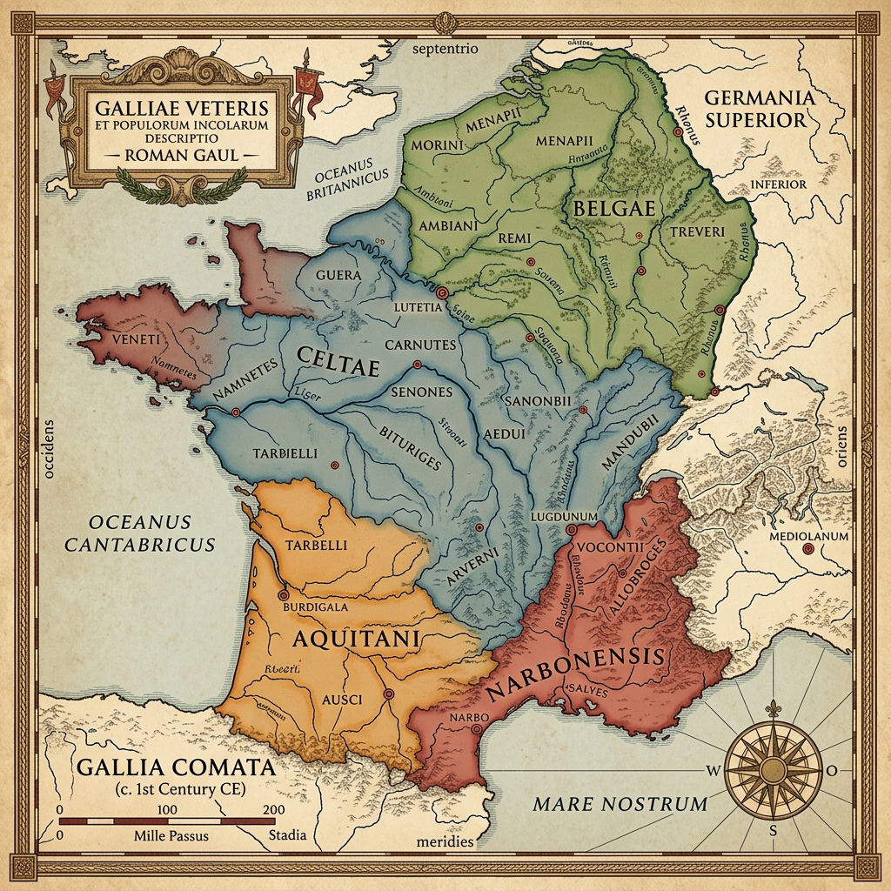
Przed nadejściem legionu rzymskiego, Galia nie stanowiła jednolitego państwa, lecz była konglomeratem około sześćdziesięciu do osiemdziesięciu niezależnych plemion (civitates), często skonfliktowanych ze sobą, a także z sąsiadami germańskimi czy italskimi. Juliusz Cezar w swoim dziele Commentarii de Bello Gallico (Komentarze o wojnie galijskiej) wyróżniał trzy główne grupy etniczne: Akwitańczyków na południowym zachodzie, Celtów (właściwych Galów) w centrum i na wschodzie, oraz Belgów na północy. Rozróżnienia te, choć uproszczone, oddają pewną rzeczywistość językową i kulturową. Akwitańczycy, prawdopodobnie nieindoeuropejscy, byli językowo i kulturowo odmienni, bliżsi Iberom. Belgowie, zamieszkujący obszary między Sekwaną a Renem, mieli silne wpływy germańskie, co Cezar podkreślał, opisując ich jako najwaleczniejszych spośród Galów. Rdzenni Galowie, czyli Celci, zajmowali największe obszary, od Atlantyku po Ren, a ich kultura celtycka była dominująca.
Większość plemion galijskich charakteryzowała się hierarchiczną strukturą społeczną. Na szczycie znajdowała się arystokracja wojenna (equites), której bogactwo opierało się na posiadaniu ziemi, niewolników oraz utrzymywaniu klienteli. Ta warstwa sprawowała władzę polityczną i wojskową, a jej członkowie często rywalizowali o wpływy, co prowadziło do wewnętrznych konfliktów i tworzenia efemerycznych sojuszy. Poniżej arystokracji znajdowała się wolna ludność - rolnicy, rzemieślnicy i kupcy, którzy stanowili trzon siły produkcyjnej i wojskowej. Na samym dole hierarchii znajdowali się niewolnicy, często jeńcy wojenni lub dłużnicy.
Politycznie plemiona galijskie były zorganizowane w różny sposób: od monarchii (np. u Sekwanów przed reformą) po oligarchie arystokratyczne lub formy republikańskie, gdzie władzę sprawowała rada starszych lub zgromadzenie wolnych mężczyzn. Cezar wspomina o corocznie wybieranych urzędnikach, takich jak vergobreti u Eduów, co świadczy o pewnym stopniu rozwinięcia instytucji politycznych. Brak było jednak centralnego państwa; plemiona łączyły się w większe konfederacje, często oparte na relacjach klientelarnych, gdzie potężniejsze plemię (np. Eduowie, Arwernowie) sprawowało hegemonię nad mniejszymi. Te sojusze były niestabilne i często zmieniały się w zależności od bieżących interesów i ambicji poszczególnych rodów arystokratycznych. Przykładem takiej niestabilności była długotrwała rywalizacja między Eduami a Arwernami o hegemonię nad Galią, która osłabiała Celtów i ułatwiła Rzymianom politykę “dziel i rządź”.
Wśród wyższych warstw społecznych Galii szczególną pozycję zajmowali druidzi. Byli oni nie tylko kapłanami, ale także sędziami, nauczycielami, uczonymi i doradcami politycznymi. Ich władza była ponadplemienna, co stanowiło unikalny element jednoczący Galów. Cezar opisuje druidów jako posiadających rozległą wiedzę z zakresu astronomii, filozofii naturalnej, etyki i prawa. Młodzieńcy spędzali nawet dwadzieścia lat na nauce u druidów, przyswajając sobie ogromną ilość wiedzy w formie ustnej, gdyż druidzi nie dopuszczali do spisywania swoich nauk, obawiając się, że “pamięć zostanie osłabiona, a ludzie mniej będą się uczyć”. Ich autorytet był tak wielki, że mogli rozstrzygać spory między plemionami, a ich wyroki były wiążące. Kto nie podporządkował się ich decyzjom, był wykluczany ze społeczności, co w praktyce oznaczało ostracyzm i utratę praw obywatelskich. Druidzi odgrywali również kluczową rolę w rytuałach religijnych, w tym, jak wspominają źródła rzymskie (choć często z propagandowym zabarwieniem), w ofiarach z ludzi, mających na celu przebłaganie bogów lub uzyskanie pomyślności. Ich rola jako strażników wiedzy, prawa i tradycji była nie do przecenienia i stanowiła fundament spójności kulturowej Galów, mimo ich politycznego rozbicia.
Gospodarka Galii przed podbojem rzymskim była rozwinięta i dynamiczna. Jej fundamentem było rolnictwo. Galowie uprawiali różnorodne zboża, takie jak pszenica, jęczmień i proso, stosując zaawansowane techniki, w tym pługi żelazne i systemy nawożenia. Rozwinięta była także hodowla bydła, owiec i świń. W wielu regionach Galii, szczególnie w dorzeczu Rodanu i Loary, istniały duże, dobrze zorganizowane gospodarstwa rolne. Rzemiosło galijskie stało na bardzo wysokim poziomie, zwłaszcza metalurgia. Celtowie byli mistrzami w obróbce żelaza, produkując wysokiej jakości broń (miecze, tarcze), narzędzia rolnicze i rzemieślnicze. Ich umiejętności w obróbce brązu i złota zaowocowały wyrafinowaną biżuterią i przedmiotami użytkowymi, charakteryzującymi się unikalnymi wzorami artystycznymi, takimi jak style La Tène. Galowie byli także biegli w garncarstwie, tkactwie i obróbce drewna. Rozwój gospodarczy sprzyjał powstawaniu oppidów - ufortyfikowanych osad, które pełniły funkcje centrów administracyjnych, handlowych i rzemieślniczych. Były to często potężne grody, otoczone wałami ziemnymi i drewnianymi palisadami, zdolne pomieścić tysiące mieszkańców. Oppida takie jak Bibracte (stolica Eduów) czy Gergowia (stolica Arwernów) były ważnymi ośrodkami wymiany handlowej, utrzymującymi kontakty z Rzymem (przede wszystkim poprzez kolonie greckie w Massalii) oraz innymi regionami celtyckimi i germańskimi. Handel prowadzono zarówno drogą lądową, jak i rzeczną, a w obiegu znajdowały się monety galijskie, często naśladujące wzory greckie i rzymskie. Ta gospodarcza prężność i bogactwo Galii stanowiły jeden z kluczowych czynników, które przyciągały uwagę rozwijającego się imperium rzymskiego.
Podbój Galii przez Juliusza Cezara był jednym z najbardziej spektakularnych i konsekwentnych aktów ekspansji rzymskiej. Rozpoczęty w 58 r. p.n.e., formalnie pod pretekstem obrony rzymskich sojuszników i prowincji przed zagrożeniem ze strony plemion germańskich i migrujących Helwetów, w rzeczywistości stanowił dla Cezara arenę do budowania własnej potęgi politycznej i wojskowej.
Początkowe etapy kampanii to szybkie i zdecydowane działania. W 58 r. p.n.e. Cezar pokonał Helwetów, którzy próbowali migrować przez rzymską prowincję Galia Przedalpejska, a następnie rozprawił się z germańskim wodzem Ariowistem i jego Swebami, którzy osiedlili się w Galii na zaproszenie Sekwanów, stając się zagrożeniem dla Eduów - rzymskich sojuszników. Te zwycięstwa ugruntowały pozycję Cezara jako obrońcy Galii i pozwoliły mu na głębszą interwencję w jej wewnętrzne sprawy. Kolejne lata to seria kampanii mających na celu podporządkowanie sobie poszczególnych plemion. Cezar stosował taktykę „dziel i rządź”, wykorzystując wewnętrzne konflikty galijskie i zawierając sojusze z jednymi plemionami przeciwko innym. Jego legiony, doskonale wyszkolone i zdyscyplinowane, przewyższały galijskich wojowników w zorganizowaniu i taktyce. Rzymska inżynieria wojskowa, zdolna do błyskawicznego budowania mostów, fortyfikacji i maszyn oblężniczych, była kluczowym elementem przewagi. Ekspedycje do Brytanii (55 i 54 p.n.e.) i za Ren (55 i 53 p.n.e.) miały na celu ukaranie plemion wspierających Galów oraz zademonstrowanie rzymskiej potęgi, choć nie doprowadziły do trwałego podboju tych obszarów.
Apogeum oporu galijskiego nastąpiło w 52 r. p.n.e., kiedy to większość plemion, zmęczona rzymską dominacją i zjednoczona pod charyzmatycznym przywództwem Wercyngetoryksa, wodza Arwernów, wznieciła powszechne powstanie.
Bitwa pod Gergowią (52 p.n.e.) stanowiła jeden z nielicznych, a zarazem najbardziej dotkliwych, porażek Juliusza Cezara w Galii. Gergowia, stolica Arwernów, była potężnym oppidum, położonym na płaskowyżu, trudnym do zdobycia. Wercyngetoryks, po serii sukcesów w początkowej fazie powstania, skutecznie wykorzystał ukształtowanie terenu i przewagę liczebną, aby odeprzeć rzymski atak. Cezar, próbując zdobyć miasto, zastosował manewr dywersyjny, ale jego legioniści, być może zbyt entuzjastyczni lub źle poinformowani, zaatakowali bez rozkazu, ponosząc ciężkie straty. Bitwa pod Gergowią, w której Rzymianie stracili około 700 żołnierzy, w tym 46 centurionów, była nie tylko taktyczną klęską, ale przede wszystkim potężnym wzmocnieniem morale Galów i autorytetu Wercyngetoryksa. Pokazała, że Rzymianie nie są niezwyciężeni, co skłoniło kolejne plemiona do przyłączenia się do powstania, w tym potężnych Eduów, dotychczasowych sojuszników Rzymu.
Po Gergowii, Wercyngetoryks, dysponując ogromną armią, wyruszył na spotkanie z Cezarem. Zamiast stoczyć otwartą bitwę, zastosował taktykę spalonej ziemi, niszcząc zapasy i utrudniając Rzymianom zaopatrzenie. Ostatecznie jednak, po potyczce pod Alesią (łac. Alesia), Wercyngetoryks popełnił strategiczny błąd, decydując się na obronę w ufortyfikowanym oppidum Alezji.
Oblężenie Alezji (52 p.n.e.) było kulminacyjnym punktem kampanii galijskiej i jednym z najbardziej imponujących osiągnięć inżynierii wojskowej w starożytności. Wercyngetoryks zamknął się w Alezji z około 80 000 wojowników, licząc na odsiecz ze strony połączonych sił galijskich. Cezar, dysponujący mniejszymi siłami (około 60 000 żołnierzy), podjął niezwykle ambitną decyzję o podwójnym oblężeniu. Najpierw zbudował pierścień fortyfikacji (contravallatio) o długości około 15 km wokół Alezji, aby uniemożliwić ucieczkę obrońcom. Składał się on z palisad, rowów, wież strażniczych i pułapek. Następnie, przewidując nadejście galijskiej odsieczy, zbudował drugi, zewnętrzny pierścień fortyfikacji (circumvallatio) o długości około 21 km, skierowany na zewnątrz, aby chronić swoje wojska przed atakiem z zewnątrz. Rzymianie znaleźli się w pozycji „między dwoma ogniwami”, otoczeni przez otaczających ich Galów. Gdy nadeszła potężna armia galijskiej odsieczy, licząca, według Cezara, nawet 250 000 wojowników, Rzymianie musieli walczyć na dwóch frontach. Mimo przewagi liczebnej Galów, rzymska dyscyplina, inżynieria i dowództwo Cezara okazały się decydujące. Po kilku dniach zaciętych walk, w których Rzymianom groziło zmiażdżenie, siły galijskiej odsieczy zostały rozgromione, a Wercyngetoryks, widząc beznadziejność sytuacji, poddał się Cezarowi. Jego kapitulacja, dramatycznie opisana przez Cezara (Bloch, 1939), symbolizowała koniec zorganizowanego oporu galijskiego i przypieczętowała rzymski podbój Galii.
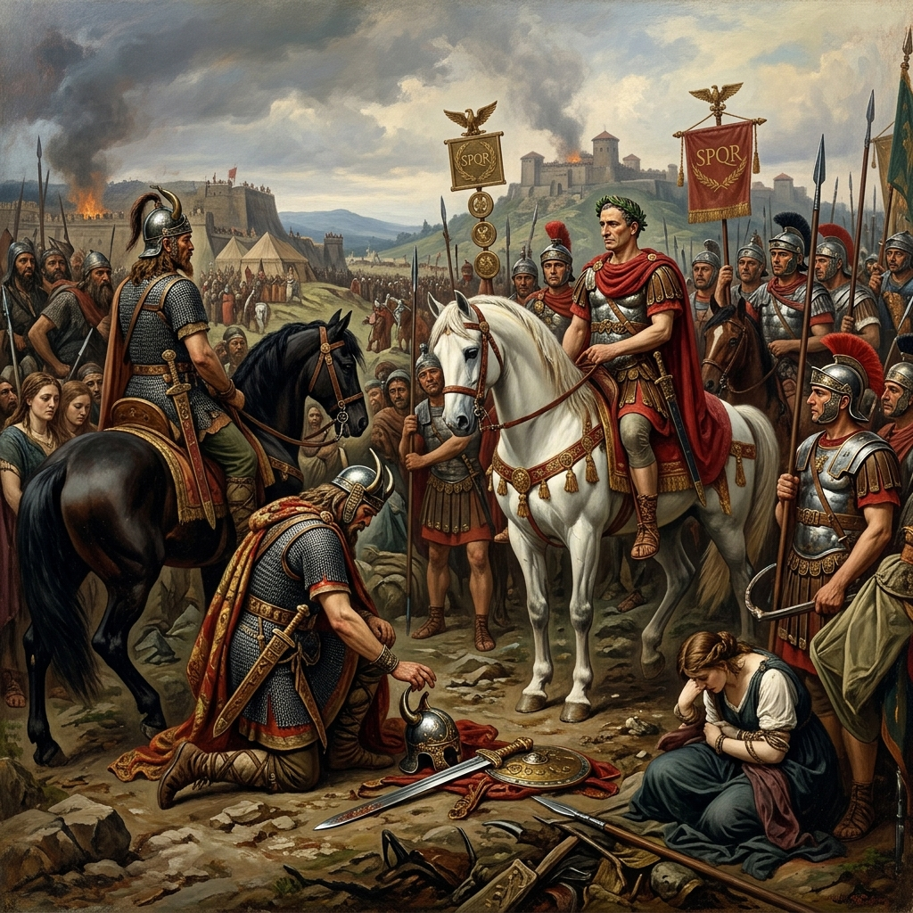
Postać Wercyngetoryksa, pokonanego wodza Arwernów, przeszła niezwykłą ewolucję w historiografii, stając się w XIX wieku symbolem i „pierwszym bohaterem narodowym” Francji. Ta reinterpretacja była ściśle związana z kształtowaniem się francuskiej tożsamości narodowej w okresie Trzeciej Republiki (1870-1940), która poszukiwała swoich korzeni w głębokiej przeszłości, wykraczającej poza dynastię Kapetyngów czy czasy Franków. W kontekście wojny francusko-pruskiej (1870-1871) i rosnącego nacjonalizmu, figura Wercyngetoryksa idealnie wpisywała się w narrację o obronie ojczyzny przed najeźdźcą.
Historycy tacy jak Jules Michelet, Gabriel Monod czy Ernest Lavisse, twórcy podstaw francuskiego programu nauczania historii, promowali obraz Wercyngetoryksa jako odważnego, zjednoczonego wodza, który próbował stworzyć „proto-państwo” galijskie i bronić jego niezależności. Jego kapitulacja pod Alezją, choć tragiczna, była przedstawiana nie jako klęska, lecz jako heroiczne poświęcenie w imię narodu. Pomniki Wercyngetoryksa, w tym monumentalna rzeźba Aimé-Julesa Dalou w Clermont-Ferrand czy posąg autorstwa Antoine’a Etexa w Alezji, stały się widocznymi symbolami tej nacjonalistycznej narracji. W podręcznikach szkolnych, które kształtowały świadomość wielu pokoleń Francuzów, Galowie byli przedstawiani jako „nasi przodkowie (Nora, 1984)” (nos ancêtres les Gaulois), a Wercyngetoryks jako pierwszy, choć tragiczny, bohater, który walczył o wolność, zanim Rzymianie przynieśli cywilizację. Ta romantyczna wizja, choć ahistoryczna z perspektywy starożytnej (Galowie nie tworzyli „narodu” w nowoczesnym sensie), była niezwykle skuteczna w budowaniu spójnej tożsamości narodowej.
Równolegle do tej reinterpretacji, kluczowe źródło do poznania dziejów Galii - Commentarii de Bello Gallico Juliusza Cezara - również podlegało analizie pod kątem swojego propagandowego wymiaru. Dzieło to, pisane przez samego Cezara, nie jest neutralnym sprawozdaniem historycznym, lecz starannie skonstruowanym raportem, mającym na celu usprawiedliwienie jego działań, podkreślenie jego geniuszu wojskowego i politycznego, a także zbudowanie poparcia dla jego ambicji w Rzymie.
Cezar przedstawia Galów jako walecznych, ale niestabilnych i skłonnych do zdrady, co uzasadniało konieczność rzymskiej interwencji. Jednocześnie podkreśla ich siłę, aby uwypuklić skalę swoich zwycięstw. Wercyngetoryks jest ukazany jako zdolny, ale ostatecznie pokonany przeciwnik, co służyło gloryfikacji Cezara. Opisy barbarzyńskich zwyczajów Galów (np. ofiary z ludzi), choć prawdopodobnie oparte na faktach, miały na celu ukazanie ich jako społeczeństwa potrzebującego rzymskiej cywilizacji. De Bello Gallico było zatem potężnym narzędziem propagandy politycznej, adresowanym do rzymskiej elity senackiej i ludu, mającym na celu legitymizację ośmioletniej kampanii, która przyniosła Cezarowi ogromne bogactwa, prestiż i lojalną armię - fundamenty jego późniejszej walki o władzę. Pomimo tego, że jest to źródło stronnicze, pozostaje ono najważniejszym i najbardziej szczegółowym świadectwem podboju Galii, stanowiąc punkt wyjścia dla wszystkich późniejszych badań i interpretacji. Jego wpływ na postrzeganie Galów, Cezara i początków historii Francji jest nie do przecenienia, niezależnie od jego pierwotnych intencji propagandowych.
Okres Pax Romana, trwający od panowania Augusta (27 p.n.e. - 14 n.e.) aż do kryzysu III wieku, stanowił epokę fundamentalnych przekształceń dla Galii, która z krainy plemiennych struktur celtyckich ewoluowała w integralną część Imperium Rzymskiego. Proces romanizacji, choć niejednorodny i o zróżnicowanej intensywności w poszczególnych regionach, był zjawiskiem wielowymiarowym, obejmującym sfery urbanistyczne, gospodarcze, polityczne, społeczne oraz kulturowe. Był to proces, w którym Rzym nie tylko narzucał swoje struktury, ale także wchodził w złożone interakcje z miejscową ludnością, prowadząc do powstania unikalnej syntezy gallorzymskiej. Historiografia, począwszy od klasycznych ujęć (np. T. Frank, M. Rostovtzeff) po współczesne analizy (np. G. Woolf, J. Webster, R. MacMullen), podkreśla złożoność tego zjawiska, odchodząc od wizji jednokierunkowej asymilacji na rzecz dynamicznego dialogu kulturowego.
Miasta, będące kwintesencją rzymskiej cywilizacji, odgrywały kluczową rolę w procesie romanizacji Galii. Nie były one jedynie centrami administracyjnymi czy handlowymi, lecz przede wszystkim ośrodkami propagowania rzymskiego stylu życia, wartości i kultury. Zakładanie kolonii i municipiów oraz przebudowa istniejących osad celtyckich na wzór rzymski były świadomą strategią imperialną, mającą na celu ugruntowanie władzy i integrację prowincji. Charakterystyczne dla rzymskich miast były regularny plan (często oparty na siatce cardo i decumanus), monumentalna architektura publiczna (fora, świątynie, bazyliki, termy, amfiteatry, teatry), zaawansowane systemy wodociągowe i kanalizacyjne, a także luksusowe domy mieszkalne.
Lugdunum, założone jako kolonia rzymska w 43 p.n.e. przez L. Munatiusa Plancusa, szybko stało się jednym z najważniejszych miast Imperium poza Italią. Jego strategiczne położenie u zbiegu Rodanu i Saony uczyniło je naturalnym centrum komunikacyjnym i gospodarczym. Pod rządami Augusta, Lugdunum uzyskało status stolicy trzech prowincji galijskich (Tres Galliae): Gallia Lugdunensis, Aquitania i Belgica. To tu, na Wzgórzu Croix-Rousse, w 12 p.n.e. wzniesiono monumentalny Ołtarz Romy i Augusta (Ara Romae et Augusti), który stał się centralnym punktem kultu imperialnego w Galii. Co roku zbierały się tu delegacje 60 plemion galijskich, aby oddać cześć cesarzowi i Rzymowi, co miało niebagatelne znaczenie dla budowania lojalności i integracji elit.
Lugdunum było wzorcowym przykładem rzymskiej urbanistyki. Posiadało rozbudowane forum, liczne świątynie (w tym świątynię Kybele), imponujące termy, teatr i amfiteatr, akwedukty doprowadzające wodę z odległych źródeł oraz rozległe dzielnice mieszkalne. Było również ośrodkiem menniczym, emitującym monety dla całego zachodniego imperium, co świadczyło o jego centralnej roli gospodarczej. Jako miasto z silną obecnością wojskową i administracyjną, Lugdunum stało się tyglem, w którym rzymscy osadnicy, weterani i zromanizowani Galowie tworzyli nową, dynamiczną społeczność, przyspieszając procesy asymilacji kulturowej i językowej.
Nemausus, leżące w prowincji Gallia Narbonensis, stanowiło inny przykład imponującego rozwoju urbanistycznego. Choć istniało jako osada celtycka przed przybyciem Rzymian, to pod wpływem Augusta przeżyło okres bezprecedensowego rozkwitu. Miasto zostało obdarzone prawami łacińskimi (ius Latii) i stało się siedzibą licznych weteranów, co było częstą strategią Rzymu w celu tworzenia lojalnych enklaw. Architektura Nemausus do dziś świadczy o jego rzymskiej świetności.
Wśród zachowanych zabytków wyróżnić należy:
Nemausus, ze swoimi monumentalnymi budowlami, było nie tylko funkcjonalnym miastem, ale także potężnym symbolem rzymskiej cywilizacji i władzy, mającym na celu zaimponowanie i zintegrowanie miejscowej ludności poprzez demonstrację imperialnej potęgi i dobrobytu.
Rozwój Lutetii, osady plemienia Paryzów na wyspie Île de la Cité na Sekwanie, był bardziej stopniowy niż Lugdunum czy Nemausus. Początkowo niewielka, strategicznie położona osada, Lutetia zyskała na znaczeniu po podboju Cezara. W przeciwieństwie do kolonii, Lutetia rozwijała się jako civitas (ośrodek administracyjny dla terytorium plemiennego) pod rzymskim zarządem. Jej rozkwit nastąpił głównie na lewym brzegu Sekwany (dzisiejsza Dzielnica Łacińska), gdzie wzniesiono charakterystyczne dla rzymskich miast budowle: forum, termy (np. Termy Cluny), amfiteatr (Arènes de Lutèce) i teatr.
Lutetia, choć nie osiągnęła skali Lugdunum, była ważnym węzłem handlowym i komunikacyjnym, wykorzystującym Sekwanę do transportu towarów. Jej rozwój odzwierciedlał proces romanizacji, który nie zawsze wiązał się z natychmiastowym przekształceniem w monumentalne centrum, ale raczej z stopniowym adaptowaniem rzymskich wzorców urbanistycznych i kulturowych do lokalnych warunków. Miasto to, początkowo drugorzędne, z czasem zyskało na znaczeniu, stając się jednym z kluczowych ośrodków administracyjnych i militarnych w późnym Cesarstwie, co świadczy o trwałości rzymskich fundamentów.
Rozbudowana sieć dróg rzymskich była jednym z najważniejszych instrumentów integracji Galii z Imperium. Znana jako viae Romanae, ta infrastruktura służyła nie tylko celom militarnym, umożliwiając szybki ruch wojsk i zaopatrzenia, ale także miała fundamentalne znaczenie dla rozwoju gospodarczego i administracyjnego. Drogi te były świadomie projektowane, budowane z wykorzystaniem zaawansowanych technik inżynieryjnych i utrzymywane przez państwo, co stanowiło ogromne przedsięwzięcie logistyczne.
Główne szlaki wychodziły promieniście z Lugdunum, łącząc je z innymi kluczowymi miastami Galii i dalej z Rzymem oraz innymi prowincjami. Przykładem są drogi prowadzące do Burdigali (Bordeaux), Mediolanum (Mediolan), Augusta Treverorum (Trewir) czy Boulogne-sur-Mer (Gesoriacum), portu do Brytanii. Drogi rzymskie:
Sieć drogowa przyczyniła się do unifikacji przestrzennej i mentalnej Galii, przekształcając ją z mozaiki plemiennych terytoriów w spójny region gospodarczy i administracyjny, ściśle związany z resztą Imperium.
Rzymska polityka wobec podbitych ludów rzadko opierała się na czystej dominacji; znacznie częściej dążyła do integracji, zwłaszcza elit. W Galii, po początkowym oporze i pacyfikacji, Rzym stosował strategię kooptacji miejscowej arystokracji. Celtyccy wodzowie i principes byli stopniowo włączani w rzymskie struktury administracyjne, najpierw na szczeblu lokalnym, a później imperialnym. To podejście było pragmatyczne: zapewniało lojalność, stabilność i efektywne zarządzanie prowincją przy minimalnym zaangażowaniu rzymskich zasobów.
Kluczowym momentem w procesie integracji elit galijskich było przemówienie cesarza Klaudiusza przed Senatem Rzymskim w 48 r. n.e., którego fragmenty zachowały się na tzw. Tabula Claudiana znalezionej w Lugdunum. Klaudiusz, który sam urodził się w Lugdunum i był dobrze zaznajomiony z realiami galijskimi, argumentował za dopuszczeniem przedstawicieli arystokracji z Galii Komatej (tj. Galii właściwej, poza Narbonensis) do senatu rzymskiego i pełnienia urzędów publicznych w Rzymie.
Argumentacja Klaudiusza była dwutorowa:
Mimo oporu konserwatywnych senatorów, Klaudiusz przeforsował swoją wizję. Edykt ten był przełomowy:
W efekcie, w ciągu kilku pokoleń wykształciła się potężna gallorzymska arystokracja, która nie tylko zarządzała swoimi ziemiami w Galii, ale także zajmowała wysokie stanowiska w armii, administracji i Senacie, zasilając kadry Imperium i przyczyniając się do jego stabilności. Przykładem jest rodzina Antoninów, która miała galijskie korzenie, czy późniejsi cesarze galijscy w okresie kryzysu III wieku.
Romanizacja w Galii nie była prostą kapitulacją kultury celtyckiej przed rzymską, lecz złożonym procesem syntezy, w którym elementy obu tradycji łączyły się, tworząc nową, hybrydową tożsamość gallorzymską. Ten proces dotykał wszystkich sfer życia, od religii po język i prawo.
Rzymianie, zazwyczaj tolerancyjni wobec lokalnych kultów, dążyli do ich włączenia w swój system religijny poprzez synkretyzm. Celtowie, z kolei, często chętnie adoptowali rzymskie bóstwa i rytuały, zwłaszcza te związane z dobrobytem i porządkiem.
Pomimo synkretyzmu, niektóre celtyckie tradycje, takie jak kult źródeł, lasów czy lokalnych duchów opiekuńczych, przetrwały, zwłaszcza na obszarach wiejskich, często przyjmując chrześcijańskie szaty w późniejszych wiekach.
Język był jednym z najważniejszych wskaźników i narzędzi romanizacji. W momencie podboju Galia była krainą języków celtyckich, z dominującym językiem galijskim. Rzymianie wprowadzili łacinę jako język administracji, prawa, handlu i edukacji.
Rzymianie, jako naród praworządny, wprowadzili swój system prawny (ius Romanum) na podbitych terytoriach. Początkowo, na terenach Galii, rzymskie prawo wojskowe i publiczne obowiązywało obok lokalnych zwyczajów prawnych, zwłaszcza w sferze prywatnej. Jednakże z czasem, wraz z postępującą romanizacją i rozszerzaniem obywatelstwa rzymskiego, prawo rzymskie stawało się coraz bardziej dominujące.
Podsumowując, Pax Romana i procesy romanizacji były okresem głębokich i trwałych zmian, które ukształtowały Galię na wieki. Rozwój urbanistyczny, sieć dróg, integracja elit oraz synteza kulturowa w sferze religii, języka i prawa doprowadziły do powstania unikalnej tożsamości gallorzymskiej. Ta tożsamość, choć z czasem ewoluująca, stanowiła fundamentalny substrat dla przyszłego królestwa Franków i wczesnośredniowiecznej Francji, pozostawiając niezatarte ślady w języku, prawie, architekturze i mentalności, które przetrwały upadek Imperium i stały się częścią dziedzictwa narodowego.
III wiek n.e. stanowił dla Cesarstwa Rzymskiego epokę głębokich wstrząsów, które fundamentalnie przeobraziły jego struktury polityczne, społeczne i gospodarcze. Galia, jako jedna z najbogatszych i najbardziej zromanizowanych prowincji zachodnich, nie tylko doświadczyła tych turbulencji w pełni, ale stała się także areną szczególnych manifestacji kryzysu, w tym powołania efemerycznego, lecz symbolicznie ważnego Cesarstwa Galijskiego. Okres ten charakteryzował się również intensyfikacją presji zewnętrznych ze strony plemion germańskich, co w połączeniu z postępującą chrystianizacją, zapoczątkowało procesy transformacji, które ostatecznie ukształtowały średniowieczną Francję.
Kryzys III wieku, zwany często “anarchią wojskową”, był okresem niemal półwiecza nieustannych wojen domowych, sukcesji krótkotrwałych cesarzy i uzurpatorów, dezorganizacji gospodarczej oraz nasilonych najazdów zewnętrznych. W Galii, prowincji o kluczowym znaczeniu strategicznym i ekonomicznym, te ogólnocesarskie problemy pogłębiała dodatkowo niewystarczająca ochrona ze strony centralnego rządu rzymskiego. Granica reńska, tradycyjnie jedna z najbardziej ufortyfikowanych, stała się coraz trudniejsza do obrony w obliczu jednoczesnych zagrożeń ze strony Alamanów, Franków i innych plemion germańskich.
W tej atmosferze niestabilności i zagrożenia, w 260 roku n.e., doszło do proklamacji niezależnego Cesarstwa Galijskiego (łac. Imperium Galliarum). Jego założyciel, Marek Kasjanian Postumus, dowódca wojsk rzymskich w Germanii Dolnej, wykorzystał słabość cesarza Waleriana (który dostał się do niewoli perskiej) i jego syna Galiena. Postumus, zyskał poparcie legionów reńskich, ludności prowincji galijskich, Brytanii oraz części Hiszpanii, oferując im stabilność, obronę granic i względny dobrobyt, których nie był w stanie zapewnić Rzym. W istocie, jego działania, choć formalnie uzurpatorskie, były pragmatyczną odpowiedzią na realne potrzeby regionu.
Debata historiograficzna nad naturą Cesarstwa Galijskiego jest złożona. Część badaczy, jak na przykład E. H. Warmington czy J. F. Drinkwater, postrzega je jako secesjonistyczny ruch, wynikający z głęboko zakorzenionej, choć nigdy otwarcie deklarowanej, odrębności galijskiej tożsamości. Argumentują, że Galia, z jej dobrze rozwiniętymi miastami, bogatą gospodarką rolną i handlową oraz silną elitą senatorską, mogła czuć się zdolna do samodzielnego funkcjonowania. Inni, w tym zwłaszcza A. Alföldi, skłaniają się ku interpretacji, że Imperium Galliarum było raczej konserwatywną próbą zachowania rzymskiego porządku i romanitas w obliczu upadku centralnej władzy. Postumus i jego następcy - Wiktoryn, Tetryk I i Tetryk II - nie dążyli do stworzenia nowego, celtyckiego czy proto-francuskiego państwa, lecz do odtworzenia “prawdziwego” Rzymu na zachodzie. Utrzymywali rzymskie instytucje: senat, konsulat, pretoriańską gwardię, a nawet mennictwo, bijąc monety z wizerunkami rzymskich bogów i cesarzy (często tych “dobrych” z II wieku). Ich stolica, początkowo w Kolonii, a później prawdopodobnie w Trewirze, była prężnym ośrodkiem administracyjnym i wojskowym.
Gospodarka Cesarstwa Galijskiego, opierająca się na rolnictwie, rzemiośle i handlu (zwłaszcza z Brytanią i reńskimi plemionami), była stosunkowo stabilna dzięki skutecznym działaniom Postumusa w zakresie obrony granic. To właśnie zdolność do zapewnienia bezpieczeństwa i utrzymania infrastruktury, a nie ideologiczne dążenia, stanowiły o sile jego panowania. Jednak wewnętrzne konflikty, ambicje lokalnych dowódców i wreszcie determinacja cesarza Aureliana do przywrócenia jedności imperium, doprowadziły do upadku Imperium Galliarum w 274 roku po bitwie pod Châlons. Mimo krótkiego istnienia, Cesarstwo Galijskie pozostawiło po sobie ważny ślad w świadomości historycznej. Pokazało, że Galia posiadała potencjał do samodzielnego bytu politycznego i że jej elity były w stanie podjąć się odpowiedzialności za losy regionu w obliczu kryzysu. Było to swego rodzaju preludium do późniejszych, już trwałych, podziałów i regionalizacji władzy w Europie Zachodniej.
Po reintegracji Galii z Cesarstwem Rzymskim przez Aureliana, prowincje galijskie przeżyły krótkotrwałe odrodzenie pod rządami Dioklecjana i Konstantyna, którzy wzmocnili administrację, zreformowali wojsko i odbudowali zniszczone miasta. Trewir, jako jedna z czterech stolic tetrarchii, stał się centrum władzy cesarskiej na zachodzie. Jednakże, stabilność ta była krucha i krótkotrwała. W IV i V wieku presja ze strony plemion germańskich na granice rzymskie, a zwłaszcza na Ren, dramatycznie wzrosła.
Głównymi aktorami tych procesów były plemiona Franków i Alamanów. Frankowie, luźny związek plemion germańskich, zamieszkiwali tereny na północny wschód od Renu. Ich penetracja Galii przebiegała dwutorowo: poprzez sporadyczne najazdy łupieżcze oraz poprzez osiedlanie się na rzymskim terytorium, często za zgodą Rzymian, w ramach systemu foederati (sprzymierzeńców). Rzymianie, borykający się z niedoborami rekrutów i rozciągnięciem sił, coraz częściej uciekali się do rekrutowania Germanów do swojej armii, a nawet do osiedlania całych plemion wzdłuż granic, powierzając im obronę przed innymi najeźdźcami. W IV wieku Frankowie Salijscy osiedlili się w Toxandrii (dzisiejsza Belgia i Holandia), stopniowo rozszerzając swoje wpływy na południe, w kierunku Galii Belgijskiej.
Alamanowie, kolejne potężne plemię germańskie, koncentrowali swoje najazdy na wschód od Renu, zagrażając zwłaszcza Galii Lyońskiej i Germanii Górnej. Ich obecność była bardziej destrukcyjna, często wiązała się z grabieżą i niszczeniem miast. Mimo kilku zwycięstw rzymskich cesarzy, takich jak Julian Apostata pod Argentoratum (Strasburg) w 357 roku, presja Alamanów nigdy nie została całkowicie wyeliminowana.
Przełomowy moment nastąpił w noc sylwestrową 406/407 roku, kiedy to koalicja plemion germańskich - Wandalów, Swebów i Alanów - przekroczyła zamarznięty Ren, wlewając się do Galii. To wydarzenie symbolizuje ostateczne załamanie rzymskiej obrony granicznej i otwarcie drogi dla masowej migracji. Następne dziesięciolecia przyniosły postępujące rozpadanie się rzymskiej administracji i wojska w Galii. Wandalowie i Swebowie przeszli przez Galię do Hiszpanii, ale pozostawili za sobą spustoszenie. Wizygoci, początkowo jako foederati, osiedlili się w Akwitanii, tworząc swoje królestwo ze stolicą w Tuluzie. Burgundowie, również jako foederati, zajęli tereny wokół Genewy i Lyonu. Frankowie natomiast, stopniowo rozszerzali swoje panowanie na północnej Galii, tworząc zalążki przyszłego państwa frankijskiego.
Procesy te miały głębokie konsekwencje. Z jednej strony, doprowadziły do upadku rzymskiej władzy centralnej i decentralizacji politycznej. Z drugiej strony, nie oznaczały całkowitego zniszczenia romanitas. Germanie, wkraczając na tereny rzymskie, często przejmowali elementy rzymskiej kultury, prawa i administracji. Elity galijsko-rzymskie, choć osłabione, nadal odgrywały istotną rolę, zwłaszcza w miastach i w strukturach kościelnych. Był to okres syntezy, w którym germańskie tradycje wojskowe i prawne zaczęły mieszać się z rzymskim dziedzictwem cywilizacyjnym, tworząc podwaliny nowej kultury i społeczeństwa.
Chrystianizacja Galii była procesem długotrwałym i złożonym, rozciągającym się od II do VI wieku n.e. Początkowo chrześcijaństwo pojawiało się głównie w miastach, zwłaszcza w ośrodkach handlowych i portowych, takich jak Lyon czy Marsylia, dzięki kontaktom z Bliskim Wschodem i Rzymem. W II wieku Galia była już świadkiem męczeństwa chrześcijan, czego przykładem są prześladowania w Lyonie w 177 roku, opisane przez Euzebiusza z Cezarei.
Wczesna ewangelizacja Galii, zwłaszcza jej północnych regionów, jest ściśle związana z postacią św. Dionizego (Dionizego Paryskiego). Według tradycji, Dionizy był jednym z siedmiu biskupów wysłanych z Rzymu do Galii około połowy III wieku, aby ewangelizować region. Osiedlił się w Lutetii Parisiorum (Paryżu) i został pierwszym biskupem miasta. Jego misja zakończyła się męczeńską śmiercią, prawdopodobnie podczas prześladowań za cesarza Decjusza lub Waleriana. Został ścięty na Wzgórzu Marsa (później nazwanym Montmartre - Góra Męczenników) wraz ze swoimi towarzyszami, Rustykusem i Eleuteriuszem. Legenda o św. Dionizym, zwłaszcza ta o jego wędrówce z własną głową w ręku, jest późniejszym dodatkiem, ale jego historyczna rola jako patrona Paryża i jednego z najważniejszych świętych Francji jest niezaprzeczalna. Jego kult, rozwijający się wokół opactwa Saint-Denis, stał się symbolem ciągłości chrześcijańskiej tradycji i tożsamości królewskiej Francji.
Kluczową postacią w procesie chrystianizacji Galii, zwłaszcza jej obszarów wiejskich, był św. Marcin z Tours (ok. 316-397). Był on żołnierzem rzymskim, który po nawróceniu i porzuceniu służby wojskowej, stał się uczniem św. Hilarego z Poitiers, jednego z Ojców Kościoła galijskiego. Marcin założył pierwszy klasztor na Zachodzie w Ligugé koło Poitiers (ok. 361 r.), a następnie, po objęciu biskupstwa w Tours (ok. 371 r.), klasztor w Marmoutier.
Działalność Marcina była rewolucyjna. W przeciwieństwie do wcześniejszych misjonarzy, którzy koncentrowali się na miastach, Marcin aktywnie podróżował po wsiach Galii, niszcząc pogańskie świątynie i posągi, karczując święte gaje i zakładając kościoły oraz klasztory. Jego metody były bezpośrednie i często konfrontacyjne, ale skutecznie przyczyniały się do wykorzenienia pogaństwa, które wciąż było silne na prowincji. Marcin był również pionierem zachodniego monastycyzmu, promując ascetyczny tryb życia i wspólnoty zakonne jako ośrodki ewangelizacji i nauki. Jego wpływ na Galii był ogromny, a jego kult szybko rozprzestrzenił się, czyniąc Tours jednym z najważniejszych ośrodków pielgrzymkowych w średniowiecznej Europie. Żywot Marcina, spisany przez Sulpicjusza Sewerusa, stał się wzorcem hagiograficznym i ważnym źródłem do poznania procesu chrystianizacji Galii.
W miarę postępującego rozpadu rzymskiej administracji cywilnej w IV i V wieku, biskupi galijscy zaczęli odgrywać coraz większą rolę nie tylko w sferze duchowej, ale także w życiu publicznym i politycznym. Miasta, które były naturalnymi centrami rzymskiej władzy, stały się również ośrodkami diecezji. Kiedy prefekci i inni urzędnicy cywilni opuszczali swoje posterunki lub tracili wpływy, to biskupi, często wywodzący się z lokalnych elit senatorskich lub zamożnych rodzin, przejmowali ich obowiązki.
Ich rola obejmowała szeroki zakres funkcji:
W V wieku, kiedy nominalna władza cesarska na zachodzie zanikła, a Galia została podzielona między różne królestwa germańskie (Wizygoci, Burgundowie, Frankowie), biskupstwa pozostały jedyną spójną i powszechnie uznawaną strukturą administracyjną. To właśnie biskupi, tacy jak św. Remigiusz z Reims, odegrali kluczową rolę w nawróceniu Chlodwiga, króla Franków, na katolicyzm, co miało fundamentalne znaczenie dla przyszłości Galii i Europy. Ich działalność, umacniająca pozycję Kościoła, położyła podwaliny pod średniowieczną strukturę społeczną i polityczną, w której Kościół był nie tylko siłą duchową, ale także potężnym graczem politycznym i społecznym.
Podsumowując, III, IV i V wiek były dla Galii okresem dynamicznych przemian. Kryzys imperium i eksperyment z Cesarstwem Galijskim ujawniły regionalne ambicje i zdolność do samoorganizacji. Najazdy barbarzyńców doprowadziły do upadku rzymskiej władzy, ale także do powstania nowego, synkretycznego społeczeństwa. W tym chaosie, chrześcijaństwo, dzięki misjonarzom takim jak św. Dionizy i św. Marcin, oraz dzięki rosnącej roli biskupstw, stało się nie tylko dominującą religią, ale także kluczową siłą organizacyjną i kulturową, która pozwoliła na przetrwanie i transformację galijskiego dziedzictwa w nową, średniowieczną rzeczywistość.
Ddecyzja Chlodwiga I (Bloch, 1939), władcy Franków Salickich, o przyjęciu chrztu w obrządku katolickim około 496 roku n.e. (tradycyjnie datowana na Boże Narodzenie) stanowiła jeden z najbardziej przełomowych momentów w historii wczesnośredniowiecznej Europy i fundament, na którym wzniesiono przyszłe państwo francuskie. W kontekście upadku Imperium Rzymskiego na Zachodzie i kształtowania się nowych królestw barbarzyńskich, akt ten miał dalekosiężne konsekwencje nie tylko dla dynastii Merowingów, ale i dla całego porządku geopolitycznego kontynentu.
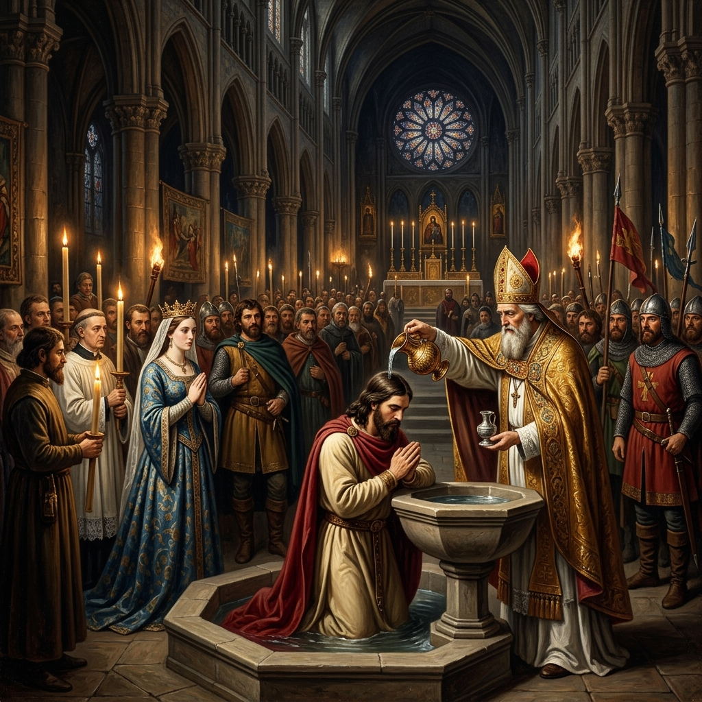
Na przełomie V i VI wieku n.e. większość plemion germańskich, które osiedliły się na terenach byłego imperium, przyjęła chrześcijaństwo w formie ariańskiej - doktrynie potępionej na Soborze Nicejskim w 325 roku. Wizygoci w Akwitanii i Hiszpanii, Wandalowie w Afryce Północnej oraz Ostrogoci w Italii wyznawali arianizm, co stwarzało głębokie rozłamy religijne i polityczne między nimi a rdzenną, gallorzymską ludnością, która w przeważającej mierze pozostała wierna katolicyzmowi nicejskiemu. Chlodwig, pogański wódz, który stopniowo jednoczył plemiona frankijskie i rozszerzał swoje panowanie na północną Galię, stanął przed strategicznym wyborem, który zdefiniowałby charakter jego królestwa.
Motywacje Chlodwiga do przyjęcia katolicyzmu są przedmiotem intensywnej debaty historiograficznej. Tradycyjna narracja, uwieczniona przez Grzegorza z Tours w jego Historii Franków (VI w.), przedstawia nawrócenie jako wynik boskiej interwencji. Chlodwig, stojąc w obliczu klęski w bitwie pod Tolbiac (prawdopodobnie 496 r.) przeciwko Alamanom, miał wezwać Boga swojej katolickiej żony, Klotyldy (księżniczki burgundzkiej), obiecując chrzest w zamian za zwycięstwo. Po triumfie, dotrzymał słowa i został ochrzczony wraz z trzema tysiącami swoich wojowników przez biskupa Remigiusza w Reims. Choć elementy tej opowieści mogą nosić znamiona hagiografii i politycznej propagandy, nie ulega wątpliwości, że Klotylda, gorliwa katoliczka, odegrała kluczową rolę w jego decyzji, wywierając stały wpływ na męża.
Współczesna historiografia skłania się ku bardziej pragmatycznym interpretacjom, nie wykluczając jednak szczerości religijnych pobudek. Decyzja Chlodwiga była przede wszystkim genialnym posunięciem geopolitycznym. Przyjęcie katolicyzmu otworzyło mu drogę do:
Skutki chrztu były transformacyjne. Chlodwig nie tylko scalił ziemie galijskie pod panowaniem Franków, ale także zintegrował je kulturowo i politycznie z dziedzictwem rzymskim i chrześcijańskim. Królestwo Merowingów stało się nie tylko spadkobiercą, ale i kontynuatorem cywilizacji rzymskiej w Galii, co odróżniało je od innych państw postrzymskich.
Państwo Merowingów, choć zjednoczone pod katolickim sztandarem, rozwijało się w oparciu o koncepcje władzy i własności, które znacząco odbiegały od rzymskich idei res publica. Jego charakter można scharakteryzować przez kilka kluczowych cech:
Merowingowie, jako władcy germańscy, postrzegali królestwo jako swoją osobistą własność, dziedziczoną i dzieloną między synów, podobnie jak prywatny majątek. Brakowało tu rzymskiego pojęcia państwa jako odrębnej, publicznej instytucji, której władca jest jedynie sługą. Ta patrymonialna koncepcja miała głębokie konsekwencje:
Jednym z najważniejszych dziedzictw Chlodwiga była kodyfikacja prawa Franków Salickich, znana jako Lex Salica, datowana na początek VI wieku. Był to zbiór zwyczajów prawnych, które regulowały życie społeczne i gospodarcze Franków. Choć pierwotnie dotyczyło ono głównie Franków, z czasem zaczęło obowiązywać także ludność gallorzymską, zwłaszcza w kwestiach karnych.
Kluczowe aspekty prawa salickiego obejmowały:
Prawo salickie, mimo że było próbą uporządkowania życia prawnego, nie zapobiegło fragmentacji politycznej, lecz w pewnym sensie ją sankcjonowało poprzez zasady dziedziczenia.
Patrymonialna koncepcja państwa i zasady dziedziczenia prowadziły do permanentnego rozbicia królestwa Franków na mniejsze jednostki, które, choć nominalnie częścią jednego królestwa, często prowadziły ze sobą wojny. Trzy główne regiony, które wykrystalizowały się w wyniku tych podziałów, to:
Te podziały nie były stabilne; granice zmieniały się wraz z kolejnymi podziałami i wojnami domowymi. Ciągłe konflikty między królami dzielnicowymi osłabiały monarchię i sprzyjały wzrostowi potęgi lokalnych arystokratów.
W miarę upływu czasu, władza królów Merowingów stopniowo słabła, a dynastia popadła w dekadencję, co zaowocowało określeniem ich mianem „gnuśnych królów” (rois fainéants). Termin ten, choć częściowo jest propagandą późniejszych Karolingów, którzy chcieli usprawiedliwić uzurpację tronu, oddaje rzeczywisty spadek znaczenia monarchów Merowingów w VII i VIII wieku.
Przyczyny tej dekadencji były złożone:
W próżni władzy, która powstała w wyniku osłabienia monarchii, rosła potęga majordomów (maior domus). Początkowo byli to urzędnicy królewskiego dworu, odpowiedzialni za zarządzanie majątkiem królewskim i administrowanie pałacem. Jednak w VII wieku, zwłaszcza w Austrazji, urząd majordoma stał się dziedziczny i przejął faktyczne funkcje rządowe.
Najpotężniejszą rodziną majordomów stali się Pippinidzi, wywodzący się z Austrazji. Wśród nich wyróżnili się:
Przejście władzy od Merowingów do Karolingów nie było gwałtownym przewrotem, lecz stopniowym procesem, który trwał ponad wiek. Było to wynikiem ewolucji, w której realna władza przeszła z rąk nominalnych królów na rzecz ich potężnych „zarządców pałacu”, którzy z czasem uzyskali wystarczającą legitymację, by formalnie zasiąść na tronie. Decyzja Chlodwiga o chrzcie, choć stanowiła fundament państwa Franków, nie uchroniła jego potomków przed konsekwencjami patrymonialnej koncepcji państwa i wewnętrznych podziałów, które ostatecznie doprowadziły do upadku jego dynastii.
Przejęcie władzy przez dynastię Karolingów, formalnie w 751 roku, było kulminacją trwającego ponad sto lat procesu stopniowego marginalizowania władzy Merowingów, którzy u progu VIII wieku stali się „królami gnuśnymi” (rois fainéants), symbolicznymi figurami pozbawionymi realnego wpływu na rządy. Rzeczywista władza w państwie frankijskim spoczywała w rękach majordomów (łac. maior domus), najwyższych urzędników dworskich, którzy zarządzali dworem królewskim i sprawowali faktyczną kontrolę nad administracją, wojskiem oraz polityką zewnętrzną. To właśnie z ich rodu, wywodzącego się z Austrazji, wyłoniła się dynastia Karolingów, której ambicje i zdolności militarne oraz polityczne doprowadziły do stworzenia imperium o bezprecedensowej skali wczesnośredniowiecznej Europie.
Kluczowym momentem w umacnianiu pozycji rodu Karolingów było panowanie Karola Martela (ok. 688-741), majordoma Austrazji, a następnie całego państwa frankijskiego. Jego zdolności militarne i polityczne pozwoliły na pokonanie wewnętrznych rywali oraz skuteczną obronę granic. Najbardziej znanym, choć często idealizowanym w późniejszej historiografii, wydarzeniem związanym z Karolem Martelem jest bitwa pod Poitiers (zwana także bitwą pod Tours) w 732 roku. Wówczas wojska frankijskie pod jego dowództwem starły się z armią Umajjadów, która po podboju Półwyspu Iberyjskiego i Septymanii, wkroczyła głęboko na terytorium Galii.
Zwycięstwo pod Poitiers miało wielowymiarowe znaczenie. Po pierwsze, militarnie zahamowało ekspansję muzułmańską w głąb Europy Zachodniej, choć nie była to jedyna i decydująca bitwa w tym konflikcie. W oczach ówczesnych i późniejszych kronikarzy, jak np. autora Kroniki Fredegara, Karol Martel jawił się jako obrońca chrześcijaństwa, co wzmocniło jego autorytet w oczach Kościoła i ludności frankijskiej. Po drugie, politycznie, triumf ten umocnił pozycję Karola Martela jako niekwestionowanego władcy Franków, mimo że formalnie nadal był “tylko” majordomem. Umożliwiło mu to dalsze konsolidowanie władzy, podporządkowanie sobie Akwitanii i Burgundii, a także reformę wojska, polegającą na szerszym wykorzystaniu ciężkiej jazdy, co miało kluczowe znaczenie dla przyszłych sukcesów militarnych Karolingów. Co istotne, Karol Martel nie zdecydował się na detronizację Merowingów, utrzymując fasadę ich władzy, co świadczy o jego politycznej roztropności i być może braku wystarczającej legitymacji do objęcia tronu.
Dziedzictwo Karola Martela przejął jego syn, Pepin Krótki (714-768), który kontynuował politykę umacniania pozycji rodu. Pepin, w przeciwieństwie do ojca, nie zadowolił się rolą majordoma i dążył do formalnego objęcia korony. Proces ten był starannie przygotowany i opierał się na strategicznym sojuszu z papiestwem. W 751 roku Pepin wysłał posłów do papieża Zachariasza z zapytaniem: “Czy dobrze jest, by królem był ten, kto nie ma władzy królewskiej, czy ten, kto ma władzę królewską?”. Odpowiedź papieża, podyktowana jego własnymi potrzebami politycznymi (zagrożenie ze strony Longobardów w Italii i poszukiwanie silnego sojusznika), była jednoznaczna: “lepiej nazwać królem tego, kto sprawuje władzę”.
Ta papieska legitymacja otworzyła drogę do przewrotu. Ostatni król merowiński, Childeryk III, został złożony z tronu, ogolony (symbolicznie pozbawiony władzy, ponieważ długie włosy były atrybutem królewskiej godności Merowingów) i zamknięty w klasztorze. Następnie, w listopadzie 751 roku, Pepin Krótki został wybrany i koronowany na króla Franków w Soissons, prawdopodobnie przez arcybiskupa Bonifacego, legata papieskiego. Co niezwykle istotne, Pepin został również namaszczony olejami świętymi, co było aktem o głębokim znaczeniu religijnym i symbolicznym, zapożyczonym z tradycji biblijnej (namaszczenie królów Izraela). Ten rytuał, wprowadzony po raz pierwszy w Europie Zachodniej, podniósł władzę królewską ponad świecki wybór, nadając jej boski charakter i tworząc nową podstawę legitymizacji dynastycznej - łaskę Bożą.
Akt koronacji i namaszczenia Pepina Krótkiego miał dalekosiężne konsekwencje. Ustanowił on precedens dla przyszłych monarchii europejskich, łącząc władzę świecką z sakralną. W 754 roku, papież Stefan II osobiście przybył do Francji i ponownie namaścił Pepina oraz jego synów, Karola i Karlomana, w opactwie Saint-Denis, zakazując Frankom wybierania królów z innego rodu niż ten, który “Bóg zechciał wynieść”. W zamian za to Pepin dwukrotnie interweniował w Italii, pokonując Longobardów i przekazując papieżowi terytoria wokół Rzymu (tzw. “Donacja Pepina”), co stało się fundamentem Państwa Kościelnego. To wydarzenie nie tylko umocniło sojusz Karolingów z papiestwem, ale także zapoczątkowało skomplikowaną relację między władzą świecką a duchowną, która przez wieki definiowała politykę europejską.
Pepin Krótki zmarł w 768 roku, pozostawiając państwo swoim synom, Karolowi i Karlomanowi. Po nagłej śmierci Karlomana w 771 roku, Karol (późniejszy Karol Wielki) przejął pełnię władzy nad państwem frankijskim, rozpoczynając okres najświetniejszego rozkwitu dynastii Karolingów i budując imperium, które na krótko odrodziło ideę jedności Zachodu.
Karol Wielki, władca o niezwykłej energii i wizji, podjął szeroko zakrojone reformy mające na celu konsolidację i efektywne zarządzanie rozległym imperium. Centralnym elementem jego administracji były hrabstwa (comitatus), stanowiące podstawowe jednostki terytorialne. Na czele każdego hrabstwa stał hrabia (comes), mianowany przez króla i odpowiedzialny za utrzymanie porządku, zbieranie podatków, dowodzenie lokalnym wojskiem oraz sprawowanie sądownictwa w imieniu monarchy. Hrabia był urzędnikiem królewskim, a nie niezależnym feudalnym panem, choć w praktyce jego pozycja bywała silna, zwłaszcza na odległych obszarach. Karol Wielki dążył do zapewnienia lojalności hrabiów poprzez nadawanie im ziemi w beneficja, ale jednocześnie starał się ich kontrolować.
Na granicach imperium tworzono marchie (marchiae), czyli specjalne okręgi wojskowe o wzmocnionym statusie obronnym. Na ich czele stali margrabiami (marchiones), którzy posiadali szersze uprawnienia militarne i administracyjne niż zwykli hrabiowie, co wynikało z konieczności stałej gotowości do odparcia najazdów lub prowadzenia ekspansji. Przykładem mogą być Marchia Hiszpańska czy Marchia Bretońska.
Kluczowym narzędziem kontroli centralnej i utrzymania spójności imperium byli missi dominici (wysłannicy pana/władcy). Byli to zazwyczaj dwaj urzędnicy - jeden świecki (hrabia) i jeden duchowny (biskup lub opat) - wysyłani przez Karola w regularnych odstępach czasu do różnych regionów imperium. Ich zadaniem było nadzorowanie lokalnej administracji, sprawdzanie przestrzegania kapitulariów (królewskich aktów prawnych), rozpatrywanie skarg, kontrola sądów oraz inspekcja majątków królewskich i kościelnych. Missi dominici byli oczami i uszami cesarza, gwarantującymi, że jego wola była przestrzegana, a nadużycia minimalizowane. Ich działalność jest uważana za jeden z najbardziej innowacyjnych elementów administracji karolińskiej, świadczący o dążeniu do centralizacji władzy w obliczu rozległości terytorialnej i trudności komunikacyjnych.
Karol Wielki wydawał liczne kapitularia, czyli zbiory przepisów prawnych i administracyjnych, które regulowały szeroki zakres spraw, od organizacji wojska i administracji, przez sprawy kościelne, po kwestie gospodarcze i społeczne. Były one odczytywane na zgromadzeniach lokalnych i miały moc obowiązującą w całym imperium, co dodatkowo wzmacniało spójność prawną i administracyjną.
Sukcesy terytorialne Karola Wielkiego były ściśle związane z jego zdolnościami militarnymi i reformami wojskowymi. Armia frankijska, oparta na obowiązku służby wojskowej wolnych Franków, została zreorganizowana i wzmocniona. Karol Wielki kładł nacisk na mobilność i efektywność. Wprowadzono system, w którym każdy wolny człowiek posiadający określoną ilość ziemi był zobowiązany do służby konnej, co przyczyniło się do dominacji ciężkiej jazdy. W przypadku mniejszych posiadłości, kilku wolnych ludzi musiało wspólnie wyposażyć jednego wojownika.
Coroczne zwoływanie wojska na „polach marcowych” (później „majowych”) było okazją do przeglądu sił, planowania kampanii i wydawania kapitulariów. Karol prowadził liczne kampanie wojenne, które doprowadziły do podboju Królestwa Longobardów w Italii (774), aneksji Bawarii, długotrwałych i brutalnych wojen z Sasami (772-804), w wyniku których Sasi zostali siłą schrystianizowani i włączeni do imperium, a także do utworzenia Marchii Hiszpańskiej po kampaniach przeciwko Maurom. Te podboje nie tylko rozszerzyły granice państwa, ale także przyniosły znaczne bogactwo w postaci łupów i danin, co finansowało dalsze działania militarne i administrację.
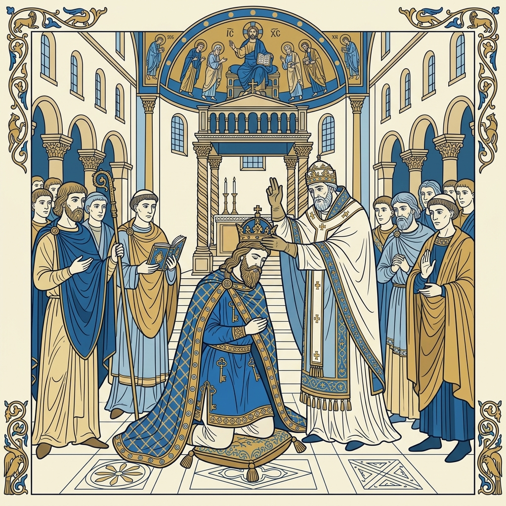
Kulminacyjnym punktem panowania Karola Wielkiego była jego koronacja na cesarza w Rzymie, w Bazylice Świętego Piotra, w Boże Narodzenie 800 roku. Wydarzenie to, pełne symboliki i dalekosiężnych konsekwencji, do dziś pozostaje przedmiotem intensywnych debat historiograficznych.
Kontekst koronacji był złożony. W Rzymie panowała napięta sytuacja polityczna. Papież Leon III był oskarżany przez rzymską arystokrację o krzywoprzysięstwo i niemoralne prowadzenie się, co doprowadziło do próby jego detronizacji i pobicia w 799 roku. Uciekł on do Karola Wielkiego, szukając jego wsparcia. Karol, jako obrońca Kościoła i najpotężniejszy władca Zachodu, przybył do Rzymu, by rozstrzygnąć spór. W grudniu 800 roku zwołał synod, na którym papież Leon III złożył przysięgę oczyszczającą się z zarzutów.
Równocześnie, na Wschodzie, tron cesarski w Konstantynopolu zajmowała cesarzowa Irena, która obaliła i oślepiła swojego syna Konstantyna VI. Dla wielu na Zachodzie, zwłaszcza dla papieża, tron cesarski był zatem formalnie pusty lub zajmowany w sposób nieprawowity (kobieta nie mogła być cesarzem w ówczesnej tradycji rzymskiej). Stworzyło to ideologiczną próżnię, którą Karol Wielki mógł wypełnić.
Według relacji kronikarzy, zwłaszcza Einharda w Vita Karoli Magni, koronacja była dla Karola zaskoczeniem: “Gdy w dzień Narodzenia Pańskiego wstał po mszy przed ołtarzem do modlitwy, papież Leon włożył mu koronę na głowę, a cały lud rzymski zawołał: ‘Karolowi Augustowi, wielkiemu i pokojowemu cesarzowi, ukoronowanemu od Boga, życie i zwycięstwo!’”. Einhard sugeruje, że Karol byłby niezadowolony z tego wydarzenia, gdyby wiedział o nim wcześniej, co jest przedmiotem spekulacji. Wielu historyków uważa, że Karol doskonale zdawał sobie sprawę z planów koronacji, ale być może nie podobała mu się forma, w której papież odegrał kluczową rolę, nakładając koronę. Sugeruje to, że papież próbował w ten sposób podkreślić swoją wyższość i prawo do nadawania godności cesarskiej, co w przyszłości doprowadziło do konfliktów między papiestwem a cesarstwem.
Niezależnie od intencji Karola, koronacja miała ogromne znaczenie symboliczne i polityczne. Oznaczała odnowienie idei cesarstwa zachodniorzymskiego (renovatio imperii Romanorum) po ponad trzech wiekach od upadku ostatniego cesarza Romulusa Augustulusa w 476 roku. Karol Wielki stał się sukcesorem cesarzy rzymskich, co dawało mu uniwersalną legitymację do sprawowania władzy nad całym chrześcijańskim Zachodem. Jednocześnie, poprzez koronację, papiestwo zyskało potężnego obrońcę, a także umocniło swoją pozycję jako siły zdolnej do kreowania cesarzy.
Koronacja Karola Wielkiego stworzyła nową strukturę polityczną w Europie, opartą na dwóch uniwersalnych władzach: cesarstwie i papiestwie. Ta “dualistyczna” wizja władzy stała się podstawą średniowiecznej myśli politycznej i źródłem wielu konfliktów (np. spór o inwestyturę). Imperium Karola Wielkiego, choć efemeryczne jako jednolita struktura po jego śmierci, położyło podwaliny pod przyszłe państwa Europy Zachodniej i Środkowej, zwłaszcza Święte Cesarstwo Rzymskie Narodu Niemieckiego. Idea cesarstwa jako uniwersalnej monarchii przetrwała wieki, kształtując politykę, prawo i kulturę kontynentu.
Panowanie Karola Wielkiego to nie tylko ekspansja terytorialna i reformy administracyjne, ale także niezwykłe ożywienie kulturalne i intelektualne, znane jako Renesans Karoliński. W obliczu upadku edukacji i piśmiennictwa po upadku Cesarstwa Zachodniorzymskiego, Karol Wielki podjął świadome działania mające na celu odrodzenie nauki, sztuki i religii.
W VIII wieku Europa Zachodnia borykała się z głębokim kryzysem intelektualnym. Poziom wykształcenia kleru był niski, co prowadziło do błędów liturgicznych, niezrozumienia tekstów religijnych i ogólnego spadku kultury umysłowej. Karol Wielki, choć sam prawdopodobnie nigdy nie nauczył się płynnie pisać, doskonale rozumiał znaczenie edukacji dla sprawnego zarządzania państwem, ujednolicenia liturgii i wzmocnienia chrześcijaństwa. Jego głównymi celami były:
Karol Wielki ściągnął na swój dwór wybitnych uczonych z całej Europy, tworząc swego rodzaju “akademię dworską” (schola palatina). Najważniejszą postacią tego środowiska był Alkuin z Yorku (ok. 735-804), anglosaski uczony i teolog, który został opatem klasztoru w Tours. Alkuin stał się głównym doradcą Karola w sprawach edukacji i reformy kościelnej. Pod jego kierownictwem dwór Karola stał się centrum odrodzenia intelektualnego.
Odrodzenie nauki nie ograniczało się do dworu. Karol Wielki wydał szereg zarządzeń (np. Admonitio generalis z 789 r. i Epistola de litteris colendis), w których nakazywał zakładanie szkół przy katedrach i klasztorach. Miały one kształcić nie tylko przyszłych duchownych, ale także świeckich urzędników. Te szkoły katedralne i klasztorne stały się ośrodkami nauki i kopiowania manuskryptów, odgrywając kluczową rolę w zachowaniu dziedzictwa antycznego.
Program nauczania w szkołach karolińskich opierał się na siedmiu sztukach wyzwolonych (septem artes liberales), które dzieliły się na:
Odrodzenie tych dyscyplin, choć nie zawsze w pełni realizowane, stanowiło fundament średniowiecznej edukacji i przyczyniło się do podniesienia poziomu intelektualnego społeczeństwa. W klasztornych skryptoriach prowadzono intensywną pracę nad kopiowaniem i przepisywaniem ksiąg. Dzięki temu przetrwały do naszych czasów liczne dzieła autorów klasycznych (np. Cycerona, Wergiliusza) oraz teksty patrystyczne (Ojców Kościoła). Była to praca o nieocenionym znaczeniu dla zachowania dziedzictwa kulturowego Europy.
Jednym z najważniejszych osiągnięć Renesansu Karolińskiego było stworzenie minuskuły karolińskiej (minuscula carolina). Przed jej wprowadzeniem w Europie dominowały różne, często trudne do odczytania typy pisma (np. minuskuła merowińska, insularna), charakteryzujące się skomplikowanymi ligaturami i brakiem standaryzacji. Minuskuła karolińska, opracowana prawdopodobnie w skryptorium w Corbie lub Tours pod wpływem Alkuina, była pismem o wiele prostszym, czytelniejszym i bardziej regularnym. Charakteryzowała się:
Wprowadzenie minuskuły karolińskiej zrewolucjonizowało proces kopiowania i czytania. Umożliwiło to szybkie i efektywne rozpowszechnianie tekstów w całym imperium, ułatwiając komunikację i standaryzację języka pisanego. Jej wpływ był tak ogromny, że stała się podstawą dla późniejszych pism średniowiecznych, a co więcej, była inspiracją dla humanistów renesansowych, którzy na jej bazie stworzyli pismo antykwę, będące z kolei przodkiem współczesnych czcionek łacińskich. Bez minuskuły karolińskiej, wiele tekstów antycznych mogłoby zaginąć, a rozwój piśmiennictwa i edukacji byłby znacznie spowolniony.
Renesans Karoliński, choć krótki i w dużej mierze zależny od osobistej inicjatywy Karola Wielkiego, stanowił fundamentalny etap w rozwoju kultury europejskiej. Położył podwaliny pod odrodzenie XII wieku i późniejsze renesanse, zachowując i przekazując dziedzictwo antyczne, a także tworząc nowe, innowacyjne narzędzia intelektualne, które kształtowały średniowieczną Europę.
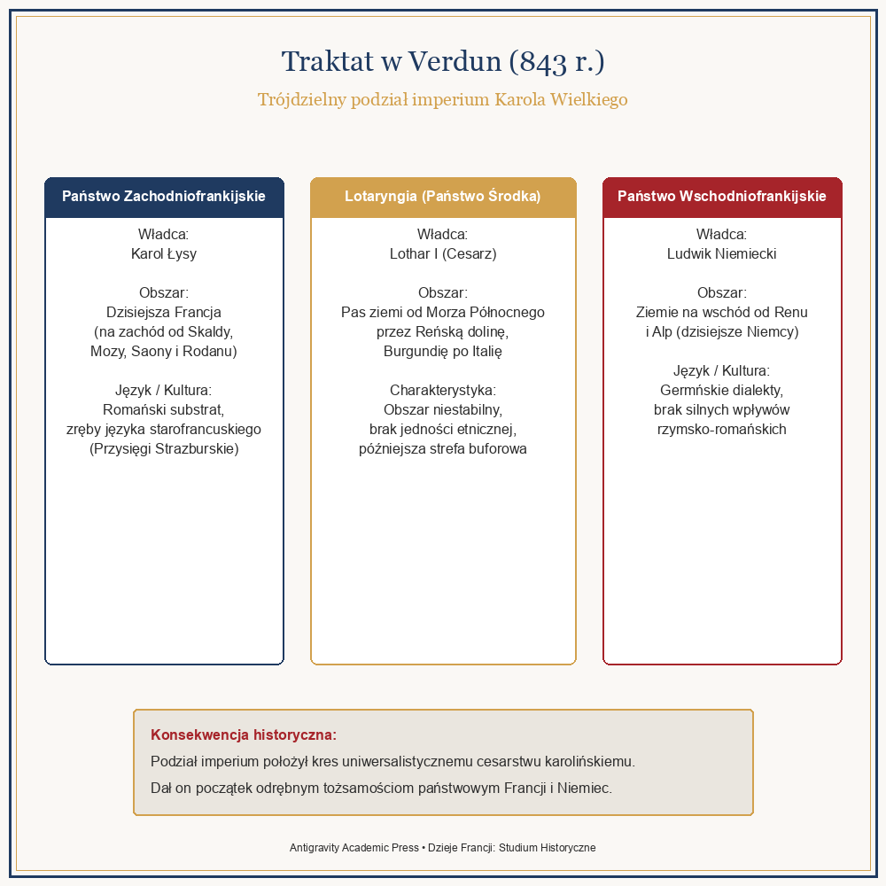
Rozległe imperium Karolingów, apogeum frankijskiej potęgi i prób restytucji zachodniego cesarstwa, po śmierci swego założyciela, Karola Wielkiego w 814 roku, weszło w fazę stopniowej, lecz nieuchronnej fragmentacji. Ten proces, choć zakorzeniony w germańskiej tradycji dziedziczenia królestwa jako prywatnej własności, a nie abstrakcyjnej koncepcji państwa, został dramatycznie przyspieszony przez kryzys sukcesyjny po śmierci Ludwika Pobożnego, jedynego ocalałego syna Karola Wielkiego. Kulminacją tych wewnętrznych napięć, wojen domowych i rodzących się odrębności kulturowych był Traktat w Verdun w 843 roku, akt o fundamentalnym znaczeniu dla kształtowania się średniowiecznej Europy i, co najważniejsze dla naszej monografii, dla genezy Państwa Zachodniofrankijskiego - bezpośredniego prekursora nowożytnej Francji.
Panowanie Ludwika Pobożnego (814-840) było okresem naznaczonym nieustannymi próbami pogodzenia idei jedności cesarstwa z pragmatycznymi wymogami sukcesji dynastycznej i ambicjami jego synów. Początkowa próba uregulowania kwestii dziedziczenia, Ordinatio Imperii z 817 roku, przewidywała utrzymanie jedności cesarstwa pod rządami najstarszego syna, Lotara, z pomniejszymi królestwami dla jego braci, Pepina i Ludwika Niemieckiego. Jednak narodziny czwartego syna, Karola Łysego, z drugiego małżeństwa Ludwika z Judyty Bawarską w 823 roku, całkowicie zdestabilizowały ten plan. Pragnienie zapewnienia Karolowi godnego udziału w dziedzictwie doprowadziło do serii rewizji Ordinatio, wywołując głębokie niezadowolenie u starszych braci i eskalując konflikty, które ostatecznie przerodziły się w otwarte wojny domowe.
Konflikt ten nie był jedynie walką o terytoria czy tytuły, lecz również starciem różnych koncepcji politycznych. Lotar, dziedzic tytułu cesarskiego, dążył do utrzymania idei uniwersalnego imperium, w którym jego bracia mieliby status podporządkowanych królów. Z kolei Ludwik Niemiecki i Karol Łysy, wspierani przez arystokrację swoich domen, coraz wyraźniej reprezentowali regionalne interesy i dążenia do większej autonomii. Po śmierci Ludwika Pobożnego w 840 roku, walka o dominację rozgorzała na nowo. Lotar, jako cesarz, próbował narzucić swoją władzę nad całym imperium, co spotkało się ze zdecydowanym oporem braci. Punktem zwrotnym była krwawa bitwa pod Fontenoy-en-Puisaye w czerwcu 841 roku, gdzie połączone siły Ludwika Niemieckiego i Karola Łysego zadały druzgocącą klęskę armii Lotara. Choć zwycięstwo nie było decydujące w sensie ostatecznego rozstrzygnięcia konfliktu, to jednak znacząco osłabiło pozycję Lotara i zmusiło go do szukania nowego układu sił. Bitwa ta, opisywana przez współczesnych kronikarzy jako hekatomba, w której zginęły dziesiątki tysięcy Franków, uświadomiła wszystkim stronom konieczność osiągnięcia porozumienia, zanim wzajemne walki doprowadzą do całkowitego wyniszczenia elity wojowników i destabilizacji całego państwa.
Bezpośrednim następstwem bitwy pod Fontenoy i rosnącej świadomości o potrzebie trwałego sojuszu przeciwko Lotarowi, były Przysięgi Strasburskie, złożone 14 lutego 842 roku przez Ludwika Niemieckiego i Karola Łysego. Akt ten, będący formalnym potwierdzeniem ich wzajemnego wsparcia militarnego, ma znaczenie nie tylko polityczne, ale przede wszystkim fundamentalne dla historii języka i tożsamości europejskiej. To właśnie w Strasburgu po raz pierwszy w pisanej formie utrwalone zostały teksty, które są uznawane za najstarsze zabytki języka starofrancuskiego (romance) i staro-wysoko-niemieckiego (teutonice).
Przysięgi zostały złożone dwukrotnie: najpierw każdy z braci przysięgał w języku drugiego, aby jego wojska mogły zrozumieć zobowiązanie, a następnie dowódcy wojsk Ludwika i Karola przysięgali w swoich ojczystych językach. Kronikarz Nithard, wnuk Karola Wielkiego i świadek tych wydarzeń, zanotował dokładne brzmienie tych przysięg. Fragmenty przysięgi Karola Łysego, złożonej w języku romańskim, brzmiały:
“Pro Deo amur et pro christian poblo et nostro commun salvament, d’ist di en avant, in quant Deus savir et podir me dunat, si salvarai eo cist meon fradre Karlo et in aiudha et in cadhuna cosa, si cum om per dreit son fradra salvar dift, in o quid il me altresi fazet; et ab Ludher nul plaid nunquam prindrai qui meon vol cist meon fradre Karle in damno sit.”
Współczesne tłumaczenie na polski brzmiałoby: “Dla miłości Boga i dla chrześcijańskiego ludu i naszego wspólnego zbawienia, od dzisiaj, o ile Bóg mi mądrości i mocy da, będę bronił mojego brata Karola i w pomocy i w każdej rzeczy, tak jak człowiek powinien bronić swego brata, pod warunkiem, że on uczyni mi to samo; i z Lotarem żadnego porozumienia nigdy nie zawrę, które z mojej woli mojemu bratu Karolowi byłoby na szkodę.”
Analogicznie, Ludwik Niemiecki złożył przysięgę w języku germańskim:
“In godes minna ind in thes christianes folches ind unser bedhero gehaltnissi, fon thesemo dage frammervurdes, so fram so mir got gewizci indi mahd furgibit, so haldih thesan minan bruodher, soso man mit rehtu sinan bruodher scal, in thiu thaz er mig sosoma duo, indi mit Ludheren in nohheiniu thing ne gegango, the minan willon imo ce scadhen werhen.”
Te teksty są nie tylko świadectwem politycznego porozumienia, ale przede wszystkim bezcennym źródłem dla lingwistyki historycznej. Wyraźnie widać w nich odejście od klasycznej łaciny na rzecz rozwijających się języków wernakularnych. Język romański użyty przez Karola Łysego i jego wojska był już na tyle odmienny od łaciny, że współcześni kronikarze nazywali go lingua romana rustica lub romana lingua, co stanowiło prekursora starofrancuskiego. Podobnie, język germański Ludwika był zwiastunem staro-wysoko-niemieckiego.
Signum językowe Strasburga nie było jedynie przypadkową konsekwencją braku zrozumienia. Ono symbolizowało pogłębiający się rozziew kulturowy i polityczny w obrębie dawnego imperium Karola Wielkiego. Chociaż elity intelektualne i kościelne nadal posługiwały się łaciną, to dla szerokich mas ludności i nawet dla znacznej części arystokracji, języki lokalne stały się podstawowym medium komunikacji. To zróżnicowanie językowe, choć istniało już wcześniej, zostało po raz pierwszy oficjalnie uznane i utrwalone w dokumencie o międzynarodowym znaczeniu, co wielu historyków interpretuje jako symboliczny akt narodzin dwóch odrębnych tożsamości narodowych - francuskiej i niemieckiej - na gruzach uniwersalnego cesarstwa. Debata historiograficzna na ten temat jest jednak żywa; niektórzy badacze, jak Patrick Geary, podkreślają, że owe “narody” w IX wieku były dalekie od współczesnych pojęć, a języki były raczej dialektami regionalnymi niż w pełni ukształtowanymi językami narodowymi. Niemniej jednak, nie można zaprzeczyć, że Przysięgi Strasburskie były milowym krokiem w procesie formowania się odrębnych wspólnot politycznych, których granice językowe zaczęły nakładać się na granice polityczne.
Po Przysięgach Strasburskich i dalszych walkach, Lotar, osłabiony i niezdolny do pokonania swoich braci, został zmuszony do podjęcia rokowań. W sierpniu 843 roku, w Verdun, trzej bracia - Lotar, Ludwik Niemiecki i Karol Łysy - zawarli traktat, który na zawsze zmienił mapę Europy Zachodniej. Traktat w Verdun nie był jedynie podziałem terytorialnym, lecz aktem, który położył podwaliny pod rozwój trzech odrębnych bytów politycznych, z których każdy miał swoją unikalną trajektorię historyczną.
Główne postanowienia traktatu zakładały podział imperium Karolingów na trzy królestwa:
Zachodnia Francia (Francia Occidentalis): Przypadła Karolowi Łysemu. Obejmowała tereny na zachód od rzek Skaldy, Mozy, Saony i Rodanu, co w dużej mierze pokrywało się z dawnymi terytoriami Neustrii i Akwitanii, a także z Bretanią i Marchią Hiszpańską. Była to domena, gdzie dominował język romański, a jej rdzeń stanowiły obszary, które w przyszłości miały stać się królestwem Francji. Granice Zachodniej Francji, choć wciąż płynne i podlegające późniejszym zmianom, stanowiły jądro terytorialne, wokół którego kształtowała się francuska tożsamość państwowa. Karol Łysy, mimo że początkowo postrzegany jako najmłodszy i najmniej doświadczony, okazał się zręcznym politykiem, który konsekwentnie budował swoją władzę, opierając się na rozwijającej się arystokracji zachodniofrankijskiej.
Wschodnia Francia (Francia Orientalis): Otrzymał ją Ludwik Niemiecki. Obejmowała tereny na wschód od Renu, w tym Bawarię, Szwabię, Saksonię i Turyngię. Był to obszar o dominującej ludności germańskiej i stanowił zalążek późniejszego Świętego Cesarstwa Rzymskiego Narodu Niemieckiego. Ludwik Niemiecki, nazywany “ojcem królestwa niemieckiego”, skupił się na konsolidacji władzy nad tymi ziemiami, które, mimo wewnętrznych podziałów plemiennych, łączyła wspólna kultura i język.
Środkowe Królestwo (Regnum Lotharii / Lotharingia): Najstarszy syn, cesarz Lotar, otrzymał środkowy pas ziem, rozciągający się od Morza Północnego po Włochy. Były to tereny o charakterze buforowym, obejmujące Fryzję, Niderlandy, Austrazję (w tym Lotaryngię, nazwaną od jego imienia), Burgundię, Prowansję i Królestwo Włoch. Lotar zachował tytuł cesarski, lecz jego królestwo, ze względu na swą wydłużoną, trudną do obrony formę i zróżnicowany etnicznie i językowo skład (mieszanka ludności romańskiej i germańskiej), było najbardziej niestabilne. Szybko stało się przedmiotem rywalizacji między Wschodnią i Zachodnią Francją, co w kolejnych wiekach prowadziło do nieustannych konfliktów o jego terytoria, zwłaszcza o Lotaryngię i Burgundię, które były strategicznie ważne i bogate.
Traktat w Verdun był aktem o monumentalnym znaczeniu dla genezy West Francia. Nie był to jedynie podział dóbr rodowych, jakich wiele miało miejsce w historii Franków, lecz raczej polityczne uznanie już istniejących różnic kulturowych, językowych i politycznych. Granice wyznaczone w Verdun, choć nie były tożsame z późniejszymi granicami Francji, stanowiły jej pierwotne jądro. West Francia, z Karolem Łysym na czele, odziedziczyła dużą część dawnej Galii, obszaru, który przez wieki był pod wpływem kultury rzymskiej i gdzie język romański rozwijał się w kierunku starofrancuskiego.
Historiografia od dawna toczy debatę na temat tego, czy Verdun było świadomym aktem tworzenia nowych państw narodowych, czy też jedynie pragmatycznym rozwiązaniem problemu sukcesji w ramach nadal postrzeganego jako jednolitego imperium frankijskiego. Badacze tacy jak François Guizot w XIX wieku widzieli w Verdun “narodziny Francji i Niemiec”. Bardziej współczesne podejście, reprezentowane przez historyków takich jak Roger Collins czy Rosamond McKitterick, skłania się ku interpretacji, że współcześni nie postrzegali tego podziału jako ostatecznego rozpadu na odrębne “narody” w nowożytnym sensie, lecz raczej jako podział dziedzictwa w ramach tej samej dynastii. Niemniej jednak, nie można zignorować długofalowych konsekwencji tego traktatu.
Po Verdun, każdy z królów zaczął budować swoją własną administrację, rozwijać odrębne prawa i zwyczaje, a także umacniać więzi z lokalną arystokracją. W przypadku West Francia, Karol Łysy stanął przed wyzwaniem konsolidacji władzy na rozległym i zróżnicowanym terytorium. Musiał stawić czoła zarówno ambicjom lokalnych magnatów, jak i zagrożeniom zewnętrznym, zwłaszcza najazdom Normanów. Proces ten, trwający przez kolejne stulecia, doprowadził do powstania silnego królestwa, które z czasem przyjęło nazwę “Francja”. To właśnie w West Francia kształtowały się instytucje, kultura i język, które stały się fundamentem przyszłej tożsamości francuskiej. Podział z Verdun, choć nie był aktem narodzin “narodów” w nowoczesnym rozumieniu, był bez wątpienia momentem, w którym odrębne ścieżki rozwoju politycznego, kulturowego i językowego zostały utrwalone, prowadząc do powstania państw, które stały się prekursorami współczesnej Francji i Niemiec.
| Królestwo | Władca | Główne Terytoria | Charakterystyka/Znaczenie |
|---|---|---|---|
| Zachodnia Francia (Francia Occidentalis) | Karol Łysy | Akwitania, Neustria, Bretania, Marchia Hiszpańska. Obszar na zachód od rzek Skaldy, Mozy, Saony i Rodanu. | Bezpośredni prekursor nowożytnej Francji. Dominacja kultury romańskiej i języka starofrancuskiego. Początkowo słaba władza centralna, z czasem konsolidacja wokół dynastii Karolingów, a później Kapetyngów. Podstawa terytorialna i kulturowa dla rozwoju francuskiej tożsamości państwowej. |
| Wschodnia Francia (Francia Orientalis) | Ludwik Niemiecki | Bawaria, Szwabia, Saksonia, Turyngia, Alemania. Obszar na wschód od Renu. | Zalążek późniejszego Świętego Cesarstwa Rzymskiego Narodu Niemieckiego. Dominacja kultury germańskiej i języka staro-wysoko-niemieckiego. Królestwo o silnych tradycjach plemiennych i księstwach, które z czasem stały się podstawą niemieckiej struktury państwowej. |
| Środkowe Królestwo (Regnum Lotharii) | Lotar I (cesarz) | Fryzja, Niderlandy, Austrazja (Lotaryngia), Burgundia, Prowansja, Królestwo Włoch. Pas ziem rozciągający się od Morza Północnego do Italii. | Najbardziej niestabilne i zróżnicowane terytorialnie. Utrzymał tytuł cesarski, ale królestwo było trudne do obrony i zarządzania. Stało się przedmiotem ciągłych sporów i podziałów między Zachodnią i Wschodnią Francją, a jego fragmenty (np. Lotaryngia) były przez wieki obszarem rywalizacji. |
Traktat w Verdun, choć był próbą zażegnania wojny domowej i podziału dziedzictwa po Ludwiku Pobożnym, okazał się momentem przełomowym w historii Europy. Ustanowił on trzy główne strefy wpływów, z których Zachodnia Francia, z jej dominującą kulturą romańską i rozwijającym się językiem starofrancuskim, stała się kolebką przyszłego państwa francuskiego. Od tego momentu, choć proces konsolidacji i kształtowania się tożsamości narodowej miał trwać jeszcze wieki, kierunek rozwoju politycznego i kulturowego West Francia był już wyraźnie zarysowany, torując drogę dla jednego z najważniejszych państw średniowiecznej i nowożytnej Europy.
Uupadek dynastii karolińskiej we Francji Zachodniej, stanowiący dramatyczny epilog świetności imperium Karola Wielkiego, nie był nagłym krachem, lecz długotrwałym procesem erozji autorytetu centralnego, rozłożonym na blisko półtora wieku. Jego korzenie tkwiły w wewnętrznych podziałach terytorialnych, osłabieniu strukturalnym państwa oraz nieustannym zagrożeniu zewnętrznym, które skutecznie uniemożliwiało władcom centralnym utrzymanie spójności i efektywności rządów.
Traktat z Verdun z 843 roku, dzielący imperium Karola Wielkiego na trzy części, stanowił kamień milowy w procesie dezintegracji. Choć formalnie miał uregulować kwestie dziedziczenia, w praktyce zapoczątkował on trwającą przez kolejne dekady fragmentaryzację polityczną i kulturową. Francja Zachodnia, jedna z tych części, odziedziczyła niestabilne granice i permanentne konflikty dynastyczne. Kolejne podziały, takie jak traktaty z Mersen (870) i Ribemont (880), jedynie pogłębiały ten stan, prowadząc do utraty spójności terytorialnej i ugruntowania się regionalnych tożsamości.
Jednocześnie, państwo karolińskie w IX i X wieku musiało mierzyć się z falą najazdów, które wstrząsnęły podstawami jego istnienia. Wikingowie, ze swoimi błyskawicznymi i brutalnymi rajdami wzdłuż rzek, Węgrzy, pustoszący wschodnie rubieże, oraz Saraceni, zagrażający wybrzeżom, zdemaskowali bezsilność władzy centralnej. Król, zamiast być gwarantem bezpieczeństwa, często okazywał się niezdolny do skutecznej obrony. W tej próżni władzy, to lokalni magnaci - hrabiowie, książęta i opaci - zaczęli przejmować odpowiedzialność za obronę swoich terytoriów. Budowali zamki, gromadzili prywatne armie i negocjowali z najeźdźcami, często uiszczając daniny (tzw. danegeld) lub udzielając im ziemi w zamian za pokój (jak w przypadku Rolfa, założyciela księstwa Normandii w 911 roku).
Wzrost potęgi tych lokalnych potentatów był procesem stopniowym, lecz nieodwracalnym. Urzędy hrabiowskie, pierwotnie królewskie nominacje, stawały się de facto dziedziczne, a beneficja nadawane za służbę wojskową przekształcały się w dziedziczne lenna. Królowie karolińscy, chcąc pozyskać lojalność i wsparcie w trudnych czasach, często sami sankcjonowali te praktyki, co tylko przyspieszało utratę ich realnej kontroli nad państwem. W efekcie, dawne hrabstwa przekształcały się w potężne, niemal niezależne księstwa i hrabstwa, takie jak Akwitania, Flandria, Andegawenia czy Burgundia. Ich władcy, formalnie wasale króla, w praktyce dysponowali większą siłą militarną i ekonomiczną niż sam monarcha.
W X wieku walka o koronę Francji Zachodniej stała się polem rywalizacji między schyłkową linią Karolingów a potężnym rodem Robertynów, protoplastów późniejszych Kapetyngów. Robertynowie, hrabiowie Paryża i Orleanu, dysponowali znaczącymi zasobami i poparciem Kościoła, co pozwoliło im kilkakrotnie sięgnąć po koronę (Odo, Robert I, Rudolf). Były to jednak rządy niestabilne, naznaczone ciągłymi konfliktami i niezdolnością do trwałego ugruntowania władzy. Ostatni Karolingowie, tacy jak Ludwik IV Zamorski czy Ludwik V Gnuśny, byli postaciami tragicznymi, symbolizującymi ostateczną bezsilność dynastii. Ich władza była iluzoryczna, ograniczona do niewielkiego obszaru i całkowicie zależna od łaski potężnych wasali. Śmierć Ludwika V w 987 roku bez bezpośredniego dziedzica otworzyła drogę do definitywnego przejęcia tronu przez nową dynastię, lecz nie rozwiązała głęboko zakorzenionych problemów strukturalnych królestwa.
Elekcja Hugona Kapeta na króla Francji Zachodniej w 987 roku, choć na pierwszy rzut oka wydawać by się mogła jedynie kolejnym epizodem w długiej serii zmian dynastycznych, w rzeczywistości stanowiła moment przełomowy, który zdefiniował przyszły kształt monarchii francuskiej na kolejne stulecia. Był to jednak przełom o charakterze długofalowym, którego natychmiastowe skutki były dalekie od spektakularnego wzmocnienia władzy królewskiej.
Okoliczności elekcji były typowe dla ówczesnej praktyki politycznej. Po bezpotomnej śmierci Ludwika V Gnuśnego, ostatniego Karola z linii zachodniofrankońskiej, nastąpiła próżnia władzy, którą wypełnić musiał wybór nowego władcy. Kluczową rolę w tym procesie odegrał Kościół, a zwłaszcza wpływowe postacie arcybiskupa Reims, Adalberona, oraz jego ucznia Gerberta z Aurillac (późniejszego papieża Sylwestra II). To oni, podczas zgromadzenia w Senlis, a następnie w Noyon, skutecznie lobbowali za kandydaturą Hugona Kapeta, hrabiego Paryża, z rodu Robertynów. Argumentacja Adalberona, zgodnie z relacją Richera z Reims, skupiała się na braku cnot i zdolności do rządzenia u pozostałych Karolingów (zwłaszcza Karola, księcia Dolnej Lotaryngii), w kontraście do rzekomych zalet i zasług Hugona. Podkreślano jego doświadczenie wojskowe, wpływy i zdolność do zapewnienia pokoju, co było szczególnie pożądane w dobie anarchii.
Hugo Kapet, choć formalnie wybrany i koronowany, nie był bynajmniej potężnym władcą w nowoczesnym rozumieniu tego słowa. Jego pozycja była raczej pozycją “pierwszego wśród równych” (primus inter pares) w stosunku do innych potężnych książąt i hrabiów królestwa. Jego realna władza była ograniczona do stosunkowo niewielkiej domeny królewskiej (Île-de-France) i nie wykraczała poza nią w sposób efektywny. Elekcja Kapeta była raczej wyrazem pragmatyzmu ówczesnych elit niż świadomą decyzją o ustanowieniu silnej monarchii. Magnaci, wybierając słabszego, ale zaufanego kandydata, dążyli do utrzymania swojej autonomii, jednocześnie zapewniając sobie symbolicznego zwierzchnika, który mógłby legitymizować ich własne aspiracje i służyć jako arbitra w konfliktach.
Jednakże, mimo początkowej słabości, Hugo Kapet wykazał się niezwykłą dalekowzrocznością, która zapewniła jego dynastii przetrwanie. Najważniejszym posunięciem było koronowanie swojego syna, Roberta Pobożnego, jeszcze za życia, w 987 roku. Ten zabieg, powtarzany przez kolejnych Kapetyngów przez ponad dwa stulecia (tzw. rex designatus), skutecznie połączył zasadę elekcyjności z dziedzicznością, stopniowo przekształcając tron z obiektu wyboru w dziedziczną własność rodu. Był to subtelny, ale genialny manewr polityczny, który pozwolił uniknąć kryzysów sukcesyjnych i ugruntował pozycję dynastii, stając się fundamentem jej długowieczności i przyszłego rozkwitu. W ten sposób elekcja z 987 roku, choć w krótkim terminie nie przyniosła rewolucji, w perspektywie długoterminowej okazała się kluczowym momentem w historii Francji, zapoczątkowującym proces budowy silnej monarchii narodowej.
Okres wczesnokapetyński we Francji, obejmujący wiek X i XI, bywa często określany mianem “anarchii feudalnej” - terminu, który choć bywa przedmiotem debaty historiograficznej, trafnie oddaje stan głębokiego rozdrobnienia politycznego i społecznego. Nie była to jednak anarchia w sensie całkowitego chaosu, lecz raczej system, w którym władza, prawo i porządek zostały przeniesione z poziomu centralnego na lokalny, a następnie rozdrobnione między niezliczoną liczbę panów.
Anarchia feudalna charakteryzowała się przede wszystkim brakiem skutecznej władzy centralnej, zdolnej do egzekwowania prawa i utrzymania pokoju na całym terytorium królestwa. Król, choć formalnie suweren, był w praktyce tylko jednym z wielu, często słabszym od swoich potężnych wasali. W tej próżni władzy, podstawową jednostką polityczną stała się seigneurie (senioria, władztwo terytorialne), której centrum stanowił zamek. Panowie zamkowi (châtelains) uzurpowali sobie regalia, czyli prawa królewskie, takie jak:
System lenny, który w teorii miał zapewniać hierarchię i lojalność, w praktyce uległ degeneracji. Wasale, dysponując własnymi armiami i zamkami, często ignorowali zobowiązania wobec swoich seniorów, a nawet króla. Lojalność była efemeryczna, zależna od doraźnych korzyści i układów sił. Dziedziczność lenn i urzędów dodatkowo osłabiła możliwość króla do nagradzania i karania, zamrażając strukturę władzy w rozdrobnionym stanie.
Społeczeństwo, choć teoretycznie podzielone na “trzy stany” (modlących się, walczących i pracujących) (Duby, 1978), w rzeczywistości doświadczało ogromnej niestabilności. Chłopi, stanowiący zdecydowaną większość populacji, byli najbardziej narażeni na przemoc i wyzysk ze strony lokalnych panów. Ich mobilność była ograniczona, a życie naznaczone niepewnością.
W tym kontekście władza wczesnych Kapetyngów była rażąco ograniczona. Ich realny zasięg władzy sprowadzał się do stosunkowo niewielkiego obszaru znanego jako domena królewska (domaine royal), obejmującego głównie region Île-de-France, czyli tereny wokół Paryża i Orleanu. Był to obszar strategicznie położony, z żyznymi ziemiami i rozwijającymi się miastami, takimi jak Paryż, który stawał się ważnym centrum handlowym i intelektualnym. Zasobność domeny królewskiej, choć nieporównywalna z potęgą niektórych księstw, stanowiła jednak podstawę materialną, z której Kapetyngowie mogli czerpać środki na utrzymanie dworu i niewielkiej armii.
Poza domeną królewską, władza króla była w dużej mierze symboliczna. Król był uznawany za suwerena, lecz jego tytuł nie przekładał się na faktyczne egzekwowanie prawa czy kontrolę nad potężnymi wasalami. Książęta Normandii, Akwitanii, Burgundii, hrabiowie Flandrii, Andegawenii czy Tuluzy, często dysponowali większymi armiami, bogatszymi terytoriami i silniejszym autorytetem w swoich własnych domenach niż sam król. Stosunki między królem a tymi magnatami były często napięte, naznaczone rywalizacją, a czasem otwartymi konfliktami. Król był dla nich jedynie nominalnym zwierzchnikiem, do którego odwoływano się w sporach, ale którego rozkazy często ignorowano.
Metafora “króla bez królestwa” trafnie oddaje sytuację wczesnych Kapetyngów. Byli królami Francji, ale ich królestwo było w istocie zbiorem niezależnych lub półniezależnych terytoriów, w których ich władza była iluzoryczna. Ich siła leżała nie w potędze militarnej czy administracyjnej, lecz w legitymizacji religijnej, prestiżu tytułu oraz strategicznych sojuszach, zwłaszcza z Kościołem. To właśnie te niematerialne aktywa, w połączeniu z cierpliwością i konsekwencją w budowaniu fundamentów dynastii, miały w przyszłości pozwolić Kapetyngom na stopniowe odzyskiwanie i konsolidację władzy królewskiej.
W obliczu głębokiej anarchii feudalnej i słabości świeckiej władzy centralnej, Kościół katolicki wyłonił się jako jedna z nielicznych instytucji zdolnych do zachowania spójności organizacyjnej i moralnego autorytetu. Jego rola w legitymizacji nowej dynastii Kapetyngów oraz w stopniowym procesie konsolidacji królestwa była nie do przecenienia.
Kościół, w przeciwieństwie do rozdrobnionej i skłóconej arystokracji świeckiej, dysponował rozbudowaną strukturą hierarchiczną, obejmującą biskupstwa, opactwa i parafie, która pokrywała niemal całe terytorium królestwa. Był to również największy właściciel ziemski, co dawało mu ogromne wpływy ekonomiczne. Co więcej, Kościół był głównym depozytariuszem wiedzy i kultury. Wykształceni duchowni, tacy jak wspomniani arcybiskup Adalberon z Reims czy Gerbert z Aurillac, pełnili funkcję doradców królewskich, skrybów i administratorów, dostarczając monarchii niezbędnych kadr i intelektualnego wsparcia.
Najważniejszą rolą Kościoła było jednak nadawanie sakralnego charakteru monarchii. Pomazanie króla świętymi olejami podczas koronacji nadawało mu boską legitymację, czyniąc go “pomazańcem Bożym” i obrońcą wiary. Ten sakralny wymiar władzy królewskiej był kluczowy w legitymizacji nowej dynastii Kapetyngów, która, pozbawiona silnych militarnych i terytorialnych podstaw, mogła oprzeć swój autorytet na woli Bożej. Kościół, wspierając Kapetyngów, nie tylko nadał im duchowy prestiż, ale także zyskał w nich sojusznika w walce o przywrócenie porządku i ochronę swoich własnych interesów.
Jednym z najważniejszych przejawów dążenia Kościoła do zaprowadzenia porządku w dobie anarchii feudalnej był ruch Pokoju Bożego (Pax Dei) i Rozejmu Bożego (Treuga Dei). Była to oddolna inicjatywa, zrodzona na przełomie X i XI wieku w południowej Francji, w reakcji na nieustanne wojny prywatne i grabieże ze strony rycerstwa, które pustoszyły kraj, niszczyły majątki kościelne i życie ludności.
Ruch Pokoju Bożego zapoczątkowany został przez lokalnych biskupów i opatów, którzy na synodach (np. w Charroux w 989 roku, w Le Puy w 990 roku) gromadzili duchownych i świeckich magnatów, wymuszając na nich przysięgi przestrzegania pokoju. Główne cele ruchu obejmowały:
Do egzekwowania tych zasad Kościół używał potężnych sankcji duchowych, takich jak ekskomunika (wykluczenie z Kościoła) i interdykt (zakaz sprawowania kultu na danym terytorium), które w głęboko religijnym społeczeństwie miały ogromną moc odstraszającą.
Ruch Pokoju Bożego, choć początkowo niezależny od władzy królewskiej, a nawet w pewnym sensie ją zastępujący, odegrał kluczową rolę w legitymizacji i przyszłej konsolidacji monarchii kapetyńskiej.
Podsumowując, elekcja Hugona Kapeta w 987 roku, choć dokonała się w warunkach głębokiej słabości władzy królewskiej i wszechobecnej anarchii feudalnej, stanowiła punkt zwrotny. Dzięki strategicznym posunięciom (dziedziczność tronu) i kluczowemu wsparciu Kościoła - zarówno w sferze legitymizacji sakralnej, jak i poprzez ruchy takie jak Pax Dei - Kapetyngowie położyli fundamenty pod długotrwały proces budowy silnej monarchii. Ich początkowa słabość paradoksalnie stała się atutem, pozwalając im na cierpliwe i metodyczne umacnianie pozycji, które w kolejnych stuleciach miało doprowadzić do konsolidacji królestwa i uczynienia z Francji jednej z najpotężniejszych monarchii Europy.
Okres panowania Filipa II Augusta (1180-1223) stanowił przełomowy moment w procesie budowy francuskiej monarchii terytorialnej i scentralizowanej władzy królewskiej. Królestwo Francji, choć nominalnie rozległe, było w rzeczywistości mozaiką potężnych lenn, z których wiele przewyższało domenę królewską pod względem bogactwa i siły militarnej. Największym wyzwaniem dla Kapetyngów było tzw. Imperium Andegaweńskie, władztwo Plantagenetów, które obejmowało Anglię oraz rozległe terytoria we Francji: Normandię, Akwitanię, Anjou, Maine i Touraine. Te posiadłości, rozciągające się od kanału La Manche po Pireneje, stanowiły poważne zagrożenie dla niezależności i spójności królestwa francuskiego, opasując domenę królewską niczym kleszcze.
Filip August, w odróżnieniu od swoich poprzedników, dysponował nie tylko polityczną sprawnością, ale i zdolnością do długofalowego planowania strategicznego. Jego polityka wobec Plantagenetów opierała się na systematycznym wykorzystywaniu wewnętrznych sporów w ich dynastii - konfliktów między Henrykiem II a jego synami (Ryszardem Lwie Serce i Janem bez Ziemi), a następnie między samymi braćmi. Filip zręcznie manipulował ambicjami książąt Plantagenetów, oferując wsparcie jednemu przeciwko drugiemu, by osłabić ich wspólną potęgę. Jak zauważa historyk Jean Favier, Filip August był mistrzem “polityki czekania i wykorzystywania okazji”, co pozwoliło mu na stopniowe, lecz konsekwentne rozszerzanie wpływów królewskich.
Kluczowym momentem w tej rywalizacji było zajęcie Normandii w 1204 roku. Konflikt zaostrzył się po śmierci Ryszarda Lwie Serce w 1199 roku i objęciu tronu angielskiego przez jego brata, Jana bez Ziemi. Filip August sprowokował Jana do złamania przysięgi lennej, wzywając go przed sąd parów Francji w 1202 roku pod zarzutem zamordowania Artura Bretońskiego. Kiedy Jan odmówił stawiennictwa, Filip, zgodnie z prawem feudalnym, orzekł konfiskatę wszystkich jego lenn we Francji. Był to akt o bezprecedensowej doniosłości prawnej, podkreślający suwerenność króla Francji nad wszystkimi wasalami, nawet tymi, którzy byli jednocześnie królami innych państw. Kampania militarna, która nastąpiła, zakończyła się szybkim zajęciem Normandii, Anjou, Maine i Touraine. Upadek zamku Gaillard w 1204 roku, symbolu potęgi Ryszarda Lwie Serce, stał się symbolem triumfu Kapetyngów i odzyskania serca dawnego państwa normańskiego dla korony francuskiej. Te terytoria, strategicznie ważne i bogate, zostały bezpośrednio włączone do domeny królewskiej, co znacząco zwiększyło jej rozmiar, zasoby i autorytet.
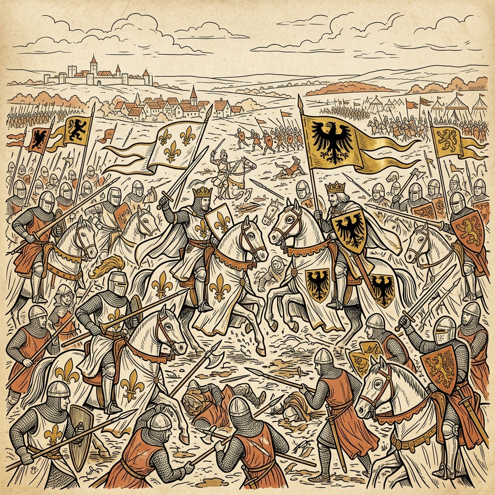
<img src="images/poster_bouvines.png" alt="Wizualizacja taktyczna bitwy pod Bouvines" />
<div class="video-play-overlay">▶</div>
<p class="video-print-link">Wersja wideo dostępna online: <a href="https://adamsnihur.github.io/opracowania/historia_francji/#animacje">adamsnihur.github.io/opracowania/historia_francji/#animacje</a></p>Zdobycze terytorialne Filipa Augusta wywołały reakcję ze strony Jana bez Ziemi, który dążył do odzyskania utraconych ziem. W 1214 roku zorganizował on potężną koalicję antyfrancuską, składającą się z wojsk angielskich, flamandzkich (hrabia Flandrii Ferdynand), niemieckich (cesarz Otton IV Welf) oraz książąt Lotaryngii i Brabancji. Plan zakładał dwutorowy atak: Jan miał uderzyć od południa z Akwitanii, natomiast główne siły koalicji, dowodzone przez Ottona IV, miały zaatakować od północnego wschodu.
Decydujące starcie nastąpiło 27 lipca 1214 roku pod Bouvines, w pobliżu Lille. Była to jedna z nielicznych w średniowieczu bitew, w której starły się w otwartym polu niemal wszystkie siły obu stron, a jej wynik miał zadecydować o kształcie politycznym Europy Zachodniej. Armia francuska, choć liczebnie mniejsza, dowodzona była osobiście przez Filipa Augusta, który wykazał się odwagą i zdolnościami taktycznymi. Bitwa była niezwykle zacięta i krwawa. W jej trakcie Filip August osobiście znalazł się w niebezpieczeństwie, będąc zrzuconym z konia, ale został uratowany przez swoich rycerzy. Francuskie rycerstwo, choć często postrzegane jako niesforne, wykazało się pod Bouvines niezwykłą lojalnością i dyscypliną, walcząc pod sztandarem Oriflamme - królewskim sztandarem Saint-Denis.
Zwycięstwo pod Bouvines było totalne i miało dalekosiężne konsekwencje. Jan bez Ziemi musiał ostatecznie zrezygnować z roszczeń do utraconych ziem we Francji, co zostało potwierdzone traktatem w Chinon. W Anglii porażka ta doprowadziła bezpośrednio do buntu baronów i wymuszenia na królu podpisania Wielkiej Karty Swobód (Magna Carta) w 1215 roku. Cesarz Otton IV, upokorzony i osłabiony, stracił poparcie w Rzeszy, co utorowało drogę do tronu niemieckiego Fryderykowi II Hohenstaufowi, sojusznikowi Filipa Augusta.
Jednakże znaczenie bitwy pod Bouvines wykraczało daleko poza doraźne skutki polityczne. Była to pierwsza wielka bitwa, w której rycerstwo francuskie walczyło pod wspólnym sztandarem królewskim, nie tyle w obronie swoich partykularnych interesów lennych, ile w imieniu “królestwa Francji”. Kronikarze, tacy jak Guillaume le Breton, w swoich dziełach gloryfikowali zwycięstwo jako triumf Boga i Francji, podkreślając rolę króla jako obrońcy sprawiedliwości i wiary. W historiografii podkreśla się, że Bouvines stało się kamieniem milowym w kształtowaniu się francuskiej świadomości państwowej, a nawet proto-narodowej. Zwycięstwo to umocniło autorytet monarchy w stopniu dotąd niespotykanym, uczyniło królestwo francuskie dominującą potęgą w Europie Zachodniej i stało się symbolicznym aktem założycielskim dla późniejszej narracji o potędze Kapetyngów.
W tym samym czasie, gdy Filip August konsolidował władzę na północy, na południu Francji rozwijał się ruch herezji katarskiej, zwany również albigensami (od miasta Albi). Katarzy, ze swoją dualistyczną wizją świata (walka dobra ze złem, duch kontra materia), odrzucali sakramenty, hierarchię kościelną i dogmaty katolickie. Ich nauki zyskały znaczną popularność w bogatej i kulturalnie rozwiniętej Langwedocji, gdzie wspierane były przez lokalną arystokrację, co stanowiło poważne zagrożenie dla jedności Kościoła i autorytetu papieskiego.
Papież Innocenty III, w obliczu nieskuteczności misji nawracania, w 1209 roku ogłosił krucjatę przeciwko albigensom. Filip August, początkowo niechętny bezpośredniemu zaangażowaniu (jego priorytetem była walka z Plantagenetami), pozwolił swoim wasalom, głównie z północnej Francji, na udział w wyprawie. Krucjata Albigenska, trwająca z przerwami przez ponad dwie dekady, była naznaczona niespotykanym okrucieństwem, czego symbolem stała się masakra w Béziers w 1209 roku. Północnofrancuscy rycerze, pod wodzą Szymona z Montfort, wykorzystali krucjatę jako pretekst do podboju bogatych ziem Langwedocji i osłabienia potężnego hrabstwa Tuluzy.
Mimo początkowej niechęci, Kapetyngowie stopniowo włączali się w konflikt. Syn Filipa Augusta, Ludwik VIII, wziął udział w krucjacie w 1226 roku, a jego następca, Ludwik IX, ostatecznie zakończył wojnę. Traktat paryski z 1229 roku, podpisany między Ludwikiem IX a Rajmundem VII, hrabią Tuluzy, był punktem kulminacyjnym tego procesu. Na mocy traktatu hrabstwo Tuluzy zostało znacznie uszczuplone, a jego wschodnie ziemie (w tym Albigeois, Rodez, Quercy) zostały bezpośrednio przyłączone do domeny królewskiej. Pozostała część hrabstwa miała zostać odziedziczona przez brata Ludwika IX, Alfonsa z Poitiers, który poślubił córkę Rajmunda VII. Po bezpotomnej śmierci Alfonsa w 1271 roku, cała Langwedocja została ostatecznie włączona do domeny królewskiej.
Aneksja Langwedocji miała kolosalne znaczenie dla konsolidacji terytorialnej królestwa. Otworzyła drogę na południe, zapewniając królom francuskim dostęp do Morza Śródziemnego i kontrolę nad kluczowymi szlakami handlowymi. Była to również kulturowa i społeczna rewolucja - brutalne stłumienie herezji i zniszczenie lokalnej arystokracji zniszczyły unikalną kulturę oksytańską, zastępując ją administracją królewską i wpływami z północy. Ten proces, choć krwawy, był kluczowy dla budowy jednolitego państwa francuskiego.
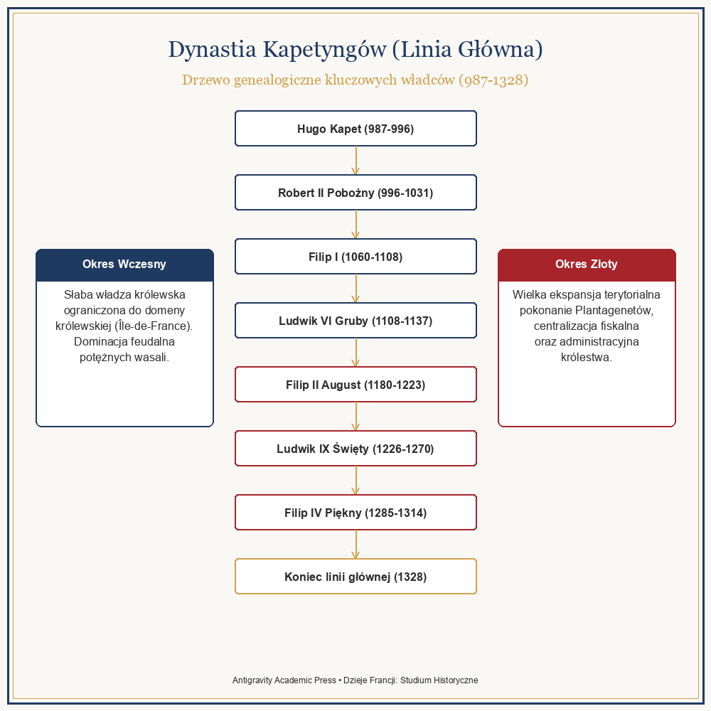
Panowanie Ludwika IX (1226-1270), znanego jako Saint Louis, często uznawane jest za apogeum władzy Kapetyngów i okres, w którym francuska monarchia osiągnęła szczyt prestiżu i stabilności. Ludwik, wychowany przez swoją matkę, Blankę Kastylijską, w duchu głębokiej pobożności i odpowiedzialności królewskiej, przejął silne państwo, które jednak nadal wymagało reform instytucjonalnych i umocnienia wewnętrznego. Początki jego panowania to okres regencji Blanki, która z sukcesem stłumiła bunty potężnych baronów (m.in. Hugona X z Lusignan), dążących do odzyskania utraconych przywilejów.
Jednym z kluczowych aspektów rządów Ludwika IX była gruntowna reforma monetarna. W XIII wieku we Francji funkcjonowało wiele rodzajów monet, bitych zarówno przez króla, jak i przez liczne księstwa i miasta. Ta różnorodność prowadziła do chaosu ekonomicznego, fałszerstw i utrudniała handel. Ludwik IX dążył do ujednolicenia systemu monetarnego i zapewnienia dominacji monety królewskiej.
W 1262 roku wydał ordonans, który ustanawiał liwr turoński (livre tournois) - monetę bitą w Tours - jako standard w całej domenie królewskiej. Co więcej, ordonans ten wprowadzał zakaz bicia monet o niższej wartości niż królewska w strefach, gdzie moneta królewska była w obiegu. Choć nie zabronił całkowicie bicia monet przez panów feudalnych, to jednak skutecznie ograniczył ich swobodę, zmuszając ich do utrzymywania wysokiej jakości swoich monet, aby mogły konkurować z królewską. Król wprowadził również nową złotą monetę, ecu d’or, która szybko zyskała zaufanie. Skutki reformy były dalekosiężne: ujednolicenie waluty przyczyniło się do stabilizacji gospodarczej, ułatwiło handel i wzmocniło autorytet króla jako gwaranta stabilności ekonomicznej. Był to ważny krok w kierunku centralizacji władzy i budowy jednolitego rynku narodowego.
Ludwik IX był głęboko przekonany o konieczności zapewnienia sprawiedliwości swoim poddanym, co uważał za jedno z podstawowych zadań monarchy chrześcijańskiego. Jego reformy sądownicze miały na celu centralizację wymiaru sprawiedliwości i zapewnienie równego dostępu do prawa. Najważniejszym osiągnięciem było przekształcenie Curia Regis (Rady Królewskiej) w wyspecjalizowaną instytucję sądowniczą - Parlament Paryski (Parlement de Paris).
Początkowo Curia Regis była szerokim zgromadzeniem baronów i duchownych, doradzającym królowi w różnych sprawach. Ludwik IX stopniowo wydzielił z niej grupę stałych urzędników, specjalizujących się w prawie, którzy regularnie zbierali się w Paryżu, aby rozpatrywać sprawy sądowe. W 1258 roku Ludwik wprowadził ordonans zakazujący prywatnych wojen (faidy) w całej domenie królewskiej, a w 1260 roku rozszerzył ten zakaz na całe królestwo, wprowadzając tzw. quarantaine-le-roi (czterdziestodniowy okres pokoju przed rozpoczęciem wojny prywatnej) oraz możliwość odwoływania się do sądu królewskiego (apeli) od wyroków sądów feudalnych. To ostatnie było rewolucyjne, ponieważ podważało autorytet sądów baronów i stawiało sąd królewski jako najwyższą instancję sprawiedliwości.
Parlament Paryski, składający się z profesjonalnych prawników (legistów), stał się najwyższym sądem królestwa, rozpatrującym apelacje i sprawy dotyczące króla. Jego rola nie ograniczała się do sądzenia; Parlament rejestrował również edykty królewskie, nadając im moc prawną. Ta instytucjonalizacja sądownictwa królewskiego, oparta na prawie rzymskim i kanonicznym, znacząco wzmocniła legitymację władzy królewskiej i ograniczyła arbitralność sądów feudalnych, co stanowiło fundament pod budowę nowoczesnego państwa prawa we Francji.
Ludwik IX był głęboko religijnym władcą, a jego osobista pobożność (która doprowadziła do jego kanonizacji w 1297 roku) nierozerwalnie splotła się z jego polityką. Widział siebie jako chrześcijańskiego monarchę odpowiedzialnego za sprawiedliwość i pokój nie tylko w swoim królestwie, ale i w całej Europie. Ten etos “króla-rozjemcy” (roi arbitre) manifestował się w jego zaangażowaniu w rozwiązywanie międzynarodowych sporów.
Przykładem jest Traktat z Corbeil (1258), w którym Ludwik IX zrezygnował z roszczeń do Katalonii i Roussillon, a król Aragonii, Jakub I Zdobywca, zrzekł się swoich roszczeń do Langwedocji (z wyjątkiem Montpellier i Cerdagne). Było to strategiczne posunięcie, mające na celu stabilizację południowych granic królestwa i zapewnienie pokoju. Jeszcze ważniejszy był Traktat Paryski (1259) z Henrykiem III Plantagenetem, królem Anglii. Ludwik IX, w geście szczodrości i chęci zakończenia długotrwałego konfliktu, zwrócił Henrykowi część Akwitanii (Agenais, Saintonge), w zamian za to, że Henryk III ostatecznie zrezygnował z roszczeń do Normandii, Anjou, Maine i Touraine oraz złożył hołd lenny królowi Francji za Akwitanię. Ten akt, choć kontrowersyjny dla niektórych francuskich baronów, był wyrazem dalekowzrocznej polityki Ludwika, który przedkładał trwały pokój i stabilizację granic nad dalsze zdobycze terytorialne, budując jednocześnie autorytet Francji jako mocarstwa zdolnego do dyktowania warunków pokoju.
Mimo że jego dwie krucjaty (Siódma i Ósma) zakończyły się militarnymi porażkami i śmiercią króla w Tunisie, umocniły one wizerunek Ludwika IX jako pobożnego obrońcy wiary i lidera chrześcijańskiego świata. Jego rządy były okresem, w którym monarchia francuska stała się wzorem sprawiedliwości, porządku i stabilności, a królestwo Kapetyngów ugruntowało swoją pozycję jako dominująca siła polityczna i kulturalna w Europie.
W okresie rozkwitu monarchii Kapetyngów, a w szczególności za panowania Ludwika IX, Francja stała się kolebką nowej estetyki architektonicznej. Styl ten, nazywany przez współczesnych Opus Francigenum (dziełem francuskim), a w późniejszych wiekach gotykiem, stanowił monumentalną manifestację potęgi królewskiej oraz religijnego etosu epoki. Budowa wielkich katedr (Notre-Dame w Paryżu, Reims, Chartres) oraz ufundowanie przez Ludwika IX relikwiarzowej kaplicy Sainte-Chapelle w Paryżu wymagały nie tylko zaawansowanej logistyki i nakładów finansowych, ale przede wszystkim rewolucyjnego przełomu w dziedzinie inżynierii budowlanej.
Przejście od pasywnego i ciemnego stylu romańskiego do strzelistych, napełnionych światłem wnętrz gotyckich było możliwe dzięki trzem innowacjom strukturalnym: zastosowaniu ostrołuku (który kierował wektory obciążeń bardziej pionowo), sklepienia krzyżowo-żebrowego oraz systemu przyporowego (łuków i filarów przyporowych), które odprowadzały pozostały nacisk boczny na zewnątrz budowli. Dzięki temu mury mogły zostać odciążone, stając się cienkimi przegrodami wypełnionymi olbrzymimi, kolorowymi witrażami.
<img src="images/poster_gothic_arch.png" alt="Fizyka i mechanika rozkładu sił w ostrołuku gotyckim" />
<div class="video-play-overlay">▶</div>
<p class="video-print-link">Wersja wideo dostępna online: <a href="https://adamsnihur.github.io/opracowania/historia_francji/#animacje">adamsnihur.github.io/opracowania/historia_francji/#animacje</a></p>Rządy Filipa II Augusta i Ludwika IX Świętego stanowią epokę kluczową dla historycznej ewolucji Francji. Filip August, poprzez swoją bezwzględną skuteczność militarną i prawną, zdołał przełamać dominację Plantagenetów, anektować rozległe terytoria i zjednoczyć domenę królewską, kładąc podwaliny pod scentralizowane państwo. Bitwa pod Bouvines stała się symbolem proto-narodowej tożsamości i militarnego triumfu Kapetyngów. Aneksja Langwedocji, choć brutalna, dopełniła proces terytorialnej konsolidacji, otwierając królestwo na południe.
Ludwik IX, kontynuując dzieło swojego dziada, skupił się na budowie silnych instytucji państwowych. Jego reformy monetarne i sądownicze, zwłaszcza rozwój Parlamentu Paryskiego, stworzyły ramy dla nowoczesnej administracji i jednolitego systemu prawnego. Jego etos króla-rozjemcy i chrześcijańskiego władcy zapewnił Francji bezprecedensowy prestiż międzynarodowy. Razem, obaj władcy przekształcili królestwo francuskie z mozaiki feudalnych lenn w spójną, terytorialnie rozległą i instytucjonalnie silną monarchię, która stała się fundamentem potęgi Francji w późniejszych wiekach.
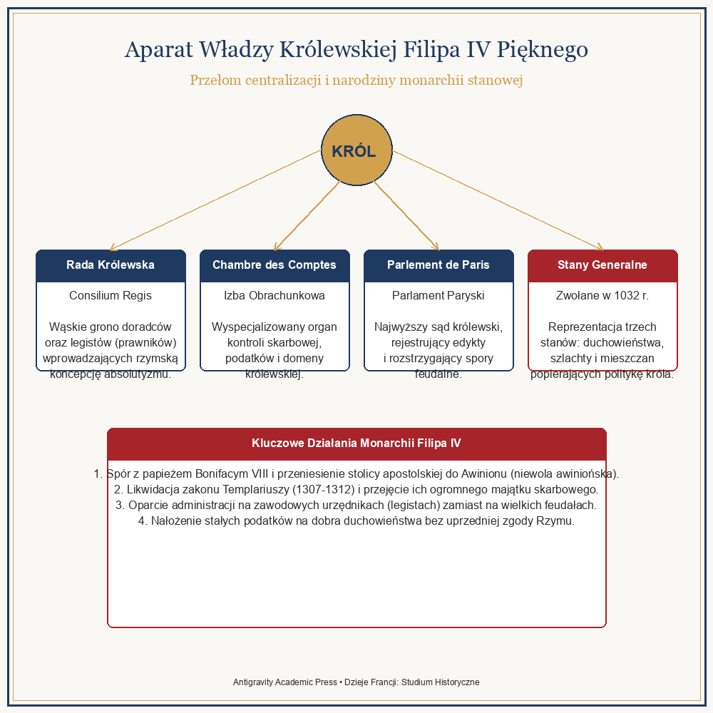
Panowanie Filipa IV Pięknego (1285-1314) stanowi epokę przełomową w dziejach monarchii francuskiej, naznaczoną radykalną transformacją wewnętrzną i bezprecedensowym umocnieniem władzy królewskiej. Okres ten, często interpretowany jako antologia działań o charakterze prekursorskim wobec nowożytnej państwowości biurokratycznej, charakteryzował się bezwzględną determinacją w dążeniu do konsolidacji królestwa, co niejednokrotnie prowadziło do brutalnych konfrontacji z tradycyjnymi potęgami średniowiecznego świata - papiestwem i niezależnymi zakonami rycerskimi. Filip Piękny, choć osobiście postrzegany przez współczesnych jako władca o chłodnym i enigmatycznym usposobieniu, otoczył się gronem wybitnych legistów, którzy stali się architektami jego polityki, dostarczając teoretycznych podstaw i praktycznych narzędzi do budowy scentralizowanego aparatu państwowego.
Konsolidacja władzy królewskiej pod rządami Filipa IV była w dużej mierze dziełem jego doradców - legistów, prawników wykształconych na uniwersytetach w zakresie prawa rzymskiego i kanonicznego. Postacie takie jak Guillaume de Nogaret, Pierre Flote czy Enguerrand de Marigny, pozbawione często szlacheckiego pochodzenia, zawdzięczały swoją pozycję wyłącznie kompetencjom i lojalności wobec korony. Ich rola wykraczała daleko poza zwykłe doradztwo prawne; byli oni ideologami, strategami i wykonawcami polityki królewskiej, posługującymi się rzymskim prawem publicznym jako orężem w walce o suwerenność monarszą. Doktryna rex in regno suo est imperator (król jest cesarzem w swoim królestwie), wywodząca się z prawa rzymskiego, stała się kamieniem węgielnym ich argumentacji, uzasadniając wyższość władzy królewskiej nad wszystkimi innymi autorytetami, zarówno feudalnymi, jak i kościelnymi.
W praktyce oznaczało to systematyczne rozbudowywanie i profesjonalizację centralnych organów administracji królewskiej. Curia Regis, pierwotnie luźny zbiór doradców, ewoluowała w wyspecjalizowane instytucje:
Ten proces biurokratyzacji i centralizacji władzy nie był jedynie technicznym usprawnieniem; był to fundamentalny zwrot w kierunku państwa, które rościło sobie prawo do wyłączności w sferze stanowienia prawa, egzekwowania sprawiedliwości i poboru podatków. Oznaczało to osłabienie tradycyjnych więzi feudalnych i budowanie bezpośredniej relacji między królem a jego poddanymi, co było cechą charakterystyczną dla przyszłych monarchii absolutnych. Przejawem tej polityki było również dążenie do unifikacji prawa i administracji na terytorium królestwa, co napotykało na opór ze strony lokalnych partykularyzmów, lecz było konsekwentnie realizowane przez legistów. Historiografia, odwołując się do prac takich badaczy jak Ernst H. Kantorowicz czy Joseph R. Strayer, często podkreśla, że Filip IV i jego doradcy, choć działający w kontekście średniowiecznym, intuicyjnie lub świadomie tworzyli zręby państwa w sensie nowożytnym, gdzie suwerenność władzy świeckiej stawała się niezależna od sankcji religijnej.
Ambicje centralizacyjne Filipa IV nieuchronnie doprowadziły do frontalnej konfrontacji z papiestwem, które w osobie papieża Bonifacego VIII (1294-1303) reprezentowało szczyt średniowiecznych roszczeń do uniwersalnej władzy duchowej i doczesnej. Konflikt, który wybuchł na tle prawa do opodatkowania duchowieństwa, szybko eskalował do sporu o pryncypia suwerenności. Filip IV, potrzebujący funduszy na kosztowne wojny z Anglią i Flandrią, konsekwentnie opodatkowywał kler francuski, co Bonifacy VIII uznał za naruszenie przywilejów kościelnych i interwencję w sferę sacrum.
Pierwszym aktem otwartej walki była bulla Clericis laicos (1296), w której Bonifacy VIII zakazywał świeckim władcom nakładania podatków na duchownych bez zgody papieża, pod groźbą ekskomuniki. Filip IV odpowiedział stanowczo, zakazując wywozu kruszców szlachetnych z Francji, co uderzyło w finanse Kurii Rzymskiej i zmusiło papieża do tymczasowego ustępstwa. Jednakże, punktem kulminacyjnym sporu stała się afera z biskupem Pamiers, Bernardem Saissetem, oskarżonym o zdradę stanu. Król zażądał od papieża jego osądzenia i usunięcia, co Bonifacy VIII uznał za kolejną próbę naruszenia jurysdykcji kościelnej.
W odpowiedzi, Bonifacy VIII wydał serię bulli, z których najważniejsza była Unam Sanctam (1302). Dokument ten stanowił apogeum papieskich roszczeń, głosząc, że poza Kościołem nie ma zbawienia, a władza duchowna jest wyższa od doczesnej, co implikowało podległość wszystkich królów i cesarzy papieżowi. Była to bezpośrednia deklaracja wojny ideologicznej z koncepcją suwerenności królewskiej promowaną przez legistów Filipa IV.
Reakcja króla była bezprecedensowa. Zwołane w 1302 roku po raz pierwszy w historii Francji Stany Generalne, składające się z przedstawicieli duchowieństwa, szlachty i mieszczaństwa, udzieliły królowi pełnego poparcia w jego sporze z papieżem. Było to mistrzowskie posunięcie propagandowe, legitymizujące działania monarchy jako wyraz woli narodu. Następnie, Guillaume de Nogaret, główny legista Filipa, oskarżył Bonifacego VIII o herezję, symonię i inne ciężkie przestępstwa, domagając się zwołania soboru powszechnego w celu jego osądzenia.
Kulminacją konfliktu był tzw. “policzek w Anagni” (wrzesień 1303). Oddział dowodzony przez Nogareta i włoskiego kondotiera Sciarrę Colonny, reprezentującego wrogą papieżowi rzymską arystokrację, najechał na papieską rezydencję w Anagni. Bonifacy VIII został zelżony, a nawet, według niektórych relacji, uderzony. Chociaż papież został uwolniony przez miejscową ludność po kilku dniach, zmarł miesiąc później, prawdopodobnie w wyniku szoku i upokorzenia. Wydarzenie to, niezależnie od jego dokładnego przebiegu, miało ogromne znaczenie symboliczne, stanowiąc bezprecedensowe upokorzenie papiestwa i demonstrację siły władzy świeckiej, która ośmieliła się podnieść rękę na namiestnika Chrystusa. Był to sygnał, że czasy teokracji papieskiej dobiegają końca, a na arenę dziejów wkraczają silne monarchie narodowe.
Bezpośrednią konsekwencją konfliktu z Bonifacym VIII było przeniesienie stolicy papieskiej do Awinionu, znane jako “niewola awiniońska” (1309-1376). Po krótkich pontyfikatach, które nastąpiły po śmierci Bonifacego, na tron Piotrowy zasiadł arcybiskup Bordeaux, Bertrand de Got, który przyjął imię Klemens V (1305-1314). Wybór francuskiego papieża był już zwycięstwem Filipa IV, który wywarł na nim znaczący wpływ. W 1309 roku Klemens V, pod pretekstem niestabilnej sytuacji w Rzymie, przeniósł swoją siedzibę do Awinionu, miasta leżącego na granicy Francji, będącego de facto pod wpływem króla francuskiego.
Okres awinioński, trwający blisko siedemdziesiąt lat, charakteryzował się znaczącym osłabieniem autorytetu papiestwa i jego uzależnieniem od korony francuskiej. Papieże awiniońscy, choć formalnie niezależni, byli postrzegani przez współczesnych jako narzędzia w rękach francuskich monarchów. To pogłębiło kryzys prestiżu Kościoła, prowadząc do oskarżeń o symonię, nepotyzm i nadmierne obciążenia fiskalne nakładane na wiernych w celu utrzymania rozbudowanej i kosztownej kurii. Niewola awiniońska była więc nie tylko geograficzną zmianą siedziby, ale przede wszystkim politycznym i symbolicznym zwycięstwem państwa świeckiego nad uniwersalnymi roszczeniami papiestwa.
Równolegle, w kontekście sporu z Bonifacym VIII, Filip IV zwołał w 1302 roku pierwsze w historii Francji Stany Generalne. Instytucja ta, choć nie miała charakteru parlamentarnego w nowożytnym sensie, była kluczowym instrumentem w rękach monarchy. Jej głównym celem było uzyskanie szerokiego poparcia dla polityki królewskiej, zwłaszcza w obliczu tak poważnych konfliktów jak ten z papiestwem. Stany Generalne składały się z trzech kurii: duchowieństwa, szlachty i stanu trzeciego (przedstawicieli miast królewskich). Zwołując je, Filip IV nie zamierzał dzielić się władzą; przeciwnie, chciał zamanifestować jedność narodu wokół króla i jego polityki, legitymizując swoje działania jako wyraz woli wszystkich poddanych. W 1302 roku Stany Generalne jednogłośnie poparły króla w jego sporze z Bonifacym VIII, co było potężnym argumentem propagandowym w rękach legistów. Później, w 1308 roku, Stany Generalne ponownie zebrały się, aby poprzeć króla w jego działaniach przeciwko Templariuszom. Chociaż Stany Generalne w średniowiecznej Francji były narzędziem monarchy, a nie ograniczeniem jego władzy, ich zwołanie stanowiło ważny precedens w rozwoju francuskich instytucji politycznych i zapowiadało przyszłe formy reprezentacji stanowej.
Najbardziej drastycznym i kontrowersyjnym posunięciem Filipa IV, doskonale ilustrującym jego bezwzględną politykę w dążeniu do umocnienia władzy i skarbu, była likwidacja Zakonu Ubogich Rycerzy Chrystusa i Świątyni Salomona, czyli Templariuszy. Zakon, założony w XII wieku w celu ochrony pielgrzymów w Ziemi Świętej, z biegiem czasu stał się potężną siłą militarną, gospodarczą i finansową. Posiadał rozległe majątki ziemskie w całej Europie, prowadził działalność bankową na skalę międzynarodową i cieszył się niezależnością od władzy świeckiej, podlegając bezpośrednio papieżowi. W obliczu upadku Królestw Łacińskich na Wschodzie i utraty ich pierwotnej misji, Templariusze stali się anachronizmem, a ich bogactwo i niezależność stanowiły wyzwanie dla rosnącej potęgi monarchy francuskiego.
Głównym motywem Filipa IV do uderzenia w zakon były jednak przede wszystkim interesy skarbu królewskiego. Królestwo Francji, po kosztownych wojnach z Anglią i Flandrią, znajdowało się w permanentnym kryzysie finansowym. Król już wcześniej uciekał się do drastycznych środków, takich jak dewaluacja monety, konfiskata majątków Żydów czy Lombardów. Templariusze, z ich olbrzymimi zasobami finansowymi i rozbudowaną siecią bankową, jawili się jako idealne źródło wzbogacenia korony.
Proces likwidacji zakonu rozpoczął się w piątek 13 października 1307 roku, kiedy to na rozkaz króla, w całej Francji aresztowano jednocześnie wszystkich Templariuszy. Oskarżenia, sformułowane przez legistów z Guillaume’em de Nogaretem na czele, były niezwykle ciężkie i obejmowały herezję, bluźnierstwo, sodomię, idolatryczne praktyki (kult demona Bafometa), plucie na krzyż i inne perwersje. Były to standardowe zarzuty, często stosowane w średniowieczu przeciwko wrogom władzy, mające na celu delegitymizację i zniszczenie przeciwnika.
Przesłuchania Templariuszy były prowadzone przez inkwizycję królewską, która stosowała tortury w celu wymuszenia zeznań. Pod wpływem niewyobrażalnego bólu wielu rycerzy, w tym Wielki Mistrz Jacques de Molay, “przyznało się” do zarzucanych im herezji. Choć Klemens V początkowo wahał się i próbował chronić zakon, ostatecznie uległ presji Filipa IV, który wykorzystał jego zależność w Awinionie. Papież, obawiając się oskarżeń o wspieranie herezji (a także groźby ponownego oskarżenia Bonifacego VIII), wydał bullę Vox in excelso (1312), na mocy której rozwiązał zakon Templariuszy, nie potępiając go jednak za herezję. Majątki zakonu miały zostać przekazane innemu zakonowi rycerskiemu, joannitom, lecz w praktyce znaczna ich część, zwłaszcza ruchomości i gotówka, trafiła do królewskiego skarbca, a król obciążył joannitów ogromnymi “kosztami” przejęcia, co de facto było kolejnym sposobem na zasilenie kasy państwowej.
Ostatecznym aktem dramatu było spalenie na stosie w 1314 roku Jacques’a de Molaya i innych przywódców zakonu, którzy odwołali swoje wymuszone zeznania. Według legendy, Molay, płonąc na stosie, rzucił klątwę na papieża i króla, wzywając ich do stawienia się przed Bożym trybunałem w ciągu roku - klątwa, która, co ciekawe, spełniła się, gdyż Klemens V zmarł miesiąc później, a Filip IV w ciągu roku.
Likwidacja Templariuszy była pokazem bezwzględnej siły państwa wschodzącego, zdolnego do zniszczenia potężnej i niezależnej instytucji w imię własnych interesów politycznych i ekonomicznych. Było to również świadectwo skuteczności legistów Filipa IV, którzy stworzyli prawną i propagandową maszynerię zdolną do uzasadnienia i przeprowadzenia tak drastycznych działań. Epizod ten stanowił kluczowy krok w umacnianiu suwerenności monarchy francuskiego i jego kontroli nad wszystkimi sferami życia w królestwie, jednocześnie definitywnie zamykając epokę niezależnych potęg feudalnych i kościelnych w średniowiecznej Francji.
Wwojna Stuletnia, konflikt nazwany tak ex post facto przez dziewiętnastowiecznych historyków, stanowiła jeden z najdłuższych i najbardziej złożonych epizodów w dziejach średniowiecznej Europy, głęboko przeobrażając zarówno królestwo Francji, jak i Anglii. Jej geneza nie sprowadzała się do jednej, dominującej przyczyny, lecz była wynikiem splotu skomplikowanych zależności dynastycznych, pretensji feudalnych, sprzecznych interesów ekonomicznych oraz ambicji politycznych, których korzenie sięgały daleko w głąb wcześniejszych stuleci. Analiza tych fundamentalnych determinantów jest kluczowa dla zrozumienia dynamiki i charakteru całego stulecia wojen.
Bezpośrednią iskrą zapalającą lont długotrwałego konfliktu było wymarcie głównej linii Kapetyngów we Francji w pierwszej połowie XIV wieku. Po śmierci Ludwika X Kłótliwego (1316), Filipa V Długiego (1322) i Karola IV Pięknego (1328) - wszystkich bez męskich potomków, którzy przeżyliby ojca - tron francuski stanął przed bezprecedensowym kryzysem sukcesyjnym. Sytuacja ta, niezwykła w kontekście długiej historii dynastycznej Kapetyngów, którzy przez ponad trzy stulecia zapewniali ciągłość męskiego dziedziczenia, otworzyła drogę do roszczeń zewnętrznych, zwłaszcza ze strony monarchii angielskiej.
Edward III, król Anglii, był siostrzeńcem zmarłego Karola IV, synem jego siostry Izabeli Francuskiej i króla Edwarda II. Zgodnie z zasadami dziedziczenia przez primogeniturę, Edward III, jako najbliższy krewny zmarłego monarchy, mógłby zgłosić uzasadnione pretensje do korony francuskiej. Jednakże, francuska arystokracja i stany generalne, obawiając się perspektywy unii personalnej z Anglią i utraty suwerenności, szybko podjęły kroki mające na celu wykluczenie Edwarda III z sukcesji. W tym kontekście kluczową rolę odegrała interpretacja i zastosowanie tzw. prawa salickiego.
Prawo salickie, pierwotnie zbiór germańskich praw zwyczajowych z V wieku, zawierający przepisy dotyczące dziedziczenia ziemi, w artykule XLVI (tzw. De Alodis) stwierdzało, że „żadna część ziemi salickiej nie może być dziedziczona przez kobietę”. W XIV wieku francuscy prawnicy i teologowie, tacy jak Jean de Jandun czy Pierre Dubois, zręcznie zaadaptowali tę starożytną zasadę, rozszerzając jej interpretację na dziedziczenie korony. Argumentowano, że skoro kobieta nie może dziedziczyć ziemi, tym bardziej nie może dziedziczyć korony, a co więcej, nie może również przekazywać prawa do sukcesji swojemu męskiemu potomkowi (nemo dat quod non habet - nikt nie może dać tego, czego sam nie posiada). Ta kazuistyczna ekstrapolacja, choć anachroniczna i w dużej mierze ad hoc, stała się podstawą legitymizacji wyboru Filipa VI, hrabiego Valois, kuzyna zmarłego króla i najbliższego męskiego krewnego w linii bocznej, na króla Francji.
Debata historiograficzna nad prawem salickim jest niezwykle bogata. Historycy tacy jak Elizabeth M. Hallam czy Jean Favier podkreślają, że zastosowanie tej zasady w 1328 roku było w istocie politycznym instrumentem, mającym na celu zabezpieczenie niezależności królestwa francuskiego przed obcą dominacją. Przed 1328 rokiem kobiety dziedziczyły lenna i ziemie we Francji, a sama zasada nie była stosowana do sukcesji królewskiej. Jej nagłe pojawienie się jako fundamentalnej zasady sukcesji dynastycznej świadczy o jej instrumentalnym charakterze. Edward III początkowo uznał Filipa VI, składając mu hołd z Akwitanii, lecz w miarę narastania napięć i francuskich prób narzucenia pełnej suwerenności nad Gaskonią, Edward zrewidował swoje stanowisko, oficjalnie roszcząc sobie prawo do tronu francuskiego w 1340 roku. Ta deklaracja stała się formalnym casus belli, choć prawdziwe przyczyny konfliktu były znacznie głębsze.
Obok kwestii dynastycznej, kluczową rolę w eskalacji konfliktu odegrały długotrwałe napięcia gospodarcze i geopolityczne, koncentrujące się wokół dwóch strategicznie ważnych regionów: Flandrii i Akwitanii (Gaskonii).
Flandria, bogate hrabstwo położone na północno-wschodnich rubieżach królestwa francuskiego, była w XIV wieku jednym z najbardziej rozwiniętych gospodarczo regionów Europy. Jej dynamicznie rozwijające się miasta, takie jak Gandawa, Brugia czy Ypres, były centrami produkcji sukna, które zależało w dużej mierze od importu wysokiej jakości wełny z Anglii. Ta symbioza gospodarcza - angielska wełna dla flamandzkich manufaktur - tworzyła silne więzy ekonomiczne między Flandrią a Anglią, często kosztem lojalności wobec francuskiego suzerena. Królowie francuscy, dążąc do umocnienia swojej władzy i czerpania korzyści z bogactwa Flandrii, regularnie interweniowali w wewnętrzne sprawy hrabstwa, wspierając profrancuskie frakcje patrycjatu miejskiego i próbując narzucić polityczną kontrolę. Te próby prowadziły do licznych powstań flamandzkich mieszczan i chłopów, którzy szukali wsparcia u Anglii. Edward III, świadom strategicznego znaczenia Flandrii, wykorzystywał embargo na eksport wełny jako potężną broń gospodarczą, paraliżującą flamandzkie tkactwo i skłaniającą Flamandów do sojuszu z Anglią. Flandria stała się zatem areną zastępczych zmagań między Anglią a Francją, a jej gospodarcze powiązania z Anglią były stałym źródłem irytacji dla Paryża.
Równolegle, na południowym zachodzie Francji, leżała Akwitania (Gaskonia), od XII wieku - po małżeństwie Eleonory Akwitańskiej z Henrykiem II Plantagenetem - lenno angielskie. Chociaż królowie angielscy byli lennikami królów francuskich z tytułu posiadania Akwitanii, ich pozycja jako suwerennych monarchów Anglii czyniła z nich niezwykle potężnych wasali, niechętnych do pełnego podporządkowania się francuskiej koronie. Królowie francuscy, dążąc do unifikacji terytorialnej i scentralizowania władzy, systematycznie próbowali ograniczyć angielską autonomię w Akwitanii, arbitralnie rozstrzygając spory, nakładając cła i podatki oraz odwołując się do feudalnych roszczeń. Region ten, bogaty w wino i strategicznie położony, był cennym punktem handlowym i wojskowym. Ciągłe francuskie próby aneksji, takie jak konfiskata Akwitanii przez Filipa IV w 1294 roku czy przez Filipa VI w 1337 roku, były bezpośrednim zagrożeniem dla angielskich interesów i suwerenności, stanowiąc kolejny, nie mniej istotny casus belli. Profesor Kenneth Fowler podkreśla, że „problem Gaskonii był problemem nie do rozwiązania w ramach feudalnych zależności”, stając się stałym zarzewiem konfliktu.
Pierwsze dekady Wojny Stuletniej przyniosły Anglii szereg spektakularnych zwycięstw militarnych, które obnażyły fundamentalny kryzys średniowiecznego rycerstwa francuskiego i jego niezdolność do adaptacji do zmieniających się realiów pola bitwy. Te triumfy, osiągnięte pod Crécy, Poitiers i Azincourt, stały się symbolami nowej epoki w sztuce wojennej.
Bitwa pod Crécy, stoczona 26 sierpnia 1346 roku w Pikardii, była pierwszym wielkim starciem lądowym Wojny Stuletniej i prawdziwym kataklizmem dla francuskiej armii. Edward III, prowadząc kampanię w północnej Francji, znalazł się w strategicznie dogodnej pozycji, by przyjąć bitwę. Angielskie siły, liczące około 12 000 - 15 000 ludzi, zajęły obronne stanowisko na wzgórzu, flankując się lasami i rzeką. Kluczową rolę w angielskim szyku odgrywali łucznicy uzbrojeni w długie łuki (longbow), rozmieszczeni w formacji klinów, pomiędzy oddziałami spieszonych rycerzy i piechoty.
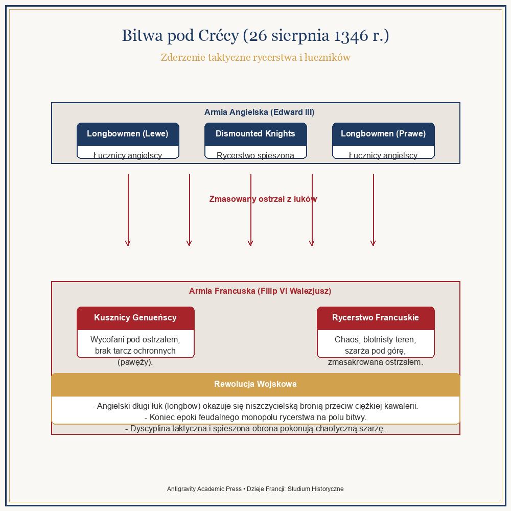
Francuska armia, dowodzona przez Filipa VI, była znacznie liczniejsza - szacunki mówią o 30 000 - 40 000 żołnierzy, w tym dużej liczbie ciężkozbrojnych rycerzy i najemnych kuszników genueńskich. Mimo przewagi liczebnej, brak dyscypliny, chaotyczne dowodzenie i przestarzała taktyka okazały się zgubne. Filip VI, zamiast czekać na uformowanie szyków, rozkazał natychmiastowy atak. Pierwsze uderzenie wykonali genueńscy kusznicy, którzy jednak, zmęczeni marszem i pozbawieni osłony, zostali zdziesiątkowani przez grad angielskich strzał. Ich paniczny odwrót został zablokowany przez nacierającą francuską kawalerię, która, w furii i pogardzie dla „plebejuszy”, wolała tratować własnych żołnierzy, niż pozwolić im uciec.
Kolejne fale francuskiej kawalerii, złożone z dumnych rycerzy, atakowały angielskie pozycje w sposób nieskoordynowany, bez taktycznego zmysłu. Rozpędzone szarże, jedna po drugiej, rozbijały się o angielskie formacje, a rycerze, uwięzieni w błocie i pod ostrzałem tysięcy strzał (szacuje się, że łucznicy wystrzeliwali do 10-12 strzał na minutę), stawali się łatwym celem. Strzały z długiego łuku, zdolne przebić pancerz z odległości, siały spustoszenie. Bitwa trwała do zmroku, zakończywszy się druzgocącą klęską Francuzów, którzy stracili około 10 000 - 15 000 ludzi, w tym wielu książąt i czołowych arystokratów. Anglicy ponieśli minimalne straty. Crécy stało się symbolicznym zwycięstwem piechoty i łuczników nad ciężką kawalerią, zwiastując zmierzch dominacji rycerstwa na polach bitew.
Dziesięć lat po Crécy, Anglia odniosła kolejne, równie spektakularne zwycięstwo pod Poitiers, 19 września 1356 roku. Armia angielska, dowodzona przez Edwarda, Czarnego Księcia, syna Edwarda III, liczyła około 6 000 - 7 000 żołnierzy, głównie łuczników i spieszonych rycerzy. Francuskie siły, dowodzone osobiście przez króla Jana II Dobrego, były znacznie liczniejsze, licząc około 15 000 - 20 000 ludzi.
Czarny Książę, wracając z chevauchée (niszczycielskiego rajdu) przez Francję, znalazł się w pułapce, otoczony przez armię królewską. Podobnie jak pod Crécy, Anglicy zajęli silną pozycję obronną na wzgórzu, otoczoną zaroślami i winnicami, co utrudniało manewry kawalerii. Francuzi, pamiętając lekcje z Crécy, postanowili spieszyć większość swoich rycerzy do walki pieszej, co w teorii miało zniwelować przewagę angielskich łuczników.
Jednakże, podobnie jak pod Crécy, francuskie dowództwo popełniło szereg błędów. Pierwsza fala ataku, złożona z nielicznej kawalerii i niemieckich najemników, została rozbita przez angielskich łuczników i spieszonych rycerzy. Następnie trzy duże batailles (formacje) spieszonych rycerzy francuskich, każda dowodzona przez księcia krwi, ruszyły do ataku. Mimo początkowych sukcesów, zwłaszcza formacji dowodzonej przez delfina Karola, francuskie natarcie było źle skoordynowane i brakowało mu elastyczności. W kluczowym momencie, angielski oddział pod dowództwem Jeana de Grailly, kapitana z Captal de Buch, wykonał flankujący atak na tyły francuskich formacji, wywołując panikę.
Najbardziej dramatycznym momentem bitwy było schwytanie króla Jana II Dobrego wraz z jego najmłodszym synem, Filipem Śmiałym. Król, walcząc dzielnie, ale bez skutecznej osłony, został otoczony i wzięty do niewoli. Klęska pod Poitiers była nie tylko militarną katastrofą, ale także polityczną hańbą, która pogrążyła Francję w chaosie, prowadząc do powstania Etienne’a Marcela w Paryżu i Jacquerie na wsi.
Zwycięstwa pod Crécy i Poitiers, a także późniejsze pod Azincourt, obnażyły głęboki kryzys średniowiecznego rycerstwa francuskiego. Tradycyjna doktryna wojenna, oparta na masowej szarży ciężkozbrojnych rycerzy, okazała się nieefektywna, a wręcz samobójcza, w starciu z nowatorską taktyką angielską.
Przyczyny tego kryzysu były wielorakie:
Kolejne, niezwykle symboliczne zwycięstwo angielskie miało miejsce pod Azincourt 25 października 1415 roku, w nowej fazie wojny, zainicjowanej przez Henryka V. Anglicy, zmęczeni długotrwałym oblężeniem Harfleur i osłabieni chorobami, podążali w kierunku Calais, kiedy to zostali zablokowani przez znacznie liczniejszą armię francuską. Henryk V, podobnie jak jego poprzednicy, zajął strategicznie korzystną pozycję na wąskim pasie ziemi między dwoma lasami, co uniemożliwiało Francuzom wykorzystanie ich przewagi liczebnej i manewrów flankujących. Teren był świeżo zaorany i rozmiękły po deszczach, co dodatkowo utrudniało poruszanie się ciężkozbrojnej kawalerii.
Angielska armia, licząca około 6 000 - 9 000 ludzi, ponownie opierała się na formacjach spieszonych rycerzy i łuczników, którzy wbili w ziemię zaostrzone pale, tworząc przeszkody dla konnicy. Francuskie siły, szacowane na 20 000 - 30 000, ponownie składały się z elity rycerstwa, dowodzonej przez książąt krwi, lecz bez króla Karola VI, który cierpiał na ataki szaleństwa.
Bitwa rozpoczęła się, gdy Henryk V, widząc, że Francuzi nie zamierzają atakować, rozkazał swoim łucznikom posunąć się naprzód i rozpocząć ostrzał. Sprowokowani Francuzi ruszyli do ataku. Pierwsza fala rycerzy, próbując pokonać błoto i angielskie pale, została zdziesiątkowana przez grad strzał. Ci, którzy dotarli do angielskich linii, byli wyczerpani i łatwo pokonywani przez spieszonych Anglików. Kolejne fale francuskich rycerzy, napierając na siebie w wąskim gardle, tworzyły gęste, bezładne masy, które stawały się idealnym celem dla łuczników. Brak miejsca do manewru, grząski teren i ciężar zbroi sprawiły, że wielu francuskich rycerzy po prostu utonęło w błocie lub zostało zmiażdżonych przez napierające oddziały.
Azincourt było kolejną rzezią francuskiego rycerstwa. Straty francuskie były astronomiczne - szacuje się, że zginęło od 6 000 do 10 000 ludzi, w tym trzech książąt, arcybiskup i wielu czołowych arystokratów. Anglicy stracili zaledwie kilkuset żołnierzy. Zwycięstwo pod Azincourt otworzyło Henrykowi V drogę do dominacji w północnej Francji i zmusiło osłabioną i pogrążoną w wewnętrznych sporach (między Armagnakami a Burgundczykami) monarchię francuską do kapitulacji.
Kulminacją angielskich sukcesów militarnych i francuskich klęsk było podpisanie traktatu w Troyes 21 maja 1420 roku. Dokument ten, zawarty w kontekście francuskiej wojny domowej między Armagnakami (zwolennikami delfina Karola) a Burgundczykami (na czele z księciem Janem bez Trwogi, a później Filipem Dobrym), był postrzegany jako ostateczne rozwiązanie kwestii sukcesji francuskiej na korzyść Anglii.
Traktat został wynegocjowany przez Henryka V z szaloną królową Izabelą Bawarską i księciem Burgundii, Filipem Dobrym, który pragnął zemsty na Armagnakach za zamordowanie jego ojca, Jana bez Trwogi. Jego główne postanowienia były następujące:
Traktat w Troyes był dla Anglików triumfem. Wydawało się, że ambicje Edwarda III sprzed stu lat wreszcie się ziściły. Henryk V, poprzez małżeństwo z Katarzyną, miał zjednoczyć korony Anglii i Francji pod jednym berłem. Francja, pogrążona w chaosie i wojnie domowej, zdawała się być na krawędzi całkowitej utraty suwerenności. Jednakże, jak pokazały późniejsze wydarzenia, traktat ten był jedynie papierowym zwycięstwem, które nie zdołało stłumić francuskiego oporu i narodowego ducha, a jego postanowienia nigdy nie zostały w pełni zrealizowane. W istocie, traktat ten, choć pozornie cementował angielską dominację, stał się również katalizatorem dla odrodzenia francuskiego.
Podsumowując, Wojna Stuletnia wybuchła w wyniku złożonych przyczyn dynastycznych, ekonomicznych i geopolitycznych. Początkowe sukcesy angielskie pod Crécy, Poitiers i Azincourt były bezpośrednim rezultatem zastosowania nowatorskiej taktyki, wykorzystującej siłę długiego łuku i zdyscyplinowanej piechoty, co radykalnie obnażyło przestarzałość francuskiego rycerstwa i jego etosu. Traktat w Troyes, choć stanowił szczyt angielskich ambicji, był w istocie jedynie tymczasowym układem, który nie zdołał powstrzymać dalszego rozwoju konfliktu i ostatecznie doprowadził do odrodzenia francuskiej monarchii.
Schyłek lat dwudziestych XV wieku stanowił dla monarchii francuskiej okres bezprecedensowego upadku i głębokiego kryzysu legitymizacji. Traktat w Troyes z 1420 roku, który wydawał się definitywnie przekreślać dziedziczne prawa Walezjuszów do tronu Francji, ustanawiając angielskiego króla Henryka V, a następnie jego syna Henryka VI, prawowitym sukcesorem, pogrążył kraj w stanie niemal beznadziejnym. Karol VII, pogardliwie nazywany “królem z Bourges”, kontrolował jedynie skrawki terytorium na południe od Loary, a jego dwór, rozdarty wewnętrznymi frakcjami i pozbawiony funduszy, zdawał się trwać w stanie paraliżu. W tym kontekście pojawienie się Joanny d’Arc, prostej wiejskiej dziewczyny z Domrémy, jawi się nie tylko jako jedno z najbardziej niezwykłych zjawisk w historii średniowiecznej, lecz także jako kluczowy katalizator przemian, które ostatecznie doprowadziły do odrodzenia narodowego i triumfu francuskiej monarchii.
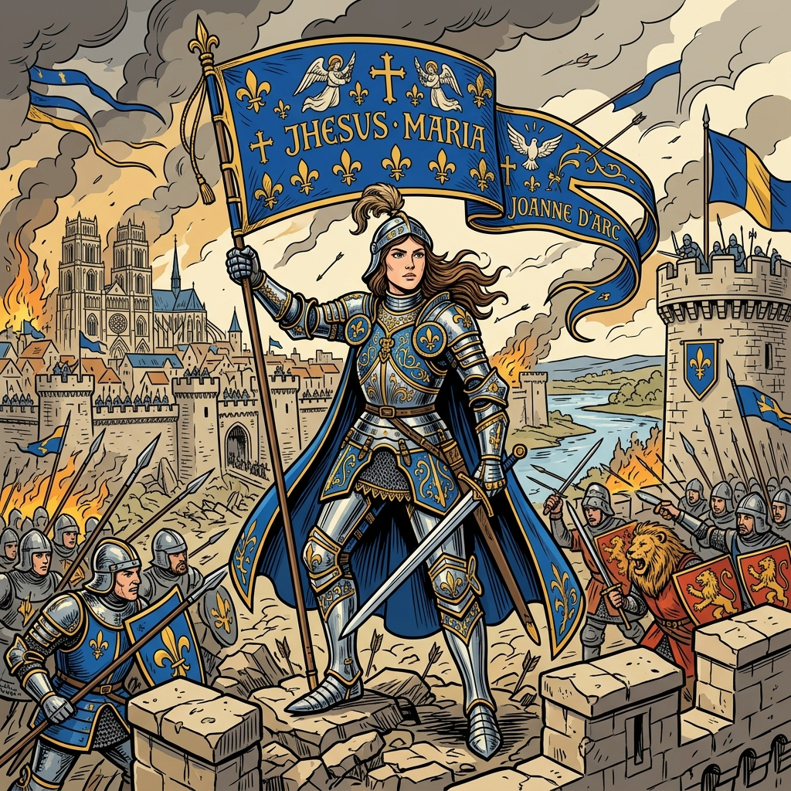
Joanna d’Arc (ok. 1412-1431), znana również jako Dziewica Orleańska, weszła na scenę polityczną i militarną w momencie, gdy Francja, a zwłaszcza stronnictwo Walezjuszów, znajdowała się na skraju przepaści. Jej misja, głęboko zakorzeniona w osobistych przeżyciach mistycznych i wizjach, była od początku postrzegana jako interwencja boska. Joanna twierdziła, że słyszy głosy świętych - Michała Archanioła, św. Katarzyny Aleksandryjskiej i św. Małgorzaty z Antiochii - które nakazywały jej wyzwolić Orlean, doprowadzić Karola VII do koronacji w Reims i wypędzić Anglików z Francji. W epoce głębokiej religijności, gdzie cudowne interwencje były integralną częścią światopoglądu, takie roszczenia, choć początkowo budzące sceptycyzm, znalazły podatny grunt w sercach zdesperowanych ludzi.
Jej pojawienie się w Chinon w lutym 1429 roku i przekonanie Karola VII o autentyczności jej posłannictwa - co według niektórych relacji miało nastąpić po ujawnieniu przez nią królowi treści jego tajnej modlitwy - było pierwszym z serii psychologicznych przełomów. Joanna, choć nie posiadała formalnego wykształcenia militarnego, wykazywała niezwykłą charyzmę i zdolność do inspirowania. Jej wiara w boskie wsparcie była absolutna i zaraźliwa, co miało kluczowe znaczenie dla podniesienia morale zdruzgotanych wojsk francuskich i zrezygnowanego dworu. Wprowadziła do armii poczucie przeznaczenia i świętej krucjaty, transformując wojnę dynastyczną w walkę o wyzwolenie ojczyzny, co było zarzewiem nowożytnego francuskiego patriotyzmu. Ten wczesny patriotyzm, choć jeszcze nie w pełni uformowany w kategoriach nowożytnego nacjonalizmu, wyrażał się w lojalności wobec królestwa Francji i jego prawowitego władcy, postrzeganego jako ucieleśnienie narodu, a nie tylko feudalnego seniora. Jak zauważył historyk J. Huizinga, w obliczu klęski i rozpadu, “zjawiła się dziewica, aby przypomnieć, że Francja jest czymś więcej niż tylko zbiorem lenn i że jej przeznaczenie jest boskie”.
Strategicznym punktem zwrotnym, który potwierdził mistyczną moc Joanny i zapoczątkował serię francuskich zwycięstw, było oblężenie Orleanu. Miasto to, kluczowe dla kontroli nad Loarą i ostatni bastion Walezjuszów na północ od rzeki, było oblegane przez Anglików od października 1428 roku i znajdowało się na krawędzi kapitulacji. Upadek Orleanu otworzyłby Anglikom drogę do serca Francji i przypieczętowałby los Karola VII.
Joanna d’Arc, wbrew ostrożnym radom dowódców wojskowych, nalegała na szybką i agresywną akcję. Jej przybycie do Orleanu 29 kwietnia 1429 roku, wraz z konwojem zaopatrzenia, natychmiast podniosło ducha obrońców i zasiało niepokój w szeregach angielskich. W ciągu zaledwie kilku dni, od 4 do 8 maja, pod jej inspiracją i z jej bezpośrednim udziałem w walkach, Francuzi przeprowadzili serię brawurowych ataków na angielskie umocnienia (tzw. bastilles), w tym na kluczowy fort Les Tourelles. W bitwach tych Joanna, pomimo rany odniesionej strzałą, wykazała się niezwykłą odwagą i zdolnością do mobilizowania żołnierzy. Historycy, tacy jak Régine Pernoud, podkreślają, że choć dowództwo taktyczne spoczywało na doświadczonych kapitanach, to właśnie obecność Joanny i jej niezachwiana wiara w zwycięstwo przełamały angielskie oblężenie. 8 maja Anglicy, zdemoralizowani i zaskoczeni niezwykłą determinacją Francuzów, opuścili swoje pozycje, kończąc oblężenie. Zwycięstwo pod Orleanem było triumfem psychologicznym o epokowym znaczeniu, dowodzącym, że Anglicy nie są niezwyciężeni, a Walezjusze mają boskie poparcie.
Po odsieczy Orleanu Joanna d’Arc kontynuowała swoją misję, prowadząc wojska francuskie w błyskawicznej kampanii nad Loarą, która miała na celu oczyszczenie regionu z angielskich garnizonów i utorowanie drogi do Reims. W czerwcu 1429 roku Francuzi odnieśli kolejne zwycięstwa pod Jargeau, Meung-sur-Loire i Beaugency, a kulminacją tej fazy była bitwa pod Patay (18 czerwca 1429). Pod Patay, armia francuska, pod dowództwem La Hire’a i Joanny, rozgromiła siły angielskie dowodzone przez Johna Fastolfa i Johna Talbota, zadając im ciężkie straty i łamiąc mit angielskiej niezwyciężoności w otwartym polu. Zwycięstwa te nie tylko zabezpieczyły region Loary, ale przede wszystkim utorowały drogę do koronacji Karola VII, co było kolejnym punktem jej boskiej misji.
Pomimo oporów doradców i dowódców, którzy opowiadali się za ostrożniejszymi działaniami, Joanna d’Arc nalegała na natychmiastowy marsz do Reims. Było to ryzykowne przedsięwzięcie, gdyż miasto znajdowało się głęboko na terytorium kontrolowanym przez Burgundczyków i Anglików. Jednakże, niezwykła determinacja Joanny i jej obietnice boskiego wsparcia przekonały Karola VII. Marsz do Reims, rozpoczęty 29 czerwca 1429 roku, był triumfalnym pochodem przez terytoria, które dotąd uznawały zwierzchnictwo angielskie lub burgundzkie. Kolejne miasta otwierały swoje bramy przed francuskimi wojskami, często bez walki, co świadczyło o rosnącym poparciu dla Walezjuszów i osłabieniu anglo-burgundzkiej dominacji.
Koronacja Karola VII w katedrze w Reims, która odbyła się 17 lipca 1429 roku, była wydarzeniem o kolosalnym znaczeniu symbolicznym i politycznym. W średniowiecznej Francji sacre (namaszczenie) w Reims było esencją legitymizacji władzy królewskiej. Udzielało ono władcy boskiego namaszczenia, czyniąc go królem z woli Bożej, a nie tylko z mocy dziedziczenia czy traktatów. W obecności Joanny d’Arc, która stała u boku króla z proporcem w dłoni, Karol VII został namaszczony świętym olejem, co symbolicznie unieważniało postanowienia Traktatu w Troyes i podważało roszczenia Henryka VI do tronu Francji. Akt ten był potężnym sygnałem dla całej Europy, że prawowitym władcą Francji jest Karol VII. Z perspektywy historiograficznej, koronacja ta stanowiła fundamentalny moment w procesie konsolidacji władzy Walezjuszów i wzmocnienia poczucia jedności królestwa, które zaczęło wykraczać poza partykularyzmy feudalne. Ugruntowała ona mistyczny wymiar francuskiej monarchii, która, jak pisał Marc Bloch, była “dotknięta cudem”.
Mimo iż misja Joanny d’Arc zakończyła się jej pojmaniem pod Compiègne w 1430 roku, procesem i egzekucją w 1431 roku, zapoczątkowane przez nią odrodzenie było już nie do zatrzymania. Karol VII, choć początkowo niezdecydowany i chwiejny, po koronacji w Reims zyskał pewność siebie i zaczął energicznie działać na rzecz odbudowy państwa. Kluczowym elementem tej odbudowy była gruntowna reforma armii, która zadecydowała o ostatecznym zwycięstwie nad Anglikami.
Przed reformami, wojska francuskie składały się głównie z nieregularnych oddziałów feudalnych, najemników (routiers), często niesubordynowanych i pustoszących kraj. Karol VII, świadomy potrzeby stworzenia profesjonalnej, lojalnej i skutecznej siły zbrojnej, podjął szereg kluczowych decyzji:
Te reformy przekształciły armię francuską z chaotycznej zbieraniny w zdyscyplinowaną, profesjonalną siłę, zdolną do prowadzenia długotrwałych kampanii i efektywnego oblężenia miast.
Zreorganizowana armia francuska, wspierana przez dyplomatyczne sukcesy (jak Kongres w Arras w 1435 roku, gdzie Burgundia porzuciła sojusz z Anglią), rozpoczęła systematyczne odzyskiwanie utraconych terytoriów.
Ostateczna konfrontacja miała miejsce pod Castillon 17 lipca 1453 roku. Była to bitwa przełomowa w historii wojny i sztuki wojennej. Wojska angielskie pod dowództwem Talbota zaatakowały francuski obóz, który był doskonale ufortyfikowany i przygotowany przez braci Bureau. Francuzi zbudowali rozległe umocnienia polowe, rowy i palisady, za którymi rozmieścili około 300 armat. Kiedy Anglicy, wyczerpani marszem i bez rozpoznania, przypuścili atak, zostali zdziesiątkowani przez skoncentrowany ogień francuskiej artylerii. Była to pierwsza bitwa w historii Europy, która została w sposób zdecydowany wygrana dzięki przewadze artyleryjskiej. John Talbot zginął w walce, a jego armia została rozbita. Upadek Bordeaux kilka miesięcy później oznaczał koniec angielskich posiadłości we Francji, z wyjątkiem Calais.
Zwycięstwo pod Castillon zakończyło de facto Wojnę Stuletnią. Choć formalny traktat pokojowy nigdy nie został podpisany, Anglia, osłabiona wewnętrznie Wojną Dwóch Róż, nie była już w stanie podjąć kolejnych prób inwazji na Francję.
Pojawienie się Joanny d’Arc było punktem zwrotnym w Wojnie Stuletniej, dostarczając zrezygnowanej Francji nie tylko serii militarnych zwycięstw, ale przede wszystkim moralnego i mistycznego impulsu, który przekształcił wojnę dynastyczną w walkę o wyzwolenie narodowe. Jej rola jako katalizatora nowożytnego francuskiego patriotyzmu, choć anachroniczna w sensie współczesnym, jest niezaprzeczalna w kontekście rodzącej się świadomości “francuskości” i lojalności wobec korony. Karol VII, początkowo “król z Bourges”, dzięki Joannie odzyskał legitymizację i pewność siebie, co pozwoliło mu na przeprowadzenie kluczowych reform wojskowych. Stworzenie stałej armii zawodowej i rewolucyjny rozwój artylerii pod kierownictwem braci Bureau zapewniły Francji przewagę technologiczną i taktyczną. Ta kombinacja mistycznego natchnienia, odrodzonej woli walki i strategicznych innowacji militarnych doprowadziła do systematycznego odzyskiwania terytoriów i ostatecznego zwycięstwa Walezjuszów pod Castillon w 1453 roku, definitywnie zmieniając oblicze Francji i Europy. Monarchia francuska wyszła z wojny wzmocniona, scentralizowana i z nowo ukształtowaną tożsamością narodową.
Wojna stuletnia, choć nominalnie konflikt dynastyczny, w rzeczywistości stanowiła katalizator i symptom znacznie głębszego kryzysu późnego średniowiecza, który w sposób fundamentalny przeobraził struktury społeczne, gospodarcze i polityczne Królestwa Francji. Okres ten, naznaczony gwałtownymi zmianami demograficznymi, wstrząsami społecznymi oraz bezprecedensową presją fiskalną, paradoksalnie stał się inkubatorem nowoczesnego państwa francuskiego, torując drogę do absolutyzmu monarchicznego. Analiza tych procesów wymaga uwzględnienia ich wzajemnych powiązań i długofalowych konsekwencji, które wykraczały daleko poza horyzont czasowy samego konfliktu.
Najbardziej dramatycznym i transformującym elementem późnośredniowiecznego kryzysu była bez wątpienia pandemia dżumy, znana jako Czarna Śmierć, która nawiedziła Europę Zachodnią, w tym Francję, w latach 1347-1351, a następnie powracała cyklicznie przez kolejne stulecia. Jej nadejście w 1348 roku było dla społeczeństwa francuskiego prawdziwym kataklizmem, którego skala i konsekwencje trudno przecenić. Szacuje się, że w ciągu zaledwie kilku lat liczba ludności Francji zmniejszyła się o jedną trzecią, a w niektórych regionach nawet o połowę. Taka depopulacja miała natychmiastowe i długotrwałe skutki, radykalnie zmieniając równowagę między pracą a ziemią.
Bezpośrednie konsekwencje demograficzne były druzgocące. Wsie opustoszały, pola uprawne leżały odłogiem, a miasta, mimo napływu ludności wiejskiej, doświadczały drastycznych spadków liczby mieszkańców. Śmierć tak wielu ludzi, niezależnie od statusu społecznego, doprowadziła do zakłócenia tradycyjnych więzi rodzinnych i wspólnotowych. Z perspektywy gospodarczej, masowa śmiertelność wywołała głęboki wstrząs. Nastąpił drastyczny niedobór siły roboczej, co z kolei doprowadziło do wzrostu płac dla ocalałych chłopów i rzemieślników. W niektórych regionach, zwłaszcza na północy Francji, gdzie presja feudalna była silniejsza, panowie ziemscy początkowo próbowali przeciwdziałać temu trendowi, wprowadzając edykty zamrażające płace i ograniczające swobodę przemieszczania się chłopów, co jednak w dłuższej perspektywie okazało się niemożliwe do utrzymania.
Długoterminowe skutki Czarnej Śmierci były złożone i wielowymiarowe. Z jednej strony, spadek liczby ludności przyczynił się do zmniejszenia presji na zasoby rolne, co w niektórych przypadkach prowadziło do poprawy diety i warunków życia ocalałych. Z drugiej strony, cykliczne nawroty epidemii utrzymywały społeczeństwo w stanie permanentnego niepokoju i niepewności, wpływając na mentalność zbiorową. Jak zauważył Georges Duby, “Czarna Śmierć była nie tylko czynnikiem demograficznym, ale także psychologicznym, wzmacniającym poczucie kruchości ludzkiego życia i przyspieszającym zmiany w percepcji świata i wartości”. W debacie historiograficznej na temat późnośredniowiecznego kryzysu, Czarna Śmierć jest często interpretowana jako czynnik przyspieszający, a nie wyłączna przyczyna, głębszych problemów strukturalnych, takich jak przeludnienie i wyczerpanie zasobów, które już wcześniej obciążały gospodarkę agrarną. Jednakże jej skala i gwałtowność sprawiły, że stała się ona punktem zwrotnym, po którym powrót do status quo ante był niemożliwy.
Bezpośrednią konsekwencją kryzysu demograficznego i gospodarczego, pogłębionego przez obciążenia wojenne, były liczne bunty społeczne, które wstrząsnęły Francją w drugiej połowie XIV wieku. Były one wyrazem narastających napięć między różnymi warstwami społecznymi, a także frustracji wobec nieudolności elit w zapewnieniu bezpieczeństwa i stabilności.
Najbardziej znanym i symbolicznym z tych wystąpień była Żakieria (Jacquerie) z 1358 roku. Jej geneza była złożona. Po klęsce pod Poitiers (1356), gdzie w niewolę dostał się król Jan II Dobry, Francja pogrążyła się w chaosie politycznym. Książę Karol Delfin (późniejszy Karol V) borykał się z opozycją paryską pod wodzą Étienne’a Marcela. Jednocześnie, kraj był niszczony przez grandes compagnies - bandy najemników, którzy po bitwach lub w okresach zawieszenia broni grabili wieś. Chłopi, już i tak obciążeni wysokimi podatkami wojennymi (takimi jak taille czy gabelle), czuli się porzuceni i zdradzeni przez szlachtę, która, w ich ocenie, nie tylko nie potrafiła ich obronić, ale jeszcze ponosiła odpowiedzialność za klęski militarne i hańbę narodu.
Żakieria wybuchła w Beauvaisis, regionie na północ od Paryża, a następnie rozprzestrzeniła się na inne obszary Île-de-France, Pikardii i Szampanii. Był to bunt spontaniczny, pozbawiony centralnego dowództwa i klarownego programu politycznego. Chłopi, zwani pogardliwie “Jacques Bonhomme” (Kuba Prostaczek), atakowali zamki i dwory szlacheckie, mordując panów i ich rodziny, paląc dokumenty feudalne. Ich gniew był skierowany przeciwko całej klasie szlacheckiej, którą postrzegali jako pasożytniczą i niekompetentną. Kronikarz Jean Froissart, choć z wyraźną niechęcią do chłopów, szczegółowo opisał ich brutalność, co świadczy o głębi nienawiści, jaka narastała w społeczeństwie.
Reakcja szlachty była równie brutalna. Bunt został stłumiony w ciągu kilku tygodni przez wojska Karola II Złego, króla Nawarry, i innych panów feudalnych. Tysiące chłopów zostało wymordowanych, a ich wioski spalone. Pomimo klęski, Żakieria miała ogromne znaczenie symboliczne. Ujawniła ona głębię podziałów społecznych, potencjał masowego oporu oraz kruchość feudalnego ładu. Choć nie doprowadziła do natychmiastowej poprawy losu chłopów, zmusiła elity do refleksji nad potrzebą reform i wzmocnienia władzy centralnej, zdolnej do zaprowadzenia porządku i ochrony wszystkich poddanych.
Żakieria nie była jedynym przykładem niepokojów. W Paryżu, w latach 1356-1358, doszło do buntu mieszczan pod wodzą Étienne’a Marcela, prewota kupców, który próbował narzucić monarchii kontrolę Stanów Generalnych, żądając reform i ograniczenia władzy królewskiej. Późniejsze bunty miejskie, takie jak bunt Maillotinów w Paryżu w 1382 roku, również były wyrazem sprzeciwu wobec rosnących obciążeń podatkowych i korupcji władzy. Wszystkie te wydarzenia, choć o różnym charakterze i celach, świadczyły o niestabilności późnośredniowiecznego społeczeństwa francuskiego i potrzebie silnej ręki, która mogłaby zaprowadzić porządek i zapewnić bezpieczeństwo.
Kryzys finansowy, wywołany długotrwałą wojną i potrzebą utrzymywania armii, stał się głównym motorem zmian w systemie fiskalnym Francji. Władcy, zmagający się z chronicznym niedoborem środków, musieli szukać nowych źródeł dochodów, wykraczających poza tradycyjne dochody z domeny królewskiej i okazjonalne feudalne świadczenia. Proces ten, stopniowo rozwijający się w ciągu XIV i XV wieku, doprowadził do ukształtowania stałych podatków królewskich, które stały się filarem potęgi monarchii i kluczowym elementem na drodze do absolutyzmu.
Początkowo, król musiał każdorazowo prosić Stany Generalne (zgromadzenie przedstawicieli szlachty, duchowieństwa i mieszczaństwa) o zgodę na nałożenie nowych podatków, zwłaszcza na potrzeby wojny. Było to pole do negocjacji i wywierania wpływu na politykę królewską. Jednakże, w miarę przedłużania się konfliktu i rosnących potrzeb finansowych, monarchowie, zwłaszcza Karol V Mądry i Karol VII Zwycięski, zaczęli dążyć do uniezależnienia się od tej zgody.
Kluczowym podatkiem, który stał się stałym elementem systemu fiskalnego, była taille. Był to bezpośredni podatek, pierwotnie nakładany na gospodarstwa domowe lub ziemię, a jego wysokość ustalana była przez radę królewską. Początkowo taille była pobierana sporadycznie, ale pod koniec Wojny Stuletniej, zwłaszcza po reformach Karola VII w latach 40. XV wieku, stała się podatkiem stałym, pobieranym corocznie bez konieczności każdorazowej zgody Stanów Generalnych. Co istotne, szlachta i duchowieństwo były z tego podatku zwolnione, co w przyszłości pogłębiło podziały społeczne i stało się źródłem niezadowolenia.
Oprócz taille, monarchia rozwijała również inne źródła dochodów:
Ustanowienie stałych podatków królewskich miało fundamentalne znaczenie dla wzmocnienia władzy monarszej. Po pierwsze, zapewniło ono królowi stały i przewidywalny strumień dochodów, co pozwoliło na utrzymywanie stałej armii najemnej, uniezależniając go od nie zawsze lojalnych wojsk feudalnych. Po drugie, stopniowo ograniczyło, a w końcu niemal całkowicie wyeliminowało, polityczną rolę Stanów Generalnych. Monarcha, mając zapewnione finansowanie, nie musiał już zwoływać zgromadzeń przedstawicielskich i negocjować z nimi, co osłabiło ich wpływy i utorowało drogę do jednoosobowych rządów. Był to decydujący krok w kierunku fiskalnego absolutyzmu, który stanowił fundament absolutyzmu politycznego.
Okres po zakończeniu Wojny Stuletniej (1453) nie oznaczał natychmiastowego pokoju i jedności wewnętrznej. Królestwo było zrujnowane, a władza królewska wciąż musiała zmagać się z potężnymi magnatami feudalnymi, którzy dążyli do zachowania lub powiększenia swojej autonomii. To właśnie w tym kontekście na scenę wkroczył Ludwik XI (panujący 1461-1483), postać, która w sposób bezkompromisowy i niezwykle skuteczny kontynuowała proces centralizacji władzy i terytorialnej konsolidacji Francji, torując drogę do absolutyzmu.
Ludwik XI, często nazywany “Uniwersalnym Pająkiem” (l’universelle araigne) przez swoich przeciwników z powodu swojej przebiegłości i skłonności do intryg, był monarchą pragmatycznym i bezwzględnym. Jego polityka była konsekwentnie nakierowana na osłabienie niezależności wielkich feudałów i wzmocnienie autorytetu korony. Nie wahał się używać wszelkich dostępnych środków: dyplomacji, szpiegostwa, przekupstwa, manipulacji prawem, a w ostateczności siły militarnej. Jednym z jego głównych celów było rozbicie tzw. Ligi Dobra Publicznego (Ligue du Bien public), koalicji książąt feudalnych, którzy pod pretekstem reformy państwa dążyli do ograniczenia władzy królewskiej. Ludwik XI sprytnie wykorzystał wewnętrzne podziały w Lidze, a także jej militarne niepowodzenia, aby stopniowo osłabić jej członków.
Największym wyzwaniem i jednocześnie największym triumfem Ludwika XI było ostateczne zlikwidowanie niezależnego Księstwa Burgundii. Księstwo to, pod rządami ambitnych książąt z bocznej linii Walezjuszów, stało się w XV wieku potężną siłą w Europie Zachodniej. Jego terytoria rozciągały się od Niderlandów po Franche-Comté, stanowiąc bufor między Francją a Świętym Cesarstwem Rzymskim. Książęta Burgundii, zwłaszcza Filip Dobry i jego syn Karol Śmiały, prowadzili niezależną politykę, konkurując z królami Francji i dążąc do stworzenia własnego, suwerennego królestwa.
Karol Śmiały (1467-1477) był uosobieniem rycerskich ideałów, ale jednocześnie ambitnym i agresywnym politykiem. Jego marzeniem było odtworzenie dawnego królestwa Lotaryngii i koronacja na króla. Prowadził ekspansywną politykę, wplątując się w liczne konflikty z sąsiadami, w tym z kantonami szwajcarskimi i miastami Alzacji. Ludwik XI, widząc w Karolu głównego rywala dla swojej polityki centralizacyjnej, z niezwykłą zręcznością wykorzystał jego pychę i błędy. Wspierał tajnie wrogów Karola, finansował jego przeciwników i prowadził złożoną grę dyplomatyczną, której celem było osłabienie burgundzkiej potęgi.
Decydujący moment nastąpił w 1477 roku. Karol Śmiały, uwikłany w wojnę z kantonami szwajcarskimi i księstwem Lotaryngii, poniósł klęskę i zginął w bitwie pod Nancy. Jego śmierć bez męskiego potomka była punktem zwrotnym. Ludwik XI natychmiast przystąpił do działania. Zgodnie z prawem feudalnym, Księstwo Burgundii, będące lennem korony francuskiej, po wygaśnięciu linii męskiej wracało do króla. Ludwik XI natychmiast zajął właściwe Księstwo Burgundii oraz Pikardię. Pozostałe ziemie burgundzkie, w tym bogate Niderlandy, przeszły w ręce Marii Burgundzkiej, córki Karola Śmiałego, która poślubiła Maksymiliana I Habsburga, arcyksięcia Austrii. To małżeństwo zapoczątkowało długotrwałą rywalizację francusko-habsburską, ale dla Francji oznaczało usunięcie najpotężniejszego wewnętrznego rywala i znaczące powiększenie domeny królewskiej.
Zwycięstwo nad Burgundią było kluczowe dla procesu centralizacji. Ludwik XI nie tylko powiększył terytorium Francji, ale także zlikwidował ostatnie poważne zagrożenie dla władzy królewskiej ze strony wielkich feudałów. Jego rządy charakteryzowały się również rozwojem administracji królewskiej, wzmocnieniem sądów królewskich (parlamentów) i wspieraniem miast oraz handlu, co przyczyniało się do wzrostu dochodów korony i tworzenia lojalnej warstwy mieszczańskiej.
Podsumowując, Wojna Stuletnia i towarzyszący jej kryzys późnośredniowieczny były okresem głębokich wstrząsów, które jednak, paradoksalnie, położyły podwaliny pod nowoczesne państwo francuskie. Czarna Śmierć zrewolucjonizowała strukturę demograficzną i gospodarczą, prowadząc do zmian w relacjach społecznych. Bunty, takie jak Żakieria, ujawniły głębokie napięcia i potrzebę silnej władzy centralnej. Ustanowienie stałych podatków królewskich, zwłaszcza taille, uniezależniło monarchę od Stanów Generalnych i dało mu niezbędne środki do budowy scentralizowanego aparatu państwowego (Guenée, 1971) i utrzymywania stałej armii. Wreszcie, bezwzględna polityka Ludwika XI, uwieńczona likwidacją potężnego Księstwa Burgundii, ostatecznie złamała potęgę feudalnej arystokracji i skonsolidowała terytorium oraz władzę królewską. Wszystkie te czynniki, wzajemnie się przenikając i wzmacniając, skierowały Francję na drogę do absolutyzmu, który w kolejnych stuleciach miał stać się jej dominującą formą rządów.
Ppanowanie Franciszka I (1515-1547) stanowi epokowy moment w historii Francji, naznaczony intensywnymi kampaniami militarnymi we Włoszech, które, choć kosztowne i ostatecznie niejednoznaczne pod względem terytorialnym, okazały się niezwykle płodnym „pasem transmisyjnym” dla idei i estetyki włoskiego Odrodzenia. Francuska ekspansja na Półwysep Apeniński, zapoczątkowana jeszcze przez Karola VIII w 1494 roku, a kontynuowana z różnym natężeniem przez Ludwika XII, osiągnęła swoje apogeum i symboliczną kulminację za sprawą młodego Franciszka I.
Inwazja Karola VIII na Włochy, motywowana dynastycznymi roszczeniami do Królestwa Neapolu odziedziczonymi po Andegawenach, była dla ówczesnej Europy wydarzeniem bezprecedensowym. Francuska armia, choć nowoczesna i dobrze zorganizowana, zetknęła się w Italii z cywilizacją o nieporównywalnym stopniu rozwoju kulturalnego i artystycznego. Dwory mediolańskie, florenckie, rzymskie czy neapolitańskie promieniowały bogactwem, wyrafinowaniem i nowymi prądami intelektualnymi, które wstrząsnęły francuską szlachtą i dworem. Historyk Jacques Heers trafnie zauważa, że “dla Francuzów Włochy były nie tylko celem podbojów, ale i źródłem olśnienia, miejscem, gdzie czas zdawał się płynąć inaczej, a sztuka osiągała nieznane dotąd formy”. To początkowe zderzenie kulturowe, choć nie od razu przełożyło się na szeroko zakrojony mecenat, zasiało ziarno fascynacji, które miało wydać obfite plony.
Ludwik XII, następca Karola VIII, kontynuował politykę interwencji, skupiając się na Księstwie Mediolanu, do którego rościł sobie prawa poprzez swoje pochodzenie z rodu Orleańskiego. Jego kampanie, choć również zmiennego szczęścia, pogłębiły francuską obecność i ekspozycję na włoskie wzorce. To jednak panowanie Franciszka I, który wstąpił na tron w 1515 roku, przyniosło decydującą fazę tych wojen i zarazem najbardziej intensywną wymianę kulturalną. Franciszek I, młody, ambitny i rycerski władca, natychmiast po koronacji podjął próbę odzyskania Mediolanu. Kulminacją jego pierwszej kampanii była Bitwa pod Marignano we wrześniu 1515 roku. To dwudniowe starcie, w którym francuskie oddziały, wspierane przez wenecką kawalerię, pokonały słynną szwajcarską piechotę, było triumfem militarnym o ogromnym znaczeniu psychologicznym i strategicznym. Bitwa ta, opiewana przez ówczesnych kronikarzy jako “bitwa gigantów”, ugruntowała reputację Franciszka I jako “króla-rycerza” i na pewien czas zapewniła Francji dominację w Lombardii.
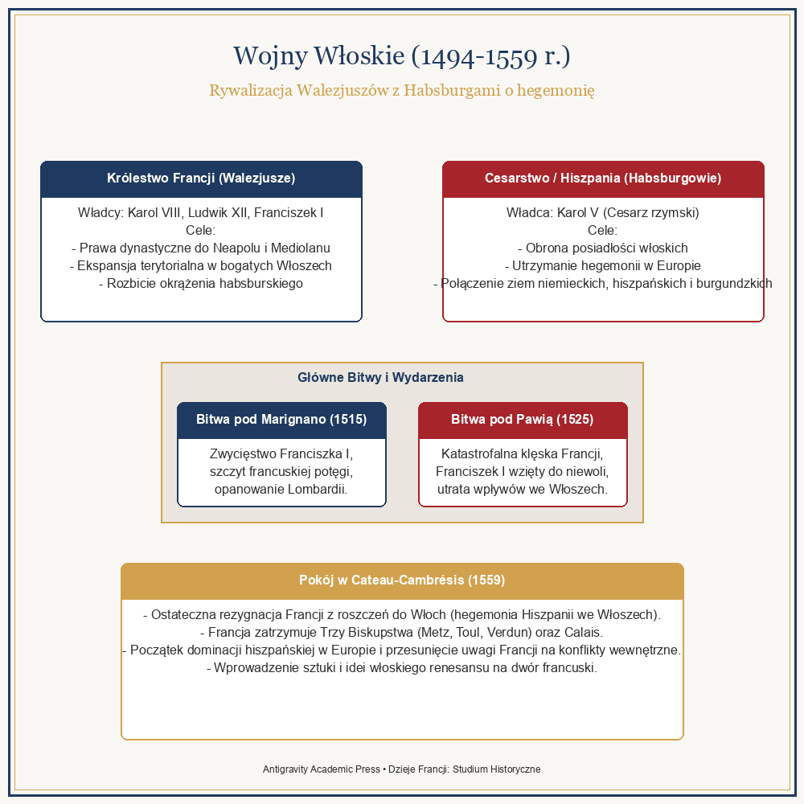
Z perspektywy kulturalnej, Marignano było nie tylko zwycięstwem militarnym, ale i symbolicznym otwarciem bram Francji na renesansowe Włochy. Francuscy żołnierze i dworzanie, towarzyszący królowi, mieli bezpośredni kontakt z włoską architekturą, malarstwem, literaturą i stylem życia. To bezpośrednie doświadczenie, odmienne od sporadycznych wizyt czy importu pojedynczych dzieł, stworzyło grunt dla systematycznego przenikania włoskich wzorców. Nie było to jednak jednostronne przejęcie; francuski renesans, choć głęboko zakorzeniony w inspiracji włoskiej, wykształcił własne, unikalne cechy, łącząc klasyczne motywy z rodzimymi tradycjami gotyckimi i specyficznym francuskim smakiem. Kampanie włoskie, trwające z przerwami przez większość panowania Franciszka I, a później jego następców, były więc nie tyle podbojem, co długotrwałym procesem akulturacji, który na zawsze zmienił oblicze Francji.
Franciszek I, zafascynowany kulturą włoską i świadomy jej potencjału do legitymizacji i wzmocnienia władzy monarszej, stał się jednym z największych mecenasów sztuki w historii Francji. Jego patronat był świadomą polityką kulturalną, mającą na celu przekształcenie Paryża i dworu francuskiego w nowe centrum renesansu, dorównujące Rzymowi czy Florencji. Król, często nazywany “pierwszym królem renesansu”, aktywnie poszukiwał i zapraszał do Francji najwybitniejszych artystów i myślicieli epoki.
Najbardziej symbolicznym i znaczącym aktem jego mecenatu było zaproszenie do Francji Leonarda da Vinci w 1516 roku. Genialny artysta i wynalazca spędził ostatnie lata swojego życia na dworze Franciszka I w Château du Clos Lucé, w pobliżu rezydencji królewskiej w Amboise. Leonardo przywiózł ze sobą nie tylko swoje dzieła, w tym słynną “Monę Lisę”, ale przede wszystkim ducha renesansowego humanizmu, ciekawości naukowej i innowacyjnego podejścia do sztuki. Jego obecność na dworze królewskim, choć nie zaowocowała wieloma nowymi dziełami malarskimi, miała ogromne znaczenie symboliczne i edukacyjne, wpływając na otoczenie króla i inspirując młodszych artystów. Franciszek I otaczał się także innymi włoskimi mistrzami, takimi jak Rosso Fiorentino i Francesco Primaticcio, którzy odegrali kluczową rolę w uformowaniu tzw. Szkoły Fontainebleau. Artyści ci, pracując nad dekoracją królewskich rezydencji, wprowadzili do Francji manieryzm, charakteryzujący się elegancją, złożonością kompozycji i nowatorskim wykorzystaniem mitologii klasycznej.
Architektura stała się kolejnym polem, na którym Franciszek I manifestował swoją renesansową wizję. Król zainicjował budowę i przebudowę licznych zamków nad Loarą, które do dziś stanowią kwintesencję francuskiego renesansu. Przykładem par excellence jest Château de Chambord, rozpoczęty w 1519 roku. Ten monumentalny zamek myśliwski, choć nigdy w pełni ukończony, jest arcydziełem architektury, łączącym tradycyjne francuskie elementy gotyckie (takie jak masywne wieże i dach z licznymi kominami i lucarnami) z wyraźnymi wpływami włoskimi. Spekuluje się, że sam Leonardo da Vinci mógł mieć wpływ na jego projekt, zwłaszcza na genialne podwójne spiralne schody, które stanowią centralny punkt budowli. Chambord nie był jedynie rezydencją; był manifestacją władzy, bogactwa i artystycznego smaku króla, mającym na celu olśniewanie gości i ugruntowanie pozycji Francji jako mocarstwa kulturalnego. Inne zamki, takie jak Blois czy Fontainebleau, również zostały przekształcone pod wpływem renesansowych trendów, stając się centrami innowacji artystycznych i intelektualnych.
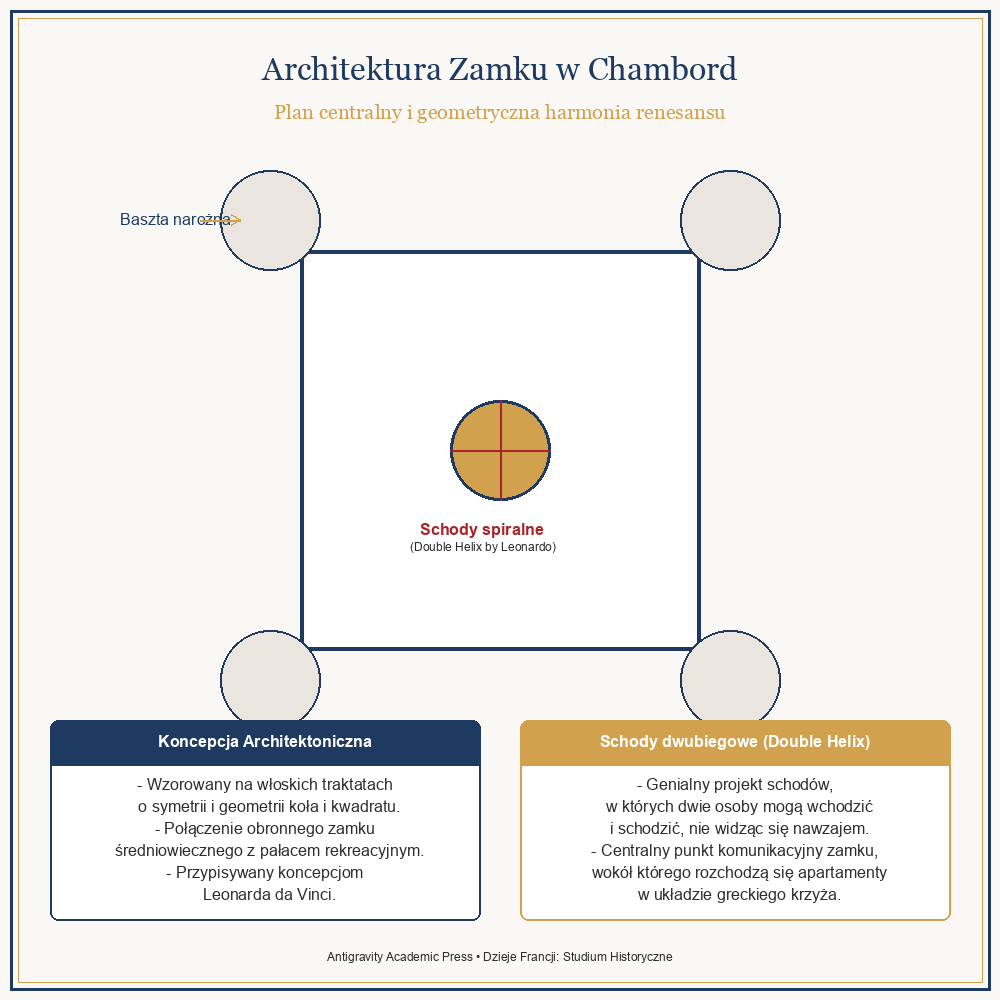
Mecenat Franciszka I wykraczał poza sztuki plastyczne. Król był również bibliofilem i fundatorem Collège Royal (późniejszego Collège de France), instytucji powołanej w 1530 roku, aby promować nauczanie języków starożytnych (greki, hebrajskiego) i nowych nauk, niezależnie od tradycyjnego nauczania uniwersyteckiego. To podkreślało jego zaangażowanie w humanistyczne ideały i dążenie do rozwoju wiedzy. Dzięki jego wysiłkom, Francja stała się ważnym ośrodkiem renesansu na północ od Alp, a jego dwór promieniował nowym stylem życia, modą i intelektualnymi dyskusjami, które na zawsze zmieniły francuską tożsamość kulturową.
Zwycięstwo pod Marignano nie tylko otworzyło Franciszka I na kulturowe wpływy Włoch, ale także umożliwiło mu renegocjację stosunków z papiestwem, co zaowocowało podpisaniem niezwykle ważnego Konkordatu Bolońskiego w 1516 roku. Ten akt prawny, zawarty między Franciszkiem I a papieżem Leonem X, zastąpił Pragmatyczną Sankcję z Bourges z 1438 roku, która w znacznym stopniu ograniczała wpływy papieskie na francuski Kościół, uznając prymat soboru nad papieżem i przyznając kapitułom prawo wyboru biskupów.
Konkordat Boloński stanowił kompromis, który jednak w decydujący sposób wzmocnił władzę królewską kosztem niezależności Kościoła francuskiego i częściowo kosztem autorytetu papieża. Zgodnie z jego postanowieniami, król Francji zyskiwał prawo do nominowania kandydatów na wakujące biskupstwa i arcybiskupstwa, a także na opactwa i inne beneficja kościelne. Papieżowi pozostawiono jedynie prawo do potwierdzenia tych nominacji poprzez nadanie inwestytury kanonicznej. W zamian za to Franciszek I uznał prymat papieża i zrezygnował z niektórych bardziej radykalnych postanowień Pragmatycznej Sankcji, w tym z zasady wyższości soboru nad papieżem, co było kluczowe dla Leona X.
Znaczenie Konkordatu Bolońskiego dla Gallikanizmu i władzy królewskiej było fundamentalne. Historycy, tacy jak Jean-Louis Bourgeon, podkreślają, że konkordat ten był kamieniem milowym w procesie centralizacji władzy we Francji i integracji Kościoła z aparatem państwowym. Poprzez kontrolę nad obsadą kluczowych stanowisk kościelnych, król zyskiwał potężne narzędzie wpływu. Biskupi i opaci, często wywodzący się ze szlachty i zobowiązani królowi za swoje awanse, stawali się lojalnymi urzędnikami państwowymi, a nie niezależnymi autorytetami religijnymi. To pozwalało monarsze na obsadzanie stanowisk kościelnych zaufanymi ludźmi, często członkami własnej rodziny lub bliskimi współpracownikami, co dodatkowo umacniało jego pozycję polityczną i społeczną.
Konkordat zapewnił królowi również kontrolę nad znacznymi zasobami finansowymi Kościoła. Beneficja kościelne, często związane z dużymi majątkami ziemskimi, mogły być teraz rozdawane według królewskiego uznania, co stanowiło potężną dźwignię polityczną. Chociaż Konkordat nie rozwiązał wszystkich napięć między monarchią a papiestwem - kwestie doktrynalne i finansowe nadal były przedmiotem sporów - to jednak na długie stulecia ukształtował specyficzny model stosunków państwo-Kościół we Francji, wzmacniając tendencje gallikańskie, czyli dążenie do autonomii Kościoła francuskiego pod przewodnictwem króla, a nie papieża. Był to kluczowy krok w kierunku absolutystycznego modelu rządów, w którym władza świecka dominowała nad duchowną.
Kolejnym doniosłym aktem prawnym, który w znaczący sposób przyczynił się do kształtowania nowoczesnego państwa francuskiego za panowania Franciszka I, był Edykt z Villers-Cotterêts, wydany w 1539 roku. Ten pozornie techniczny dokument, dotyczący reformy administracji i sądownictwa, miał dalekosiężne konsekwencje dla rozwoju języka francuskiego, systemu prawnego i tożsamości narodowej.
W XVI wieku Francja była mozaiką językową i prawną. Obok rozlicznych dialektów romańskich (języków oil na północy i języków oc na południu) oraz języków nieromańskich (bretońskiego, baskijskiego, niemieckiego), łacina pozostawała dominującym językiem w sferze prawa, administracji i nauki. Ta lingwistyczna fragmentacja utrudniała komunikację, prowadziła do niejasności prawnych i stanowiła barierę dla efektywnego zarządzania państwem. Król Franciszek I, dążąc do centralizacji i usprawnienia administracji, dostrzegł potrzebę ujednolicenia języka urzędowego.
Główne postanowienia Edyktu z Villers-Cotterêts, składającego się ze 192 artykułów, były rewolucyjne. Najważniejszy z nich, artykuł 110, nakazywał, aby wszystkie akty prawne, wyroki sądowe, testamenty i inne dokumenty urzędowe były sporządzane “w języku francuskim i w sposób jasny i zrozumiały”, zastępując tym samym łacinę. Artykuł 111 rozszerzał ten obowiązek na wszystkie procedury sądowe. Było to nie tylko uznanie języka francuskiego jako oficjalnego języka państwa, ale także krok w kierunku standaryzacji i zrozumiałości prawa dla ogółu społeczeństwa (przynajmniej dla tych, którzy posługiwali się francuskim).
Ponadto, Edykt zawierał inne ważne postanowienia, które wzmocniły władzę królewską i przyczyniły się do powstania nowoczesnego państwa. Artykuły 51 i 52 nakazywały proboszczom prowadzenie rejestrów chrztów i zgonów, co stanowiło podstawę dla nowoczesnej ewidencji stanu cywilnego. To nie tylko zwiększało kontrolę państwa nad populacją, ale także miało fundamentalne znaczenie dla genealogii, dziedziczenia i identyfikacji obywateli. Edykt ograniczał również jurysdykcję sądów kościelnych, przenosząc niektóre sprawy do sądów królewskich, co było kolejnym elementem umacniania władzy świeckiej.
Długofalowe skutki Edyktu z Villers-Cotterêts były ogromne. Był to kluczowy moment w rozwoju języka francuskiego jako języka narodowego i symbolu jedności państwowej. Przyczynił się do jego kodyfikacji i rozpowszechnienia, stopniowo wypierając dialekty lokalne i łacinę z oficjalnego obiegu. Choć proces ten był długotrwały i napotykał na opór, edykt stworzył ramy prawne dla dominacji francuskiego, co miało fundamentalne znaczenie dla kształtowania się francuskiej tożsamości narodowej i kultury. W sferze prawnej, edykt przyczynił się do większej przejrzystości i jednolitości systemu sądowniczego, ułatwiając obywatelom zrozumienie i dostęp do prawa. Był to zatem akt, który nie tylko usprawnił administrację, ale także ugruntował pozycję monarchy jako gwaranta porządku i jedności państwa, symbolicznie i praktycznie łącząc królestwo wspólnym językiem i prawem.
Podsumowując, panowanie Franciszka I było okresem intensywnych przemian, w których militarne ambicje we Włoszech stały się katalizatorem dla głębokiej transformacji kulturalnej, politycznej i administracyjnej Francji. Kampanie włoskie otworzyły kraj na renesansowe idee, mecenat królewski zaszczepił je na francuskim gruncie, a kluczowe akty prawne - Konkordat Boloński i Edykt z Villers-Cotterêts - umocniły władzę monarszą i położyły podwaliny pod nowoczesne państwo francuskie, naznaczone jednością językową i silną kontrolą króla nad Kościołem i administracją.
Wiek XVI we Francji, naznaczony początkowo triumfem renesansowego humanizmu i wzmocnieniem monarchii w dobie Franciszka I i Henryka II, uległ głębokiej transformacji pod wpływem Reformacji. Idee zapoczątkowane przez Marcina Lutra, a następnie rozwinięte przez Jana Kalwina, znalazły we Francji podatny grunt, prowadząc do powstania potężnego ruchu hugenockiego, który wstrząsnął posadami państwa i doprowadził do dekad wyniszczających wojen religijnych. Kulminacją tych konfliktów stała się tragiczna Noc św. Bartłomieja, symbolizująca apogeum kryzysu humanitarnego i politycznego.
Pierwsze echa Reformacji dotarły do Francji już w latach 20. XVI wieku, głównie za pośrednictwem pism Lutra, które krążyły wśród intelektualistów i duchowieństwa, zwłaszcza w kręgach związanych z królestwem Nawarry i siostrą Franciszka I, Małgorzatą z Nawarry. Początkowo ruch ten miał charakter raczej humanistyczny i reformatorski w duchu nauczania Jacques’a Lefèvre’a d’Étaples, który głosił potrzebę odnowy Kościoła w oparciu o Pismo Święte. Król Franciszek I, choć z początku tolerancyjny, po tzw. „aferze plakatów” w 1534 roku, kiedy to antykatolickie afisze pojawiły się nawet na drzwiach jego sypialni, zaostrzył politykę wobec innowierców. Represje nasiliły się za panowania jego syna, Henryka II, który ustanowił specjalne izby parlamentarne, zwane chambres ardentes (płonące izby), do sądzenia heretyków, oraz wydał edykty z Châteaubriant (1551) i Compiègne (1557), radykalizujące kary.
Niemniej jednak, to nie luteranizm, lecz kalwinizm stał się dominującą formą protestantyzmu we Francji. Nauka Jana Kalwina, z jej rygorystyczną teologią predestynacji (Febvre, 1942), silnym naciskiem na dyscyplinę moralną i przede wszystkim z doskonale zorganizowaną strukturą kościelną (konsystorze, synody), okazała się niezwykle atrakcyjna. Kalwinizm oferował nie tylko spójny system wiary, ale także alternatywną, zdecentralizowaną strukturę społeczną, która w pewnym sensie odpowiadała aspiracjom części szlachty dążącej do większej autonomii wobec centralizującej się monarchii. Szybko rozprzestrzenił się w południowej i zachodniej Francji, w Langwedocji, Poitou, Delfinacie i Normandii, a także w wielu miastach, takich jak La Rochelle, Nîmes czy Montpellier.
Społeczna baza hugenotów (termin ten, prawdopodobnie pochodzący od niemieckiego słowa Eidgenossen - „sprzymierzeńcy” - lub od nazwiska jednego z liderów Genewy, Hugues’a) była zróżnicowana. Obejmowała rzemieślników, kupców, prawników (noblesse de robe), a także znaczną część duchowieństwa niższego i średniego szczebla. Kluczowe dla politycznego wymiaru konfliktu było jednak przystąpienie do ruchu protestanckiego znacznej części arystokracji miecza (noblesse d’épée). Przyczyny tego zjawiska były złożone: obok autentycznych przekonań religijnych, często dochodziły do głosu motywy polityczne i ekonomiczne. Przyjęcie kalwinizmu pozwalało niektórym rodom szlacheckim na wyrażenie sprzeciwu wobec dominacji Guizjuszów, na wzmocnienie swojej pozycji wobec osłabionej po śmierci Henryka II monarchii, a także na potencjalne przejęcie dóbr kościelnych. Do najważniejszych rodów hugenockich należeli Burbonowie (książęta krwi, w tym Antoine de Bourbon, król Nawarry, i jego brat Louis, książę Condé) oraz ród de Coligny, z admirałem Gaspardem de Coligny na czele. Ta arystokratyczna konwersja nadała ruchowi hugenockiemu militarny i polityczny charakter, przekształcając go z herezji w potężną siłę zdolną do zbrojnego oporu. Śmierć Henryka II w 1559 roku i następujące po niej krótkie, słabe rządy Franciszka II, a następnie regencja Katarzyny Medycejskiej, otworzyły drogę do eskalacji konfliktu, pozbawiając monarchię silnej ręki zdolnej do utrzymania porządku.
Okres po śmierci Henryka II (1559) charakteryzował się głębokim kryzysem dynastycznym i politycznym. Na tronie zasiadali kolejno młodzi, chorowici królowie: Franciszek II (1559-1560) i Karol IX (1560-1574), co doprowadziło do faktycznej regencji ich matki, Katarzyny Medycejskiej. W tej próżni władzy o dominację w państwie zaczęły rywalizować dwa potężne rody arystokratyczne, które stały się symbolami przeciwstawnych stronnictw religijnych i politycznych: katolickich Gwizjuszów i protestanckich Burbonów.
Ród Gwizjuszów (de Guise), gałąź książęcej dynastii Lotaryngii, był uosobieniem ultrakatolickiego oporu wobec Reformacji. Jego czołowi przedstawiciele - Franciszek, książę de Guise, wybitny wódz, zdobywca Calais, oraz jego brat Karol, kardynał Lotaryngii - sprawowali ogromne wpływy na dworze za panowania Franciszka II, którego żoną była ich siostrzenica, Maria Stuart. Gwizjusze cieszyli się poparciem papiestwa, Hiszpanii (Filipa II) oraz dużej części francuskiej szlachty katolickiej i mieszczaństwa, szczególnie w Paryżu, silnie katolickim bastionie. Ich motywacje były złożone: obok autentycznej, głębokiej wiary katolickiej, kierowała nimi ambicja polityczna, dążenie do utrzymania dominującej pozycji na dworze oraz eliminacji rywali, w tym Burbonów. Dążyli do utrzymania jedności religijnej Francji za wszelką cenę, często kosztem tolerancji i praw innowierców, co było postrzegane jako obrona monarchii i tradycji.
Ród Burbonów, będący książętami krwi i najbliższą linią sukcesji po Walezjuszach, stał się z kolei naturalnym przywódcą ruchu hugenockiego. Antoine de Bourbon, król Nawarry, i jego brat Louis, książę Condé, byli kluczowymi postaciami. Burbonowie, podobnie jak Gwizjusze, posiadali rozległe sieci klienteli, zwłaszcza w południowo-zachodniej Francji. Ich przejście na kalwinizm było motywowane zarówno przekonaniami religijnymi (zwłaszcza w przypadku Condé i później Henryka z Nawarry), jak i - co równie istotne - polityczną rywalizacją z Gwizjuszami. Jako książęta krwi, Burbonowie czuli się marginalizowani przez rosnące wpływy Gwizjuszów i widzieli w protestantyzmie środek do odzyskania należnej im pozycji na dworze oraz obrony swoich feudalnych praw i niezależności wobec centralizujących tendencji monarchii.
Pomiędzy tymi dwoma potężnymi obozami znajdowała się Katarzyna Medycejska, regentka, a później królowa matka. Jej polityka była nacechowana pragmatyzmem i dążeniem do zachowania dynastii Walezjuszów oraz integralności królestwa. Początkowo, świadoma zagrożenia, jakie niosła ze sobą dominacja Gwizjuszów, próbowała lawirować między stronnictwami, dążąc do polityki concordia civilis (zgody obywatelskiej). Jej próby pojednania, takie jak Kolokwium w Poissy (1561) czy edykty tolerancyjne (Edykt z Saint-Germain, 1562), miały na celu unikanie otwartego konfliktu i utrzymanie pokoju religijnego. Jednakże, nieustanne napięcia, wzajemne prowokacje i rosnąca radykalizacja obu stron sprawiły, że jej wysiłki okazały się niewystarczające. Polityka Katarzyny, często zmienna i opportunistyczna, była odzwierciedleniem desperackiej walki o przetrwanie monarchii w obliczu narastającego chaosu.
Wojny religijne we Francji, trwające z przerwami przez ponad trzy dekady, były okresem bezprecedensowego rozlewu krwi i dezintegracji państwa. Chociaż często dzieli się je na osiem odrębnych konfliktów, stanowiły one w istocie jeden długotrwały proces eskalacji, przerywany krótkimi, chwiejnymi pokojami.
Bezpośrednią iskrą zapalną, która rozpoczęła pierwszą wojnę religijną (1562-1563), była masakra w Vassy (1 marca 1562), gdzie żołnierze Franciszka de Guise zaatakowali zgromadzenie hugenotów. W odpowiedzi, książę Condé zajął Orlean, a konflikt rozprzestrzenił się na całą Francję. Wojna charakteryzowała się brutalnością z obu stron. Zakończyła się Edyktem z Amboise (1563), który oferował ograniczoną tolerancję religijną dla hugenotów, zezwalając na kult w określonych miejscach. Katarzyna Medycejska, dążąc do umocnienia autorytetu królewskiego i zapobieżenia dalszym konfliktom, zorganizowała w latach 1564-1566 wielką podróż po Francji, prezentując młodego króla Karola IX poddanym.
Jednakże, kruchy pokój nie trwał długo. Rosnąca radykalizacja katolików, inspirowana przez Gwizjuszów i wspierana przez Filipa II Hiszpańskiego, oraz obawy hugenotów przed hiszpańską interwencją, doprowadziły do wznowienia działań wojennych. Druga wojna (1567-1568) wybuchła po tzw. “niespodziance z Meaux”, czyli nieudanej próbie porwania króla Karola IX przez Condégo. Zakończyła się ona pokojem w Longjumeau, który potwierdzał postanowienia Edyktu z Amboise, lecz nie rozwiązał podstawowych sprzeczności.
Trzecia wojna religijna (1568-1570) była najbardziej krwawa dotychczas. Hugenoci ponieśli ciężkie klęski w bitwach pod Jarnac (gdzie zginął Condé) i Moncontour. Jednakże, pod wodzą admirała Coligny’ego i młodego Henryka z Nawarry, zdołali utrzymać opór. Pokój w Saint-Germain-en-Laye (1570), wynegocjowany przez Katarzynę Medycejską, był znacznym ustępstwem na rzecz protestantów, przyznając im nie tylko wolność wyznania w niektórych miastach, ale także cztery places de sûreté (miejsca bezpieczeństwa), ufortyfikowane miasta, w których mogli utrzymywać własne garnizony. Był to akt pragmatyzmu, mający na celu zakończenie wojny i przywrócenie jedności kraju, nawet kosztem częściowej tolerancji.
W tym okresie, admirał Coligny zyskał znaczący wpływ na młodego króla Karola IX, co zaniepokoiło zarówno Gwizjuszów, jak i samą Katarzynę. Coligny proponował wsparcie dla protestanckich Niderlandów w walce z Hiszpanią, co groziło wciągnięciem Francji w kosztowną wojnę międzynarodową. W celu umocnienia pokoju i pojednania, Katarzyna Medycejska zaaranżowała małżeństwo swojej córki, Małgorzaty de Valois, z przywódcą hugenotów, Henrykiem z Nawarry. Ślub, który odbył się 18 sierpnia 1572 roku w Paryżu, zgromadził w stolicy tysiące protestanckich szlachciców, co ironicznie stworzyło warunki dla największej tragedii w historii wojen religijnych.
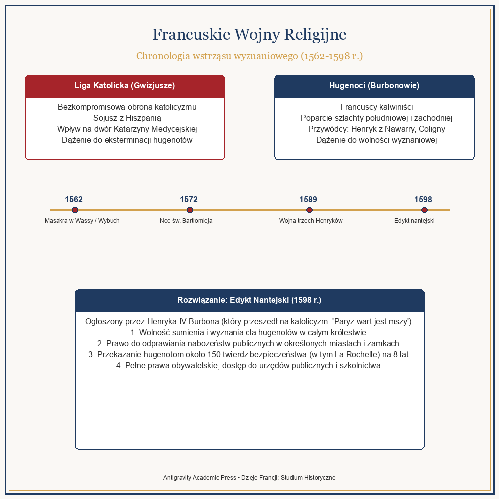
Noc św. Bartłomieja jest punktem zwrotnym w historii Francji XVI wieku, symbolem bezprecedensowego okrucieństwa i zdrady. Zapoczątkowana zamachem na admirała Coligny’ego 22 sierpnia 1572 roku, rzeź hugenotów przekształciła się w masowe mordy, które na zawsze zmieniły oblicze konfliktu religijnego.
Po nieudanym zamachu, w którym Coligny został ranny, w Paryżu zapanowało napięcie i strach przed odwetem hugenotów. Na dworze królewskim, pod wpływem Gwizjuszów i ultrakatolickich doradców, oraz w obliczu paniki (historycy debatują, czy była to panika spontaniczna, czy celowo podsycana), podjęto fatalną decyzję. Karol IX, prawdopodobnie pod ogromną presją matki i doradców, miał wykrzyknąć: „Zabijcie ich wszystkich, aby żaden nie mógł mi zarzucić!” (cytat często przypisywany, choć jego autentyczność jest przedmiotem dyskusji historiograficznej). Królewski rozkaz, wydany w nocy z 23 na 24 sierpnia, dotyczył początkowo eliminacji około pięćdziesięciu przywódców hugenockich zgromadzonych w Paryżu na ślubie Henryka z Nawarry.
Jednakże, egzekucja tego rozkazu szybko wymknęła się spod kontroli. Dzwony kościelne w Paryżu stały się sygnałem do rozpoczęcia rzezi. Paryski plebs, od dawna nienawidzący hugenotów, często podburzany przez duchowieństwo i motywowany także zawiścią ekonomiczną, włączył się w mordy z niezwykłą brutalnością. Ofiarami padli nie tylko przywódcy, ale wszyscy napotkani protestanci, bez względu na wiek czy płeć. Ciała były masakrowane, grabione, a następnie wrzucane do Sekwany. Szacuje się, że w ciągu kilku dni w Paryżu zginęło od 3 do 5 tysięcy hugenotów.
Co gorsza, rzeź nie ograniczyła się do stolicy. Królewskie rozkazy, choć później odwoływane lub interpretowane w różny sposób, dotarły do prowincji, gdzie w ciągu kolejnych tygodni i miesięcy doszło do podobnych masakr w Orleanie, Lyonie, Rouen, Bordeaux i wielu innych miastach. Łączna liczba ofiar Nocy św. Bartłomieja i późniejszych pogromów w całej Francji jest trudna do precyzyjnego oszacowania, ale współcześni historycy mówią o liczbach od 10 000 do nawet 30 000 zabitych.
Konsekwencje Nocy św. Bartłomieja były katastrofalne zarówno w wymiarze humanitarnym, jak i politycznym:
Dopiero konwersja Henryka z Nawarry na katolicyzm (“Paryż wart jest mszy”) i jego wstąpienie na tron jako Henryk IV, a następnie wydanie Edyktu Nantejskiego w 1598 roku, zdołało położyć kres wojnom religijnym. Edykt ten nie był aktem pełnej tolerancji religijnej w nowoczesnym sensie, lecz raczej pragmatycznym rozwiązaniem, które regulowało współistnienie katolików i protestantów, przyznając hugenotom ograniczone prawa polityczne, cywilne i wojskowe, w tym prawo do utrzymywania places de sûreté. Był to krok w kierunku odbudowy państwa i jego autorytetu po dekadach krwawego konfliktu, którego apogeum stanowiła Noc św. Bartłomieja, trwale wpisując się w pamięć zbiorową jako jeden z najmroczniejszych epizodów w historii Francji.
U schyłku XVI wieku Królestwo Francji znajdowało się w stanie głębokiej dezintegracji struktur państwowych, wywołanej trwającymi od ponad trzech dekad wojnami religijnymi. Konflikt ten, będący splotem rywalizacji wyznaniowej, kryzysu dynastycznego oraz dążeń feudałów do emancypacji spod władzy centralnej, osiągnął swoje apogeum w fazie zwanej wojną trzech Henryków (1585-1589). Na arenie dziejowej starli się wówczas: urzędujący monarcha Henryk III Walezy, przywódca ultrakatolickiej Ligi Świętej Henryk de Guise (Gizyusz) oraz lider obozu hugenockiego Henryk Burbon, król Nawarry.
Analityczne spojrzenie na ten konflikt wymaga dostrzeżenia, że nie był on jedynie starciem militarnym, lecz przede wszystkim kryzysem legitymizmu monarchicznego. Śmierć Franciszka d’Anjou w 1584 roku, młodszego brata bezpotomnego Henryka III, uczyniła heretyka Henryka z Nawarry prawowitym następcą tronu na mocy prawa salickiego (loi salique). Dla radykalnego obozu katolickiego, wspieranego subsydiami i wojskiem Filipa II Habsburga, perspektywa protestanta na tronie francuskim była nie do zaakceptowania. Liga Święta, dążąc do wykluczenia Burbona, sformułowała doktrynę suwerenności ludu katolickiego, która w istocie podważała tradycyjne fundamenty monarchii francuskiej.
Eskalacja przemocy osiągnęła punkt zwrotny w 1588 roku. Rewolta w Paryżu (Dzień Barykad) zmusiła Henryka III do ucieczki ze stolicy. Monarcha, uwięziony w politycznym klinczu i zdominowany przez wpływy Gizjusza, zdecydował się na krok radykalny - grudniowy zamach w zamku Blois, gdzie z jego rozkazu zamordowano Henryka de Guise oraz jego brata, kardynała Ludwika. Akt ten, choć pomyślany jako demonstracja suwerennej władzy, doprowadził do całkowitej delegitymizacji Waleza w oczach katolickiej większości. Paryska Sorbona zwolniła poddanych z przysięgi wierności królowi, a papież Sykstus V nałożył na niego ekskomunikę.
W obliczu całkowitej izolacji Henryk III sprzymierzył się ze swoim szwagrem, Henrykiem z Nawarry. Wspólne oblężenie zbuntowanego Paryża zostało przerwane 1 sierpnia 1589 roku przez sztylet dominikanina Jacques’a Clémenta. Umierający Henryk III wskazał na Nawarczyka jako swojego sukcesora, obligując go jednocześnie do przejścia na katolicyzm.
Wraz ze śmiercią ostatniego Waleza Francja stanęła przed bezprecedensowym dylematem ustrojowym. Prawowity król de iure, Henryk IV, był przywódcą mniejszości wyznaniowej, nieuznawanym przez stolicę i większość prowincji. Liga Święta ogłosiła królem uwięzionego kardynała Karola de Bourbon (jako Karola X), a hiszpańskie garnizony wkroczyły do Paryża. Wybitny francuski historyk Jean-Pierre Babelon podkreśla, że Henryk IV musiał dokonać legitymizacji swojej władzy na dwóch płaszczyznach jednocześnie: militarnej oraz symboliczno-rytualnej.
Zwycięstwa militarne pod Arques (1589) i Ivry (1590) dowiodły talentów dowódczych nowego władcy, lecz nie wystarczyły do przełamania oporu stolicy. Blokada Paryża przyniosła katastrofalny głód, lecz hiszpańska odsiecz pod dowództwem Aleksandra Farnese, księcia Parmy, uniemożliwiła ostateczne rozstrzygnięcie siłowe. Henryk IV, wykazując się wybitnym zmysłem pragmatyzmu politycznego, zrozumiał, że kluczem do pacyfikacji królestwa nie jest totalne zwycięstwo jednej ze stron, lecz kompromis zdolny zneutralizować radykałów po obu stronach barykady.
Decyzja o konwersji na katolicyzm, ogłoszona uroczyście 25 lipca 1593 roku w bazylice Saint-Denis, była aktem o fundamentalnym znaczeniu państwowym. Przypisywane mu przez tradycję kolokwialne sformułowanie „Paryż wart jest mszy” (Paris vaut bien une messe), choć prawdopodobnie apokryficzne, doskonale oddaje istotę tej decyzji. Była to triumfalna transgresja nad podziałami konfesyjnymi w imię raison d’État (racji stanu). Konwersja ta odebrała Lidze Świętej jej główny argument ideologiczny. Koronacja Henryka IV w Chartres (27 lutego 1594 roku) - Reims pozostawało w rękach ligowców - oraz uroczysty wjazd do Paryża w marcu tego samego roku przypieczętowały proces rekonstrukcji autorytetu królewskiego. Władca dokonał aktu przebaczenia dawnym wrogom, co w połączeniu z hojnymi pensjami dla przywódców Ligi (finansowanymi z pożyczek) pozwoliło na stopniową integrację królestwa.
Odzyskanie kontroli nad terytorium państwa nie oznaczało automatycznego rozwiązania konfliktu religijnego. Hugenoci, dawni współwyznawcy króla, czuli się zdradzeni jego konwersją i żądali twardych gwarancji bezpieczeństwa oraz wolności sumienia. Z kolei środowiska katolickie obawiały się jakichkolwiek ustępstw na rzecz „herezji”. W takich okolicznościach, 13 kwietnia 1598 roku, Henryk IV podpisał Edykt nantejski (Édit de Nantes).
W historiografii, zwłaszcza pod wpływem XIX-wiecznej tradycji liberalnej, edykt ten bywał często interpretowany jako narodziny nowoczesnej tolerancji religijnej. Współczesne badania, reprezentowane m.in. przez Bernarda Cottreta, weryfikują ten pogląd. Edykt nantejski nie był manifestem wolności sumienia w duchu oświeceniowym, lecz pragmatycznym, tymczasowym traktatem pokojowym, mającym na celu umożliwienie koegzystencji dwóch wyznań w ramach jednego organizmu państwowego pod nadrzędną władzą monarchy. Słowo „tolerancja” (tolérance) w XVI-wiecznej polszczyźnie i francuszczyźnie miało zabarwienie pejoratywne - oznaczało znoszenie zła w celu uniknięcia większego nieszczęścia.
Struktura prawna edyktu była niezwykle skomplikowana. Składał się on z:
Ta wielowarstwowa konstrukcja pozwalała na zróżnicowanie zobowiązań i dostosowanie ich do wrażliwości obu stron.
Analiza merytoryczna postanowień edyktu ujawnia jego kompromisowy charakter. Katolicyzm został przywrócony jako religia panująca w całym królestwie, a kler katolicki odzyskał swoje dobra i prawo do pobierania dziesięciny, również na obszarach zdominowanych przez protestantów. Hugenotom zagwarantowano pełną wolność sumienia na terenie całego państwa, jednak wolność kultu (liberté de culte) została poddana istotnym ograniczeniom przestrzennym. Kult protestancki dopuszczono w zamkach feudałów posiadających prawo wyższego sądownictwa, a także w określonych miastach (zazwyczaj dwóch na dystrykt), z bezwzględnym wyłączeniem Paryża oraz miejscowości, w których znajdowały się rezydencje królewskie i biskupie.
Kluczowym elementem edyktu, decydującym o jego nowatorstwie, było zrównanie praw cywilnych protestantów i katolików. Hugenoci uzyskali:
W celu zagwarantowania bezstronności wymiaru sprawiedliwości powołano tzw. izby edyktowe (Chambres de l’Édit) w parlamencie paryskim oraz izby mieszane (chambres mi-parties) w Tuluzie, Bordeaux i Grenoble, w których zasiadali sędziowie obu wyznań.
Najbardziej kontrowersyjną, a zarazem kluczową dla przetrwania kompromisu częścią edyktu były gwarancje wojskowe i finansowe zawarte w patentach królewskich. Monarcha przyznał hugenotom na okres ośmiu lat około 150 tzw. miejsc bezpieczeństwa (places de sûreté), w tym potężne twierdze takie jak La Rochelle, Montpellier, Saumur i Montauban. Garnizony tych twierdz miały być opłacane z kasy królewskiej, a dowództwo nad nimi powierzono protestanckim gubernatorom.
Z punktu widzenia teorii państwa edykt nantejski stanowił ewolucyjny przełom. Po raz pierwszy w historii nowożytnej Europy monarcha zerwał z zasadą cuius regio, eius religio oraz tradycyjną maksymą francuskiej monarchii: une foi, une loi, un roi (jedna wiara, jedno prawo, jeden król). Państwo, uosabiane przez osobę suwerena, ogłosiło się arbitrem stojącym ponad podziałami konfesyjnymi. To laicyzacja racji stanu umożliwiła ocalenie jedności terytorialnej i politycznej Francji. Ceną za ten kompromis było jednak powstanie swoistego „państwa w państwie” (un État dans l’État), dysponującego własną siłą militarną i strukturą polityczną, co w kolejnych dekadach stało się zarzewiem nowych konfliktów za panowania Ludwika XIII i kardynała Richelieu.
Stabilizacja polityczna i religijna stanowiła warunek sine qua non dla podjęcia dzieła odbudowy zrujnowanego kraju. Skutki wojen religijnych były katastrofalne: wyludnione wsie, zniszczone mosty i drogi, przerwane szlaki handlowe, zdewastowane manufaktury oraz gigantyczny dług publiczny szacowany na blisko 300 milionów liwrów, przy rocznych dochodach skarbu nieprzekraczających jednej dziesiątej tej sumy.
Głównym architektem francuskiej rekonstrukcji gospodarczej stał się Maximilien de Béthune, baron de Rosny, mianowany później księciem Sully. Ten wierny towarzysz broni Henryka IV, zdeklarowany hugenot o niezwykłych talentach administracyjnych i autorytarnym charakterze, objął w 1598 roku funkcję superintendenta finansów (surintendant des finances), koncentrując w swoich rękach niemal całą władzę nad gospodarką królestwa.
Sully oparł swoją strategię ekonomiczną na rygorystycznym programie sanacji finansów publicznych oraz na specyficznej, fizjokratycznej awant-la-lettre wizji rozwoju gospodarczego. Jego najsłynniejsze dictum: „Uprawa ziemi i wypas bydła to dwie piersi, z których karmi się Francja, to jej prawdziwe kopalnie i skarby Peru” (Laborage et pâturage sont les deux mamelles dont la France est alimentée, les vraies mines et trésors du Pérou) definiowało priorytety rządu.
W obszarze rolnictwa Sully podjął szereg działań protekcjonistycznych i modernizacyjnych:
Równolegle podjęto tytaniczny wysiłek w celu odbudowy i rozbudowy infrastruktury transportowej, co miało kluczowe znaczenie dla integracji rynku krajowego. Sully, mianowany wielkim budowniczym dróg (grand voyer de France), zainicjował budowę sieci bitych traktów obsadzanych wiązami (tzw. ormes de Sully), które miały ułatwić transport wojskowy i handlowy. Rozpoczęto także realizację ambitnych projektów hydrotechnicznych, z których najważniejszym była budowa kanału Briare (Canal de Briare), łączącego Loarę z Sekwaną, stanowiącego kamień milowy w historii europejskiej inżynierii wodnej.
W sferze finansów państwowych Sully przeprowadził bezwzględną weryfikację długu publicznego. Dokonał konwersji stóp procentowych rent państwowych, wykupił zastawione domeny królewskie i ukrócił nadużycia poborców podatkowych, wprowadzając rygorystyczną kontrolę księgową. Zreorganizował system dzierżawy podatków pośrednich (ferme générale), co znacznie zwiększyło wpływy do skarbu państwa.
Niezwykle doniosłym i brzemiennym w skutki społeczne posunięciem fiskalnym było wprowadzenie w 1604 roku tzw. Paulette (od nazwiska pomysłodawcy, Charles’a Pauleta). Był to roczny podatek w wysokości 1/60 wartości urzędu, którego opłacenie gwarantowało urzędnikom prawo do dziedziczenia lub sprzedaży swoich stanowisk (sprzedawalność urzędów - vénalité des offices). Z punktu widzenia doraźnego interesu skarbu państwa Paulette okazała się genialnym posunięciem, zapewniając stały, wysoki i przewidywalny dopływ gotówki. Jednak z perspektywy strukturalnej reforma ta utrwaliła i usankcjonowała powstanie nowej, potężnej grupy społecznej - szlachty urzędniczej (noblesse de robe). Grupa ta, niezależna od tradycyjnej szlachty rodowej (noblesse d’épée), stała się w przyszłości zarówno filarem administracji absolutystycznej, jak i zarzewiem oporu wobec władzy królewskiej (fronda).
Choć Sully był sceptyczny wobec dynamicznego rozwoju przemysłu i handlu luksusowego, obawiając się odpływu kapitału z rolnictwa, Henryk IV wykazywał w tej materii większe zrozumienie dla rodzących się koncepcji merkantylistycznych. Za namową swojego doradcy Barthélemy’ego de Laffemas, król wspierał rozwój manufaktur państwowych i prywatnych, zwłaszcza produkcji jedwabiu, gobelinów, szkła i luksusowych tkanin (słynne warsztaty w Luwrze i manufaktura Savonnerie). Wprowadzono cła ochronne na gotowe produkty luksusowe importowane z Włoch i Flandrii, dążąc do osiągnięcia dodatniego bilansu handlowego.
| Obszar reformy | Główne przedsięwzięcia | Skutki ekonomiczne i społeczne |
|---|---|---|
| Rolnictwo | Obniżenie taille, osuszanie bagien, ochrona narzędzi chłopskich, promocja dzieła Oliviera de Serres. | Wzrost produkcji żywności, stabilizacja sytuacji chłopstwa, kolonizacja nowych ziem. |
| Infrastruktura | Budowa dróg, kanału Briare, powołanie urzędu grand voyer de France. | Ułatwienie handlu wewnętrznego, obniżenie kosztów transportu, integracja prowincji. |
| Fiskalizm | Wprowadzenie podatku Paulette (1604), reorganizacja dzierżawy podatków (ferme générale). | Stałe dochody skarbu, konsolidacja i dziedziczność urzędów, narodziny noblesse de robe. |
| Przemysł i Handel | Protekcjonizm, zakładanie manufaktur luksusowych (jedwab, gobeliny), cła ochronne. | Ograniczenie odpływu kruszców, początki francuskiego merkantylizmu (kolbertyzmu avant la lettre). |
Dzięki synergii autorytetu władcy i menedżerskich zdolności jego ministra, Francja w ciągu zaledwie dekady przekształciła się z państwa stojącego na skraju bankructwa i anarchii w najpotężniejsze gospodarczo i militarnie mocarstwo Europy Zachodniej. Skarb państwa w Bastylii, gdzie Sully gromadził rezerwy kruszcowe, dysponował w 1610 roku rezerwą kilkunastu milionów liwrów, co pozwoliło Henrykowi IV na planowanie aktywnej, antyhabsburskiej polityki zagranicznej.
Tragiczna śmierć Henryka IV, zamordowanego 14 maja 1610 roku przez katolickiego fanatyka François Ravaillaca, przerwała ten proces dynamicznej rekonstrukcji, lecz nie zdołała zniszczyć fundamentów, które wówczas wzniesiono. Epoka Henryka IV i księcia Sully stworzyła podwaliny pod XVII-wieczny francuski absolutyzm, udowadniając, że silna władza centralna, oparta na kompromisie religijnym i racjonalnym zarządzaniu gospodarczym, stanowi najskuteczniejsze remedium na kryzysy strukturalne państwa.
Kkonsolidacja francuskiego absolutyzmu w pierwszej połowie XVII wieku wiąże się nierozerwalnie z postacią Armanda Jeana du Plessis de Richelieu, który od 1624 roku jako pierwszy minister Ludwika XIII podjął systematyczną rekonstrukcję autorytetu korony. Rządy te przypadły na okres głębokiego kryzysu strukturalnego państwa, rozrywanego partykularyzmami arystokratycznymi, ambicjami hugenotów oraz permanentnym zagrożeniem ze strony habsburskiej hegemonii. Podstawą intelektualną i operacyjną działań kardynała stała się doktryna racji stanu (raison d’État), która dokonała desakralizacji i jednoczesnej radykalnej sekularyzacji teorii politycznej, podporządkowując moralność chrześcijańską oraz tradycyjne przywileje stanowe nadrzędnemu interesowi suwerennego państwa.
W ujęciu Richelieu, co znalazło wyraz w jego Testamencie politycznym (Testament politique), państwo przestało być jedynie sumą personalnych lojalności lennych czy konfederacją ciał autonomicznych, a stało się autonomicznym bytem prawno-politycznym. Kardynał pisał:
“Gdzie wchodzi w grę interes państwa, tam trzeba zamknąć oczy na wszelkie inne względy, a otworzyć je jedynie na to, co może służyć jego wielkości”.
Doktryna ta, choć czerpała z pism Niccolò Machiavellego oraz Jeana Bodina, została przez Richelieu przełożona na pragmatykę codziennego rządzenia. Wymagała ona eliminacji wszelkich ośrodków władzy konkurencyjnych wobec monarchy.
W historiografii (od klasycznych prac Rolanda Mousniera po nowsze ujęcia Richarda Bonneya) debata wokół racji stanu Richelieu koncentruje się na napięciu między tradycjonalizmem a innowacją. Richelieu nie dążył do całkowitej destrukcji porządku stanowego, lecz do jego bezwzględnego podporządkowania. Główną przeszkodą na tej drodze były trzy siły:
W walce z opozycją arystokratyczną Richelieu nie wahał się używać środków nadzwyczajnych. Likwidacja zamków obronnych w głębi kraju, zakaz pojedynków (traktowanych jako zamach na monopol przemocy państwowej) oraz pokazowe egzekucje spiskujących magnatów (jak Henri de Talleyrand-Périgord, hrabia de Chalais w 1626 r., czy François de Montmorency-Bouteville w 1627 r.) były czytelnym sygnałem, że krew szlachecka nie chroni przed toporem katowskim, jeśli podniesiono rękę na autorytet suwerena.
Kluczowym etapem unifikacji terytorialnej i politycznej królestwa było złamanie militarnej potęgi protestantów francuskich. Edykt nantejski z 1598 roku, choć pacyfikował wojny religijne, wyposażył hugenotów w tzw. miejsca bezpieczne (places de sûreté), w tym potężne twierdze z własnymi garnizonami, co czyniło z nich siłę zdolną do prowadzenia niezależnej polityki zagranicznej i wchodzenia w sojusze z Anglią czy Zjednoczonymi Prowincjami. Dla Richelieu istnienie tej militarnej enklawy było jawnym zaprzeczeniem suwerenności państwa.
Punktem kulminacyjnym konfliktu stało się oblężenie La Rochelle (1627-1628) - głównego bastionu hugenockiego i bogatego portu atlantyckiego. Bezpośrednim impulsem do podjęcia działań wojennych była próba interwencji angielskiej pod dowództwem faworyta Karola I, księcia Buckingham, który wylądował na pobliskiej wyspie Ré. Richelieu osobiście objął dowództwo nad operacją oblężniczą, wykazując się nie tylko talentem logistycznym, ale i bezwzględną determinacją.
Najważniejszym elementem strategii kardynała było odcięcie La Rochelle od pomocy angielskiej drogą morską. W tym celu inżynier Clément Métezeau zaprojektował i wzniósł gigantyczną, liczącą ponad 1500 metrów tamę kamienną (szaniec), wspartą na zatopionych okrętach i palisadach. Ta genialna konstrukcja inżynieryjna zablokowała port, skazując mieszkańców na powolną śmierć głodową. Mimo fanatycznego oporu obrońców, kierowanych przez mera Jeana Guitona, miasto skapitulowało 28 października 1628 roku, po czternastu miesiącach oblężenia. Z blisko 28 tysięcy mieszkańców przy życiu pozostało zaledwie niewiele ponad 5 tysięcy.
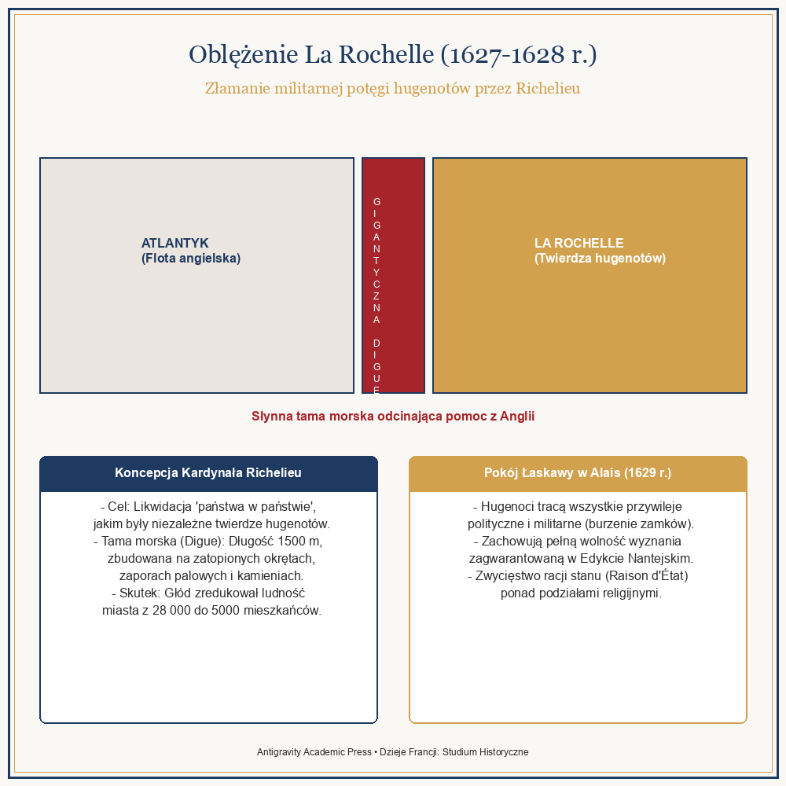
Zwycięstwo to doprowadziło do ostatecznego demontażu politycznej struktury hugenotów, co przypieczętował edykt łaski z Alès (27 czerwca 1629 roku). Analiza tego dokumentu ukazuje głęboką mądrość polityczną Richelieu:
Richelieu, kierując się pragmatyzmem raison d’État, zrozumiał, że siłowa rekatolicyzacja w tym momencie doprowadziłaby do permanentnej wojny domowej i uniemożliwiła aktywną politykę zagraniczną. Hugenoci zostali spacyfikowani jako siła polityczna, stając się lojalnymi poddanymi korony, co pozwoliło kardynałowi skierować siły państwa na arenę międzynarodową.
Wymogi permanentnej wojny oraz dążenie do centralizacji wymusiły głęboką reformę administracji prowincjonalnej. Tradycyjny system zarządzania Francją opierał się na urzędach kupnych (offices). System ten, choć przynosił koronie doraźne zyski dzięki opłacie zwanej paulette (wprowadzonej w 1604 r. i gwarantującej dziedziczność urzędów), tworzył klasę urzędników (noblesse de robe - szlachtę suknie), którzy czuli się niezależni od króla, traktując swoje stanowiska jako prywatną własność. Ponadto prowincjami rządzili potężni gubernatorzy wywodzący się z rodów arystokratycznych (noblesse d’épée - szlachta miecza), dysponujący lokalnymi klientelami i często sabotujący decyzje dworu.
Aby przełamać ten opór, Richelieu dokonał systematyzacji i upowszechnienia instytucji intendentów sprawiedliwości, policji i finansów (intendants de justice, police et finances). Choć pierwowzory tego urzędu istniały już za panowania Henryka III i Henryka IV, to dopiero za kardynała Richelieu stali się oni stałym i kluczowym instrumentem władzy centralnej na prowincji.
| Cecha różnicująca | Oficjaliści (officiers) | Intendenci (commissaires) |
|---|---|---|
| Sposób objęcia stanowiska | Kupno urzędu (venalité) | Nominacja królewska |
| Stabilność zatrudnienia | Dożywotność i dziedziczność | Odwoływalność w każdym momencie |
| Źródło lojalności | Interes własny i korporacyjny | Wyłącznie wola monarchy |
| Zakres kompetencji | Ściśle określony, lokalny | Szeroki, nadzwyczajny (fiskalny, sądowniczy) |
Intendenci byli wysyłani do poszczególnych prowincji (okręgów zwanych généralités) jako reprezentanci władzy wykonawczej. Ich misja miała charakter nadzwyczajny i bezpośredni. Posiadali oni uprawnienia do:
Wprowadzenie intendentów wywołało głębokie napięcia społeczne i polityczne. Tradycyjne elity postrzegały ich jako uzurpatorów łamiących odwieczne prawa prowincji i przywileje stanowe. Jak wykazał w swoich badaniach William Beik, sukces intendentów nie opierał się wyłącznie na czystym przymusie, lecz na umiejętnym wchodzeniu w lokalne sieci klientelistyczne i pozyskiwaniu tych frakcji szlacheckich, które szukały protekcji korony. Niemniej jednak, stworzenie tej sieci urzędniczej położyło podwaliny pod nowoczesną, biurokratyczną strukturę państwa absolutnego.
Największym wyzwaniem dla systemu Richelieu było włączenie się Francji w konflikt ogólnoeuropejski, jakim była wojna trzydziestoletnia (1618-1648). Głównym celem geopolitycznym kardynała było przełamanie okrążenia Francji przez posiadłości hiszpańskich i austriackich Habsburgów (tzw. krąg habsburski). Realizacja tego celu wymagała jednak skrajnego pragmatyzmu, który zszokował katolicką opinię publiczną we Francji, reprezentowaną przez tzw. stronnictwo żarliwych (parti dévot) pod przywództwem Michela de Marillac.
Podczas gdy dévots domagali się sojuszu z katolicką Hiszpanią w celu wytępienia herezji w Europie, Richelieu sformułował program oparty na sojuszach z państwami protestanckimi. W pierwszym okresie (tzw. wojna ukryta - guerre couverte, 1624-1635) Francja ograniczała się do finansowania wrogów Habsburgów, w tym subsydiowania armii króla Szwecji Gustawa II Adolfa. Dopiero po klęsce sił protestanckich pod Nördlingen, w 1635 roku Francja zdecydowała się na otwarte wypowiedzenie wojny Hiszpanii (wojna jawna - guerre ouverte).
Wojna na kilku frontach (we Flandrii, nad Renem, w Pirenejach i w północnych Włoszech) wymagała bezprecedensowej mobilizacji finansowej. Budżet wojskowy Francji wzrósł drastycznie:
Wydatki na armię (1624) ≈ 16 mln liwrów → Wydatki na armię (1640) ≈ 38 mln liwrów
Całkowity budżet państwa wzrósł w tym okresie ponad trzykrotnie. Ciężar ten został przerzucony niemal w całości na warstwy najuboższe, przede wszystkim na chłopstwo, poprzez drastyczne podniesienie podatku taille oraz podatków pośrednich (np. podatku solnego - gabelle).
Fiskalizm wojenny doprowadził do fali gwałtownych rewolt ludowych, które wstrząsnęły prowincjami francuskimi w latach 30. i 40. XVII wieku. Do najważniejszych należały:
Reakcja Richelieu na te wystąpienia była bezwzględna. Powstania tłumiono przy użyciu regularnej armii wycofywanej z frontu, a przywódców poddawano torturom i łamaniu kołem. Kryzys ten ujawnił strukturalną słabość monarchii: państwo stawało się potęgą militarną na arenie międzynarodowej kosztem skrajnej pauperyzacji własnego społeczeństwa i destabilizacji wewnętrznej, co miało przynieść katastrofalne skutki po śmierci kardynała.
Śmierć kardynała Richelieu (grudzień 1642) oraz samego króla Ludwika XIII (maj 1643) postawiła Francję w obliczu kryzysu regencyjnego. Władzę jako regentka w imieniu niespełna pięcioletniego Ludwika XIV objęła królowa-matka Anna Austriaczka. Wbrew oczekiwaniom arystokracji, która liczyła na odzyskanie dawnych wpływów i zmianę pro-protestanckiego kursu polityki zagranicznej, królowa powierzyła tekę pierwszego ministra kardynałowi Jules’owi Mazarinowi (Giulio Mazarini) - włoskiemu dyplomacie, uczniowi i kontynuatorowi myśli politycznej Richelieu.
Mazarin odziedziczył państwo u progu bankructwa, uwikłane w końcową, niezwykle kosztowną fazę wojny trzydziestoletniej. Aby sfinansować wysiłek zbrojny, nowy minister oraz jego superintendent finansów, Michel Particelli d’Emery, sięgnęli po drastyczne i niepopularne środki fiskalne:
To ostatnie posunięcie uderzyło bezpośrednio w interesy Parlamentu Paryskiego - najwyższego trybunału sądowego królestwa. Urzędnicy parlamentarni, zorganizowani w potężną korporację, poczuli się zagrożeni w swoich prawach własnościowych. Ponadto, parlamentarzyści, inspirowani toczącą się równolegle rewolucją w Anglii, zaczęli dążyć do przekształcenia swojej instytucji z organu rejestrującego wolę królewską w ciało o charakterze konstytucyjnym, kontrolujące nakładanie podatków. Tak narodziła się Fronda (1648-1653) - jedno z najbardziej skomplikowanych i dramatycznych powstań w historii Francji, którego nazwa (oznaczająca “procę”) nawiązywała do zabawek paryskich dzieci rzucających kamieniami w okna pałaców królewskich.
W rozwoju rewolty wyróżnia się dwie zasadnicze fazy, różniące się celami politycznymi, składem społecznym oraz metodami działania.
Początek rebelii wyznacza styczeń 1648 roku, kiedy Parlament Paryski odmówił rejestracji nowych edyktów fiskalnych. W maju tego samego roku deputowani czterech najwyższych sądów Paryża (tzw. Chambre Saint-Louis) zredagowali wspólny manifest reformatorski, składający się z 27 artykułów. Postulowano w nim m.in.:
Była to próba przekształcenia monarchii francuskiej w monarchię umiarkowaną, o silnych cechach konstytucyjnych. Mazarin podjął próbę stłumienia oporu siłą, aresztując w sierpniu 1648 roku niezwykle popularnego radcę Pierre’a Broussela. Wywołało to natychmiastowy wybuch powstania w Paryżu - wzniesiono ponad 1200 barykad, a dwór królewski został zmuszony do upokarzającej ucieczki z pałacu Palais-Royal do zrujnowanego zamku w Saint-Germain-en-Laye w styczniu 1649 roku.
Paryż został oblężony przez wojska królewskie dowodzone przez Ludwika Burbona, księcia de Condé (Wielkiego Kondeusza) - bohatera wojny trzydziestoletniej (zwycięzcę spod Rocroi w 1643 r.). Jednak parlamentarzyści, przerażeni radykalizacją nastrojów ludowych w stolicy oraz widmem rewolucji na wzór angielski (gdzie właśnie ścięto Karola I), zdecydowali się na kompromis. W marcu 1649 roku podpisano pokój w Rueil, na mocy którego król potwierdził część ustępstw, a parlamentarzyści zrezygnowali z ambicji politycznych, otwierając wrota stolicy dla dworu.
[Kryzys Fiskalny Wojny Trzydziestoletniej]
│
▼
[Artykuły Izby Saint-Louis (1648)]
│
▼
┌─────────────────┴─────────────────┐
▼ ▼
[Fronda Parlamentarna] [Fronda Książąt]
(1648-1649) (1650-1653)
- Cel: Ograniczenie podatków - Cel: Obalenie Mazarina,
i kontrola nad koroną władza dla arystokracji
- Liderzy: Sędziowie Parlamentu - Liderzy: Kondeusz, Gaston Orleański
- Metoda: Blokada prawna, barykady - Metoda: Wojna domowa, sojusz z Hiszpanią
└─────────────────┬─────────────────┘
▼
[Zwycięstwo Korony (1653)]Pokój w Rueil okazał się jedynie rozejmem. Drugi etap rebelii został wywołany przez ambicje wysokiej arystokracji, na której czele stanął teraz sam książę de Condé, domagający się udziału w rządach i usunięcia Mazarina. Aresztowanie Kondeusza w styczniu 1650 roku przez Mazarina podpaliło prowincje. Do buntu przyłączyli się m.in. brat królewski Gaston, książę Orleanu, kardynał de Retz (Jean-François Paul de Gondi) oraz siostra Kondeusza, księżna de Longueville.
Ta faza wojny domowej charakteryzowała się skrajnym chaosem, płynnością sojuszy i brakiem jakiegokolwiek konstruktywnego programu politycznego. Magnaci, kierując się wyłącznie prywatą, wchodzili w sojusze z Hiszpanią - oficjalnym wrogiem Francji. Mazarin dwukrotnie musiał udawać się na wygnanie poza granice królestwa (do Brühl i Kolonii), skąd jednak cały czas kierował działaniami wiernych koronie wojsk pod dowództwem genialnego stratega, wicehrabiego de Turenne (Henri de la Tour d’Auvergne).
Kluczowym momentem była bitwa na przedmieściu Saint-Antoine w Paryżu (2 lipca 1652 r.), gdzie Turenne osaczył wojska Kondeusza. Przed całkowitą klęską uratowała księcia jego kuzynka, “Wielka Mademoiselle” (Anna Maria Ludwika d’Orléans), która rozkazała otworzyć bramy Paryża i wystrzelić z dział Bastylii do wojsk królewskich.
Rządy Kondeusza w Paryżu szybko jednak doprowadziły do terroru i anarchii, co zraziło do niego mieszczaństwo. Zmęczenie wojną domową, głodem i paraliżem gospodarczym przeważyło szalę. W październiku 1652 roku młody Ludwik XIV triumfalnie wkroczył do Paryża, witany przez tych samych mieszczan, którzy kilka lat wcześniej budowali barykady. Kondeusz zbiegł do Hiszpanii, a Mazarin powrócił w lutym 1653 roku, by ostatecznie spacyfikować ostatnie ogniska oporu (m.in. w Bordeaux).
Fronda była ostatnim zrywem zbrojnym przeciwko władzy absolutnej we Francji przed 1789 rokiem. Jej upadek oznaczał ostateczną kompromitację polityczną arystokracji oraz kapitulację parlamentów. Dla młodego Ludwika XIV lata te były traumatycznym, ale i niezwykle pouczającym doświadczeniem formacyjnym, które ukształtowało jego całą późniejszą filozofię rządzenia.
Doświadczenia te wywarły głęboki wpływ na psychikę i decyzje polityczne Króla Słońce:
W ostatecznym rozrachunku, rządy Richelieu i Mazarina, mimo ogromnych kosztów społecznych i gospodarczych, stworzyły ramy instytucjonalne, finansowe i militarne, bez których triumf epoki Grand Siècle pod berłem Ludwika XIV nie byłby możliwy. Absolutyzm francuski wyłonił się z tygla wojen i wewnętrznych rewolucji jako system spójny, scentralizowany i zmonopolizowany przez postać jedynego suwerena.
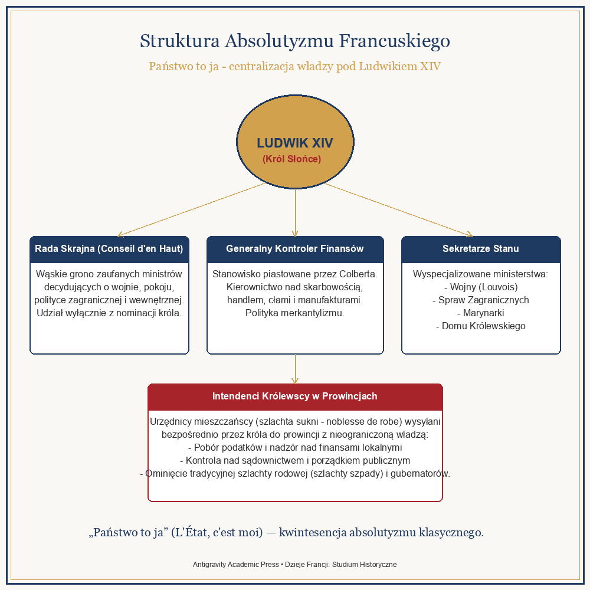
Śmierć kardynała Juliusza Mazarina w marcu 1661 roku stała się cezurą o fundamentalnym znaczeniu dla ewolucji nowożytnej państwowości francuskiej. Dwudziestodwuletni wówczas Ludwik XIV podjął suwerenną decyzję o nielimitowaniu swojej władzy poprzez urząd pierwszego ministra, co stanowiło bezpośrednie zerwanie z tradycją regencji i rządów kardynalskich Richelieu oraz Mazarina. Deklaracja ta, choć ujęta w przypisywaną mu, prawdopodobnie apokryficzną, lecz doskonale oddającą istotę rzeczy formułę „Państwo to ja” (L’État, c’est moi), zapoczątkowała epokę klasycznego absolutyzmu. System ten, oparty na ścisłej centralizacji, sakralizacji władzy monarszej oraz bezprecedensowej dyscyplinizacji elit społecznych, stał się paradygmatem ustrojowym dla całej osiemnastowiecznej Europy.
Przejście do rządów osobistych nie było jedynie kaprysem młodego monarchy, lecz głęboko przemyślanym projektem politycznym, będącym bezpośrednią reakcją na traumę Frondy (1648-1653). Ten ostatni wielki zryw feudalny i parlamentarny przeciwko regencji Anny Austriaczki i Mazarina ukazał słabość korony w starciu z partykularnymi interesami arystokracji (noblesse d’épée) oraz sędziowskiej oligarchii parlamentów (noblesse de robe). Dla Ludwika XIV stabilność monarchii stała się tożsama z całkowitym ubezwłasnowolnieniem tych tradycyjnych ośrodków oporu i skupieniem pełni władzy decyzyjnej w ręku suwerena, wspieranego przez zbiurokratyzowany aparat państwowy o charakterze merytokratycznym.
Teoretyczne ugruntowanie francuskiego absolutyzmu klasycznego znalazło swój najpełniejszy wyraz w pismach biskupa Meaux, Jacques’a-Bénigne’a Bossueta. Jego monumentalne dzieło Politique tirée des propres paroles de l’Écriture sainte (Polityka wywiedziona z samych słów Pisma Świętego), pisane z myślą o edukacji delfina, stanowi szczytowe osiągnięcie nowożytnej teologii politycznej. Bossuet dokonał genialnej syntezy tradycji biblijnej, patrystycznej oraz myśli Jeana Bodina, tworząc spójną doktrynu legitymizacji władzy monarszej prawem boskim (droit divin).
Według Bossueta władza królewska nie pochodzi z nadania społecznego - co stanowiło bezpośrednią polemikę z rodzącymi się teoriami umowy społecznej (Thomas Hobbes, a później John Locke) - lecz jest bezpośrednim ustanowieniem Bożym. Król jest ziemskim namiestnikiem Boga, „żywym obrazem” Jego majestatu na ziemi. Z tej przesłanki biskup Meaux wyprowadzał cztery fundamentalne cechy władzy monarszej:
W historiografii, zwłaszcza w klasycznych pracach Georges’a Lacoura-Gayeta czy we współczesnych analizach rządu Ludwika XIV pióra François Bluche’a, podkreśla się kluczowe rozróżnienie, jakie Bossuet wprowadził między władzą absolutną (pouvoir absolu) a władzą samowolną, czyli despotyczną (pouvoir arbitraire). Monarcha absolutny rządzi zgodnie z prawem, którego sam jest źródłem, lecz którego stałość gwarantuje porządek społeczny. Despota natomiast rządzi według własnego kaprysu, niszcząc własność prywatną i podważając fundamenty ładu moralnego. Legitymizacja boska nakładała zatem na Ludwika XIV gigantyczną odpowiedzialność metafizyczną: król musiał być sprawiedliwy, gdyż za każde uchybienie groziło mu potępienie wieczne.
Ten teologiczny konstrukt współgrał z pragmatyką polityczną Jeana Bodina, który w swoim traktacie Sześć ksiąg o Rzeczypospolitej (1576) definiował suwerenność jako władzę absolutną, trwałą i niepodzielną. Ludwik XIV zmaterializował tę ideę, eliminując wszelkie pośrednie ciała polityczne z procesu decyzyjnego. Stany Generalne, niewoływane od 1614 roku, odeszły w zapomnienie, a rola parlamentów, na czele z Parlamentem Paryskim, została drastycznie ograniczona poprzez odebranie im w 1673 roku prawa do wnoszenia sprzeciwu (remontrances) przed rejestracją edyktów królewskich.
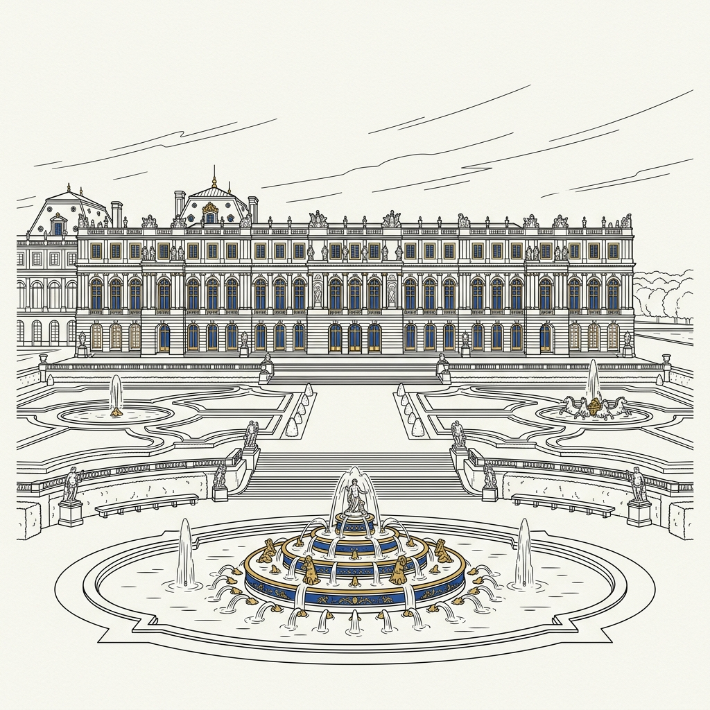
Przeniesienie stałej siedziby dworu i rządu do Wersalu w 1682 roku było posunięciem o charakterze głęboko geopolitycznym i socjologicznym. Wersal, dawny skromny zameczek myśliwski Ludwika XIII, został przekształcony przez Louisa Le Vawa, Jules’a Hardouina-Mansarta oraz André Le Nôtre’a w monumentalne centrum uniwersum politycznego Francji. Architektura pałacu, z centralnie umieszczoną sypialnią królewską na osi wschód-zachód, odzwierciedlała solarną kosmologię, w której król - jako Król Słońce (Le Roi-Soleil) - stanowił centrum grawitacyjne państwa.
Wersal nie był jednak jedynie rezydencją monarszą; był przede wszystkim precyzyjnie zaprojektowaną instytucją kontroli społecznej, służącą całkowitej ubezwłasnowolnieniu i udomowieniu arystokracji rodowej. Jak wykazał socjolog Norbert Elias (Foucault, 1975) w swoim klasycznym studium Société de cour (Socjologia dworu), system wersalski dokonał transformacji dumnych, skłonnych do rebelii feudałów w potulnych dworzan, których egzystencja zależała wyłącznie od łaski i bliskości monarchy.
Mechanizm ten opierał się na rygorystycznej kodyfikacji etykiety dworskiej, która przekształciła najprostsze czynności fizjologiczne i codzienne monarchy w misterium państwowe. Codzienny cykl życia króla został podzielony na ściśle zhierarchizowane rytuały:
Etykieta wersalska stworzyła specyficzną „ekonomię prestiżu”. Wartość dworzanina nie zależała już od jego niezależnej potęgi terytorialnej, liczby posiadanych wasali czy prywatnych armii, lecz od stopnia bliskości fizycznej wobec osoby króla. Prawo do siedzenia na taborecie (tabouret) w obecności królowej, prawo do noszenia określonego stroju (słynny justaucorps à brevet) czy przywilej bycia dostrzeżonym przez monarchę i obdarzonym skinieniem głowy stały się głównymi celami egzystencjalnymi elity królestwa.
Ludwik XIV z premedytacją podsycał rywalizację o te czcze honory, stosując zasadę divide et impera. Odciągając arystokrację od ich rodowych posiadłości prowincjonalnych, gdzie dotychczas stanowili realne zagrożenie dla władzy centralnej, król zmusił ich do zamieszkania w Wersalu. Koszty życia na dworze - zakup luksusowych strojów, hazard, utrzymanie licznej służby - były astronomiczne. Doprowadziło to do masowego zadłużenia szlachty, która stała się całkowicie zależna od królewskich pensji (pensions), synekur, beneficjów kościelnych i urzędów. W ten sposób dawna noblesse d’épée została pozbawiona swojej bazy ekonomicznej i politycznej, stając się jedynie dekoracyjnym tłem dla monarszego majestatu.
Administrację państwową król powierzył ludziom nowego chowu - przedstawicielom uszlachconego mieszczaństwa (noblesse de robe), takim jak Jean-Baptiste Colbert (kontroler generalny finansów) czy Michel Le Tellier i jego syn markiz de Louvois (ministrowie wojny). Ci wybitni urzędnicy zawdzięczali wszystko monarsze, co gwarantowało ich bezwzględną lojalność i eliminowało ryzyko powstania alternatywnych ośrodków władzy w łonie rządu.
Integralną częścią systemu wersalskiego i budowy absolutyzmu klasycznego był wszechstronny, instytucjonalny mecenat kulturalny. Władza absolutna potrzebowała estetycznego i intelektualnego uwiarygodnienia. Kultura i sztuka przestały być domeną prywatnych mecenasów, a stały się kluczowym sektorem polityki państwa, nadzorowanym osobiście przez Ludwika XIV oraz jego głównego ministra, Jean-Baptiste’a Colberta. Celem tej polityki była bezprecedensowa gloryfikacja monarchy oraz budowa kulturowej hegemonii Francji w Europie.
Fundamentem tego systemu stała się sieć królewskich akademii, które zmonopolizowały i skodyfikowały życie intelektualne i artystyczne królestwa:
| Nazwa instytucji | Rok powołania/reorganizacji | Główny cel i zadania państwowe |
|---|---|---|
| Académie Française | 1635 (reorganizacja pod patronatem królewskim 1672) | Kodyfikacja języka francuskiego, stworzenie słownika, dbałość o czystość i elegancję języka jako narzędzia dyplomacji. |
| Académie Royale de Peinture et de Sculpture | 1648 (reorganizacja pod kierownictwem Charles’a Le Bruna 1663) | Narzucenie rygorystycznego kanonu klasycystycznego w sztukach plastycznych, gloryfikacja czynów króla na obrazach i rzeźbach. |
| Académie des Inscriptions et Belles-Lettres | 1663 | Układanie inskrypcji na pomnikach, projektowanie medali okolicznościowych upamiętniających sukcesy militarne i polityczne monarchy. |
| Académie Royale des Sciences | 1666 | Rozwój nauk ścisłych i przyrodniczych, badania kartograficzne, inżynieryjne i astronomiczne na potrzeby państwa i armii. |
| Académie Royale de Musique | 1669 | Rozwój narodowej opery i baletu, organizacja widowisk dworskich sławiących potęgę suwerena (Jean-Baptiste Lully). |
Dzięki temu systemowi sztuka francuska okresu Grand Siècle zyskała jednolity, monumentalny charakter, określany mianem klasycyzmu francuskiego. Charakteryzował się on symetrią, harmonią, odwołaniami do antyku oraz rygorystycznym przestrzeganiem reguł estetycznych. Każde dzieło sztuki powstające pod egidą akademii miało bezpośrednio lub alegorycznie wskazywać na geniusz Króla Słońce.
W dziedzinie literatury i teatru mecenat królewski przyniósł owoce w postaci genialnej twórczości Jeana Baptiste’a Poquelina (Moliera) oraz Jeana Racine’a. Obaj twórcy, choć reprezentujący odmienne gatunki literackie, byli głęboko uwikłani w mechanizmy dworskie i realizowali polityczne zapotrzebowanie monarchy.
Molier, cieszący się osobistą ochroną i sympatią Ludwika XIV, stworzył komedię charakterów, która z jednej strony bawiła dwór, z drugiej zaś służyła jako narzędzie dyscyplinowania społecznego i krytyki anachronizmów. W sztukach takich jak Świętoszek (Tartuffe), Mizantrop czy Mieszczanin szlachcicem (Le Bourgeois gentilhomme) Molier poddawał bezlitosnej satyrze religijną hipokryzję (co było na rękę królowi w jego sporach z rygorystycznym stowarzyszeniem Compagnie du Saint-Sacrement), pychę starej arystokracji oraz śmieszność aspiracji bogatego mieszczaństwa. Król osobiście interweniował, zezwalając na wystawienie zakazanego przez cenzurę kościelną Świętoszka, co dobitnie świadczy o instrumentalnym traktowaniu teatru jako narzędzia walki politycznej.
Z kolei Jean Racine, mistrz tragedii klasycystycznej, w swoich dziełach takich jak Andromacha, Brytanik czy Fedra ukazywał niszczycielską siłę niekontrolowanych namiętności ludzkich, które prowadzą do upadku jednostek i całych państw. Tragedia raciniańska niosła ze sobą głębokie przesłanie moralne i polityczne: ład, rozum i bezwzględne podporządkowanie się autorytetowi państwa są jedyną tamą chroniącą świat przed chaosem i destrukcją. Racine, mianowany wraz z Nicolasem Boileau oficjalnym historiografem królewskim (historiographe du roi), towarzyszył monarsze w wyprawach wojennych, dokumentując jego czyny w tonie panegirycznym.
Wersal stał się również sceną dla synkretycznych widowisk teatralno-muzycznych, takich jak comédies-ballets (tworzone wspólnie przez Moliera i kompozytora Jean-Baptiste’a Lully’ego) oraz wielkie opery tragiczne (tragédies en musique). Sam Ludwik XIV w młodości czynnie uczestniczył w tych spektaklach, wcielając się m.in. w rolę Apolla w Ballet de la Nuit (1653), co utrwaliło jego przydomek Króla Słońce. Taniec i teatr nie były zatem jedynie rozrywką, lecz rytualnym odtwarzaniem hierarchii społecznej i manifestacją kosmicznego porządku, na którego straży stał monarcha absolutny.
Ocena rządów osobistych Ludwika XIV i systemu wersalskiego pozostaje jednym z najbardziej dyskutowanych tematów we współczesnej historiografii nowożytnej. Klasyczna wizja, ugruntowana przez dziewiętnastowieczną historiografię republikańską (np. Jules Michelet) oraz częściowo przez Ernesta Lavisse’a, przedstawiała wersalski absolutyzm jako system opresyjny, który poprzez drenaż finansowy kraju, prześladowania religijne (odwołanie edyktu nantejskiego w 1685 roku) oraz nieustanne wojny doprowadził Francję na skraj ruiny i położył podwaliny pod przyszłą rewolucję.
Współczesny rewizjonizm historiograficzny, reprezentowany przez badaczy takich jak William Beik, Roger Mettam czy Nicholas Henshall (autor głośnej pracy The Myth of Absolutism), rzuca zupełnie nowe światło na naturę władzy Ludwika XIV. Badacze ci wskazują, że absolutny charakter rządów Króla Słońce był w dużej mierze fasadą i kompromisem między koroną a tradycyjnymi elitami. Ludwik XIV nie zniszczył dawnych struktur feudalnych ani lokalnych przywilejów prowincji (takich jak Bretania czy Langwedocja), lecz zintegrował je z systemem królewskim poprzez sieć patronatu i klientelizmu. Absolutyzm francuski jawi się w tym ujęciu nie jako wszechpotężny, totalitarny aparat biurokratyczny, lecz jako nieustanny proces negocjacji i konsensusu między monarchą a elitami prowincjonalnymi i dworskimi, w którym Wersal pełnił funkcję neutralnego forum dystrybucji prestiżu i bogactwa.
Niezależnie od tych debat, system wersalski bezsprzecznie zrealizował swój podstawowy cel polityczny: spacyfikował opozycję arystokratyczną, zjednoczył aparat administracyjny państwa i uczynił z Francji niekwestionowane centrum kulturowe i polityczne nowożytnej Europy. Rządy osobiste Ludwika XIV stworzyły nowoczesne pojęcie suwerenności państwowej, która - choć ujęta w ramy teologii politycznej praw boskich - utorowała drogę dla laickiego, zbiurokratyzowanego państwa doby oświecenia.
System władzy osobistej Ludwika XIV, ukształtowany po śmierci kardynała Juliusza Mazarina w 1661 roku, opierał się na dychotomii między wewnętrzną racjonalizacją struktur państwowych a zewnętrzną projekcją potęgi militarnej. Ta dialektyka budowania hegemonii - gdzie wewnętrzna konsolidacja finansowo-gospodarcza miała służyć finansowaniu imperialnych ambicji dynastii Burbonów - znalazła swoje najpełniejsze odzwierciedlenie w działalności Jean-Baptiste Colberta oraz w serii wyczerpujących konfliktów zbrojnych drugiej połowy panowania Króla Słońce. Analiza tego okresu wymaga dekonstrukcji mechanizmów kolbertyzmu, zbadania strukturalnych konsekwencji religijnej unifikacji państwa poprzez odwołanie Edyktu nantejskiego, a także prześledzenia ewolucji teatrów wojennych, które doprowadziły francuski skarb państwa na skraj niewypłacalności.
Mianowany w 1665 roku kontrolerem generalnym finansów Jean-Baptiste Colbert nie był twórcą zupełnie nowych koncepcji ekonomicznych, lecz genialnym kodyfikatorem i wykonawcą doktryny merkantylistycznej, która we Francji przybrała specyficzną, wysoce zbiurokratyzowaną formę zwaną kolbertyzmem (colbertisme). Fundamentem tej teorii było przekonanie o statycznym charakterze bogactwa światowego. W optyce Colberta ilość kruszców szlachetnych (złota i srebra) krążących w Europie była stała, a potęga państwa zależała bezpośrednio od wolumenu kruszcu, jaki zdoła ono zmagazynować w swoich skarbcach. Ekonomia stawała się zatem przedłużeniem wojny innymi środkami - słynne jest sformułowanie Colberta, iż „kompanie handlowe są armiami króla, a manufaktury jego rezerwami”.
Aby osiągnąć dodatni bilans handlowy, Colbert wdrożył rygorystyczny program protekcjonizmu celnego. Kluczowym instrumentem tej polityki były taryfy celne z lat 1664 i 1667. Taryfa z 1667 roku miała charakter jawnie konfrontacyjny, nakładając zaporowe cła na towary importowane z Anglii i Zjednoczonych Prowincji Niderlandów (zwłaszcza na sukno i wyroby szklane). Celem było zmuszenie poddanych do konsumpcji rodzimej produkcji oraz zniszczenie dominacji handlowej Holendrów.
Równolegle państwo podjęło rolę aktywnego stymulatora produkcji przemysłowej poprzez kreowanie i subsydiowanie manufaktur. Colbert podzielił je na dwie główne kategorie:
Produkcja ta podlegała bezwzględnej reglamentacji państwowej. Wydane przez Colberta ordynacje i instrukcje szczegółowo określały metody produkcji, wymiary tkanin, a nawet dozwolone kolory barwników. Nadzór nad przestrzeganiem tych norm powierzono korpusowi królewskich inspektorów handlowych. Choć system ten gwarantował wysoką jakość produktów luksusowych, które stały się towarem eksportowym Francji w całej Europie, to jednocześnie tłumił innowacyjność i elastyczność średnich oraz małych przedsiębiorstw, co w dłuższej perspektywie opóźniło procesy industrializacji.
Niezbędnym elementem kolbertyzmu była ekspansja kolonialna i budowa floty. Colbert stworzył wielkie, uprzywilejowane kompanie handlowe na wzór holenderski: Francuską Kompanię Wschodnioindyjską (Compagnie des Indes Orientales) oraz Zachodnioindyjską (Compagnie des Indes Occidentales), a także Kompanię Północną i Lewantyńską. Choć nie osiągnęły one sukcesu komercyjnego swoich protestanckich odpowiedników z powodu nadmiernego rygoryzmu urzędniczego i braku zaangażowania prywatnego kapitału, położyły podwaliny pod francuską obecność w Kanadzie (Nowa Francja), Luizjanie oraz w Indiach (Pondichéry).
Równocześnie, dzięki tytanicznemu wysiłkowi administracyjnemu, Colbert stworzył od podstaw nowoczesną marynarkę wojenną (Marine Royale). Rozbudowano arsenały w Breście, Tulonie i Rochefort, a wprowadzony system poboru marynarzy (inscription maritime) zapewnił stałe kadry dla floty, która pod koniec lat 80. XVII wieku mogła rzucić wyzwanie połączonym siłom morskim Anglii i Holandii.
W historiografii (od Eli Heckschera po Pierre’a Gouberta) trwa debata nad realną efektywnością kolbertyzmu. Krytycy wskazują, że jednostronne faworyzowanie przemysłu luksusowego i handlu zamorskiego odbyło się kosztem rolnictwa, które pozostawało głównym źródłem dochodu narodowego Francji. Obciążenia podatkowe nakładane na chłopstwo (zwłaszcza podatki bezpośrednie, jak taille) w celu finansowania subsydiów przemysłowych i wojen, systematycznie drenowały wieś z kapitału, czyniąc ją podatną na klęski głodu i bunty (np. powstanie mikołajków w 1675 roku).
Jednolitość wyznaniowa była w epoce nowożytnej postrzegana jako fundament stabilności politycznej. Dla Ludwika XIV, dążącego do urzeczywistnienia zasady un roi, une loi, une foi (jeden król, jedno prawo, jedna wiara), istnienie zorganizowanej, silnej ekonomicznie mniejszości protestanckiej (hugenotów) stanowiło wyłom w monolicie absolutnej władzy. Choć hugenoci po pokoju łaskawym w Alais (1629) zostali pozbawieni znaczenia militarnego i politycznego, pozostawali lojalnymi poddanymi, odgrywając nieproporcjonalnie wielką rolę w handlu, bankowości, rzemiośle artystycznym i przemyśle tekstylnym.
Od początku lat 80. XVII wieku polityka królewska wobec protestantów ulegała systematycznemu zaostrzeniu. Zastosowano metodę ekonomicznego i administracyjnego dławienia: zamykano świątynie (świątynie protestanckie - temples), wykluczano hugenotów z urzędów publicznych, wolnych zawodów, a nawet cechów rzemieślniczych. Najbardziej drastycznym środkiem stały się tzw. dragonady (dragonnades) - kwaterowanie żołnierzy (dragonów) w domach protestanckich rodzin, połączone z przyzwoleniem na brutalne nadużycia, grabieże i tortury, mające wymusić konwersję na katolicyzm.
Uwieńczeniem tej kampanii był podpisany przez Ludwika XIV 18 października 1685 roku Edykt z Fontainebleau, który uroczyście odwoływał Edykt nantejski z 1598 roku. Król argumentował, iż skoro większość protestantów nawróciła się na katolicyzm, edykt Henryka IV stał się bezprzedmiotowy. Nowe prawo nakazywało zburzenie wszystkich pozostałych świątyń protestanckich, zakazywało nabożeństw pod karą więzienia i galer, nakazywało chrzczenie dzieci w wierze katolickiej oraz zabraniało hugenotom opuszczania królestwa pod groźbą konfiskaty majątku.
Mimo surowych zakazów, Edykt z Fontainebleau wywołał masową falę emigracji. Szacuje się, że w latach 1685-1700 Francję opuściło od 150 do 200 tysięcy hugenotów (około 15-20% całej populacji protestanckiej w kraju). Był to proces bezprecedensowy, który uderzył bezpośrednio w najbardziej żywotne sektory francuskiej gospodarki.
[Emigracja Hugenotów (ok. 200 000)]
│
├─► Zjednoczone Prowincje (Holandia): bankierzy, drukarze, kupcy
├─► Anglia: tkacze jedwabiu (Spitalfields), finansiści
├─► Brandenburgia-Prusy (Edykt z Poczdamu): kolonizacja, urzędnicy
└─► Szwajcaria / Ameryka Północna / Afryka PołudniowaSkutki ekonomiczne i społeczne tego exodusu były dla Francji katastrofalne:
Z punktu widzenia wizerunkowego, odwołanie Edyktu nantejskiego zjednoczyło protestancką Europę przeciwko Ludwikowi XIV, ułatwiając Wilhelmowi Orańskiemu konsolidację antyfrancuskich koalicji. Choć współcześni królowi apologeci (w tym m.in. Madame de Sévigné czy Jacques-Bénigne Bossuet) wychwalali ten krok jako akt najwyższej pobożności, pamiętnikarz epoki, książę Saint-Simon, pisał z perspektywy czasu o „ogólnej ruinie, nowym zaludnieniu państw ościennych rzemiosłami i manufakturami francuskimi” oraz o „ogromnym upadku handlu”.
Zewnętrzna polityka Ludwika XIV była determinowana przez dążenie do osiągnięcia militarnej dominacji w Europie (hegemonia), zabezpieczenia granic królestwa poprzez koncepcję pré carré (twierdzy obronnej) sformułowaną przez Sébastiena de Vaubana, oraz realizację dynastycznych roszczeń wobec posiadłości hiszpańskich Habsburgów. Realizacja tych celów wymagała permanentnego zaangażowania militarnego, które przekształciło Francję w państwo permanentnej wojny.
Pierwszym testem dla zreformowanej przez Michela le Tellier i jego syna markiza de Louvois armii francuskiej była wojna dewolucyjna. Ludwik XIV, powołując się na niderlandzkie prawo prywatne (prawo dewolucji, dające pierwszeństwo w dziedziczeniu dzieciom z pierwszego małżeństwa), zgłosił roszczenia do Niderlandów Hiszpańskich w imieniu swojej żony, Marii Teresy, córki Filipa IV. Błyskawiczna kampania militarna ujawniła wyższość francuskiej sztuki oblężniczej pod wodzą Vaubana. Jednak sukcesy Francji zaniepokoiły Anglię, Zjednoczone Prowincje i Szwecję, które zawiązały Trójprzymierze. Zmuszony do kompromisu Ludwik XIV podpisał traktat w Akwizgranie (1668), na mocy którego Francja pozyskała pas twierdz na granicy flandryjskiej (m.in. Lille, Charleroi, Tournai), oddając jednak okupowaną Franche-Comté.
Nienawiść Ludwika XIV do republikańskiej i protestanckiej Holandii, będącej zarazem główną przeszkodą dla kolbertyzmu, doprowadziła do wybuchu wojny w 1672 roku. Po uprzednim dyplomatycznym odizolowaniu Zjednoczonych Prowincji (traktat w Dover z Karolem II Stuartem), potężna armia francuska przekroczyła Ren. Przed całkowitym podbojem uratowało Holendrów otwarcie śluz i zalanie polderów, a także przejęcie władzy przez Wilhelma Orańskiego, który stał się dożywotnim antagonistą Króla Słońce.
Wojna szybko przekształciła się w konflikt europejski. Do Holandii dołączyły cesarstwo, Hiszpania oraz Brandenburgia. Mimo walki na kilku frontach, Francja odniosła szereg świetnych zwycięstw (pod dowództwem Condégo i Turenne’a). Pokój w Nijmegen (1678) stanowił apogeum potęgi Ludwika XIV. Francja uzyskała Franche-Comté oraz dalsze nabytki w Niderlandach Hiszpańskich (m.in. Valenciennes, Cambrai), stając się niekwestionowanym arbitrem Europy. Sukces ten skłonił króla do prowadzenia agresywnej polityki aneksji w czasie pokoju, tzw. polityki zjednoczeniowej (réunions), polegającej na przyłączaniu pogranicznych ziem (w tym Strasburga w 1681 roku) na mocy wyroków specjalnie powołanych francuskich sądów.
Agresywna polityka réunions, odwołanie Edyktu nantejskiego oraz francuskie roszczenia do Palatynatu doprowadziły do konsolidacji niemal całej Europy przeciwko Ludwikowi XIV w ramach Ligi Augsburskiej (od 1689 r. Wielkiej Koalicji). Po chwalebnej rewolucji w Anglii i wstąpieniu Wilhelma Orańskiego na tron brytyjski, Francja musiała stawić czoła koalicji Anglii, Holandii, Cesarstwa, Hiszpanii, Sabaudii i Szwecji.
Wojna ta miała charakter wyczerpującego konfliktu pozycyjnego, charakteryzującego się długotrwałymi oblężeniami i pustoszeniem całych prowincji (m.in. systematyczne, barbarzyńskie zniszczenie Palatynatu przez wojska francuskie w 1689 roku). Mimo sukcesów militarnych marszałka de Luxembourg (bitwy pod Fleurus, Neerwinden), Francja, wycieńczona gospodarczo i dotknięta katastrofalnym głodem w latach 1693-1694, musiała dążyć do pokoju. Traktat w Ryswick (1697) zmusił Ludwika XIV do rezygnacji z większości aneksji dokonanych po 1678 roku (z wyjątkiem Strasburga), uznania Wilhelma Orańskiego za prawowitego króla Anglii oraz zwrotu Lotaryngii. Był to pierwszy wyraźny sygnał zachwiania francuskiej hegemonii.
Ostatni i najbardziej rujnujący konflikt panowania Ludwika XIV wybuchł po śmierci bezpotomnego króla Hiszpanii, Karola II Habsburga. Testament zmarłego monarchy przekazywał całe imperium hiszpańskie Filipowi, księciu Anjou, młodszemu wnukowi Ludwika XIV, pod warunkiem, że korony Francji i Hiszpanii nigdy nie zostaną połączone. Akceptacja testamentu przez Ludwika XIV i jego prowokacyjne posunięcia (m.in. obsadzenie twierdz niderlandzkich francuskimi załogami) doprowadziły do odtworzenia Wielkiej Koalicji pod wodzą cesarza Leopolda I, Anglii i Holandii.
Wojna ta toczyła się na bezprecedensową skalę - od Półwyspu Iberyjskiego, przez Niderlandy, Niemcy, aż po Italię i kolonie w Ameryce. Francja, pozbawiona wybitnych dowódców dawnego pokolenia, poniosła szereg druzgocących klęsk w starciu z militarnym geniuszem księcia Marlborough i księcia Eugeniusza Sabaudzkiego (bitwy pod Blenheim w 1704, Ramillies w 1706, Oudenarde w 1708). Kraj znalazł się na skraju całkowitej katastrofy militarnej i finansowej, pogłębionej przez anomalie pogodowe - mroźną zimę 1709 roku (le Grand Hiver), która doprowadziła do klęski głodu i śmierci setek tysięcy poddanych.
W obliczu żądań koalicjantów, domagających się, by Ludwik XIV własnym wojskiem usunął swojego wnuka z tronu w Madrycie, Król Słońce wydał słynny manifest do narodu, mobilizując Francuzów do patriotycznego oporu. Bitwa pod Malplaquet (1709), choć przegrana przez Francuzów pod wodzą marszałka de Villars, zadała aliantom tak ciężkie straty, że powstrzymała ich marsz na Paryż. Zwycięstwo Villarsa pod Denain (1712), skorelowane ze zmianą rządu w Londynie na torysowski, dążący do pokoju, uratowało Francję przed kapitulacją.
Pokój w Utrecht (1713) oraz pokój w Rastatt (1714) ukształtowały nowy ład europejski oparty na zasadzie równowagi sił (balance of power):
| Traktat | Postanowienia terytorialne i polityczne |
|---|---|
| Utrecht (1713) | Filip V zachował tron hiszpański i kolonie, lecz zrzekł się praw do korony francuskiej. Wielka Brytania uzyskała Gibraltar, Minorkę oraz francuskie posiadłości w Ameryce Północnej (Nowa Fundlandia, Akadia), a także monopol na handel niewolnikami z koloniami hiszpańskimi (asiento). |
| Rastatt (1714) | Austria (Habsburgowie) przejęła hiszpańskie posiadłości w Europie: Niderlandy Południowe, Mediolan, Neapol i Sardynię. Granice Francji na Renie zostały utrzymane. |
Koszty utrzymania machiny wojennej Ludwika XIV przerosły możliwości amortyzacyjne systemu kolbertyńskiego. Armia francuska, licząca w okresie wojny dewolucyjnej około 50-70 tysięcy żołnierzy, urosła w czasie wojny o sukcesję hiszpańską do gigantycznych rozmiarów blisko 400 tysięcy ludzi pod bronią. Finansowanie tak ogromnego aparatu militarnego, w połączeniu z kosztami budowy systemu twierdz Vaubana oraz utrzymania dworu w Wersalu, doprowadziło do strukturalnej zapaści budżetowej.
Budżet Państwa u schyłku panowania Ludwika XIV (ok. 1715 r.)
┌────────────────────────────────────────────────────────┐
│ Roczne dochody państwa: ok. 74 mln liwrów │
├────────────────────────────────────────────────────────┤
│ Roczne wydatki państwa: ok. 119 mln liwrów │
├────────────────────────────────────────────────────────┤
│ Dług publiczny: ok. 2-3 miliardy liwrów │
└────────────────────────────────────────────────────────┘W celu ratowania skarbu państwa, kolejni kontrolerzy generalni finansów (Claude Le Peletier, Louis Phélypeaux de Pontchartrain, Michel Chamillart, Nicolas Desmarets) musieli uciekać się do nadzwyczajnych i często destrukcyjnych dla gospodarki środków fiskalnych:
U schyłku panowania Ludwika XIV w 1715 roku Francja znajdowała się w stanie skrajnego wyczerpania demograficznego i ekonomicznego. Wojny, epidemie oraz klęski głodu zredukowały populację kraju o kilkaset tysięcy osób. Dług publiczny osiągnął astronomiczną kwotę blisko 2-3 miliardów liwrów, co oznaczało faktyczne bankructwo państwa.
Wspaniałość wersalskiego dworu kontrastowała z nędzą prowincji (Goubert, 1960), co trafnie podsumował arcybiskup François Fénelon w swoim słynnym, anonimowym liście do króla, pisząc: „Cała Francja to nic innego jak jeden wielki szpital, spustoszony i pozbawiony żywności”. Dziedzictwo kolbertyzmu, choć stworzyło podwaliny pod nowoczesną administrację i infrastrukturę przemysłową, zostało ostatecznie złożone na ołtarzu militarnej gloire monarchy, pozostawiając jego następcom strukturalny kryzys finansowy, który siedemdziesiąt cztery lata później miał doprowadzić do upadku ancien régime’u.
Aanaliza schyłkowego okresu ancien régime’u w osiemnastowiecznej Francji wymaga dekonstrukcji splotu czynników strukturalnych, instytucjonalnych oraz koniunkturalnych, które doprowadziły do implozji jednego z najpotężniejszych organizmów państwowych nowożytnej Europy. Kryzys monarchii Burbonów nie był bowiem nagłym, rewolucyjnym pęknięciem, lecz procesem długofalowej erozji autorytetu władzy królewskiej, paraliżu fiskalnego oraz instytucjonalnego niedowładu. System monarchii absolutnej, ukształtowany w swej klasycznej, dojrzałej formie przez kardynała Richelieu oraz Ludwika XIV, opierał się na delikatnej równowadze między centralistycznymi dążeniami korony a partykularnymi przywilejami stanów, prowincji oraz korporacji urzędniczych. W XVIII stuleciu owa równowaga uległa zachwianiu. Niemożność przeprowadzenia fundamentalnych reform podatkowych, połączona z katastrofalnymi skutkami wojen i eksperymentów finansowych, zepchnęła państwo na skraj bankructwa, czyniąc rewolucyjny wybuch niemal nieuniknionym.
U zarania kryzysu osiemnastowiecznych finansów francuskich stoi regencja Filipa II Orleańskiego (1715-1723), który przejął rządy w imieniu małoletniego Ludwika XV. Spuścizna po „Królu Słońce” była pod względem finansowym katastrofalna - dług publiczny wynosił blisko 2 miliardy liwrów, a roczne odsetki od niego przewyższały bieżące dochody skarbu. W tej sytuacji regent zdecydował się na poparcie rewolucyjnych i ryzykownych koncepcji szkockiego ekonomisty i hazardzisty Johna Lawa.
Teoria Lawa opierała się na założeniu, że bogactwo narodu nie zależy od zasobów kruszców szlachetnych, lecz od ilości pieniądza w obiegu, który stymuluje handel i przemysł. Proponował on zastąpienie monety metalowej pieniądzem papierowym, mającym pokrycie nie tylko w złocie, ale przede wszystkim w potencjale gospodarczym państwa oraz w bogactwach kolonii. W latach 1716-1720 Law zrealizował swój projekt, tworząc kolejno:
Połączenie banku emisyjnego z kompanią handlową doprowadziło do gigantycznej spekulacji na paryskiej ulicy Quincampoix. Ceny akcji Kompanii poszybowały w górę z 500 liwrów do ponad 10 000 liwrów. System Lawa opierał się jednak na iluzji - rzekome bogactwa Luizjany były w dużej mierze fikcją, a dywidendy wypłacano z kapitału wpłacanego przez kolejnych inwestorów. Gdy pierwsi spekulanci zaczęli żądać wymiany banknotów i akcji na złoto, system runął z hukiem w drugiej połowie 1720 roku.
Krach systemu Lawa miał dla Francji katastrofalne, wielowymiarowe skutki. Choć w sposób drastyczny zredukował on realną wartość długu państwowego poprzez inflację (co na krótką metę przyniosło ulgę skarbowi), to jednocześnie wywołał głęboką traumę społeczną i instytucjonalną. Francuzi na niemal osiemdziesiąt lat utracili zaufanie do pieniądza papierowego, banków centralnych oraz kredytu publicznego. Podczas gdy w Wielkiej Brytanii Bank of England (założony w 1694 roku) stał się fundamentem nowoczesnego systemu finansowania długu państwowego przez parlament, we Francji monarchia musiała opierać się na archaicznych instrumentach kredytowych, pożyczkach u prywatnych bankierów (często zagranicznych, np. genewskich) oraz na kosztownym pośrednictwie dzierżawców podatkowych (fermiers généraux). Brak nowoczesnego banku narodowego i niemożność taniego konsolidowania długu stały się strukturalną słabością monarchii Burbonów aż do jej upadku.
Długie panowanie Ludwika XV (1715-1774) charakteryzowało się stopniową dekompozycją autorytetu monarchy, określanego początkowo mianem „Ukochanego” (Le Bien-Aimé), a pod koniec życia powszechnie nienawidzonego. Choć Francja w pierwszej połowie XVIII wieku przeżywała okres prosperity gospodarczej i demograficznej, struktura państwa pozostawała niewydolna. Próby stabilizacji finansowej podejmowane przez kardynała André-Hercule’a de Fleury’ego (który pełnił funkcję pierwszego ministra w latach 1726-1743) polegały głównie na rygorystycznych oszczędnościach i unikaniu konfliktów zbrojnych. Stabilizacja ta miała jednak charakter powierzchowny i nie naruszała przywilejów podatkowych szlachty i duchowieństwa.
Wymiar fiskalny monarchii był skrajnie niesprawiedliwy i skomplikowany. Podstawowy podatek bezpośredni - taille - obciążał niemal wyłącznie chłopstwo, podczas gdy stany uprzywilejowane były zeń zwolnione. Wprowadzane w okresach kryzysów wojennych podatki nadzwyczajne, takie jak dixième (dziesiącina) czy wprowadzony w 1749 roku przez kontrolera generalnego finansów Jean-Baptiste’a de Machault d’Arnouville vingtième (dwudziesta część), miały w założeniu obciążać wszystkie stany, w tym szlachtę i Kościół. Spotkały się one jednak z gwałtownym oporem społecznym. Kościół francuski (Gallican) obronił swoją niezależność podatkową, składając jedynie dobrowolne, symboliczne ofiary (don gratuit), a parlamenty prowincjonalne skutecznie sabotowały rejestrację edyktów wprowadzających powszechne opodatkowanie.
Kluczowym czynnikiem, który zrujnował prestiż i finanse monarchii, była polityka zagraniczna i udział w wielkich konfliktach europejskich. Wojna o sukcesję austriacką (1740-1748), zakończona pokojem w Akwizgranie, przyniosła Francji znaczne sukcesy militarne (np. bitwa pod Fontenoy), lecz Ludwik XV, kierując się zasadą, że „król Francji nie jest kupcem”, zrezygnował z jakichkolwiek nabytków terytorialnych w Niderlandach. Wywołało to głębokie rozczarowanie i wściekłość francuskiej opinii publicznej (stąd powiedzenie „pracować dla króla Prus”).
Prawdziwą katastrofą okazała się jednak wojna siedmioletnia (1756-1763). Odwrócenie przymierzy (renversement des alliances) z 1756 roku i sojusz z dotychczasowym wrogiem - Austrią Habsburgów - okazały się strategicznym błędem. Francja musiała walczyć na dwóch frontach: lądowym w Europie oraz morskim i kolonialnym z Wielką Brytanią. Wojna ta obnażyła słabość francuskiej floty, korupcję w armii oraz brak spójnego dowodzenia. Na mocy traktatu paryskiego z 1763 roku Francja utraciła swoje pierwsze imperium kolonialne:
Utrata kolonii była nie tylko ciosem dla prestiżu mocarstwowego Francji, ale również dla jej handlu oceanicznego, który w XVIII wieku stanowił najbardziej dynamiczny sektor gospodarki. Koszty wojny doprowadziły skarb państwa na skraj przepaści. Dług publiczny wzrósł do astronomicznych rozmiarów, a parlamenty, wykorzystując słabość króla, coraz śmielej kontestowały absolutną władzę monarchy, kreując się na obrońców „fundamentalnych praw królestwa” przed królewskim despotyzmem.
W obliczu całkowitego paraliżu decyzyjnego, w latach 1770-1771 kanclerz René Nicolas de Maupeou podjął radykalną próbę reformy ustrojowej. Przeprowadził on tzw. „pucz Maupeou”, polegający na wygnaniu członków Parlamentu Paryskiego, zniesieniu dziedziczności i zbywalności urzędów sędziowskich (vénalité des charges) oraz powołaniu nowych, mianowanych przez króla trybunałów sprawiedliwości. Reforma ta, choć uderzała w samo serce oligarchii urzędniczej (noblesse de robe), spotkała się z powszechnym potępieniem opinii publicznej, ukształtowanej przez oświeceniową publicystykę, która widziała w parlamencie jedyną tamę chroniącą kraj przed tyranią. Śmierć Ludwika XV w 1774 roku położyła kres tej spóźnionej próbie modernizacji absolutyzmu.
Wstąpienie na tron dwudziestoletniego Ludwika XVI w 1774 roku wzbudziło w społeczeństwie francuskim ogromne nadzieje na zmiany. Nowy monarcha, człowiek o dobrych intencjach, lecz słabym charakterze i braku zdecydowania, ulegał wpływom różnych stronnictw dworskich, na czele których stała jego żona, Maria Antonina Austriaczka. Jedną z pierwszych i zarazem najbardziej brzemiennych w skutki decyzji młodego króla było odwołanie reformy Maupeou i przywrócenie dawnych parlamentów. Krok ten, podyktowany chęcią zyskania popularności, odebrał koronie jedyne narzędzie mogące złamać opór uprzywilejowanych korporacji wobec reform fiskalnych.
Mimo to, początek panowania Ludwika XVI stał pod znakiem śmiałych prób reformatorskich, inspirowanych ideami oświeceniowymi, a w szczególności fizjokratyzmem. W sierpniu 1774 roku kontrolerem generalnym finansów został mianowany Anne-Robert-Jacques Turgot, wybitny ekonomista i filozof, zwolennik liberalizmu gospodarczego. Turgot sformułował program opierający się na haśle: „Żadnych bankructw, żadnego zwiększania podatków, żadnych nowych pożyczek” (Pas de banqueroute, pas d’augmentation d’impôts, pas d’emprunts). Zamiast tego postulował radykalne cięcia kosztów dworu, uproszczenie administracji oraz uwolnienie sił wytwórczych kraju.
Głównym elementem reformy Turgota było wprowadzenie wolnego handlu zbożem i mąką wewnątrz kraju (wrzesień 1774 r.). Pechowo dla reformatora, rok 1774 przyniósł katastrofalne zbiory. Spekulacja oraz gwałtowny wzrost cen chleba doprowadziły wiosną 1775 roku do fali rozruchów społecznych, znanych jako „wojna mączna” (guerre des farines), które musiały zostać stłumione przy użyciu wojska. Mimo to Turgot nie rezygnował z dalszych reform. W 1776 roku ogłosił słynne sześć edyktów, z których najważniejsze dotyczyły:
Edykty te wywołały furię stanów uprzywilejowanych. Parlament Paryski odmówił ich rejestracji, a Turgot stał się obiektem bezpardonowych ataków ze strony koterii dworskiej Marii Antoniny oraz rodzącej się burżuazji przemysłowej, obawiającej się utraty monopoli cechowych. Ludwik XVI, nie potrafiąc oprzeć się naciskom, zdymisjonował Turgota w maju 1776 roku, a jego reformy zostały natychmiast odwołane.
Jego następcą (najpierw jako dyrektor skarbu, a potem dyrektor generalny finansów) został Jacques Necker, bogaty protestancki bankier z Genewy. Necker, będąc pragmatykiem i zręcznym manipulatorem opinii publicznej, odrzucił doktrynalny liberalizm Turgota na rzecz polityki opartej na kredycie. Sytuacja finansowa Francji uległa drastycznemu pogorszeniu w związku z decyzją o zaangażowaniu się w wojnę o niepodległość Stanów Zjednoczonych (1775-1783). Chęć odwetu na Wielkiej Brytanii pchnęła Francję do wysłania korpusu ekspedycyjnego pod dowództwem Rochambeau i floty admirała de Grasse’a. Koszt tej wojny, szacowany na ponad miliard liwrów, został sfinansowany przez Neckera niemal w całości za pomocą skomplikowanego systemu pożyczek publicznych o wysokim oprocentowaniu, co doprowadziło do lawinowego wzrostu zadłużenia.
W 1781 roku Necker opublikował bezprecedensowy dokument - Compte rendu au Roi (Sprawozdanie dla Króla). Był to pierwszy w historii Francji publiczny budżet państwa. Publikacja ta miała charakter propagandowy i manipulacyjny: Necker ukrył gigantyczne koszty wojny amerykańskiej w osobnym, tajnym budżecie nadzwyczajnym, pokazując w budżecie zwyczajnym rzekomą nadwyżkę w wysokości 10 milionów liwrów. Dokument ten po raz pierwszy ujawnił opinii publicznej ogromne sumy wydawane przez dwór na pensje i synekury dla arystokracji, co wywołało powszechne oburzenie. Atakowany przez konserwatywne kręgi dworskie, Necker podał się do dymisji w maju 1781 roku.
Aby zrozumieć mechanizm paraliżu decyzyjnego państwa, należy przeanalizować specyfikę instytucjonalną francuskich parlamentów. Wbrew nazwie, nie były to organy przedstawicielskie na wzór parlamentu westminsterskiego, lecz najwyższe sądy apelacyjne królestwa. Najważniejszy z nich, Parlament Paryski, obejmował swoją jurysdykcją niemal jedną trzecią terytorium Francji. Urzędy sędziowskie w parlamentach były zbywalne i dziedziczne, co czyniło sędziów (tworzących tzw. szlachtę suknia - noblesse de robe) niezależnymi od władzy królewskiej.
Parlamenty posiadały dwa kluczowe uprawnienia o charakterze ustrojowym:
Król mógł przełamać opór parlamentu za pomocą procedury zwanej lit de justice (łoże sprawiedliwości) - osobistego posiedzenia w parlamencie, podczas którego monarcha nakazywał przymusową rejestrację edyktu. Jednak w drugiej połowie XVIII wieku nadużywanie tej procedury było postrzegane przez opinię publiczną jako akt despotyzmu, co drastycznie osłabiało legitymizację władzy królewskiej.
Parlamenty zręcznie wykorzystywały oświeceniową retorykę Monteskiusza dotyczącą „ciał pośredniczących” (pouvoirs intermédiaires), niezbędnych do ochrony wolności obywatelskich przed absolutyzmem. W rzeczywistości jednak sędziowie parlamentów bronili przede wszystkim własnych interesów klasowych oraz immunitetów podatkowych szlachty i duchowieństwa. Za każdym razem, gdy korona próbowała wprowadzić powszechny podatek gruntowy obciążający własność szlachecką, parlamenty ogłaszały się obrońcami narodu przed uciskiem fiskalnym, paraliżując wszelkie próby reform.
Po dymisji Neckera i zakończeniu wojny amerykańskiej, sytuacja finansowa Francji stała się krytyczna. W 1783 roku kontrolerem generalnym finansów został Charles-Alexandre de Calonne. Przez pierwsze lata próbował on stymulować gospodarkę poprzez program robót publicznych oraz kolejne pożyczki, co miało stworzyć iluzję bogactwa i utrzymać zaufanie wierzycieli. W 1786 roku system ten ostatecznie się wyczerpał - deficyt budżetowy przekroczył 100 milionów liwrów, a spłata samych odsetek od długu pochłaniała ponad 50% wszystkich dochodów państwa.
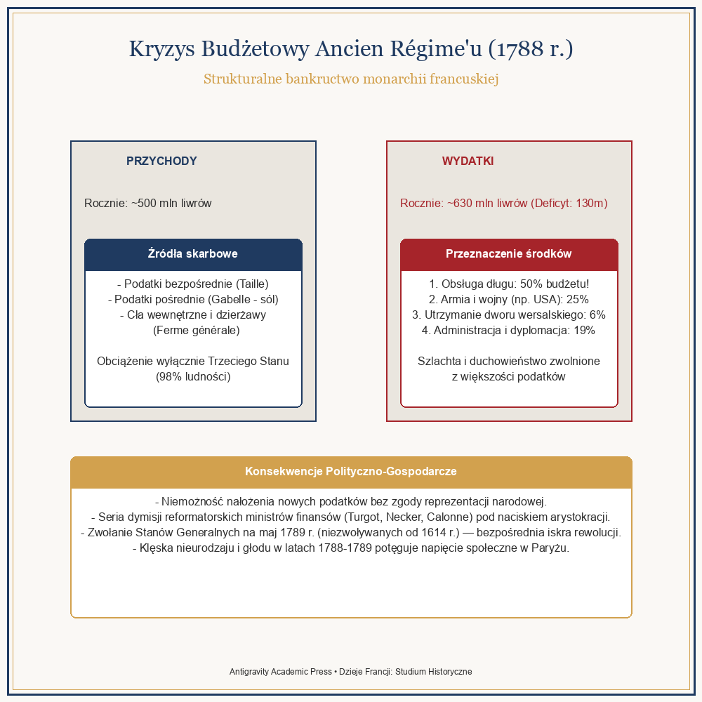
W sierpniu 1786 roku Calonne przedstawił królowi memoriał proponujący całościową reformę państwa. Jej kluczowym elementem było wprowadzenie subvention territoriale (subwencji terytorialnej) - powszechnego, proporcjonalnego podatku gruntowego, płaconego w naturze lub pieniądzu przez wszystkich właścicieli ziemskich, bez względu na przynależność stanową i posiadane przywileje. Ponadto Calonne proponował zniesienie wewnętrznych barier celnych, reformę administracji lokalnej poprzez powołanie zgromadzeń prowincjonalnych oraz konfiskatę części dóbr duchownych.
Wiedząc, że Parlament Paryski z pewnością odrzuci te propozycje, Calonne i Ludwik XVI zdecydowali się na ominięcie tej instytucji. Król zwołał Zgromadzenie Notablów - ciało doradcze składające się z wyznaczonych przez monarchę najwyższych dostojników królestwa (książąt, kardynałów, marszałków, prezesów parlamentów). Zgromadzenie to zebrało się w lutym 1787 roku. Projekt Calonne’a spotkał się jednak z totalną krytyką. Notable, pod przewodnictwem arcybiskupa Tuluzy Étienne-Charles’a de Loménie de Brienne’a, odmówili zatwierdzenia nowych podatków, argumentując, że nie mają do tego mandatu, a jedynym organem uprawnionym do decydowania o podatkach są Stany Generalne (États généraux) - zgromadzenie reprezentujące wszystkie trzy stany królestwa, które nie zwoływano od 1614 roku.
Ludwik XVI zdymisjonował Calonne’a i powołał na jego miejsce jego głównego oponenta, Loménie de Brienne’a. Brienne, zderzywszy się z realiami pustego skarbu, musiał przyjąć niemal identyczny program reform jak jego poprzednik. Gdy notable ponownie odmówili współpracy, zgromadzenie zostało rozwiązane (maj 1787 r.), a projekty ustaw podatkowych przesłano do Parlamentu Paryskiego.
Parlament kategorycznie odmówił rejestracji edyktów o podatku gruntowym. Próba zmuszenia sędziów do posłuszeństwa za pomocą lit de justice doprowadziła do otwartego buntu. Parlament ogłosił, że rejestracja dokonana pod przymusem jest nielegalna. W odpowiedzi król wygnał parlament do Troyes, co wywołało zamieszki w Paryżu i na prowincji. Ostatecznie korona musiała pójść na kompromis: parlament powrócił do stolicy, ale konflikt tlił się nadal.
W maju 1788 roku minister sprawiedliwości Chrétien-François de Lamoignon podjął kolejną próbę pozbawienia parlamentów ich politycznej roli poprzez powołanie nowego Trybunału Plenarnego (Cour plénière) do rejestracji ustaw. Wywołało to ogólnokrajową rewoltę, określaną przez historyków jako „rewolta arystokratyczna” lub „przedrewolucja”. W wielu miastach prowincjonalnych doszło do starć z wojskiem. Najsłynniejsze wydarzenie miało miejsce 7 czerwca 1788 roku w Grenoble (tzw. „dzień kafelków” - Journée des Tuiles), gdzie ludność miasta obrzuciła żołnierzy dachówkami, broniąc lokalnego parlamentu przed rozwiązaniem. Tam też, w lipcu 1788 roku, w zamku Vizille, zebrało się nielegalne zgromadzenie trzech stanów prowincji Delfinat, które wezwało do zwołania Stanów Generalnych i odmowy płacenia podatków do czasu ich zwołania.
Kryzys polityczny zbiegł się z całkowitym załamaniem gospodarczym. Katastrofalne gradobicie w lipcu 1788 roku zniszczyło uprawy w północnej Francji, a zima 1788/1789 okazała się jedną z najsurowszych w stuleciu. Ceny chleba osiągnęły rekordowy poziom, wywołując powszechny głód i zamieszki.
W sierpniu 1788 roku skarb państwa stał się całkowicie niewypłacalny. Bankierzy odmówili dalszego kredytowania korony. 8 sierpnia 1788 roku Ludwik XVI skapitulował: ogłosił zwołanie Stanów Generalnych na 1 maja 1789 roku. Kilka dni później, 16 sierpnia, państwo oficjalnie zawiesiło spłatę swoich zobowiązań, co oznaczało formalne bankructwo skarbu. Brienne podał się do dymisji, a król, w akcie desperacji, ponownie powołał popularnego Jacques’a Neckera na stanowisko dyrektora generalnego finansów, powierzając mu zadanie przygotowania kraju do obrad Stanów Generalnych.
Kryzys finansowy i ustrojowy schyłku ancien régime’u stał się przedmiotem ostrej debaty w historiografii rewolucji francuskiej. Klasyczna interpretacja marksistowska (Albert Soboul, Georges Lefebvre) widziała w nim przejaw nieuchronnego konfliktu między feudalną nadbudową polityczną a rozwijającą się kapitalistyczną bazą gospodarczą, reprezentowaną przez burżuazję. W tym ujęciu kryzys finansowy był jedynie katalizatorem, który obnażył sprzeczności klasowe i doprowadził do obalenia przywilejów feudalnych.
W opozycji do tego nurtu, szkoła rewizjonistyczna (François Furet, Alfred Cobban) podkreślała, że kryzys miał charakter przede wszystkim polityczno-instytucjonalny, a nie klasowy. Furet wskazywał, że elity szlacheckie i burżuazyjne w XVIII-wiecznej Francji były pod wieloma względami zintegrowane (poprzez kulturę oświeceniową, inwestycje w ziemię i urzędy), a monarchia absolutna runęła nie z powodu naporu rewolucyjnej burżuazji, lecz z powodu własnej niezdolności do samoreformowania i rozstrzygnięcia konfliktu między dwoma modelami państwa: nowoczesnym państwem biurokratyczno-fiskalnym a tradycyjnym społeczeństwem stanowo-korporacyjnym.
Bez względu na przyjętą perspektywę teoretyczną, kluczowym wnioskiem pozostaje fakt, że monarchia francuska u schyłku XVIII wieku padła ofiarą strukturalnego pata decyzyjnego. Absolutyzm, który teoretycznie dysponował nieograniczoną władzą, w praktyce okazał się zakładnikiem własnego systemu społeczno-ustrojowego. Niemożność opodatkowania najbogatszych warstw społecznych przy jednoczesnym braku nowoczesnych instytucji kredytowych doprowadziła do finansowej implozji państwa, otwierając drogę do głębokiej transformacji ustrojowej, jaka dokonała się po 1789 roku.
| Rok | Wydarzenie | Kontroler finansów / Kluczowa postać | Skutki ekonomiczno-ustrojowe |
|---|---|---|---|
| 1720 | Krach systemu Lawa | John Law | Utrata zaufania do pieniądza papierowego i bankowości centralnej na niemal wiek. |
| 1749 | Wprowadzenie podatku vingtième | J.B. de Machault d’Arnouville | Gwałtowny opór parlamentów i Kościoła; wyłom w zasadzie powszechności opodatkowania. |
| 1763 | Traktat Paryski | Ludwik XV / ks. de Choiseul | Utrata pierwszego imperium kolonialnego; gigantyczny wzrost długu publicznego po wojnie siedmioletniej. |
| 1771 | Reformy sądownictwa | René de Maupeou | Likwidacja opozycji parlamentów; spóźniona próba modernizacji absolutyzmu. |
| 1774 | Przywrócenie dawnych parlamentów | Ludwik XVI / hr. de Maurepas | Rezygnacja z reform Maupeou; odzyskanie przez parlamenty narzędzi blokowania reform fiskalnych. |
| 1774-1776 | Próba liberalizacji gospodarki | A.R.J. Turgot | „Wojna mączna”; opór koterii dworskiej i cechów; dymisja reformatora. |
| 1777-1781 | Finansowanie wojny amerykańskiej | Jacques Necker | Finansowanie wojny z pożyczek publicznych; publikacja Compte rendu au Roi; wzrost zadłużenia. |
| 1786-1787 | Projekt powszechnego podatku gruntowego | Charles-Alexandre de Calonne | Zwołanie Zgromadzenia Notablów; odrzucenie reform; początek „rewolty arystokratycznej”. |
| 1788 | Dzień Kafelków w Grenoble | L. de Brienne / Lamoignon | Całkowity paraliż administracyjny; ogłoszenie bankructwa państwa; zapowiedź zwołania Stanów Generalnych. |
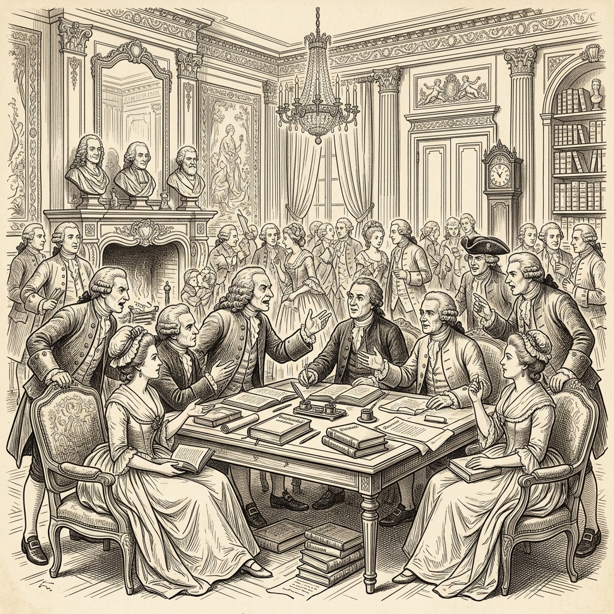
W osiemnastym stuleciu, zwłaszcza po śmierci Ludwika XIV w 1715 roku, nastąpiło fundamentalne przesunięcie ciężaru gatunkowego francuskiego życia intelektualnego i towarzyskiego. Wspaniały, lecz skostniały i duszny Wersal, będący dotąd absolutnym centrum polityczno-kulturowym królestwa, zaczął stopniowo tracić swój monopol na rzecz Paryża. Proces ten, przez wielu historyków (m.in. Jürgena Habermasa czy Rogera Chartiera (Chartier, 1990)) określany jako narodziny „mieszczańskiej sfery publicznej” (bürgerliche Öffentlichkeit), dokonał się poprzez wyłonienie się nowych, nieformalnych instytucji socjabilności. Przestrzeń ta, choć formalnie usytuowana w ramach monarchii absolutnej, zaczęła funkcjonować w sposób autonomiczny wobec dworskiej ortodoksji i cenzury.
Głównym pasem transmisyjnym nowych prądów umysłowych stał się salon literacki. Salony osiemnastowiecznego Paryża, prowadzone przez wpływowe i wszechstronnie wykształcone kobiety - salonnières, takie jak Marie-Thérèse Rodet Geoffrin, Claudine Guérin de Tencin, Julie de Lespinasse czy Louise d’Épinay - przestały być jedynie miejscami dworskiej rozrywki, a stały się prawdziwymi laboratoriami myśli krytycznej. To tam, przy zachowaniu specyficznego kodu towarzyskiego opartego na koncepcji honnêteté (ogłady i wielkoduszności) oraz sztuce konwersacji, spotykali się arystokraci, bogaci reprezentanci wyższego mieszczaństwa (haute bourgeoisie) oraz wybitni filozofowie (philosophes). W salonach zacieraniu ulegały tradycyjne bariery stanowe: o pozycji dyskutanta decydował nie tyle glejt szlachectwa, ile błyskotliwość umysłu, erudycja i zdolność do szermierki słownej. W ten sposób salony wykreowały nową formę autorytetu - autorytetu rozumu, który zaczął konkurować z tradycyjnym autorytetem Kościoła i Korony.
Równolegle, na mapie Paryża pojawiły się instytucje o charakterze bardziej demokratycznym i plebejskim, choć wciąż elitarnym pod względem intelektualnym - kawiarnie. Słynna Café Procope, założona pod koniec XVII wieku, stała się w wieku XVIII głównym miejscem spotkań paryskiej bohemy, pisarzy, pamflecistów i encyklopedystów. W przeciwieństwie do salonów, gdzie wstęp był ściśle reglamentowany przez gospodynię, kawiarnia była przestrzenią otwartą dla każdego, kogo stać było na filiżankę kawy. To tutaj, przy akompaniamencie lektury najświeższych gazet i nielegalnych druków sprowadzanych z Holandii czy Szwajcarii, rodziła się „opinia publiczna” (l’opinion publique) - nowa, bezcielesna instancja osądzająca, którą Jacques Necker pod koniec stulecia nazwie „niewidzialnym trybunałem”.
W tym kontekście Paryż urósł do rangi intelektualnej stolicy Europy, narzucając kontynentowi nie tylko język francuski jako narzędzie dyplomacji i nauki, ale przede wszystkim kosmopolityczny styl życia i krytyczny stosunek do zastanej rzeczywistości. Narodziny tej nowej przestrzeni komunikacyjnej zdemolowały dotychczasowy model komunikacji hierarchicznej, w którym prawda i racja spływały z góry - od Boga, poprzez króla, do poddanych. Teraz prawda miała być owocem debaty, ścierania się poglądów i empirycznej weryfikacji.
Najpełniejszym pomnikiem i zarazem najpotężniejszym narzędziem francuskiego Oświecenia była L’Encyclopédie, ou Dictionnaire raisonné des sciences, des arts et des métiers (Wielka Encyklopedia Francuska), wydawana w latach 1751-1772 pod redakcją Denisa Diderota i Jeana le Randa d’Alemberta. Przedsięwzięcie to, początkowo planowane jako skromne tłumaczenie angielskiej Cyclopaedii Ephraima Chambersa, przekształciło się w gigantyczny, wielotomowy projekt, który postawił sobie za cel nie tylko skatalogowanie całej dostępnej ludzkiej wiedzy, ale przede wszystkim - jak pisał Diderot w haśle „Encyklopedia” - „zmienić powszechny sposób myślenia” (changer la façon commune de penser).
Epistemologiczny fundament Encyklopedii opierał się na filozofii Francisa Bacona, Johna Locke’a oraz Isaaca Newtona. We wstępie do dzieła (Discours préliminaire), zredagowanym przez d’Alemberta, dokonano rewolucyjnej klasyfikacji wiedzy ludzkiej, opartej na trzech władzach umysłu: pamięci (historia), wyobraźni (poezja, sztuka) oraz rozumie (filozofia, nauki ścisłe). Kluczowy pod względem politycznym i teologicznym był fakt, że teologia została sklasyfikowana jako podgałąź filozofii, poddana rygorom ludzkiego rozumu, a nie jako nadrzędna dyscyplina objawiona, determinująca wszystkie inne dziedziny poznania. Był to otwarty zamach na tradycyjny porządek scholastyczny.
Encyklopedia stała się politycznym taranem wymierzonym w sojusz Tronu i Ołtarza z kilku powodów:
Reakcja państwa i Kościoła na ten projekt była gwałtowna. W 1752 roku dekret Rady Królewskiej potępił pierwsze dwa tomy, a w 1759 roku, po publikacji kontrowersyjnego dzieła Helvétiusa O umyśle, królewski przywilej na druk Encyklopedii został cofnięty, a samo dzieło wpisane na papieski Index librorum prohibitorum. Projekt przetrwał wyłącznie dzięki determinacji Diderota, tytanicznej pracy Louisa de Jaucourta (który napisał blisko jedną czwartą wszystkich haseł) oraz protekcji wpływowych osób na dworze, w tym Guillaume-Chrétiena de Lamoignon de Malesherbesa (dyrektora ds. księgarstwa, odpowiedzialnego za cenzurę) oraz samej faworyty królewskiej, markizy de Pompadour. Robert Darnton w swoich badaniach nad historią społeczną książki wykazał, że mimo zakazów, Encyklopedia stała się gigantycznym sukcesem rynkowym, kształtującym umysły całej generacji przyszłych rewolucjonistów i reformatorów.
Charles-Louis de Secondat, baron de La Brède et de Montesquieu (Monteskiusz), reprezentował oświecenie o proweniencji szlacheckiej, silnie zakorzenione w tradycji francuskich parlamentów (był prezydentem parlamentu w Bordeaux). Jego myśl polityczna, choć umiarkowana i ewolucyjna, uderzyła w same fundamenty francuskiego absolutyzmu poprzez systematyczną dekonstrukcję mitu o doskonałości władzy jedynowładczej.
W swoim opus magnum O duchu praw (De l’esprit des lois, 1748) Monteskiusz porzucił dotychczasowe, oparte na teologii lub czystej spekulacji, podejście do prawa i państwa na rzecz metody empirycznej i porównawczej, stając się jednym z pionierów socjologii polityki. Sformułował tezę, że prawa rządzące danym społeczeństwem nie są arbitralnym kaprysem suwerena, lecz wynikają z „ducha praw”, na który składają się czynniki geograficzne, klimatyczne, religijne, historyczne i ekonomiczne.
Monteskiusz dokonał nowej klasyfikacji ustrojów politycznych, przypisując każdemu z nich immanentną zasadę działania:
Kluczowe ostrze krytyki Monteskiusza było wymierzone w despotyzm, który utożsamiał z degeneracją władzy monarszej. Analizując rządy Ludwika XIV, filozof dostrzegał niebezpieczną tendencję do likwidacji ciał pośredniczących (corps intermédiaires), takich jak stany prowincjonalne, samorządy miejskie, a przede wszystkim parlamenty (sądy rejestrujące ustawy królewskie). W ujęciu Monteskiusza, bez tych instytucjonalnych buforów, które hamują i kanalizują wolę monarchy, monarchia nieuchronnie stacza się w despotyzm, gdzie jedynym prawem staje się kaprys władcy.
Aby zapobiec tej degeneracji i zabezpieczyć wolność polityczną obywatela, którą definiował jako „prawo czynienia wszystkiego tego, na co ustawy pozwalają”, Monteskiusz sformułował swoją najsłynniejszą teorię - trójpodział władzy. Inspirowany (nieco idealistycznym) obrazem ustroju Anglii po chwalebnej rewolucji, postulował rozdzielenie trzech funkcji państwa:
Istotą tej doktryny nie był jednak sam podział, lecz zasada wzajemnego hamowania się i równoważenia władz (le pouvoir arrête le pouvoir). Władza wykonawcza musiała mieć prawo weta wobec ustawodawczej, parlament musiał kontrolować budżet i wykonanie praw, a sądownictwo musiało być całkowicie autonomiczne, by nie stać się narzędziem tyranii w rękach króla lub parlamentu.
Dla francuskiego absolutyzmu, opartego na doktrynie Jeana Bodina i Jacques’a-Bénigne’a Bossueta, według której suwerenność monarchy jest niepodzielna, święta i pochodzi bezpośrednio od Boga, myśl Monteskiusza była rewolucyjna. Podważała ona legitymizację absolutnej władzy Burbonów, pokazując, że koncentracja władzy w jednym ręku - nawet przy najlepszych intencjach monarchy - jest z samej swojej natury tyranią.
François-Marie Arouet, znany całemu światu jako Voltaire (Wolter), był niekoronowanym królem europejskiej republiki listów. Jego walka z ancien régime’em nie miała charakteru systematycznego traktatu politycznego; Wolter był genialnym publicystą, dramaturgiem, historykiem i pamflecistą, który jako oręża używał ironii, sarkazmu i bezlitosnej logiki.
Punktem zwrotnym w jego działalności był pobyt na wygnaniu w Anglii (1726-1729). Owocem tej podróży były Listy o Anglikach (Lettres philosophiques, 1734), dzieło, które paryski parlament nakazał publicznie spalić jako „gorszące, przeciwne religii i dobrym obyczajom”. Wolter przedstawił w nim Anglię jako kontrastowy obraz Francji: kraj tolerancji religijnej (gdzie współistnienie wielu wyznań gwarantuje spokój społeczny), wolności słowa, szacunku dla handlu i nauki oraz monarchii ograniczonej prawem.
Centralnym punktem wolteriańskiego programu była bezkompromisowa walka z tym, co nazywał l’Infâme (Niegodziwą) - czyli z instytucjonalnym Kościołem katolickim, klerykalizmem, zabobonem i fanatyzmem religijnym. Wolter nie był jednak ateistą; reprezentował deizm - pogląd, według którego Bóg jest Wielkim Architektem wszechświata, który stworzył świat i nadał mu prawa natury, lecz nie ingeruje bezpośrednio w jego funkcjonowanie, nie czyni cudów i nie potrzebuje rytuałów ani dogmatów. Religia była dla niego potrzebna jedynie jako straszak moralny dla mas („Gdyby Bóg nie istniał, należałoby go wymyślić”), ale jej instytucjonalna forma w postaci Kościoła katolickiego jawiła mu się jako źródło nieszczęść, wojen i nietolerancji.
Swoją doktrynę tolerancji Wolter wyłożył najpełniej w Traktacie o tolerancji (Traité sur la tolérance, 1763), napisanym pod wpływem głośnej sprawy Jeana Calasa - protestanckiego kupca z Tuluzy, który padł ofiarą mordu sądowego, oskarżony bez dowodów o zamordowanie syna, rzekomo chcącego przejść na katolicyzm. Wolter zaangażował cały swój autorytet, majątek i talenty publicystyczne, by doprowadzić do pośmiertnej rehabilitacji Calasa, co ostatecznie mu się udało.
Dla Woltera tolerancja była nie tylko cnotą moralną, ale i koniecznością polityczną. Argumentował, że:
Pod względem ustrojowym Wolter nie był demokratą. Przez długi czas wierzył w model „oświeconego despotyzmu” (lub raczej oświeconego absolutyzmu), upatrując szansy na reformy w sojuszu filozofów z monarchami, czego wyrazem były jego bliskie (choć burzliwe) relacje z Fryderykiem II Wielkim czy Katarzyną II. Niemniej jednak jego bezpardonowa krytyka nadużyć sądownictwa, cenzury, tortur oraz uprzywilejowanej pozycji kleru systematycznie odzierała monarchię francuską z jej sakralnej legitymizacji. Atakując Kościół, który stanowił ideologiczny fundament tronu, Wolter kruszył spoiwo całego systemu społeczno-politycznego ancien régime’u.
Jeśli Monteskiusz reprezentował oświecenie umiarkowanie szlacheckie, a Wolter wielkomiejskie i burżuazyjne, to Jean-Jacques Rousseau był głosem radykalnego buntu przeciwko samemu paradygmatowi nowoczesności, będąc jednocześnie jednym z najważniejszych i najbardziej paradoksalnych myślicieli epoki.
W swoich wczesnych pismach, takich jak Rozprawa o naukach i sztukach (1750) oraz Rozprawa o pochodzeniu i podstawach nierówności między ludźmi (1755), Rousseau postawił diagnozę, która wstrząsnęła ówczesnym salonowym optymizmem. Twierdził, że rozwój cywilizacji, nauk i sztuk wcale nie doprowadził do moralnego doskonalenia człowieka, lecz przeciwnie - zepsuł go, zastępując naturalną empatię i autentyczność próżnością, obłudą i egoizmem (amour-propre). Kluczowym momentem w historii ludzkości, według Rousseau, było powstanie własności prywatnej:
„Ten, kto pierwszy ogrodził kawałek ziemi, powiedział: «To moje» i znalazł ludzi dość naiwnych, by mu uwierzyć, był prawdziwym założycielem społeczeństwa obywatelskiego”.
To powstanie własności doprowadziło do podziału na bogatych i biednych, do narodzin nierówności społecznej i stworzenia państwa, które - w ujęciu Rousseau - było pierwotnie spiskiem bogatych mającym na celu usankcjonowanie ich grabieży i zniewolenie reszty ludzkości.
Po tej radykalnej destrukcji dotychczasowych teorii politycznych, Rousseau zaproponował własny, konstruktywny model w swoim najważniejszym dziele ustrojowym - Umowie społecznej (Du contrat social, 1762). Książka ta zaczyna się od słynnego zdania: „Człowiek rodzi się wolny, a wszędzie tkwi w kajdanach”. Celem Rousseau było znalezienie takiej formy zrzeszenia się ludzi, która broniłaby i chroniła osobę i mienie każdego członka, a jednocześnie pozwalała mu pozostać tak wolnym jak uprzednio.
Rozwiązaniem tego problemu była specyficzna koncepcja umowy społecznej. Według Rousseau, polega ona na całkowitym oddaniu się każdego członka ze wszystkimi swoimi prawami całemu społeczeństwu (aliénation totale). W wyniku tego aktu powstaje moralne i zbiorowe ciało, które filozof nazwał Suwerenem. Kluczowe pojęcia rousseauistycznej teorii politycznej to:
Myśl Rousseau była najbardziej radykalnym wyzwaniem rzuconym francuskiemu absolutyzmowi. Podczas gdy Monteskiusz i Wolter szukali mechanizmów reformowania istniejącej monarchii poprzez jej ograniczenie lub oświecenie, Rousseau dokonał całkowitej delegitymizacji dotychczasowego porządku społecznego i politycznego. Jego koncepcja suwerenności ludu bezpośrednio uderzała w osobę króla jako suwerena. To nie król był państwem; państwem był lud.
Choć sam Rousseau był sceptyczny co do możliwości realizacji swojego modelu w dużych państwach (uważał, że nadaje się on raczej dla małych społeczności, jak jego rodzinna Genewa czy Korsyka), to jego idee stały się potężną inspiracją dla radykalnego skrzydła Rewolucji Francuskiej. Maksymilian Robespierre i jakobini uczynili z Umowy społecznej swoją biblię polityczną, próbując w latach 1793-1794 zrealizować rousseauistyczną wizję cnoty republikańskiej i absolutnej władzy woli powszechnej, co paradoksalnie doprowadziło do narodzin rewolucyjnego terroru.
Analiza francuskiego Oświecenia przez pryzmat salonów, Encyklopedii oraz pism Monteskiusza, Woltera i Rousseau ukazuje proces głębokiej, wielowymiarowej dekonstrukcji struktur mentalnych i instytucjonalnych, na których opierał się ancien régime. Każdy z tych elementów, choć często odmienny w swoich założeniach i celach, dokładał cegiełkę do demontażu legitymizacji monarchii absolutnej:
| Obszar dekonstrukcji | Tradycyjny model ancien régime’u | Oświeceniowa alternatywa | Główni nosiciele idei |
|---|---|---|---|
| Źródło władzy | Boskie prawo królów (droit divin), suwerenność w osobie monarchy | Umowa społeczna, niezbywalna suwerenność ludu | Rousseau, Diderot (Encyklopedia) |
| Struktura władzy | Monopolistyczna, scentralizowana, brak podziału kompetencji | Trójpodział władzy, system hamulców i równowagi | Monteskiusz |
| Legitymizacja wiedzy | Objawienie, autorytet Kościoła, tradycja scholastyczna | Empiryzm, rozum, sekularyzacja nauk | d’Alembert, Diderot (Encyklopedia) |
| Relacja państwo-kościół | Wyznaniowość państwa, sojusz Tronu i Ołtarza, nietolerancja | Tolerancja religijna, deizm, podporządkowanie kleru państwu | Voltaire |
| Komunikacja społeczna | Hierarchiczny przekaz odgórny, cenzura prewencyjna | Sfera publiczna, salony, opinia publiczna, wolność druku | Salonnières, pamfleciści, kawiarnie |
Wbrew uproszczonym interpretacjom dziewiętnastowiecznej historiografii, filozofowie Oświecenia nie byli bezpośrednimi architektami rewolucji 1789 roku w sensie planowania przewrotu politycznego. Większość z nich obawiała się gwałtownych ruchów masowych i rewolucyjnej anarchii. Jednakże ich działalność dokonała czegoś znacznie ważniejszego: zniszczyła barierę psychologiczną i religijną, która dotąd chroniła monarchię. Ogołociła władzę królewską z jej sakralnego nimbusu, przekształcając króla z „pomazańca Bożego” w zwykłego urzędnika państwowego podlegającego ocenie rozumu. Kiedy w 1789 roku wybuchł kryzys finansowy i polityczny, francuskie elity dysponowały już gotowym aparatem pojęciowym, językiem i alternatywnymi modelami ustrojowymi, które pozwoliły im nie tylko zakwestionować dotychczasowy porządek, ale podjąć próbę zbudowania świata całkowicie na nowo.
Kryzys monarchii absolutnej we Francji w drugiej połowie XVIII wieku nie był jedynie implozją struktur fiskalno-ustrojowych, lecz przede wszystkim głębokim procesem erozji kulturowych i symbolicznych fundamentów władzy. Przez niemal dwa stulecia legitymizacja dynastii Burbonów opierała się na precyzyjnie skonstruowanym teatrze władzy, w którym osoba monarchy stanowiła sakralne centrum państwa. U schyłku ancien régime’u ta monopolistyczna reprezentacja władzy została zakwestionowana przez wyłonienie się alternatywnego trybunału - opinii publicznej (l’opinion publique). Zjawisko to, analizowane w klasycznych już pracach Jürgena Habermasa, a następnie redefiniowane przez historyków rewizjonistycznych, takich jak Keith Michael Baker czy Roger Chartier (Chartier, 1990), stało się nową instancją suwerenną, która poddała ocenie dotychczas nienaruszalne arkana władzy królewskiej (arcana imperii).
Przejście od reprezentatywnej sfery publicznej, w której władza jedynie manifestowała się przed poddanymi, do mieszczańskiej sfery publicznej, opartej na krytycznym użyciu rozumu, dokonało się za pośrednictwem nowych instytucji socjalizacji intelektualnej. Przestrzenie te, choć formalnie funkcjonujące w ramach monarchii absolutnej, wyznaczały obszar wolny od bezpośredniej ingerencji państwowej cenzury i hierarchii stanowej.
Kluczową rolę w tym procesie odegrały salony literackie i filozoficzne. Prowadzone przez wpływowe kobiety z kręgów arystokracji i bogatego mieszczaństwa - takie jak Madame Geoffrin, Julie de Lespinasse czy Madame Necker - salony stały się laboratoriami nowej kultury dyskursywnej. W ich przestrzeni dochodziło do zacierania tradycyjnych barier stanowych; o pozycji dyskutanta nie decydowało już urodzenie, lecz błyskotliwość intelektualna i umiejętność argumentacji. Choć salony były instytucjami elitarnymi, to właśnie tam krystalizował się konsensus wokół postulatów philosophes, który następnie przenikał do szerszych warstw społecznych.
Równolegle, w sposób znacznie bardziej demokratyczny i plebejski, proces ten zachodził w kawiarniach paryskich, z legendarną Café Procope na czele. Kawiarnie, w przeciwieństwie do salonów, były przestrzeniami otwartymi dla każdego, kto mógł pozwolić sobie na filiżankę kawy. Stały się one centrami wymiany informacji, plotek i dyskusji politycznych. Jak wskazuje Arlette Farge w swoich badaniach nad kulturą ludową Paryża, kawiarnie funkcjonowały jako węzły komunikacyjne, w których czytano na głos gazety, komentowano najnowsze decyzje rządu oraz kolportowano wiadomości z tzw. nouvelles à la main - rękopiśmiennych biuletynów informacyjnych, które wymykały się oficjalnej cenzurze.
Nie bez znaczenia pozostawał rozwój prasy drukowanej i stowarzyszeń czytelniczych (sociétés de pensée). Choć oficjalne periodyki, takie jak „Gazette de France” czy „Mercure de France”, podlegały ścisłemu nadzorowi, rynek wydawniczy został zalany przez literaturę drugiego obiegu, drukowaną w oficynach w Szwajcarii, Niderlandach czy w niemieckich księstwach nadgranicznych (np. w Bouillon). Przemyt książek zakazanych (livres philosophiques) stał się wysoce dochodowym przedsięwzięciem. W ten sposób idee Monteskiusza, Voltaire’a, a zwłaszcza Rousseau, trafiały do prowincjonalnych gabinetów lektury, lóż masońskich oraz akademii prowincjonalnych, tworząc jednolitą, ogólnokrajową sieć dyskursywną, która zaczęła postrzegać państwo nie jako własność dynastyczną, lecz jako dobro wspólne podlegające racjonalnej ocenie.
Fundamentem francuskiego absolutyzmu była sakralna tożsamość monarchy. Król Francji, jako Rex Christianissimus (Król Arcychrześcijański), namaszczony podczas ceremonii koronacyjnej w Reims świętym olejem z cudownej ampułki, posiadał status istoty zapośredniczonej między porządkiem boskim a ziemskim. Widocznym znakiem tej sakralności była rzekoma zdolność leczenia chorych na skrofuły poprzez dotyk (toucher des écrouelles). Rytuał ten, gruntownie przeanalizowany przez Marca Blocha, stanowił kluczowy element legitymizacji władzy, potwierdzający charyzmatyczny i cudotwórczy charakter królewskiego ciała.
W XVIII wieku ten sakralny uniwersum uległo gwałtownej dekonstrukcji. Proces ten, określany przez Rogera Chartiera mianem „desakralizacji” (Chartier, 1990) (désacralisation), nie był jedynie wynikiem racjonalistycznej krytyki encyklopedystów, lecz konsekwencją przemian obyczajowych i politycznych samego dworu. Kluczowym momentem tego kryzysu było panowanie Ludwika XV. Jego ostentacyjny tryb życia, liczne metresy (z Madame de Pompadour i Madame du Barry na czele) oraz jawne lekceważenie praktyk religijnych doprowadziły do zerwania sakralnej więzi z poddanymi. Gdy w 1744 roku, podczas choroby w Metz, król pod naciskiem kleru musiał publicznie odprawić spowiedź i oddalić swoją kochankę, jego wizerunek jako Bożego pomazańca doznał nieodwracalnego uszczerbku. Fakt, że Ludwik XV przez dekady unikał przystępowania do sakramentów wielkanocnych, co uniemożliwiało mu dokonywanie rytuału dotykania chorych, ostatecznie zerwał mistyczny związek łączący króla z jego ludem.
Ludwik XVI, mimo swojej osobistej pobożności i chęci powrotu do tradycyjnych cnót, nie zdołał odbudować utraconego autorytetu. Jego próby modernizacji państwa, połączone z niezdecydowaniem politycznym, obnażyły słabość instytucji monarchii. Król przestał być postrzegany jako nietykalna figura sakralna, a stał się urzędnikiem państwowym, którego decyzje mogą być poddawane krytyce. Jak zauważa Ernst Kantorowicz w swojej teorii „dwóch ciał króla”, w świadomości społecznej u schyłku ancien régime’u doszło do dramatycznego rozdzielenia politycznego i fizycznego ciała monarchy. Ciało fizyczne, odarte z sakralnego nimbusu, stało się obiektem drwin, co utorowało drogę do późniejszego, dosłownego i symbolicznego uśmiercenia monarchy.
W procesie erozji autorytetu dworu wersalskiego kluczową rolę odegrała literatura pamfletowa, określana w ówczesnej terminologii jako libelles. Robert Darnton w swoich pionierskich badaniach nad „literackim podziemiem” (Grub Street) osiemnastowiecznego Paryża wykazał, że to nie wyrafinowane traktaty filozoficzne Monteskiusza czy Rousseau dokonały ostatecznej destrukcji legitymizacji monarchii, lecz brutalna, często pornograficzna literatura pamfletowa tworzona przez sfrustrowanych, niespełnionych literatów.
Pisarze ci, żyjący w nędzy na marginesie oficjalnego życia akademickiego, przelewali swój resentyment wobec elit na papier, tworząc paszkwile, które w sposób niezwykle sugestywny demaskowały rzekomą moralną degrengoladę dworu. Wersal, który za czasów Ludwika XIV był symbolem porządku i harmonii kosmicznej, w pamfletach jawił się jako nowa Sodoma - gniazdo korupcji, sybarytyzmu, homoseksualizmu i finansowego pasożytnictwa.
Głównym celem tych ataków stała się królowa Maria Antonina. Jako cudzoziemka, pogardliwie nazywana „Austriaczką” (l’Autrichienne), od początku budziła niechęć francuskiego społeczeństwa. Pamflety oskarżały ją o nimfomanię, orgie seksualne w Petit Trianon, związki lesbijskie (m.in. z księżną de Polignac) oraz o całkowite podporządkowanie sobie słabego i rzekomo impotentnego męża. Królową przedstawiano jako potwora pożerającego finanse państwa - stąd przydomek „Madame Deficyt” (Madame Déficit).
Apogeum tego kryzysu wizerunkowego stanowiła tzw. sprawa naszyjnika królowej (1785-1786). Choć Maria Antonina była całkowicie niewinna w tej misternej intrydze uknutej przez kardynała de Rohan i hrabinę de La Motte, opinia publiczna uznała ją za główną sprawczynię skandalu. Proces przed Parlamentem Paryskim, który stał się wielkim spektaklem politycznym, ostatecznie skompromitował dwór. Jak pisał po latach Johann Wolfgang von Goethe, afera naszyjnika stanowiła prolog do Rewolucji, gdyż obnażyła przed całym światem moralną próżnię i podatność na manipulacje najwyższych kręgów władzy. Pamflety te nie tylko niszczyły reputację konkretnych osób, ale przede wszystkim dokonywały desakralizacji samej instytucji królewskiej poprzez jej seksualizację i wulgaryzację, co ułatwiało późniejsze zaakceptowanie przemocy fizycznej wobec rodziny królewskiej.
Gdy w obliczu bankructwa państwa Ludwik XVI został zmuszony do zwołania Stanów Generalnych na maj 1789 roku, dwór podjął decyzję o reaktywowaniu tradycyjnej procedury spisywania kajetów skarg (cahiers de doléances). Miały one stanowić tradycyjne świadectwo ojcowskiej troski króla, który pochyla się nad bolączkami swoich poddanych. W rzeczywistości jednak proces ten wymknął się spod kontroli rządu i stał się potężnym katalizatorem politycznej emancypacji narodu.
Spisywanie kajetów skarg w pierwszych miesiącach 1789 roku objęło całe królestwo - od wielkich miast po najmniejsze parafie wiejskie. Choć na poziomie parafii teksty te były często redagowane przez lokalnych notariuszy, proboszczów czy sędziów na podstawie gotowych szablonów (np. słynnego wzoru autorstwa księdza Sieyèsa czy instrukcji księcia Orleańskiego), odzwierciedlały one realne i głębokie napięcia społeczne.
Analiza porównawcza kajetów skarg poszczególnych stanów ujawnia fundamentalne pęknięcie wewnątrz francuskiego społeczeństwa:
| Stan społeczny | Główne postulaty i skargi | Stosunek do tradycji i przywilejów |
|---|---|---|
| Duchowieństwo (I Stan) | Zachowanie monopolu religijnego Kościoła katolickiego, kontrola nad edukacją, potępienie „filozoficznej bezbożności”, ale także żądania poprawy bytu niższego kleru kosztem bogatych beneficjantów. | Chęć utrzymania tradycyjnych przywilejów podatkowych przy jednoczesnej gotowości do dobrowolnych ofiar na rzecz państwa. |
| Szlachta (II Stan) | Żądanie reform politycznych (monarchia konstytucyjna), gwarancje wolności osobistej, sprzeciw wobec despotyzmu ministerialnego, postulat decydowania o podatkach przez Stany Generalne. | Bezwzględna obrona przywilejów honorowych, feudalnych praw własności oraz sprzeciw wobec zrównania podatkowego i dostępu mieszczan do urzędów oficerskich. |
| Stan Trzeci (III Stan) | Równość wobec prawa i opodatkowania, zniesienie pańszczyzny, ciężarów feudalnych, dziesięciny oraz monopoli cechowych. Żądanie głosowania „na głowy”, a nie „stanami” podczas obrad Stanów Generalnych. | Całkowite odrzucenie tradycyjnego podziału stanowego; dążenie do suwerenności narodowej i wolności gospodarczej. |
Kajety skarg, mimo zachowania tradycyjnej retoryki wierności i miłości do osoby króla (często postrzeganego wciąż jako „dobry ojciec”, którego oszukują źli ministrowie), de facto formułowały program głębokiej rekonstrukcji państwa. Przemiana ta dokonała się na poziomie języka: tradycyjne pojęcia, takie jak „przywilej” czy „dawne zwyczaje”, zostały zastąpione przez „prawa naturalne”, „konstytucję”, „naród” i „obywatela”.
Proces spisywania cahiers de doléances miał kluczowe znaczenie psychologiczne i polityczne. Po pierwsze, zmusił on miliony Francuzów do zwerbalizowania swoich frustracji i zdefiniowania swoich interesów grupowych. Po drugie, stworzył iluzję, że ich głos ma znaczenie decydujące, co gwałtownie rozbudziło oczekiwania społeczne. Kiedy okazało się, że dwór królewski traktuje Stany Generalne jedynie jako narzędzie do uchwalenia nowych podatków, a nie jako forum głębokich reform strukturalnych, frustracja ta przekształciła się w rewolucyjny gniew. Kajety skarg przestały być listą próśb do monarchy, a stały się aktem oskarżenia przeciwko ancien régime’owi i manifestem suwerenności narodu.
W ten sposób, poprzez narodziny nowej sfery publicznej, desakralizację monarchii, niszczycielską siłę literatury pamfletowej oraz masową polityzację towarzyszącą spisywaniu kajetów skarg, doszło do całkowitego załamania legitymizacji władzy królewskiej. Na długo przed tym, zanim 14 lipca 1789 roku padły pierwsze strzały pod Bastylią, monarchia absolutna we Francji została pokonana na polu walki idei, symboli i języka politycznego.
Rrok 1789 nie był nagłym, pozbawionym przyczyn przyczynkiem do gwałtownego zerwania ciągłości historycznej, lecz punktem kulminacyjnym długofalowego kryzysu strukturalnego, który trawił monarchię absolutną Burbonów od schyłku panowania Ludwika XIV. Francuski ancien régime u schyłku XVIII stulecia znalazł się w stanie permanentnej niewydolności fiskalnej, instytucjonalnej i społecznej. Próby reform podejmowane przez kontrolerów generalnych finansów, takich jak Anne-Robert-Jacques Turgot, Charles Alexandre de Calonne czy Étienne-Charles de Loménie de Brienne, rozbijały się systematycznie o opór uprzywilejowanych stanów - duchowieństwa (pierwszego) i szlachty (drugiego). Szczególną rolę w tym oporze odegrały parlamenty, zwłaszcza Parlament Paryski, będący w istocie najwyższym sądem apelacyjnym, który uzurpował sobie prawo do wetowania edyktów królewskich pod pretekstem obrony „fundamentalnych praw królestwa”. Ta „revolta szlachecka” (révolte nobiliaire) z lat 1787-1788, paradoksalnie, utorowała drogę do rewolucji, paraliżując próby wprowadzenia powszechnego podatku gruntowego, który obciążyłby dotychczas zwolnione z niego warstwy.
W obliczu bankructwa państwa i niemożności przełamania oporu możnych, Ludwik XVI został zmuszony do podjęcia decyzji o zwołaniu Stanów Generalnych - zgromadzenia reprezentującego trzy stany królestwa, które nie obradowało od 1614 roku. Decyzja ta, ogłoszona w sierpniu 1788 roku, wywołała natychmiastową i głęboką mobilizację polityczną w całym kraju. Kluczowym punktem debaty publicznej stała się kwestia procedury obrad i głosowania. Tradycyjny model zakładał, że każdy stan obraduje osobno, a decyzje zapadają większością głosów stanowych (jeden stan - jeden głos). Taki system gwarantował przewagę stanom uprzywilejowanym (dwa do jednego) nad Stanem Trzecim, reprezentującym ponad 96% ludności Francji.
W łonie rodzącego się ruchu reformatorskiego, określanego mianem „Partii Narodowej”, sformułowano postulat podwojenia reprezentacji Stanu Trzeciego (doublement du Tiers) oraz wprowadzenia zasady głosowania indywidualnego (vote par tête). Król, pod wpływem opinii publicznej i rad powracającego do łask Jacques’a Neckera, wyraził zgodę na podwojenie liczby deputowanych Stanu Trzeciego (co dało im około 600 przedstawicieli wobec około 300 dla każdego z pozostałych stanów), jednak kwestię sposobu głosowania pozostawił nierozstrzygniętą, co miało okazać się fatalnym błędem taktycznym korony.
Wiosna 1789 roku stała się okresem bezprecedensowej lekcji demokracji bezpośredniej. W całym kraju spisywano zeszyty skarg (cahiers de doléances), w których poddani króla formułowali swoje postulaty. Choć większość z nich wyrażała głęboki szacunek i lojalność wobec osoby monarchy, wyłaniał się z nich spójny program reform:
W tym samym czasie popularność zyskiwała broszura opata Emmanuela-Josepha Sieyèsa Czym jest Stan Trzeci? (Qu’est-ce que le Tiers-État?), wydana w styczniu 1789 roku. Zawarte w niej rewolucyjne tezy redefiniowały pojęcie narodu:
„Czym jest Stan Trzeci? Wszystkim. Czym był dotąd w ustroju politycznym? Niczym. Czego żąda? Stać się czymś”.
Sieyès argumentował, że to Stan Trzeci wykonuje wszystkie prace użyteczne społecznie i tworzy bogactwo kraju, w związku z czym stanowi kompletny naród, natomiast szlachta jest jedynie pasożytniczą naroślą na ciele społecznym.
Uroczyste otwarcie Stanów Generalnych w Wersalu 5 maja 1789 roku natychmiast ujawniło głęboki rozdźwięk między oczekiwaniami deputowanych a intencjami dworu. Przemówienia Ludwika XVI, strażnika pieczęci Charles’a de Barentina oraz Jacques’a Neckera koncentrowały się wyłącznie na kwestiach finansowych, całkowicie ignorując żądania reform ustrojowych. Co ważniejsze, nie rozstrzygnięto kwestii wspólnych obrad.
Przez kolejnych sześć tygodni Stany Generalne znajdowały się w stanie całkowitego paraliżu decyzyjnego. Deputowani Stanu Trzeciego, odmawiając ukonstytuowania się jako osobna izba, wzywali przedstawicieli duchowieństwa i szlachty do wspólnej weryfikacji mandatów. Była to walka o fundamentalnym znaczeniu: wspólna weryfikacja przesądzałaby o przejściu do obrad plenarnych i głosowania indywidualnego.
Przełom nastąpił w połowie czerwca. 10 czerwca, na wniosek Sieyèsa, Stan Trzeci podjął ostateczne wezwanie pod adresem pozostałych stanów do przyłączenia się do weryfikacji. Kilku deputowanych z szeregów niższego duchowieństwa (głównie ubogich proboszczów parafialnych) odpowiedziało na ten apel. 17 czerwca 1789 roku, uznając, że reprezentuje co najmniej 96% narodu, Stan Trzeci podjął rewolucyjną decyzję o ogłoszeniu się Zgromadzeniem Narodowym (Assemblée nationale). Był to akt o charakterze rewolucji prawnej - suwerenność została symbolicznie przeniesiona z osoby monarchy na reprezentację narodu.
Reakcja dworu była gwałtowna, choć spóźniona. Pod pretekstem przygotowań do uroczystego posiedzenia królewskiego (séance royale), 20 czerwca zamknięto salę obrad Stanu Trzeciego. Deputowani, pod przewodnictwem Jeana-Sylvaina Bailly’ego, nie ulegli jednak prowokacji. Udali się do pobliskiej sali do gry w piłkę (salle du Jeu de paume), gdzie złożyli uroczystą przysięgę, że nie rozejdą się, dopóki nie uchwalą konstytucji królestwa. Autorem tekstu przysięgi był Jean-Joseph Mounier, a wydarzenie to - uwiecznione później na niedokończonym obrazie Jacques’a-Louisa Davida - stało się założycielskim mitem nowoczesnej demokracji francuskiej.
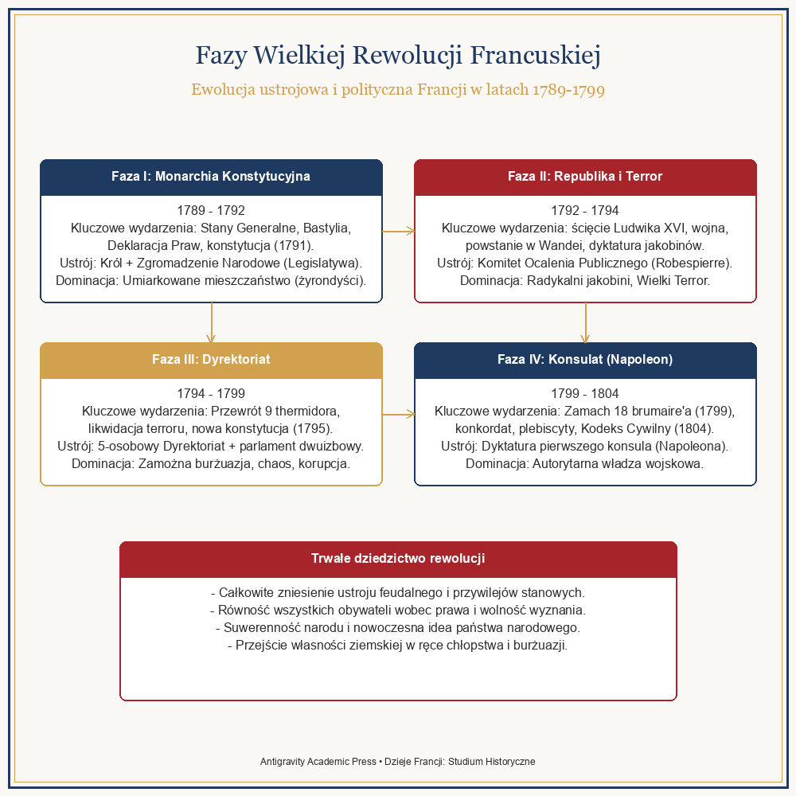
Podczas posiedzenia królewskiego 23 czerwca Ludwik XVI próbował narzucić swoją wolę, unieważniając uchwały z 17 czerwca i nakazując stanom powrót do osobnych obrad. Gdy król opuścił salę, a mistrz ceremonii, markiz de Dreux-Brézé, nakazał deputowanym rozejście się, hrabia Honoré Gabriel Riqueti de Mirabeau wypowiedział słynne słowa, które przeszły do historii jako manifest suwerenności parlamentarnej:
„Idź i powiedz swojemu panu, że jesteśmy tu z woli ludu i że ustąpimy tylko przed siłą bagnetów”.
Wobec determinacji Stanu Trzeciego oraz faktu, że coraz większa liczba deputowanych duchowieństwa i liberalnej szlachty (na czele z księciem Filipem Orleańskim) przyłączała się do wspólnych obrad, Ludwik XVI skapitulował. 27 czerwca nakazał pozostałym stanom połączenie się ze Stanem Trzecim. 9 lipca 1789 roku połączone izby ogłosiły się Narodowym Zgromadzeniem Konstytucyjnym (Assemblée nationale constituante), potocznie zwanym Konstytuantą. Rewolucja prawna dobiegła końca; absolutyzm ustąpił miejsca monarchii konstytucyjnej in statu nascendi.
Podczas gdy w Wersalu toczyły się debaty konstytucyjne, w Paryżu narastało napięcie społeczne i polityczne. Kryzys gospodarczy, spotęgowany katastrofalnymi zbiorami w 1788 roku, doprowadził do gwałtownego wzrostu cen chleba (w lipcu 1789 roku osiągnęły one najwyższy poziom w całym stuleciu). Paryski lud, składający się w większości z rzemieślników, czeladników i robotników przedmieść (późniejszych sankiulotów), żył w ciągłym strachu przed głodem oraz przed „spiskiem arystokratycznym”, który rzekomo miał na celu zagłodzenie stolicy w odwecie za poparcie dla Konstytuanty.
Obawy te zyskały realne podstawy, gdy król zaczął koncentrować wokół Paryża i Wersalu pułki wojskowe (głównie najemników szwajcarskich i niemieckich, uznawanych za bardziej lojalnych wobec korony). Decydującym impulsem do wybuchu powstania stała się dymisja niezwykle popularnego Jacques’a Neckera, ogłoszona 11 lipca. Dla paryżan był to jednoznaczny sygnał, że dwór przygotowuje zamach stanu i zamierza siłą rozpędzić Konstytuantę.
12 lipca w ogrodach Palais-Royal młody adwokat i dziennikarz Camille Desmoulins wygłosił płomienne przemówienie, wzywając lud do broni:
„Obywatele, nie ma chwili do stracenia! Dymisja Neckera to dzwon na trwogę przed nocą św. Bartłomieja dla patriotów! Dziś wieczorem wszystkie pułki szwajcarskie i niemieckie wyjdą z Pola Marsowego, aby nas wyrżnąć! Pozostaje nam tylko jedno wyjście: chwycić za broń!”.
W Paryżu rozpoczęły się spontaniczne demonstracje, które szybko przerodziły się w starcia z wojskiem (m.in. szarża regimentu Royal-Allemand księcia de Lambesc w ogrodzie Tuileries). Powstańcy plądrowali rogatki celne, niszcząc symbole ucisku fiskalnego, oraz poszukiwali broni i amunicji. W celu opanowania chaosu i zapobieżenia anarchii, paryscy elektorzy (którzy wybierali deputowanych do Stanów Generalnych) przejęli władzę w ratuszu (Hôtel de Ville), tworząc Stały Komitet (Comité permanent) oraz powołując milicję mieszczańską (późniejszą Gwardię Narodową), na czele której stanął bohater wojny o niepodległość Stanów Zjednoczonych, markiz de La Fayette.
Rano 14 lipca tłum powstańców wtargnął do Domu Inwalidów (Hôtel des Invalides), skąd zabrano około 30-40 tysięcy karabinów oraz kilka armat. Brakowało jednak prochu. Skierowano się zatem ku Bastylii - XIV-wiecznej twierdzy obronnej, która w powszechnej świadomości funkcjonowała jako ponury symbol królewskiego despotyzmu i ucisku. Choć w lipcu 1789 roku w jej lochach przebywało zaledwie siedmiu więźniów (czterech fałszerzy, dwóch chorych psychicznie i jeden arystokrata zamknięty na prośbę rodziny), twierdza dysponowała potężnymi murami i zapasem prochu, a jej działa były wycelowane w robotnicze przedmieście Saint-Antoine.
Gubernator Bastylii, Bernard-René de Launay, podjął negocjacje z delegatami Komitetu Stałego, obiecując, że nie otworzy ognia, jeśli nie zostanie zaatakowany. Jednak niecierpliwość tłumu zgromadzonego na dziedzińcach zewnętrznych doprowadziła do zerwania lin mostu zwodzonego. Gdy pierwsi powstańcy przedostali się na dziedziniec wewnętrzny, garnizon twierdzy (składający się głównie z inwalidów wojennych oraz niewielkiego oddziału Szwajcarów) otworzył ogień. Rozpoczęła się krwawa bitwa.
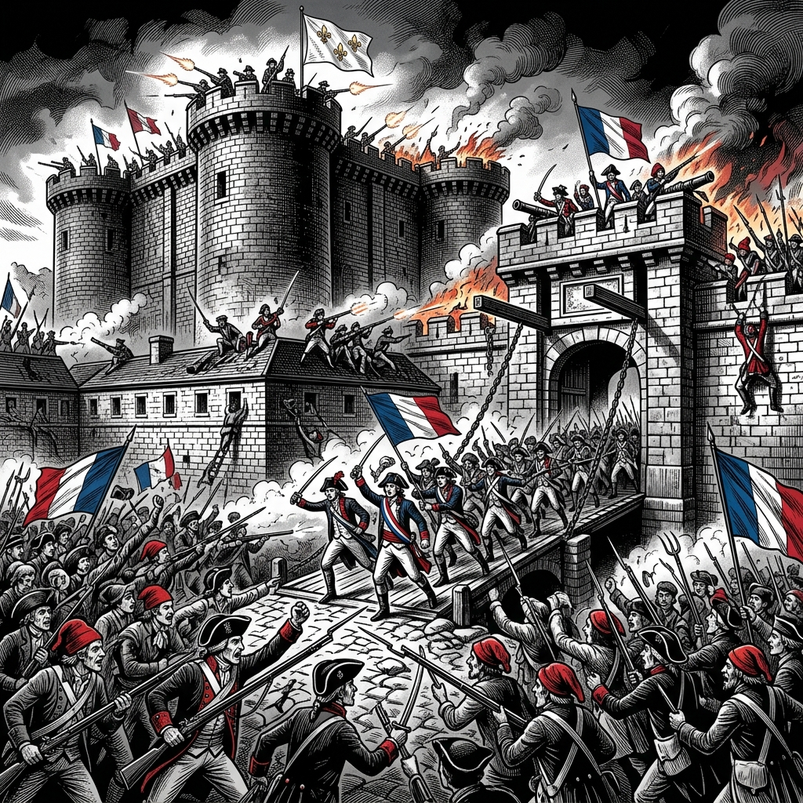
Szala zwycięstwa przechyliła się na stronę powstańców dopiero po przybyciu dezerterów z elitarnego pułku Gwardii Francuskiej (Gardes-françaises) pod dowództwem Pierre’a-Augustina Hulina. Żołnierze ci sprowadzili armaty zdobyte w Domu Inwalidów i skierowali je przeciwko bramie twierdzy. Widząc przygotowania do szturmu artyleryjskiego, de Launay skapitulował w zamian za obietnicę ocalenia życia dla siebie i swoich ludzi.
Obietnica ta nie została dotrzymana. Rozjuszony tłum, mszcząc się za śmierć około stu poległych powstańców, zamordował gubernatora de Launaya oraz Jacques’a de Flessellesa, burmistrza Paryża (prévôt des marchands), który próbował opóźnić wydawanie broni. Ich odcięte głowy zatknięto na piki i obnoszono w triumfalnym pochodzie ulicami miasta.
Zburzenie Bastylii miało kolosalne znaczenie polityczne i symboliczne. Gdy król, obudzony w nocy w Wersalu przez księcia de La Rochefoucauld-Liancourt, zapytał: „Więc to rewolta?”, usłyszał w odpowiedzi słynne:
„Nie, Najjaśniejszy Panie, to rewolucja”.
Ludwik XVI został zmuszony do kapitulacji. 17 lipca przybył do Paryża, gdzie w ratuszu odebrał od Bailly’ego (nowego mera Paryża) i La Fayette’a trójkolorową kokardę, powstałą z połączenia barw Paryża (niebieski i czerwony) z białym kolorem Burbonów. Gest ten sankcjonował podwójną suwerenność: królewską i ludową. Upadek Bastylii zapoczątkował także falę emigracji arystokracji (na czele z bratem króla, hrabią d’Artois) oraz tzw. rewolucję municypalną w całej Francji - w większości miast dawne władze patrycjuszowskie zostały zastąpione przez komitety rewolucyjne i oddziały Gwardii Narodowej.
Wydarzenia paryskie odbiły się szerokim echem na prowincji, gdzie nałożyły się na tradycyjne napięcia na tle agrarnym. W drugiej połowie lipca i na początku sierpnia 1789 roku wieś francuską ogarnęła fala paniki, znana w historiografii jako „Wielka Trwoga” (Grande Peur), genialnie przeanalizowana przez historyka Georges’a Lefebvre’a.
Plotka o zbliżających się bandach „bandyto-maruderów” lub obcych wojskach (angielskich, hiszpańskich czy sabaudzkich), rzekomo opłacanych przez uciekających arystokratów w celu zniszczenia zbiorów, rozprzestrzeniała się z zawrotną prędkością z parafii do parafii. Chłopi chwytali za broń (kosy, widły, strzelby), a gdy rzekomi bandyci nie nadchodzili, gniew i strach wiejskiej ludności obracały się przeciwko lokalnym panom feudalnym (seigneurs).
Tłumy chłopów oblegały zamki i dwory. Celem tych ataków nie była jednak fizyczna eliminacja szlachty, lecz zniszczenie archiwów dworskich, w których przechowywano pergaminy zawierające spisy powinności feudalnych, rent gruntowych, pańszczyzn i innych uciążliwych opłat (terriers). Jeśli właściciel stawiał opór, dochodziło do podpaleń zamków, a niekiedy także do samosądów.
Dla Konstytuanty, składającej się w większości z przedstawicieli burżuazji i liberalnej szlachty, dla których prawo własności było fundamentem ładu społecznego, rewolucja chłopska stanowiła śmiertelne zagrożenie. Zgromadzenie znalazło się w kleszczach: użycie wojska przeciwko chłopom mogłoby pchnąć prowincję w objęcia kontrrewolucji i zniszczyć sojusz antyfeudalny, z kolei bezczynność groziła całkowitą anarchią.
Rozwiązanie tego dylematu przyniosła słynna noc z 4 na 5 sierpnia 1789 roku. Zainicjowana przez przedstawicieli najwyższej arystokracji - wicehrabiego de Noailles oraz księcia d’Aiguillon (jednego z najbogatszych posiadaczy ziemskich we Francji) - debata przekształciła się w rodzaj zbiorowego entuzjazmu i „patriotycznego szaleństwa”. Kolejni deputowani szlacheccy i duchowni wchodzili na trybunę, aby zrzec się swoich odwiecznych przywilejów.
W dekretach uchwalonych w dniach 5-11 sierpnia Konstytuanta uroczyście ogłosiła, że „całkowicie niszczy reżim feudalny”. W rzeczywistości jednak diabeł tkwił w szczegółach prawnych, które precyzyjnie rozróżniały dwa rodzaje praw feudalnych:
| Rodzaj praw feudalnych | Zakres pojęciowy | Decyzja Konstytuanty |
|---|---|---|
| Feudalizm osobisty (féodalité dominante) | Poddaństwo, pańszczyzna, prawo polowania, monopole dworskie (banalités), sądownictwo patrymonialne. | Zniesione natychmiastowo i bez odszkodowania. |
| Feudalizm rzeczowy (féodalité contractante) | Renty feudalne, czynsze (cens), daniny w naturze (champart), uwarunkowane posiadaniem ziemi. | Uznane za legalną własność prywatną; podlegały wykupowi (rachat) przez chłopów. |
Ponadto dekrety sierpniowe zniosły dziesięcinę na rzecz Kościoła, przywileje podatkowe prowincji i miast, a także zasadę kupowalności urzędów (vénalité des offices), otwierając wszystkim obywatelom, bez względu na pochodzenie, dostęp do wszelkich stanowisk cywilnych i wojskowych. Był to rzeczywisty koniec społeczeństwa stanowego. Narodzinom nowoczesnego, egalitarnego społeczeństwa obywatelskiego towarzyszyło jednak rozczarowanie chłopów, których nie stać było na wykup rent gruntowych (co doprowadziło do kolejnych napięć na wsi, rozwiązanych ostatecznie dopiero przez jakobinów w 1793 roku).
Ukoronowaniem rewolucyjnego dzieła lata 1789 roku było uchwalenie 26 sierpnia Deklaracji Praw Człowieka i Obywatela (Déclaration des droits de l’homme et du citoyen). Projekt dokumentu, redagowany przez komisję Konstytuanty, opierał się w dużej mierze na przedłożeniach La Fayette’a (który konsultował się z Thomasem Jeffersonem, ówczesnym ambasadorem USA w Paryżu) oraz koncepcjach Sieyèsa i Mouniera.
Deklaracja, składająca się ze wstępu i 17 artykułów, stanowiła genialną syntezę filozofii oświeceniowej (szczególnie teorii umowy społecznej Johna Locke’a i Jean-Jacques’a Rousseau, trójpodziału władzy Monteskiusza oraz koncepcji fizjokratycznych). Choć inspirowana amerykańską Deklaracją Niepodległości z 1776 roku oraz konstytucjami poszczególnych stanów, francuska deklaracja miała charakter znacznie bardziej uniwersalny - nie odnosiła się jedynie do konkretnego czasu i narodu, lecz do „człowieka w ogóle”.
Analiza kluczowych artykułów Deklaracji ujawnia rewolucyjną redefinicję relacji między jednostką a państwem:
W debacie historiograficznej Deklaracja Praw Człowieka i Obywatela jest interpretowana dwojako (Tocqueville, 1856; Furet, 1978). Z jednej strony, historycy o orientacji liberalnej (np. François Furet) widzą w niej narodziny nowoczesnej demokracji, opartej na prawach jednostki i pluralizmie. Z drugiej strony, historiografia marksistowska (np. Albert Soboul) podkreślała jej klasowy, burżuazyjny charakter, wskazując na sprzeczność między proklamowaną równością prawną a faktyczną nierównością majątkową, co najdobitniej przejawiło się w późniejszym podziale obywateli na „aktywnych” (płacących podatki i posiadających prawa wyborcze) i „biernych”.
Uchwalenie Deklaracji nie oznaczało jednak jej natychmiastowego wejścia w życie. Ludwik XVI, rezydujący w Wersalu i znajdujący się pod wpływem partii dworskiej, odmawiał sankcji zarówno dla dekretów sierpniowych, jak i dla samej Deklaracji. Impas ten został przełamany dopiero w wyniku kolejnego zrywu ludowego - marszu kobiet na Wersal w dniach 5-6 października 1789 roku, który zmusił rodzinę królewską oraz Konstytuantę do przeniesienia się do Paryża, pod bezpośredni nadzór rewolucyjnej ulicy.
Rok 1789 zamknął epokę klasycznego absolutyzmu we Francji. Poprzez sekwencję wydarzeń - od rewolucji prawnej w sali do gry w piłkę, przez ludową insurekcję pod Bastylią, antyfeudalną rewolucję na wsi, aż po uniwersalny manifest wolności, jakim była Deklaracja - stworzono ramy instytucjonalne i ideowe, na których opiera się współczesne rozumienie demokracji, państwa prawa i praw człowieka. Był to bez wątpienia akt narodzin nowoczesności.
Próba wyjścia z impasu ustrojowego, jaką stanowiła monarchia konstytucyjna sankcjonowana przez Konstytucję z 3 września 1791 roku, od samego początku obciążona była strukturalną sprzecznością. Monarcha, którego władza dotychczas opierała się na transcendencji i legitymizacji dynastycznej, został sprowadzony do roli „pierwszego urzędnika państwowego”, podporządkowanego suwerennej woli Narodu reprezentowanego przez Zgromadzenie Prawodawcze (Legislatywę). Kluczowym momentem, który ostatecznie zniweczył szanse na stabilizację tego modelu, była nieudana ucieczka Ludwika XVI i rodziny królewskiej z Paryża w nocy z 20 na 21 czerwca 1791 roku (tzw. ucieczka do Varennes).
W historiografii wydarzenie to, analizowane m.in. przez Timothy’ego Tacketta, uznawane jest za punkt zwrotny o fundamentalnym znaczeniu psychologicznym i politycznym. Ucieczka monarchy nie była jedynie taktycznym błędem, lecz jawnym zerwaniem paktu z rewolucyjnym narodem. W oczach opinii publicznej król przestał być „ojcem narodu”, a stał się wiarołomcą i spiskowcem dążącym do odzyskania władzy absolutnej za pomocą obcych bagnetów. Pozostawiony przez Ludwika XVI manifest, w którym potępiał on reformy rewolucyjne i kwestionował legalność dekretów Zgromadzenia Narodowego, stanowił jednoznaczny dowód na fikcyjność jego lojalności wobec konstytucji.
Aresztowanie króla w Varennes i jego upokarzający powrót do Paryża w głębokim milczeniu zgromadzonych tłumów zapoczątkowały proces radykalnej desakralizacji władzy królewskiej. Zgromadzenie Konstytucyjne, pragnąc ocalić chwiejną konstrukcję monarchii konstytucyjnej, uciekło się do fikcji prawnej, ogłaszając, że król został „porwany”. Ta próba tuszowania rzeczywistości wywołała jednak głęboki rozłam w obozie rewolucyjnym. Doprowadziło to do secesji umiarkowanych rewolucjonistów z klubu jakobinów i utworzenia konserwatywnego klubu feuillantów (Antoine Barnave, Jean Sylvain Bailly, markiz de La Fayette). Manifestacja na Polu Marsowym (17 lipca 1791 roku), zorganizowana przez kordelierów pod hasłem detronizacji króla i proklamowania republiki, zakończyła się masakrą demonstrantów dokonaną przez Gwardię Narodową pod dowództwem La Fayette’a. Wydarzenie to unaoczniło, że dotychczasowy konsensus rewolucyjny uległ bezpowrotnemu zniszczeniu, a przemoc stała się immanentnym elementem walki politycznej wewnątrz samego obozu rewolucyjnego.
Druga faza rewolucji, charakteryzująca się eskalacją napięć międzynarodowych, została ukształtowana przez wybuch konfliktu zbrojnego z mocarstwami europejskimi. Paradoksalnie, wojna leżała w interesie skrajnie różnych sił politycznych. Ludwik XVI i dwór królewski upatrywali w konflikcie zbrojnym szansy na klęskę rewolucyjnej Francji i restytucję ancien régime’u przez wojska austriackie i pruskie. Z kolei żyrondyści (skupieni wokół Jacques’a Pierre’a Brissota) traktowali wojnę jako instrument konsolidacji wewnętrznej rewolucji oraz sposób na eksport jej idei poza granice kraju. Przeciwko wojnie oponował nieliczny wówczas odłam jakobinów z Maximilienem Robespierre’em na czele, który ostrzegał przed niebezpieczeństwem militaryzacji republiki i dyktatury wojskowej, wypowiadając prorocze słowa: „Nikt nie kocha uzbrojonych misjonarzy”.
Wypowiedzenie wojny „królowi Czech i Węgier” (Austrii) 20 kwietnia 1792 roku zapoczątkowało trwający blisko ćwierć wieku okres wojen rewolucyjnych i napoleońskich. Pierwsze niepowodzenia militarne armii francuskiej, spowodowane dezorganizacją korpusu oficerskiego (zdominowanego dotychczas przez arystokrację), wywołały w Paryżu atmosferę paniki i podejrzliwości. Oskarżenia o zdradę i istnienie „komitetu austriackiego” na dworze królewskim stały się powszechne. Napięcie osiągnęło apogeum, gdy pod koniec lipca 1792 roku opublikowano manifest dowódcy wojsk koalicyjnych, księcia Karola Wilhelma Brunszwickiego. Dokument ten, grożący Paryżowi „całkowitym zniszczeniem”, jeśli ucierpi rodzina królewska, odniósł skutek odwrotny do zamierzonego. Stał się on ostatecznym dowodem na zmowę monarchy z wrogiem zewnętrznym.
Inicjatywę przejęły paryskie sekcje sankiulockie oraz przybyli do stolicy ochotnicy z prowincji (tzw. federaci, którzy przynieśli do Paryża pieśń bojową Armii Renu - Marsyliankę). W nocy z 9 na 10 sierpnia 1792 roku powołano rewolucyjną Komunę Paryża, która zastąpiła dotychczasowe władze miejskie. Rano 10 sierpnia doszło do szturmu na pałac Tuileries, broniony przez wierną królowi Gwardię Szwajcarską. Krwawa rzeź obrońców i determinacja powstańców zmusiły Zgromadzenie Prawodawcze do zawieszenia Ludwika XVI w jego funkcjach konstytucyjnych oraz do uwięzienia rodziny królewskiej w twierdzy Temple.
Obalenie monarchii otworzyło drogę do radykalizacji rewolucji. Pod wpływem paniki wywołanej upadkiem twierdzy Verdun, na początku września 1792 roku doszło do tzw. masakr wrześniowych, podczas których tłum paryski, za cichym przyzwoleniem ministra sprawiedliwości Georges’a Dantona, dokonał samosądu na ponad tysiącu więźniów podejrzewanych o udział w spisku kontrrewolucyjnym. W tym samym czasie, 20 września 1792 roku, pod Valmy doszło do starcia artyleryjskiego, w którym wojska rewolucyjne pod dowództwem generałów Dumourieza i Kellermanna powstrzymały marsz armii pruskiej na Paryż. Następnego dnia, 21 września 1792 roku, nowo wybrany Konwent Narodowy uroczyście proklamował powstanie Pierwszej Republiki Francuskiej.
Proklamowanie republiki postawiło przed Konwentem Narodowym konieczność rozstrzygnięcia losu uwięzionego monarchy. Proces Ludwika Kapeta (jak odtąd nazywano króla) stał się nie tylko problemem prawnym, ale przede wszystkim fundamentalnym sporem politycznym i ideologicznym pomiędzy dwoma głównymi ugrupowaniami Konwentu: żyrondystami a jakobinami (zwanymi Górą).
Żyrondyści, obawiając się dalszej radykalizacji mas ludowych i izolacji międzynarodowej Francji, dążyli do odwleczenia procesu, a później do ocalenia życia monarchy (proponując m.in. odwołanie się do referendum ludowego lub bezterminowe uwięzienie). Jakobini natomiast traktowali proces króla jako akt założycielski nowego ładu republikańskiego. Kluczową rolę w debacie odegrali Louis Antoine de Saint-Just oraz Maximilien Robespierre. Saint-Just w swoim słynnym przemówieniu z 13 listopada 1792 roku argumentował, że króla nie należy sądzić według przepisów prawa cywilnego, lecz jako wroga zewnętrznego i uzurpatora suwerenności ludu:
„Nie można panować bezkarnie. Każdy król jest buntownikiem i uzurpatorem”.
Odkrycie w pałacu Tuileries tajnej sejfy (tzw. armoire de fer) zawierającej korespondencję Ludwika XVI z emigrantami i obcymi dworami ostatecznie przesądziło o winie monarchy. Konwent, konstytuując się jako trybunał sądowy, uznał Ludwika Kapeta winnym zdrady stanu i spisku przeciwko bezpieczeństwu państwa.
Głosowanie nad wymiarem kary, które odbyło się w styczniu 1793 roku, miało charakter imienny i publiczny. Ostatecznie większość deputowanych opowiedziała się za karą śmierci bez odroczenia. 21 stycznia 1793 roku na Placu Rewolucji (obecnie Plac Zgody) Ludwik XVI został ścięty na gilotynie. Egzekucja ta stanowiła ostateczne zerwanie ciągłości historycznej z tradycją monarchiczną i sakralnym charakterem państwa francuskiego. Wydarzenie to wywołało szok na dworach europejskich i doprowadziło do sformowania I koalicji antyfrancuskiej, w skład której weszły m.in. Wielka Brytania, Hiszpania, Holandia oraz państwa włoskie.
Wiosna 1793 roku przyniosła młodej republice kryzys o charakterze egzystencjalnym. Na frontach zewnętrznych armia francuska ponosiła klęski, a generał Dumouriez, po przegranej bitwie pod Neerwinden, dokonał zdrady i przeszedł na stronę austriacką. W tym samym czasie wewnątrz kraju wybuchło powstanie w Wandei (marzec 1793 roku).
Historiografia przez dziesięciolecia spierała się o charakter rewolty wandejskiej. Badacze o proweniencji jakobińskiej (np. Albert Soboul) widzieli w niej zacofany, klerykalno-szlachecki spisek przeciwko postępowi. Nowsze badania, w tym prace Jean-Clémenta Martina, wskazują na znacznie bardziej złożone podłoże społeczno-gospodarcze. Powstanie wybuchło jako bezpośrednia reakcja na dekret Konwentu o poborze 300 tysięcy rekruta (levée en masse), który uderzał w tradycyjny model życia wiejskiego. Chłopi wandejscy, dotknięci pogorszeniem sytuacji materialnej po likwidacji dziesięcin (które zostały zastąpione nowymi podatkami państwowymi) oraz prześladowaniem księży niezaprzysiężonych (którzy odmówili złożenia przysięgi na konstytucję cywilną kleru), wystąpili w obronie swojej tożsamości religijnej i lokalnej autonomii. Powstanie szybko przekształciło się w krwawą wojnę domową, w której Wielka Armia Katolicka i Królewska rzuciła wyzwanie siłom rządowym.
W obliczu śmiertelnego zagrożenia państwa, Konwent zaczął tworzyć instytucje nadzwyczajne, kładąc podwaliny pod system dyktatury rewolucyjnej:
Narastający kryzys doprowadził do ostatecznej rozprawy z żyrondystami. Oskarżani przez sekcje paryskie o nieudolność w prowadzeniu wojny, sprzyjanie federalizmowi oraz dążenie do rozbicia jedności republiki, żyrondyści zostali obaleni podczas powstania sankiulotów w dniach 31 maja - 2 czerwca 1793 roku. Otoczony przez uzbrojony tłum Konwent wydał dekret o aresztowaniu 29 swoich żyrondystycznych deputowanych. Wydarzenie to zapoczątkowało okres niepodzielnych rządów jakobinów.
Przejęcie pełni władzy przez jakobinów doprowadziło do reorganizacji Komitetu Ocalenia Publicznego, w którym czołową rolę zaczął odgrywać Maximilien Robespierre (od lipca 1793 roku). Jakobini zawiesili wejście w życie nowo uchwalonej, niezwykle demokratycznej Konstytucji Roku I (czerwiec 1793 roku), uznając, że w warunkach wojny i kontrrewolucji rząd musi mieć charakter rewolucyjny, czyli nadzwyczajny i pozakonstytucyjny. Dekretem z 10 października 1793 roku Konwent ogłosił, że „rząd Francji będzie rewolucyjny aż do zawarcia pokoju”.
Filozoficznym fundamentem dyktatury jakobińskiej stała się doktryna Robespierre’a, oparta na specyficznej interpretacji koncepcji umowy społecznej i woli powszechnej Jean-Jacques’a Rousseau. Robespierre dokonał syntezy pojęć „cnoty” (vertu) oraz „terroru” (terreur). W swoim słynnym przemówieniu z 5 lutego 1794 roku (17 pluviôse’a roku II) wyjaśniał:
„Jeśli sprężyną rządu ludowego w czasie pokoju jest cnota, to sprężyną tego rządu w czasie rewolucji jest zarazem cnota i terror: cnota, bez której terror jest zgubny; terror, bez którego cnota jest bezsilna. Terror jest niczym innym jak sprawiedliwością niezwłoczną, surową, nieugiętą; jest zatem emanacją cnoty”.
W tej optyce terror nie był narzędziem bezprawia, lecz moralnym obowiązkiem obrony republiki przed „wrogami wolności”. Państwo jakobińskie rościło sobie prawo do totalnej kontroli nie tylko nad działaniami obywateli, ale również nad ich sumieniami i postawami moralnymi.
Prawnym instrumentem eliminacji przeciwników politycznych stała się Ustawa o podejrzanych (Loi des suspects) uchwalona 17 września 1793 roku. Jej niezwykle szerokie i nieprecyzyjne sformułowania pozwalały na aresztowanie każdego, kto „poprzez swoje zachowanie, powiązania, słowa lub pisma okazał się stronnikiem tyranii czy federalizmu”. Pod definicję podejrzanego podpadali również ci, którzy nie potrafili wykazać się posiadaniem certyfikatu lojalności obywatelskiej (certificat de civisme) lub nie wywiązywali się z obowiązków publicznych.
| Instytucja / Akt prawny | Data uchwalenia | Główne kompetencje i cel |
|---|---|---|
| Komitet Ocalenia Publicznego | 6 kwietnia 1793 | Faktyczna władza wykonawcza, koordynacja obrony państwa, kontrola nad ministrami. |
| Ustawa o podejrzanych | 17 września 1793 | Szeroka definicja wrogów rewolucji, podstawa prawna do masowych aresztowań. |
| Ustawa z 22 prairiala (rok II) | 10 czerwca 1794 | Likwidacja instytucji obrońcy, zniesienie przesłuchania świadków, jedyna kara - śmierć (Wielki Terror). |
Eskalacja terroru osiągnęła swoje apogeum po uchwaleniu ustawy z 22 prairiala roku II (10 czerwca 1794 roku), która zapoczątkowała okres tzw. Wielkiego Terroru (Grande Terreur). Ustawa ta zreorganizowała Trybunał Rewolucyjny, pozbawiając oskarżonych prawa do obrońcy oraz eliminując instytucję przesłuchania świadków, o ile sędziowie dysponowali „dowodami moralnymi”. Jedynym możliwym wyrokiem w przypadku uznania winy stała się kara śmierci. W ciągu zaledwie 46 dni obowiązywania tej ustawy w Paryżu zgilotynowano więcej osób niż w ciągu całego poprzedzającego roku działania Trybunału.
Wielkiemu Terrorowi towarzyszyła brutalna rozprawa z powstaniem w Wandei. Po rozbiciu głównych sił powstańczych pod Savenay (grudzień 1793 roku), wojska republikańskie pod dowództwem generała Louisa Marie Turreau przystąpiły do systematycznej pacyfikacji regionu za pomocą tzw. kolumn piekielnych (colonnes infernales). Masowe egzekucje (m.in. utopienia w Nantes organizowane przez komisarza Jean-Baptiste’a Carriera) oraz niszczenie całych wsi doprowadziły do śmierci dziesiątek tysięcy mieszkańców Wandei. Wokół tych wydarzeń w nowożytnej historiografii (np. Reynald Secher) rozgorzał ostry spór o to, czy pacyfikacja ta nosiła znamiona pierwszego nowoczesnego ludobójstwa (populicide), czy też stanowiła skrajny przypadek brutalnej walki z rebelią w warunkach wojny totalnej.
Rządy Robespierre’a opierały się na coraz węższej bazie społecznej i politycznej. Dążąc do absolutnej jedności ideologicznej, triumwirat (Robespierre, Saint-Just, Georges Couthon) przystąpił do eliminacji konkurencyjnych frakcji wewnątrz samego obozu rewolucyjnego.
Wiosną 1794 roku uderzono najpierw w lewicową opozycję hebertystów (skupioną wokół Jacques’a Héberta i klubu kordelierów), którzy domagali się zaostrzenia terroru, radykalnej dechrystianizacji kraju oraz wprowadzenia drastycznych ograniczeń własności prywatnej. Niedługo potem, w kwietniu 1794 roku, ten sam los spotkał tzw. pobłażliwych (indulgents) z Georges’em Dantonem i Camille’em Desmoulinsem na czele. Dantoniści postulowali złagodzenie terroru, przywrócenie wolności prasy i podjęcie rozmów pokojowych z koalicją. Likwidacja obu skrajnych skrzydeł pozbawiła Robespierre’a poparcia zarówno ze strony radykałów z paryskich sekcji (sankiulotów), jak i umiarkowanych deputowanych Konwentu, którzy zaczęli obawiać się o własne życie.
Izolację dyktatora pogłębiła jego polityka religijna. Robespierre, odrzucając zarówno ateistyczny materializm hebertystów, jak i tradycyjny katolicyzm, podjął próbę narzucenia narodowi nowego kultu państwowego - Kultu Istoty Najwyższej (Culte de l’Être suprême). Uroczyste święto zorganizowane 8 czerwca 1794 roku, podczas którego Robespierre osobiście przewodniczył ceremoniom jako swego rodzaju arcykapłan, wywołało ironię i zaniepokojenie wśród dotychczasowych sojuszników, dostrzegających w tym przejaw cezaropapizmu i dążenia do dyktatury osobistej.
Ostateczny kryzys nastąpił latem 1794 roku. Zwycięstwo armii republikańskiej pod Fleurus (26 czerwca 1794 roku) usunęło bezpośrednie zagrożenie zewnętrzne dla Francji, co pozbawiło rządy rewolucyjne ich głównego uzasadnienia. Dalsze utrzymywanie terroru stało się dla większości społeczeństwa oraz deputowanych Konwentu nie do zniesienia. W łonie samego Komitetu Ocalenia Publicznego i Komitetu Bezpieczeństwa Powszechnego zawiązał się spisek przeciwko Robespierre’owi, w którym kluczową rolę odegrali politycy zagrożeni oskarżeniami o nadużycia na prowincji (m.in. Joseph Fouché, Jean-Lambert Tallien, Paul Barras).
26 lipca 1794 roku (8 thermidora roku II) Robespierre wygłosił w Konwencie przemówienie, w którym zapowiedział rychłe ujawnienie kolejnego spisku i ukaranie zdrajców, odmawiając jednak podania ich nazwisk. Wywołało to paraliżujący strach wśród deputowanych, którzy zdali sobie sprawę, że każdy z nich może znaleźć się na liście proskrypcyjnej. Następnego dnia, 9 thermidora (27 lipca), gdy Saint-Just próbował odczytać swój raport w obronie Robespierre’a, został zakrzyczany przez zgromadzonych. Konwent w atmosferze chaosu uchwalił dekret o aresztowaniu Robespierre’a, jego brata Augustina, Saint-Justa, Couthona oraz Philippe’a Le Basa.
Mimo próby buntu podjętej przez Komunę Paryża i wierne jej oddziały Gwardii Narodowej, które uwolniły aresztowanych i przewiozły ich do ratusza (Hôtel de Ville), siły wierne Konwentowi pod dowództwem Barrasa opanowały sytuację w nocy z 9 na 10 thermidora. Robespierre został ranny w szczękę (prawdopodobnie w wyniku próby samobójczej lub strzału żandarma Merdy).
Po południu 10 thermidora (28 lipca 1794 roku) Maximilien Robespierre oraz 21 jego najbliższych współpracowników zostali bez procesu zgilotynowani na Placu Rewolucji. W kolejnych dniach stracono kilkudziesięciu kolejnych członków Komuny Paryża. Przewrót 9 thermidora położył kres dyktaturze jakobinów i okresowi Wielkiego Terroru, otwierając drogę do rządów dyrektoriatu i stopniowego demontażu rewolucyjnych instytucji nadzwyczajnych na rzecz konsolidacji władzy przez nową, burżuazyjną elitę polityczną.
Upadek Maksymiliana Robespierre’a 9 termidora roku II (27 lipca 1794 roku) nie był jedynie pałacowym przewrotem w łonie Konwentu Narodowego; stanowił on głęboki przełom systemowy, który zapoczątkował proces demontażu rewolucyjnej dyktatury i poszukiwania nowej formuły stabilizacji politycznej. Koalicja termidoriańska - konglomerat skrajnie zróżnicowany, skupiający zarówno dawnych terrorystów (takich jak Jean-Lambert Tallien, Joseph Fouché czy Paul Barras), jak i umiarkowanych deputowanych „Równiny” - stanęła przed fundamentalnym dylematem: jak zakończyć rewolucję, nie rezygnując zarazem z jej podstawowych zdobyczy ustrojowych i antyfeudalnych.
W historiografii, zwłaszcza w klasycznym ujęciu Alberta Soboula, reakcja termidoriańska interpretowana była jako odwet burżuazji na sankiulotach i powrót do porządku opartego na cenzusie majątkowym. Z kolei badacze nurtu rewizjonistycznego, na czele z François Furetem, kładli nacisk na próbę wyjścia z „kolein terroru” i poszukiwanie liberalnego konsensusu, który został wcześniej przerwany przez jakobiński radykalizm. Istotnie, pierwszym krokiem termidorian było systematyczne paraliżowanie instytucji terroru. Zreorganizowano Komitet Ocalenia Publicznego, pozbawiając go monopolu władzy wykonawczej, zlikwidowano trybunały rewolucyjne, a osławione prawo z 22 preriala zostało uchylone. Zamknięcie klubu jakobinów w listopadzie 1794 roku przypieczętowało kres dominacji radykalnej lewicy.
Demontażowi struktur jakobińskich towarzyszył jednak głęboki kryzys społeczny i moralny. Reakcja termidoriańska przyniosła ze sobą tzw. biały terror (Terreur blanche), szczególnie krwawy na południu Francji (m.in. w Lyonie, Marsylii i Tulonie), gdzie rojaliści i ofiary dawnych prześladowań dokonywali masowych mordów na jakobinach i sankiulotach. W Paryżu symbolem nowych czasów stała się tzw. jeunesse dorée (złota młodzież) pod przywództwem Frérona - młodzi ludzie z bogatych domów, którzy na ulicach demonstracyjnie lżyli i bili dawnych rewolucjonistów.
Likwidacja gospodarki kierowanej, w tym zniesienie cen maksymalnych (loi du maximum) w grudniu 1794 roku, doprowadziła do natychmiastowej katastrofy aprowizacyjnej i hiperinflacji. Zima roku III (1794-1795) zapisała się w pamięci zbiorowej jako czas skrajnego głodu i nędzy klas ludowych, kontrastujący z ostentacyjnym bogactwem nowobogackiej burżuazji, dorabiającej się na spekulacji i dostawach dla wojska. Desperacja paryskiego plebsu doprowadziła do ostatnich wielkich zrywów rewolucyjnych: powstań 12 germinala i 1 preriala roku III (wiosna 1795 roku), w których żądano „chleba i konstytucji z 1793 roku”. Oba te wystąpienia zostały krwawo stłumione przez wojsko, co ostatecznie złamało polityczną siłę sankiulotów i utorowało drogę do uchwalenia nowej ustawy zasadniczej.
Uchwalona 22 sierpnia 1795 roku Konstytucja Roku III była bezpośrednią odpowiedzią na doświadczenia dyktatury jakobińskiej oraz zagrożenie powrotem absolutyzmu. Twórcy nowego ustroju, tacy jak Boissy d’Anglas, kierowali się doktryną, według której krajem powinni rządzić ludzie posiadający własność, co miało gwarantować porządek i odpowiedzialność. Boissy d’Anglas pisał wprost: „Kraj rządzony przez właścicieli znajduje się w porządku społecznym; ten, w którym rządzą niewłaściciele, znajduje się w stanie natury”.
W celu uniknięcia koncentracji władzy w rękach jednej instytucji lub jednostki, wprowadzono rygorystyczny i skomplikowany podział władzy, który w praktyce okazał się dysfunkcjonalny:
Słabość strukturalna tego systemu polegała na braku jakichkolwiek mechanizmów koncyliacyjnych w przypadku konfliktu między władzą ustawodawczą a wykonawczą. Dyrektoriat nie miał prawa rozwiązywać izb, a parlament nie mógł odwołać dyrektorów (poza procedurą oskarżenia przed Najwyższym Trybunałem). W efekcie stabilność reżimu była nieustannie zagrożona. Aby utrzymać się przy władzy w obliczu rosnącej popularności zarówno rojalistów, jak i neojakobinów, termidorianie musieli uciekać się do permanentnego łamania własnego prawa poprzez zamachy stanu (coups d’état).
Już na samym początku, obawiając się zwycięstwa rojalistów w pierwszych wyborach, Konwent uchwalił tzw. dekret o dwóch trzecich (décret des deux tiers), nakazujący, aby 2/3 nowego parlamentu stanowili dotychczasowi członkowie Konwentu. Wywołało to zbrojne powstanie rojalistów 13 vendémiaire’a roku IV (5 października 1795 roku), stłumione bezwzględnie przez młodego generała Napoleona Bonapartego przy użyciu artylerii. Kolejne lata upływały pod znakiem tzw. polityki huśtawki (politique de la bascule). Gdy w wyborach roku V (1797) zwyciężyli rojaliści, dyrektorzy (Barras, Reubell, La Revellière-Lépeaux) przy pomocy wojska przeprowadzili zamach stanu 18 fructidora (4 września 1797 roku), unieważniając mandaty monarchistów i deportując wielu z nich do Gujany. Gdy z kolei w roku VI (1798) sukces odniosła lewica jakobińska, Dyrektoriat dokonał zamachu 22 floréala (11 maja 1798 roku), bezprawnie eliminując neojakobińskich deputowanych z parlamentu. System ten stracił jakąkolwiek legitymizację demokratyczną, stając się dyktaturą oligarchiczną chronioną przez bagnety.
Rządy Dyrektoriatu przypadły na okres bezprecedensowej anarchii monetarnej i gospodarczej. Kluczowym elementem tego kryzysu była ostateczna i spektakularna śmierć asygnaty (assignat). Pieniądz ten, pierwotnie pomyślany jako obligacja zabezpieczona na dobrach narodowych (biens nationaux), na skutek niekontrolowanego druku mającego sfinansować wysiłek wojenny Republiki, stracił wszelką wartość. Na początku 1796 roku realna wartość asygnat wynosiła niespełna 0,5% ich wartości nominalnej.
W lutym 1796 roku rząd podjął decyzję o zaprzestaniu druku asygnat i uroczystym zniszczeniu płyt drukarskich na placu Vendôme. Próba zastąpienia ich nowym papierowym pieniądzem - mandatami terytorialnymi (mandats territoriaux) - zakończyła się błyskawicznym fiaskiem w ciągu zaledwie kilku miesięcy. W lutym 1797 roku Dyrektoriat został zmuszony do ogłoszenia powrotu do waluty kruszcowej (złota i srebra) oraz unieważnienia wszelkich papierowych środków płatniczych.
Przejście na walutę metaliczną miało dramatyczne konsekwencje społeczne i makroekonomiczne:
Kryzys ten stał się pożywką dla radykalnych ruchów społecznych. Wiosną 1796 roku François Noël „Gracchus” Babeuf zorganizował Sprzysiężenie Równych (Conjuration des Égaux). Babeuf, uznawany przez wielu historyków (w tym przez Maurice’a Dommangeta) za pioniera nowoczesnego komunizmu, sformułował program radykalnego egalitaryzmu, postulując zniesienie własności prywatnej, wspólną uprawę ziemi i centralną dystrybucję dóbr. Sprzysiężenie, oparte na konspiracyjnej strukturze awangardy rewolucyjnej, zostało rozbite przez policję Dyrektoriatu (dzięki zdradzie jednego ze spiskowców), a sam Babeuf został zgilotynowany w maju 1797 roku. Mimo klęski, idee babuwizmu wywarły potężny wpływ na XIX-wieczny ruch socjalistyczny i marksistowski.
W miarę jak instytucje cywilne traciły autorytet, a społeczeństwo pogrążało się w apatii, jedyną spójną, zorganizowaną i sprawnie funkcjonującą strukturą w państwie stała się armia. Proces jej transformacji od rewolucyjnego zaciągu ochotniczego z lat 1792-1793 (levée en masse) do profesjonalnego wojska lojalnego wobec swoich dowódców, a nie wobec rządu w Paryżu, miał kluczowe znaczenie dla losów Francji i Europy.
Wprowadzone w 1798 roku prawo Jourdana (loi Jourdan-Delbrel) ustanowiło powszechny obowiązek służby wojskowej, co zapewniło Republice stały dopływ rekruta. Jednocześnie jednak armia ta uległa głębokiej przemianie mentalnej. Wojna przestała być jedynie defensywną obroną ojczyzny; stała się źródłem łupów, awansów i prestiżu. Koncepcja, że „wojna powinna żywić wojnę” (la guerre doit nourrir la guerre), sformułowana przez Dyrektoriat w celu odciążenia skarbu państwa, sprawiła, że armie francuskie operujące we Włoszech czy w Niemczech stały się samowystarczalnymi podmiotami gospodarczymi i politycznymi. Generałowie przesyłali do Paryża miliony w złocie oraz zrabowane dzieła sztuki, co dawało im potężną kartę przetargową w relacjach z rządem.
Najbardziej jaskrawym przykładem tego zjawiska była kampania włoska Napoleona Bonapartego w latach 1796-1797. Młody generał nie tylko prowadził genialne operacje militarne przeciwko Austrii, ale również samodzielnie prowadził politykę zagraniczną. Bez konsultacji z Dyrektoriatem narzucił Austriakom warunki rozejmu w Leoben, a następnie podpisał pokój w Campo Formio (17 października 1797 roku), który dokonał rewolucyjnego podziału terytorialnego w północnych Włoszech, likwidując m.in. Republikę Wenecką. Bonaparte tworzył „republiki siostrzane” (np. Republikę Cisalpińską), nadawał im konstytucje i mianował ich władze, zachowując się jak suwerenny władca.
Dyrektoriat, świadomy zagrożenia płynącego ze strony ambitnych wodzów (takich jak Bonaparte, Hoche czy Moreau), był jednocześnie od nich całkowicie uzależniony. Armia była niezbędna do tłumienia powstań wewnętrznych (Wandea, szuanie, rozruchy w Paryżu) oraz do przeprowadzania wspomnianych zamachów stanu. Kiedy w 1799 roku druga koalicja antyfrancuska zaczęła odnosić sukcesy militarne, a kryzys wewnętrzny osiągnął apogeum, powrót Bonapartego z Egiptu został powitany przez opinię publiczną jako przyjście zbawiciela, zdolnego zaprowadzić porządek. Zamach stanu 18 brumaire’a roku VIII (9 listopada 1799 roku), zorganizowany przez jednego z dyrektorów, Emmanuela-Josepha Sieyèsa, przy użyciu bagnetów grenadierów Bonapartego, położył kres rządom Dyrektoriatu i zapoczątkował epokę Konsulatu, będącą w istocie dyktaturą wojskową ubraną w rzymski kostium ustrojowy.
Wymiar geopolityczny rewolucji francuskiej polegał na całkowitym zniszczeniu tradycyjnego, XVIII-wiecznego systemu równowagi sił (balance of power), wyrosłego z traktatów westfalskich. Rewolucyjna Francja, odrzucając zasady legitymizmu i dynastycznej dyplomacji, wprowadziła do stosunków międzynarodowych ideę suwerenności narodu oraz prawo do samookreślenia ludów (co początkowo przejawiało się w przyłączaniu terytoriów na podstawie plebiscytów, jak w przypadku Awinionu czy Sabaudii).
Szybko jednak ta idealistyczna retoryka ustąpiła miejsca imperialnej geopolityce „naturalnych granic” (frontières naturelles), sformułowanej przez Dantona i jakobinów, która zakładała, że granice Francji powinny opierać się na Renie, Alpach i Pirenejach. Aby zabezpieczyć te zdobycze, Francja otoczyła się kordonem sanitarnym tzw. republik siostrzanych (républiques sœurs), które w rzeczywistości były satelitami Paryża, poddanymi bezwzględnej eksploatacji ekonomicznej i rekrutacyjnej. Należały do nich m.in.:
Wojna rewolucyjna przyniosła ze sobą głębokie przemiany strukturalne w Europie. Na podbitych terytoriach Francuzi likwidowali ustrój feudalny, sekularyzowali dobra kościelne, wprowadzali nowoczesne systemy administracyjne oraz równość obywateli wobec prawa. Choć spotykało się to z oporem tradycyjnych elit i wywoływało antyfrancuskie powstania ludowe o charakterze religijno-konserwatywnym (np. powstanie chłopskie w Belgii w 1798 roku czy ruch Sanfedisti w Neapolu), ziarno nowoczesności zostało zasiane. Przemiany te trwale uniemożliwiły powrót do pełnego Ancien Régime’u po późniejszym upadku Napoleona.
Rewolucja francuska była katalizatorem, który przyspieszył narodziny nowoczesnego świata pod względem społecznym, politycznym i mentalnym. Zniszczyła ona społeczeństwo stanowe, zastępując je społeczeństwem obywatelskim, opartym na formalnej równości wobec prawa. Wprowadzenie laicyzacji państwa, ślubów i rozwodów cywilnych, a także nowego systemu miar i wag (system metryczny) zracjonalizowało i zunifikowało przestrzeń życiową człowieka Zachodu.
W tyglu rewolucyjnych doświadczeń skrystalizowały się trzy wielkie nurty myśli politycznej, które zdominowały XIX i XX wiek:
Wyrosły z haseł 1789 roku, Deklaracji Praw Człowieka i Obywatela oraz myśli Monteskiusza i Locke’a. Rewolucja dowiodła, że wolność jednostki, własność prywatna, rządy prawa i konstytucjonalizm są fundamentami nowoczesnego państwa. Jednocześnie jednak doświadczenie jakobińskiego terroru zmusiło liberałów (takich jak Benjamin Constant czy Germaine de Staël) do zrewidowania poglądów na suwerenność ludu - zaczęli oni kłaść nacisk na ochronę mniejszości przed „tyranią większości” oraz na konieczność ograniczenia władzy państwowej, nawet tej pochodzącej z demokratycznego wyboru.
Rewolucja przekształciła pojęcie narodu. Dotychczas utożsamiany z osobą suwerena (monarchy), stał się on wspólnotą równych obywateli, posiadających wspólną wolę i tożsamość. Hasło la Patrie en danger (Ojczyzna w niebezpieczeństwie) oraz mit bitwy pod Valmy zrodziły nowoczesny patriotyzm i nacjonalizm masowy. Francuski model nacjonalizmu państwowego (obywatelskiego) wywołał jednak reakcję zwrotną w Europie: podbici przez armie francuskie Niemcy, Włosi czy Hiszpanie zaczęli budować własną tożsamość narodową w opozycji do francuskiej dominacji, co legło u podstaw XIX-wiecznych ruchów zjednoczeniowych i niepodległościowych (nacjonalizm kulturowy, romantyczny).
Radykalny nurt rewolucji, reprezentowany przez wściekłych (enragés), hebertystów, a przede wszystkim przez Gracchusa Babeufa, sformułował fundamentalną krytykę samej tylko równości formalnej (prawnej). Postulowano, że bez równości ekonomicznej (realnej) wolność jest jedynie iluzją służącą bogatym. Koncepcje te, wraz z metodami rewolucyjnej konspiracji wypracowanymi przez Filippo Buonarrotiego, legły u podstaw XIX-wiecznego socjalizmu utopijnego, komunizmu oraz marksizmu.
Poniższa tabela przedstawia syntetyczne porównanie głównych sił politycznych, które kształtowały oblicze rewolucji francuskiej w jej najbardziej dynamicznych fazach, ukazując spektrum ideologiczne od umiarkowanego liberalizmu po skrajny radykalizm społeczny.
| Frakcja polityczna | Główni liderzy | Baza społeczna | Główne postulaty ustrojowe i gospodarcze | Stosunek do króla i wojny |
|---|---|---|---|---|
| Żyrondyści (Brissotini) | Jacques-Pierre Brissot, Pierre Vergniaud, Jean-Marie Roland | Bogata burżuazja prowincjonalna, kupcy, inteligencja portowa (Bordeaux, Marsylia) | Republika federalna, decentralizacja władzy, poszanowanie własności prywatnej, wolny rynek, niechęć do dyktatu Paryża | Początkowo zwolennicy wojny jako sposobu na rozszerzenie rewolucji; przeciwni natychmiastowej egzekucji Ludwika XVI (chcieli plebiscytu) |
| Jakobini (Górale) | Maximilian Robespierre, Georges Danton, Louis Antoine de Saint-Just | Drobnomieszczaństwo, rzemieślnicy, inteligencja paryska, sojusz z sankiulotami | Republika jednolita i niepodzielna, silna władza scentralizowana, gospodarka kierowana (ceny maksymalne), prymat cnoty i ocalenia publicznego nad prawem jednostki | Zwolennicy bezwzględnego skazania i egzekucji króla; początkowo sceptyczni wobec wojny (Robespierre), później uczynili z niej absolutny priorytet |
| Kordelierzy (Klub Kordelierów) | Georges Danton, Jean-Paul Marat, Camille Desmoulins | Ubogie warstwy ludowe Paryża, radykalna inteligencja lewicowa | Demokracja bezpośrednia, powszechne prawo wyborcze, wolność prasy, opieka społeczna dla najuboższych, ostra walka z kontrrewolucją | Radykalnie antyrojalistyczni; domagali się detronizacji króla już po jego ucieczce do Varennes (1791) |
| Hebertyści (Radykałowie) | Jacques-René Hébert, Anacharsis Cloots, Jean-Baptiste Carrier | Sankiuloci paryscy, plebs miejski, radykałowie z sekcji paryskich | Skrajny terror wobec spekulantów i arystokracji, całkowita dechrystianizacja państwa (Kult Rozumu), radykalne ograniczenie własności | Żądali natychmiastowej śmierci króla oraz bezwzględnej wojny totalnej z całą monarchiczną Europą |
Podsumowując, rządy Dyrektoriatu, choć powszechnie kojarzone z korupcją, słabością instytucjonalną i chwiejnością polityczną, stanowiły kluczowy etap w procesie krystalizowania się nowoczesnego państwa francuskiego. Był to czas, w którym rewolucja przestała być utopijnym projektem tworzenia „nowego człowieka”, a stała się twardą rzeczywistością prawną, administracyjną i militarną. To właśnie w tym okresie, poprzez syntezę rewolucyjnego uniwersalizmu z pragmatyzmem wojennym, narodził się porządek geopolityczny i ideowy, który zdefiniował Europę XIX i XX wieku.
Uu schyłku XVIII wieku Republika Francuska znajdowała się w stanie permanentnego kryzysu strukturalnego. Reżim Dyrektoriatu, powołany do życia na mocy Konstytucji Roku III (1795), stanowił kruchą próbę zbalansowania sił politycznych między skrajnościami jakobińskiego radykalizmu a rojalistyczną kontrrewolucją. Ta polityka „wahadła” (politique de la bascule), polegająca na cyklicznym eliminowaniu zagrożeń z lewej bądź prawej strony za pomocą pozakonstytucyjnych puczów (jak chociażby zamachy stanu z 18 fructidora roku V czy 22 floréala roku VI), doprowadziła do całkowitej erozji legitymizacji władzy państwowej. Instytucje republiki były postrzegane przez francuskie społeczeństwo - zmęczone latami terroru, hiperinflacji i permanentnej wojny - jako skorumpowane, niewydolne i niezdolne do zapewnienia elementarnego bezpieczeństwa wewnętrznego i stabilizacji ekonomicznej.
Sytuację geopolityczną Francji u progu 1799 roku determinowały zmagania w ramach wojny z II koalicją antyfrancuską. Choć genialne posunięcia militarne generałów André Massény pod Zurychem oraz Guillaume’a Brune’a w Holandii oddaliły bezpośrednie niebezpieczeństwo obcej inwazji na terytorium metropolitalne, to ogólny bilans militarny i gospodarczy pozostawał wysoce niepokojący. Pobór do wojska (słynna ustawa Jeana-Baptiste’a Jourdana z 1798 roku) budził powszechny opór na prowincji, podsycając partyzantkę szuanów w Wandei i Bretanii oraz bandytyzm społeczny na południu kraju. Finanse publiczne leżały w gruzach; po spektakularnym bankructwie asygnat i mandatów terytorialnych państwo powróciło do gospodarki opartej na kruszcu, co wywołało głęboką deflację, paraliż inwestycyjny oraz drastyczny spadek siły nabywczej ludności.
W tym kontekście zrodził się zamysł rewizji ustrojowej, której głównym architektem stał się Emmanuel-Joseph Sieyès - dawny teoretyk rewolucji, obecnie jeden z dyrektorów. Sieyès doszedł do przekonania, że ocalenie zdobyczy 1789 roku (przede wszystkim nienaruszalności własności prywatnej oraz likwidacji przywilejów stanowych) wymaga wzmocnienia władzy wykonawczej kosztem rozproszonego i podatnego na wpływy radykałów ciał ustawodawczych. Do realizacji tego projektu potrzebował jednak „miecza” (une épée) - popularnego i zdecydowanego dowódcy wojskowego, który spacyfikowałby opór parlamentarny i zapewnił lojalność armii. Wybór padł początkowo na generała Barthélemy’ego Jouberta, ten jednak poległ w bitwie pod Novi (sierpień 1799). Wówczas na horyzoncie politycznym Paryża pojawił się powracający z wyprawy egipskiej generał Napoleon Bonaparte. Jego lądowanie we Fréjus w październiku 1799 roku zostało powitane przez opinię publiczną z entuzjazmem; postrzegano go nie jako partyjnego kandydata, lecz jako ponadpartyjnego zbawcę narodu, zdolnego przynieść upragniony pokój zewnętrzny i ład wewnętrzny.
Spisek, w skład którego obok Sieyèsa i Bonapartego weszli m.in. brat Napoleona - Lucien Bonaparte (pełniący kluczową funkcję przewodniczącego Rady Pięciuset), Roger Ducos, Charles-Maurice de Talleyrand oraz minister policji Joseph Fouché, został drobiazgowo zaplanowany. Jako pretekst do podjęcia nadzwyczajnych środków bezpieczeństwa posłużyła rzekoma „konspiracja jakobińska”.
18 brumaire’a roku VIII (9 listopada 1799) Rada Starszych, ulegając podszeptom spiskowców, uchwaliła przeniesienie obrad obu izb parlamentarnych (Rady Starszych i Rady Pięciuset) do podparyskiego Saint-Cloud. Decyzja ta miała na celu odizolowanie deputowanych od ewentualnego wsparcia ze strony radykalnego plebsu paryskiego. Jednocześnie Napoleonowi powierzono dowództwo nad siłami wojskowymi stacjonującymi w stolicy. W tym samym czasie trzej dyrektorzy zaangażowani w spisek (Sieyès, Ducos) podali się do dymisji, a dwaj pozostali (Barras pod wpływem łapówki Talleyranda, Gohier i Moulin pod strażą wojskową) zostali zmuszeni do ustąpienia, co doprowadziło do faktycznego paraliżu i likwidacji Dyrektoriatu jako organu egzekutywy.
Krytyczny moment nastąpił 19 brumaire’a (10 listopada) w Saint-Cloud. Deputowani obu izb, zorientowawszy się w rzeczywistym charakterze przedsięwziętych kroków, stawili zacięty opór. Kiedy Napoleon wkroczył do sali obrad Rady Pięciuset, został otoczony przez wzburzonych deputowanych, poturbowany i wyzwany od „tyranów” oraz „wyjętych spod prawa” (hors la loi) - formuła ta w czasach jakobińskich oznaczała natychmiastową gilotynę bez sądu. Przed całkowitą katastrofą uratowała go przytomność umysłu Luciena Bonapartego. Jako przewodniczący izby wyszedł do stojących przed pałacem żołnierzy Gwardii Ciała Prawodawczego i oświadczył, że większość deputowanych została sterroryzowana przez garstkę angielskich agentów uzbrojonych w sztylety. Gest Luciena, który przystawił szpadę do piersi brata, przysięgając, że sam go przebije, gdyby ten kiedykolwiek targnął się na wolność Francuzów, przełamał wahanie żołnierzy. Na rozkaz Joachima Murata grenadierzy z bagnetami na broń wkroczyli do sali obrad, rozpraszając deputowanych.
Późnym wieczorem, dążąc do zachowania pozorów legalizmu, spiskowcy zebrali nielicznych, lojalnych wobec siebie członków obu izb. Uchwalili oni zniesienie Dyrektoriatu i powołanie w jego miejsce Tymczasowego Konsulatu, składającego się z trzech konsulów: Napoleona Bonapartego, Emmanuela-Josepha Sieyèsa oraz Rogera Ducosa. Powołano także komisje mające opracować nową konstytucję.
Historiografia, od klasycznych prac Georges’a Lefebvre’a po współczesne analizy Thierry’ego Lentza, podkreśla, że 18 brumaire’a nie był klasycznym puczem wojskowym, lecz skomplikowaną operacją polityczno-parlamentarną wspieraną przez armię. Był to triumf nowej elity urzędniczej i burżuazyjnej, która pragnęła zabezpieczyć swoje rewolucyjne zdobycze przed restauracją monarchii Burbonów oraz przed powrotem jakobińskiego egalitaryzmu.
Nowy ład ustrojowy został sformułowany w Konstytucji Roku VIII, ogłoszonej 13 grudnia 1799 roku i poddanej pod ogólnonarodowe referendum (plebiscyt). Autorem pierwotnego projektu był Sieyès, który dążył do stworzenia skomplikowanego systemu wzajemnych równowag, opartego na zasadzie: „zaufanie z dołu, władza z góry”. Jednak Bonaparte dokonał radykalnej modyfikacji tego projektu, podporządkowując strukturę państwową własnej, niemal nieograniczonej władzy.
Konstytucja Roku VIII charakteryzowała się fasadowością instytucji demokratycznych i skrajną centralizacją egzekutywy. Na czele państwa stało trzech konsulów mianowanych na dziesięć lat, jednak pełnia realnej władzy została skoncentrowana w rękach Pierwszego Konsula - Napoleona Bonapartego. Drugi i Trzeci Konsul (funkcje te objęli wybitni prawnicy i mężowie stanu: Jean-Jacques-Régis de Cambacérès oraz Charles-François Lebrun) posiadali jedynie głos doradczy (voix consultative). Pierwszy Konsul posiadał wyłączną inicjatywę ustawodawczą, mianował i odwoływał ministrów, członków Rady Stanu, ambasadorów, oficerów oraz sędziów (z wyjątkiem sędziów pokoju).
Władza ustawodawcza została celowo rozdrobniona na cztery odrębne ciała, co miało uniemożliwić powstanie silnej opozycji parlamentarnej:
System wyborczy oparty na listach zaufania stanowił całkowite zaprzeczenie zasady reprezentacji. Choć formalnie przywrócono powszechne prawo wyborcze dla mężczyzn (suffrage universel), obywatele w wielostopniowych wyborach wyłaniali jedynie listy kandydatów (okręgowe, departamentalne i narodowe), z których dopiero rząd i Senat nominowały urzędników oraz członków parlamentu.
Legitymizacja nowego reżimu opierała się na plebiscytach - instrumentach bezpośredniej demokracji cezarystycznej. W plebiscycie z lutego 1800 roku dotyczącym przyjęcia nowej konstytucji oficjalnie odnotowano 3 011 007 głosów „za” przy zaledwie 1562 głosach „przeciw”. W rzeczywistości wyniki te zostały rażąco sfałszowane przez ministra spraw wewnętrznych Luciena Bonapartego, który dopisał blisko 1,5 miliona głosów „za”, w tym głosy całej armii (której faktycznie nie pytano o zdanie), aby wykazać masowe poparcie społeczne. Niemniej jednak, plebiscyt ten zapoczątkował model rządów zwany bonapartyzmem - systemem, w którym autorytarna władza jednostki odwołuje się bezpośrednio do woli suwerennego ludu z pominięciem instytucji pośredniczących.
Przejmując stery państwa, Bonaparte musiał stawić czoła opozycji o charakterze wielokierunkowym. Zagrażali mu zarówno nieprzejednani jakobini, postrzegający Konsulat jako zdradę ideałów rewolucyjnych, jak i rojaliści dążący do restauracji monarchii tradycyjnej. Strategia Pierwszego Konsula opierała się na umiejętnym połączeniu bezwzględnej represji z polityką amnestii i kooptacji.
Wobec oporu jakobinów Napoleon zastosował taktykę twardej policyjnej eliminacji. Wykorzystując jako pretekst zamach na swoje życie przy użyciu „machiny piekielnej” na ulicy Saint-Nicaise w grudniu 1800 roku (za który w rzeczywistości odpowiadali spiskowcy rojalistyczni pod wodzą Georges’a Cadoudala), Bonaparte nakazał deportację ponad stu czołowych działaczy neojakobińskich do Gujany i na Seszele. Aparat policyjny kierowany przez Josepha Fouchégo rozbił siatki konspiracyjne, a wolność słowa została drastycznie ograniczona. Dekretem z 17 stycznia 1800 roku zawieszono wydawanie 60 spośród 73 gazet ukazujących się w Paryżu, a pozostałe poddano rygorystycznej cenzurze prewencyjnej. Gazety stały się narzędziem propagandy rządowej, wychwalającej geniusz i osiągnięcia Pierwszego Konsula.
Jednocześnie Napoleon dążył do pacyfikacji prawicy. Ogłosił amnestię dla emigrantów politycznych, umożliwiając im powrót do ojczyzny i odzyskanie niesprzedanych majątków ziemskich pod warunkiem złożenia przysięgi na wierność konstytucji. Wielu przedstawicieli dawnej arystokracji i kleru zdecydowało się na powrót, zasilając kadry nowej administracji państwowej. Na zachodzie Francji, w Wandei, Bonaparte połączył demonstrację siły militarnej z obietnicami tolerancji religijnej, co doprowadziło do ostatecznego złożenia broni przez przywódców szuanów (m.in. d’Andigné, Bernier).
Kolejnym krokiem na drodze do pełni władzy osobistej było ustanowienie Konsulatu Dożywotniego (Consulat à vie). Po podpisaniu traktatu pokojowego w Amiens (1802) z Wielką Brytanią, który przyniósł Francji upragniony pokój na kontynencie i morzach, Senat - pod naciskiem opinii publicznej i manipulacji Bonapartego - rozpisał kolejny plebiscyt. Francuzi mieli odpowiedzieć na pytanie: „Czy Napoleon Bonaparte ma zostać Konsulem Dożywotnim?”. Wynik był przytłaczający: 3 568 885 głosów „za” wobec 8374 głosów „przeciw”. Senat proklamował Bonapartego Konsulem Dożywotnim 2 sierpnia 1802 roku, co pociągnęło za sobą rewizję konstytucji (tzw. Konstytucja Roku X). Zwiększyła ona uprawnienia Pierwszego Konsula, dając mu m.in. prawo wyznaczania swojego następcy, prawo ułaskawienia oraz prawo rozwiązywania Trybunatu i Ciała Prawodawczego. Droga do monarchii cesarskiej została ostatecznie otwarta.
Jednym z najtrwalszych fundamentów napoleońskiej Francji stała się radykalna reforma administracji terytorialnej, wprowadzona na mocy ustawy z 28 pluviôse’a roku VIII (17 lutego 1800 roku). Ustawa ta definitywnie zerwała z rewolucyjną zasadą kolegialności i decentralizacji na rzecz skrajnie zhierarchizowanego, jednoosobowego systemu zarządzania, który w swoich założeniach nawiązywał do tradycji absolutyzmu rządu królewskiego (instytucja intendentów), lecz przewyższał go sprawnością i zasięgiem oddziaływania.
Podział administracyjny kraju na departamenty, okręgi (arrondissements) i gminy (communes) został utrzymany, lecz uległ całkowitej reorganizacji wewnętrznej. Na każdym szczeblu władzę powierzono jednoosobowym urzędnikom mianowanym bezpośrednio przez rząd centralny:
Rady departamentalne i gminne, choć zachowane, straciły charakter decyzyjny i stały się ciałami czysto doradczymi, zbierającymi się raz w roku w celu zatwierdzenia podziału podatków lokalnych. Decyzja ta oznaczała kres autonomii lokalnej i samorządności, które były jednym z głównych postulatów 1789 roku.
| Szczebel administracyjny | Urzędnik jednoosobowy (mianowany) | Organ opiniodawczy |
|---|---|---|
| Departament | Prefekt (Préfet) | Rada Generalna (Conseil général) |
| Okręg (Arrondissement) | Podprefekt (Sous-préfet) | Rada Okręgowa (Conseil d’arrondissement) |
| Gmina (Commune) | Mer (Maire) | Rada Gminna (Conseil municipal) |
Wprowadzenie instytucji prefektów pozwoliło na błyskawiczną pacyfikację kraju, skuteczne ściąganie należności podatkowych oraz sprawne przeprowadzanie poboru do wojska. System ten okazał się tak stabilny i efektywny, że przetrwał we Francji z niewielkimi zmianami przez kolejne stulecia, stając się wzorcem nowoczesnej administracji biurokratycznej dla wielu państw europejskich.
Przejęcie władzy przez Napoleona nastąpiło w warunkach głębokiej zapaści monetarnej. Brak zaufania do pieniądza papierowego zmusił rząd do oparcia transakcji na deficytowym pieniądzu kruszcowym. Aby uzdrowić finanse publiczne, Bonaparte, współpracując z wybitnymi finansistami, takimi jak Martin-Michel-Charles Gaudin (minister finansów) oraz François Barbé-Marbois (minister skarbu), podjął szereg radykalnych reform strukturalnych.
Kluczowym elementem stabilizacji finansowej było powołanie 13 lutego 1800 roku Banku Francji (Banque de France). Była to instytucja o charakterze prywatno-państwowym, zorganizowana jako spółka akcyjna, w której udziały objęli najwięksi bankierzy paryscy (tzw. haute banque), a także sam Bonaparte i jego najbliższe otoczenie. Bank Francji otrzymał zadanie dyskontowania weksli, ułatwiania cyrkulacji pieniężnej oraz udzielania pożyczek rządowi. W 1803 roku przyznano mu wyłączny monopol na emisję banknotów w Paryżu, co położyło kres chaosowi emisyjnemu.
Kolejnym kamieniem milowym było wprowadzenie nowej jednostki monetarnej - franka germinalnego (ustawa z 7 germinala roku XI, czyli 28 marca 1803 roku). Oparty na rygorystycznym bimetalizmie (stosunek wartości złota do srebra ustalono na 1:15,5), frank germinalny zawierał 4,5 grama czystego srebra lub 0,29 grama czystego złota. Dzięki żelaznej dyscyplinie emisyjnej oraz napływowi kontrybucji wojennych z podbitych terytoriów, waluta ta stała się jedną z najstabilniejszych w Europie, zachowując swoją wartość bez żadnej dewaluacji aż do 1914 roku.
Równolegle Gaudin zreformował system podatkowy. Ograniczono nieefektywne i trudne do ściągnięcia podatki bezpośrednie na rzecz podatków pośrednich (droits réunis), nakładanych na artykuły konsumpcyjne powszechnego użytku (tytoń, alkohol, sól). Utworzono wyspecjalizowaną i scentralizowaną administrację skarbową, niezależną od władz lokalnych, co drastycznie ukróciło korupcję i spekulację podatkową. W efekcie tych działań już w 1801 roku po raz pierwszy od dekad budżet Francji wykazał nadwyżkę.
Jednym z najtrudniejszych problemów dziedzictwa rewolucyjnego był głęboki schizm religijny. Cywilna Konstytucja Kleru z 1790 roku podzieliła francuski kościół na duchownych konstytucyjnych (którzy zaprzysięgli wierność państwu) oraz niekonstytucyjnych (wiernych Rzymowi, często wspierających kontrrewolucję). Prześladowania religijne w okresie jakobińskim zradykalizowały chłopstwo, stanowiąc główne paliwo dla powstań wandejskich.
Bonaparte, będąc pragmatykiem i sceptykiem religijnym (traktującym religię instrumentalnie jako „cement społeczny” i narzędzie kontroli politycznej), uznał, że pacyfikacja kraju wymaga pojednania z Kościołem katolickim. Negocjacje z papieżem Piusem VII, reprezentowanym przez kardynała Ercole Consalviego, były niezwykle trudne i trwały wiele miesięcy. Ich owocem było podpisanie Konkordatu 15 lipca 1801 roku (ratyfikowanego przez papieża w bulli Ecclesia Christi i ogłoszonego oficjalnie w Paryżu w kwietniu 1802 roku).
Główne postanowienia konkordatu obejmowały:
Dążąc do pełnego podporządkowania Kościoła władzy świeckiej i uspokojenia nastrojów antyklerykalnych w armii i parlamencie, Bonaparte jednostronnie dołączył do konkordatu tzw. Artykuły Organiczne (Articles Organiques) z kwietnia 1802 roku. Regulowały one szczegółowo życie religijne we Francji, wprowadzając m.in. zakaz ogłaszania bulli papieskich bez zgody rządu, obowiązek nauczania w seminariach zasad galikanizmu (niezależności kościoła francuskiego od Rzymu) oraz ujednolicenie katechizmu cesarskiego, w którym posłuszeństwo wobec cesarza i rządu podniesiono do rangi obowiązku religijnego. Konkordat z 1801 roku okazał się niezwykle trwałym instrumentem prawno-politycznym, regulującym stosunki między państwem a Kościołem we Francji aż do ustawy o rozdziale Kościoła od państwa w 1905 roku.
Dla Napoleona system edukacji nie był celem samym w sobie, lecz kluczowym instrumentem formowania lojalnych, zdyscyplinowanych i użytecznych kadr urzędniczych oraz oficerskich. Rewolucyjny system szkolnictwa, oparty na tzw. szkołach centralnych (écoles centrales), został uznany za zbyt liberalny, chaotyczny i mało efektywny z punktu widzenia potrzeb państwa autorytarnego.
Radykalną reformę szkolnictwa średniego wprowadziła ustawa z 11 floréala roku X (1 maja 1802 roku). Jej głównym elementem było powołanie liceów (lycées) - państwowych szkół średnich o rygorystycznym, niemal wojskowym drylu. Uczniowie nosili mundury, byli podzieleni na kompanie, a lekcje rozpoczynały i kończyły się na werbel bębna. Program nauczania został silnie scentralizowany i zredukowany: dominowały w nim matematyka, nauki przyrodnicze oraz łacina - przedmioty uznane za najbardziej przydatne dla przyszłych administratorów i oficerów. Całkowicie zmarginalizowano nauki humanistyczne, filozofię i historię współczesną, obawiając się, że mogą one rozbudzać krytycyzm polityczny i myślenie wolnościowe.
Licea były instytucjami elitarnymi, przeznaczonymi głównie dla synów nowej burżuazji, urzędników oraz wojskowych. Państwo fundowało tysiące stypendiów (bourses), z których większość trafiała do dzieci zasłużonych oficerów i urzędników państwowych, co budowało silną więź lojalności między nową elitą a reżimem napoleońskim.
Ukoronowaniem napoleońskich reform edukacyjnych (choć sfinalizowanym już w okresie Cesarstwa, w latach 1806-1808) było utworzenie Uniwersytetu Cesarskiego (Université impériale). Nie była to klasyczna uczelnia wyższa, lecz monopol państwowy - korporacja zrzeszająca wszystkie szczeble nauczania (od szkół elementarnych po uniwersytety) na terytorium Francji. Żadna szkoła nie mogła powstać bez zgody Wielkiego Mistrza Uniwersytetu, a nauczyciele stali się świeckim zakonem urzędników państwowych, składających przysięgę na wierność cesarzowi. Edukacja kobiet została celowo zaniedbana; Napoleon uważał, że ich kształcenie powinno ograniczać się do religii i prac domowych, gdyż ich przeznaczeniem było jedynie rodzenie przyszłych żołnierzy.
Okres Konsulatu (1799-1804) stanowi przełomowy etap w dziejach Francji i Europy. Napoleon Bonaparte, przejmując władzę w drodze zamachu stanu, zdołał w ciągu niespełna pięciu lat dokonać gigantycznego dzieła rekonstrukcji i stabilizacji państwa po rewolucyjnym chaosie. Poprzez syntezę elementów dawnego porządku (Ancien Régime) z fundamentalnymi zdobyczami społecznymi 1789 roku (likwidacja feudalizmu, równość wobec prawa, sekularyzacja majątków), stworzył nowoczesny, sprawny i wysoce autorytarny aparat państwowy.
Instytucje powołane do życia w okresie Konsulatu - prefekci, Bank Francji, frank germinalny, licea oraz konkordat - okazały się niezwykle trwałe, stanowiąc przez kolejne stulecia strukturalny szkielet nowoczesnej Francji (tzw. „granitowe bloki”, jak sam Bonaparte określał swoje reformy instytucjonalne). Konsolidacja władzy dyktatorskiej, choć okupiona likwidacją wolności politycznych i narodzinami państwa policyjnego, spotkała się z szeroką akceptacją społeczną zmęczonego narodu, torując drogę do proklamowania Cesarstwa w 1804 roku.
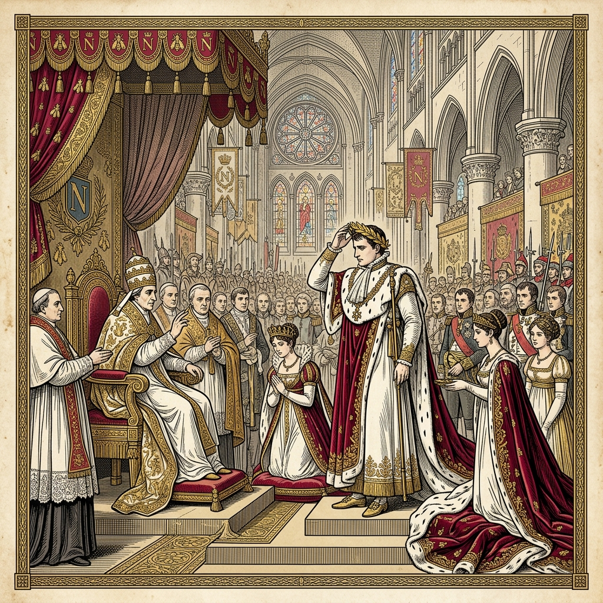
Przejście od Konsulatu do Cesarstwa nie było nagłym zerwaniem z dziedzictwem rewolucyjnym, lecz paradoksalną próbą jego instytucjonalnej i dynastycznej petryfikacji. W historiografii francuskiej, zwłaszcza w klasycznych ujęciach Alberta Soboula czy współczesnych analizach Thierry’ego Lentza, proces ten interpretowany jest jako dążenie do stabilizacji zdobyczy burżuazji przed podwójnym zagrożeniem: rojalistyczną reakcją Burbonów z jednej strony, a jakobińskim radykalizmem z drugiej. Ustawa konstytucyjna z 28 floréala roku XII (18 maja 1804 r.), znana jako Senatus-consulte organiczny, w swoim pierwszym artykule proklamowała: „Rządy Republiki powierza się Cesarzowi, który przybiera tytuł Cesarza Francuzów”. Formuła ta - łącząca republikańską semantykę z monarchiczną formą - stanowiła kwintesencję bonapartystycznego cezaryzmu demokratycznego, sankcjonowanego następnie przez plebiscyt ludowy.
Kulminacją tego procesu legitymizacji była ceremonia koronacyjna, która odbyła się 2 grudnia 1804 roku w Katedrze Notre-Dame w Paryżu. Wybór świątyni paryskiej, zamiast tradycyjnej katedry w Reims - miejsca namaszczenia królów Francji - był głęboko przemyślanym aktem polityczno-symbolicznym. Napoleon pragnął zamanifestować zerwanie z tradycją kapetyńską na rzecz nowej legitymizacji, odwołującej się bezpośrednio do imperium karolińskiego oraz tradycji rzymskiej. Obecność papieża Piusa VII miała nadać ceremonii wymiar uniwersalny i sakralny, jednak sam przebieg rytuału dobitnie ukazał supremację władzy świeckiej nad duchowną.
Wbrew utrwalonej przez malarstwo Jacques-Louisa Davida legendzie o gwałtownym odebraniu korony z rąk papieża, gest samokoronacji Napoleona był uprzednio szczegółowo wynegocjowany i zapisany w protokole ceremonialnym. Nakładając koronę najpierw na własną głowę, a następnie koronując Józefinę, Napoleon demonstrował, że źródłem jego władzy nie jest namaszczenie boskie zapośredniczone przez Kościół, lecz wola narodu, geniusz militarny oraz własna determinacja polityczna. Papież ograniczył się do namaszczenia i błogosławieństwa, co w oczach współczesnych redukowało rolę biskupa Rzymu do prestiżowego świadka narodzin nowej dynastii. W ten sposób Bonaparte dokonał syntezy dawnego porządku (Ancien Régime) i nowoczesności: sakralny charakter monarchii został zaprzęgnięty w służbę państwa porewolucyjnego, którego fundamentem pozostawała suwerenność ludu, aczkolwiek zmonopolizowana przez jednostkę (Furet, 1978; Nora, 1984).
Historiograficzna debata wokół roku 1804 ogniskuje się wokół pytania o charakter tego reżimu. Czy było to wskrzeszenie monarchii absolutnej, czy też specyficzna forma dyktatury modernizacyjnej? Jean Tulard w swojej fundamentalnej pracy Napoléon ou le mythe du sauveur wskazuje, że cesarstwo było koniecznością dziejową dla ocalenia realnych zdobyczy roku 1789. Nowa arystokracja cesarska (noblesse d’Empire), tworzona od 1808 roku, opierała się na kryterium zasługi (méritocratie) i służby państwowej, a nie na urodzeniu, co odróżniało ją fundamentalnie od dawnego szlachectwa.
Najtrwalszym pomnikiem cywilnym epoki napoleońskiej, determinującym kształt nowoczesnych społeczeństw europejskich przez kolejne stulecia, stał się Kodeks Cywilny (Code Civil des Français), ogłoszony 21 marca 1804 roku (później nazywany Kodeksem Napoleona). Prace nad kodyfikacją, powierzone czteroosobowej komisji wybitnych jurystów (Jean-Étienne-Marie Portalis, François-Denis Tronchet, Félix-Julian-Jean Bigot de Préameneu oraz Jacques de Maleville), stanowiły genialną syntezę rzymskiego prawa pisanego, dominującego na południu Francji, oraz północnofrancuskiego prawa zwyczajowego (coutumes), przefiltrowanych przez racjonalistyczną filozofię Oświecenia i rewolucyjne ustawodawstwo.
Analiza dogmatyczna Kodeksu pozwala wyróżnić trzy filary, na których oparto nowoczesną konstrukcję społeczeństwa obywatelskiego:
Jednakże obok tych wybitnie nowoczesnych i emancypacyjnych aspektów, Kodeks Cywilny charakteryzował się głębokim konserwatyzmem w sferze relacji rodzinnych i społecznych. Konstrukcja rodziny opierała się na skrajnie patriarchalnym modelu. Kobieta zamężna została pozbawiona pełnej zdolności do czynności prawnych, poddana dożywotniej kurateli męża (słynny art. 213: „Mąż winien opiekę swojej żonie, żona posłuszeństwo mężowi”). Bez zgody małżonka kobieta nie mogła stawać przed sądem, rozporządzać majątkiem ani zawierać umów.
Równie restrykcyjny charakter miały regulacje dotyczące stosunków pracy. W sporach między pracodawcą a pracownikiem (art. 1781) sąd miał dawać wiarę oświadczeniom tego pierwszego, co w połączeniu z zakazem zrzeszania się robotników i wprowadzeniem książeczek pracy (livret d’ouvrier) sankcjonowało głęboką asymetrię klasową (Foucault, 1975). Kodeks Napoleona był zatem instrumentem stabilizacji społecznej, chroniącym interesy posiadaczy, kosztem marginalizacji grup słabszych ekonomicznie i społecznie.
Ekspansja militarna Pierwszego Cesarstwa w latach 1805-1807 stanowiła bezprecedensowy pokaz rewolucji w sztuce wojennej, która doprowadziła do całkowitego demontażu osiemnastowiecznego systemu równowagi sił (balance of power). Napoleon zreorganizował armię francuską, tworząc system korpusów armijnych (corps d’armée) - autonomicznych jednostek zdolnych do samodzielnego prowadzenia działań operacyjnych przez określony czas, co pozwalało na niezwykłą elastyczność i szybkość koncentracji sił na polu bitwy.
Wojna z Trzecią Koalicją (1805), zainicjowana przez Wielką Brytanię, Austrię i Rosję, ukazała pełnię napoleońskiego geniuszu strategicznego. Po błyskotliwym manewrze oskrzydlającym pod Ulm i kapitulacji armii generała Macka, Napoleon zajął Wiedeń. Decydujące starcie nastąpiło 2 grudnia 1805 roku pod Austerlitz. W „bitwie trzech cesarzy” Bonaparte, wykorzystując topografię terenu (Wzgórza Prackie) oraz pozorowaną słabość swojego prawego skrzydła, wciągnął siły rosyjsko-austriackie w pułapkę, a następnie rozbił ich centrum, odnosząc najświetniejsze zwycięstwo w swojej karierze. Traktat pokojowy w Preszburgu (26 grudnia 1805 r.) zredukował Austrię do roli mocarstwa drugorzędnego, odbierając jej posiadłości we Włoszech i Niemczech.
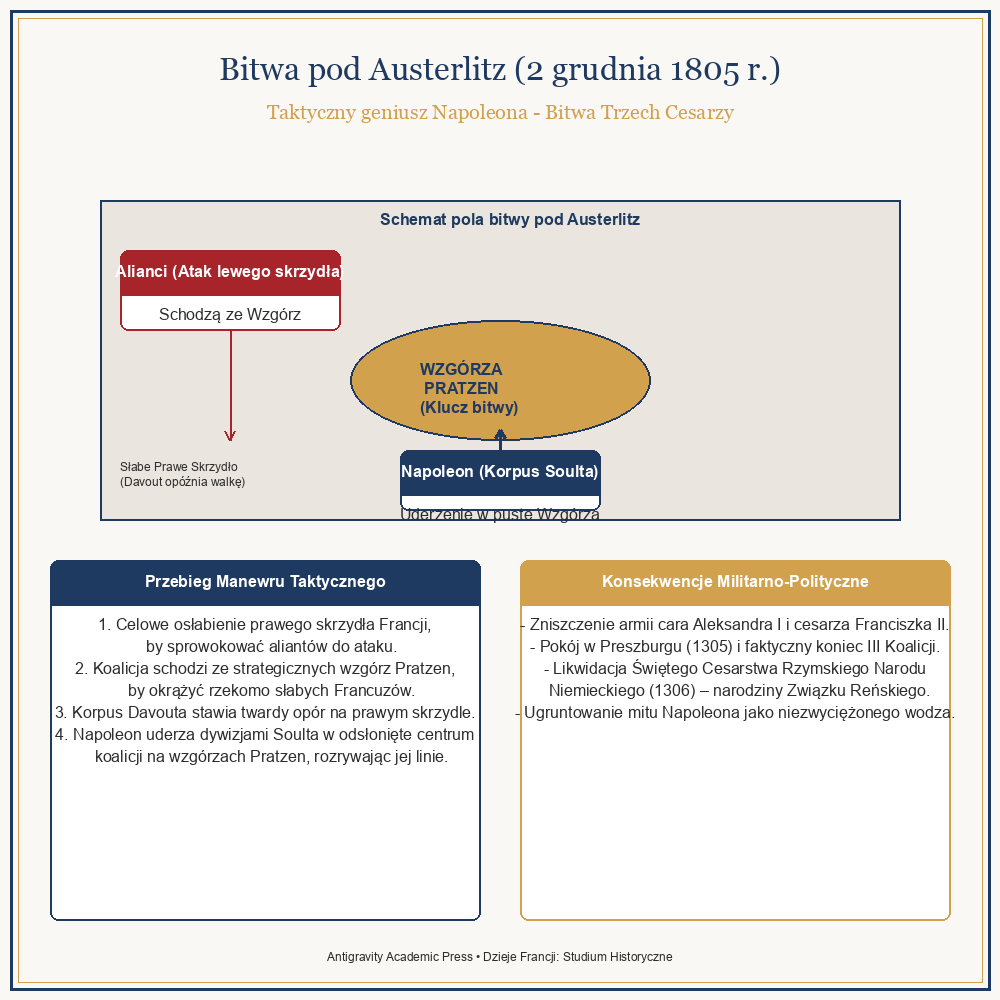
<img src="images/poster_austerlitz.png" alt="Taktyczny przebieg bitwy pod Austerlitz" />
<div class="video-play-overlay">▶</div>
<p class="video-print-link">Wersja wideo dostępna online: <a href="https://adamsnihur.github.io/opracowania/historia_francji/#animacje">adamsnihur.github.io/opracowania/historia_francji/#animacje</a></p>Kolejny rok przyniósł konfrontację z Prusami, które zaniepokojone wzrostem wpływów francuskich w Niemczech, przystąpiły do Czwartej Koalicji. Kampania 1806 roku trwała zaledwie kilkanaście dni. 14 października 1806 roku w bliźniaczych bitwach pod Jeną i Auerstedt machina wojenna Fryderyka Wielkiego została dosłownie unicestwiona. Francuzi wkroczyli do Berlina, skąd Napoleon ogłosił dekret o blokadzie kontynentalnej.
Wojna przeniosła się na terytorium Prus Wschodnich i ziemie polskie. Po krwawej i nierozstrzygniętej bitwie pod Iławą Pruską (luty 1807 r.), Napoleon odniósł decydujące zwycięstwo nad armią rosyjską generała Bennigsena pod Frydlandem (14 czerwca 1807 r.). Sukces ten zmusił cara Aleksandra I do podjęcia rokowań pokojowych.
| Bitwa | Data | Przeciwnik | Skutki polityczne |
|---|---|---|---|
| Ulm | 16-19 października 1805 | Austria | Otwarcie drogi do Wiednia, eliminacja armii Macka |
| Austerlitz | 2 grudnia 1805 | Rosja, Austria | Pokój w Preszburgu, rozbicie Trzeciej Koalicji, likwidacja Rzeszy |
| Jena-Auerstedt | 14 października 1806 | Prusy | Okupacja Prus, upadek morale militarnego Berlina |
| Frydland | 14 czerwca 1807 | Rosja | Traktat w Tylży, utworzenie Księstwa Warszawskiego |
Traktat pokojowy w Tylży (7-9 lipca 1807 r.) reprezentował apogeum napoleońskiej hegemonii w Europie. Na tratwie na rzece Niemen doszło do spotkania dwóch cesarzy, którzy dokonali podziału stref wpływów. Prusy zostały upokorzone, tracąc niemal połowę swojego terytorium, z którego utworzono Królestwo Westfalii oraz Wolne Miasto Gdańsk. Z ziem drugiego i trzeciego zaboru pruskiego utworzono Księstwo Warszawskie, będące francuską placówką geopolityczną na wschodzie Europy. Rosja, w zamian za uznanie napoleońskich kreacji dynastycznych i przystąpienie do blokady kontynentalnej, otrzymała wolną rękę w działaniach przeciwko Szwecji i Turcji. Tylża sankcjonowała duopol władzy w Europie, w którym Napoleon był niekwestionowanym panem Zachodu i Centrum kontynentu.
Wobec niemożności dokonania bezpośredniej inwazji na Wyspy Brytyjskie (co ostatecznie przypieczętowała klęska floty francusko-hiszpańskiej pod Trafalgarem w październiku 1805 r.), Napoleon postanowił rzucić Wielką Brytanię na kolana za pomocą wojny ekonomicznej. Dekretem berlińskim z 21 listopada 1806 roku wprowadzono blokadę kontynentalną (Blocus continental), zabraniającą jakichkolwiek kontaktów handlowych, pocztowych i osobistych z Brytanią wszystkim państwom znajdującym się pod wpływem Francji lub z nią sprzymierzonym.
Blokada miała dwojaki cel: zniszczyć brytyjski eksport, wywołać kryzys płynności finansowej oraz niepokoje społeczne na Wyspach, a jednocześnie uczynić z przemysłu francuskiego monopolistę na rynku europejskim. Projekt ten, choć teoretycznie spójny, cierpiał na fundamentalne wady strukturalne. Gospodarka francuska nie była w stanie zastąpić brytyjskiej produkcji przemysłowej ani dostarczać towarów kolonialnych w odpowiedniej ilości i cenie. Blokada uderzała w interesy ekonomiczne państw satelickich i sojuszników Francji, odcinając je od rynków zbytu na surowce rolnicze i drzewne (co szczególnie dotknęło Rosję i ziemie polskie). Konskwencją tego był gigantyczny rozwój przemytu (głównymi centrami stały się Helgoland i Malta) oraz konieczność permanentnej ekspansji militarnej Napoleona w celu uszczelnienia granic kontynentu (co pchnęło go do interwencji na Półwyspie Iberyjskim i ostatecznie do wyprawy na Moskwę).
Równolegle z wojną gospodarczą Napoleon dokonał radykalnej, rewolucyjnej wręcz reorganizacji mapy politycznej Europy Środkowej i Południowej, likwidując anachroniczne struktury feudalne.
Najbardziej spektakularnym aktem było ostateczne rozwiązanie Świętego Cesarstwa Rzymskiego Narodu Niemieckiego. W lipcu 1806 roku, pod protektoratem Napoleona, utworzono Związek Reński (Rheinbund), zrzeszający początkowo 16 (później 36) państw niemieckich, w tym Bawarię, Wirtembergię i Saksonię, które zostały podniesione do rangi królestw. Franciszek II Habsburg zrzekł się korony rzymsko-niemieckiej, przyjmując tytuł cesarza Austrii jako Franciszek I.
Związek Reński stał się nie tylko buforem militarnym Francji, ale także poligonem doświadczalnym dla napoleońskich reform ustrojowych. Wprowadzono tam Kodeks Cywilny, zniesiono poddaństwo chłopów, zsekularyzowano dobra kościelne i zmodernizowano administrację na wzór francuski. Proces ten, choć narzucony siłą, położył podwaliny pod nowoczesne państwo niemieckie i paradoksalnie przyczynił się do narodzin niemieckiej świadomości narodowej, początkowo o charakterze antyfrancuskim.
Półwysep Apeniński, uprzednio rozbity na kilkanaście państewek, został przez Napoleona skonsolidowany i zmodernizowany. Północne i środkowe Włochy weszły w skład Królestwa Włoch (Regno d’Italia), którego królem ogłosił się sam Napoleon, powierzając rządy wicekrólowi Eugeniuszowi de Beauharnais. Południe kontynentalne tworzyło Królestwo Neapolu, przekazane najpierw Józefowi Bonaparte, a następnie szwagrowi cesarza, Joachimowi Muratowi. Państwo Kościelne zostało anektowane bezpośrednio do Cesarstwa Francuskiego, a papież Pius VII został uwięziony.
We wszystkich tych rejonach wprowadzono jednolite prawo, zlikwidowano bariery celne, przeprowadzono sekularyzację klasztorów i unowocześniono infrastrukturę komunikacyjną. Włochy napoleońskie stały się kolebką przyszłego Risorgimento - ruchu zjednoczeniowego, którego liderzy wychowali się w strukturach napoleońskiej administracji i armii.
Podsumowując, Pierwsze Cesarstwo Francuskie pod rządami Napoleona Bonapartego stanowiło unikalną syntezę autorytaryzmu i modernizacji. Poprzez unifikację prawną (Kodeks Cywilny), reformy administracyjne oraz bezprecedensową ekspansję militarną, Napoleon trwale przekształcił strukturę społeczną i polityczną Europy. Choć jego imperium militarne okazało się efemerydą i runęło w 1815 roku, to instytucjonalne i prawne fundamenty, które wzniósł, ukształtowały oblicze nowoczesnego świata, czyniąc z niego kluczową postać w procesie przechodzenia Europy od feudalizmu do nowoczesnego społeczeństwa obywatelskiego.
Próba rekonstrukcji i zrozumienia przyczyn upadku napoleońskiego imperium mundi wymaga wyjścia poza ramy klasycznej historii militarnej i wkroczenia na grunt wielopłaszczyznowej analizy strukturalnej. System napoleoński, będący u swego zarania dynamiczną syntezą rewolucyjnego uniwersalizmu i rzymskiego cezarizmu, nosił w sobie zarodki własnej destrukcji. W historiografii francuskiej, począwszy od klasycznych prac Georges’a Lefebvre’a, aż po współczesne syntezy Jeana Tularda i Thierry’ego Lentza, upadek ten nie jest interpretowany jako nagła katastrofa militarna, lecz jako powolny proces dekompozycji politycznych, gospodarczych i społecznych fundamentów Cesarstwa. Kluczowymi katalizatorami tej implozji stały się dwa konflikty peryferyjne, które zdemitologizowały niezwyciężoność Wielkiej Armii: przewlekła wojna na Półwyspie Iberyjskim oraz katastrofalna kampania rosyjska 1812 roku.
Interwencja francuska w Hiszpanii, rozpoczęta w 1807 roku pod pretekstem egzekwowania blokady kontynentalnej przeciwko Wielkiej Brytanii, a sfinalizowana bezprecedensowym kryzysem dynastycznym w Bayonnie (1808), obnażyła granice napoleońskiego racjonalizmu geopolitycznego. Zastąpienie Burbonów Józefem Bonaparte było błędem wynikającym z niezrozumienia specyfiki hiszpańskiej struktury społecznej. Napoleon, uformowany przez oświeceniowy antyklerykalizm i centralizm, postrzegał Hiszpanię jako zacofany kraj rządzony przez inkwizycję, który z wdzięcznością przyjmie Code Civil i modernizację administracyjną.
Rzeczywistość okazała się dramatycznie odmienna. Przeciwko francuskiej hegemonii wybuchło powstanie o charakterze totalnym, łączące tradycjonalistyczny katolicyzm, ksenofobię oraz rodzący się nowoczesny nacjonalizm. Zjawisko guerilli (wojny podjazdowej) zdezorganizowało francuskie linie komunikacyjne i zmusiło Paryż do permanentnego utrzymywania na Półwyspie Iberyjskim korpusu okupacyjnego liczącego od 200 do 300 tysięcy żołnierzy.
Wojna ta charakteryzowała się niespotykanym dotąd poziomem brutalności, co doskonale uwiecznił Francisco Goya w cyklu Okropności wojny. Dla francuskich oficerów, przyzwyczajonych do rozstrzygających bitew polowych, asymetryczny konflikt z partyzantami wspieranymi przez brytyjski korpus ekspedycyjny pod dowództwem Arthura Wellesleya (późniejszego księcia Wellingtona) stał się wycieńczającą wojną na wyniszczenie. „Wrzód hiszpański” (l’ulcère espagnol), jak określił to sam Napoleon na św. Helenie, drenował skarbiec cesarstwa, niszczył morale armii i - co najważniejsze - absorbował siły, których zabrakło na froncie wschodnim i centralnym.
Bezpośrednią przyczyną wojny z Rosją w 1812 roku było narastające napięcie wokół blokady kontynentalnej. Dla caratu blokada oznaczała ruinę finansową opartą na eksporcie surowców do Wielkiej Brytanii. Car Aleksander I, obawiając się ponadto odbudowy w pełni suwerennego Królestwa Polskiego w granicach przedrozbiorowych (czego substytutem było Księstwo Warszawskie), de facto wycofał się z systemu tylżyckiego. Napoleon, dążąc do wymuszenia posłuszeństwa, zgromadził Wielką Armię (Grande Armée) o niespotykanej dotąd w historii nowożytnej skali - blisko 600 tysięcy żołnierzy, z czego zaledwie połowę stanowili rdzenni Francuzi, resztę zaś kontyngenty państw związkowych i sojuszniczych (Niemcy, Polacy, Włosi, Austriacy).
Kampania 1812 roku ujawniła strategiczną bezradność napoleońskiej doktryny w starciu z przestrzenią i klimatem Europy Wschodniej. Doktryna cesarska opierała się na szybkich manewrach, rozstrzygających bitwach w pobliżu granic oraz aprowizacji kosztem terytorium wroga (la guerre nourrit la guerre). Rosyjska strategia, opracowana m.in. przez generała Barclaya de Tolly, polegała na unikaniu walnej rozprawy i stosowaniu taktyki spalonej ziemi.
Bitwa pod Borodino (7 września 1812 r.), choć formalnie wygrana przez Napoleona, była w rzeczywistości rzezią bez strategicznego rozstrzygnięcia. Wejście do opuszczonej i podpalonej z rozkazu gubernatora Fiodora Rostopczyna Moskwy stało się dla cesarza pułapką psychologiczną. Oczekiwanie na ofertę pokojową ze strony Aleksandra I przedłużyło się do połowy października, co w warunkach nadchodzącej rosyjskiej zimy okazało się katastrofalne.
Retreat z Moskwy przekształcił się w apokaliptyczną klęskę. Czynniki decydujące o katastrofie to:
Tragiczny bilans kampanii dopełniła bitwa nad Berezyną (26-29 listopada 1812 r.), gdzie dzięki inżynieryjnemu kunsztowi generała Jean-Baptiste’a Eblé i poświęceniu pontonierów uratowano niedobitki armii, jednak straty ludzkie były niepowetowane. Z ponad półmilionowej armii inwazyjnej granice Prus i Księstwa Warszawskiego przekroczyło zaledwie kilkadziesiąt tysięcy skrajnie wycieńczonych żołnierzy. Mit napoleońskiej niezwyciężoności runął bezpowrotnie.
Klęska w Rosji natychmiast zreorganizowała układ sił w Europie. Prusy, dotychczas upokorzone i zredukowane traktatem w Tylży, ogłosiły mobilizację i zawarły sojusz z Rosją (traktat w Kaliszu, luty 1813 r.), inicjując tzw. wojnę o oswobodzenie (Befreiungskriege). Powstanie VI Koalicji było wyrazem narodowego przebudzenia Niemiec, podssycanego przez romantyczną publicystykę i filozofię (m.in. Johanna Gottlieba Fichtego).
Napoleon wykazał się niebywałą energią, w krótkim czasie odtwarzając armię we Francji poprzez pobór młodych roczników (tzw. Marie-Louise). Mimo zwycięstw pod Lützen i Bautzen (Budziszynem) wiosną 1813 roku, sytuacja strategiczna Francji pogarszała się. Kluczowym momentem dyplomatycznym okazało się przystąpienie do koalicji Cesarstwa Austriackiego, sprawnie wynegocjowane przez kanclerza Klemensa von Metternicha podczas kongresu w Pradze.
Kampania jesienna 1813 roku rozegrała się w Saksonii. Koalicjanci przyjęli tzw. plan z Trachenbergu, polegający na unikaniu bezpośredniego starcia z samym Napoleonem, a rozbijaniu korpusów dowodzonych przez jego marszałków (Oudinota pod Grossbeeren, Macdonalda nad Kaczawą, Neya pod Dennewitz). Doprowadziło to do koncentracji sił sprzymierzonych wokół Lipska.
Bitwa pod Lipskiem (16-19 października 1813 r.), znana jako „Bitwa Narodów” (Völkerschlacht), była największym starciem zbrojnym epoki przed I wojną światową. Przeciwko 190 tysiącom Francuzów i ich nielicznych sprzymierzeńców stanęło ponad 360 tysięcy żołnierzy koalicji (Rosjan, Austriaków, Prusaków i Szwedów). Zdrada kontyngentów saskich i wirtemberskich w trakcie bitwy oraz przedwczesne wysadzenie mostu na Elsterze (w nurcie której utonął ranny marszałek Józef Poniatowski) przypieczętowały klęskę Napoleona. Niemcy zostały bezpowrotnie utracone dla francuskiej hegemonii, a Związek Reński uległ samorozwiązaniu.
Zimą 1814 roku działania wojenne przeniosły się na terytorium samej Francji. Kampania sześciodniowa była militarnym majstersztykiem Napoleona, który dysponując nieliczną, niedoświadczoną armią, potrafił raz po raz pobijać rozdzielone korpusy Blüchera i Schwarzenberga (zwycięstwa pod Champaubert, Montmirail, Vauchamps). Były to jednak sukcesy wyłącznie taktyczne, niemogące zrównoważyć przytłaczającej przewagi liczebnej i materiałowej koalicji.
Zmęczenie francuskiego społeczeństwa dwudziestoletnim okresem nieustannych wojen osiągnęło punkt krytyczny. Pobór rekruta napotykał masowy opór, a burżuazja, cierpiąca z powodu kryzysu handlowego, pragnęła stabilizacji. Kluczową rolę odegrała zdrada polityczna w Paryżu, na czele której stanął Charles-Maurice de Talleyrand. Po kapitulacji stolicy 30 marca 1814 roku, Senat pod przewodnictwem Talleyranda ogłosił detronizację cesarza.
Napoleon, przebywający w Fontainebleau, planował jeszcze marsz na Paryż, jednak napotkał zdecydowany opór własnych marszałków (Neya, Lefebvre’a, Oudinota, Macdonalda), którzy odmówili dalszej walki, reprezentując stanowisko wyczerpanej elity wojskowej, pragnącej zachować swoje majątki i pozycje społeczne.
W konsekwencji, 6 kwietnia 1814 roku Napoleon podpisał akt bezwarunkowej abdykacji. Na mocy traktatu w Fontainebleau (11 kwietnia 1814 r.) koalicjanci zachowali dla niego tytuł cesarski i przyznali mu w suwerenne władanie wyspę Elbę na Morzu Śródziemnym, wraz z roczną pensją gwarantowaną przez rząd francuski. Na tron Francji powrócili Burbonowie w osobie Ludwika XVIII, brata straconego Ludwika XVI.
Powrót Burbonów nie przyniósł Francji oczekiwanego spokoju. Ludwik XVIII, choć człowiek umiarkowany, który nadał państwu Kartę Konstytucyjną (gwarantującą m.in. równość wobec prawa, wolność wyznania oraz nienaruszalność dóbr narodowych nabytych w czasie rewolucji), stał się zakładnikiem skrajnych rojalistów (ultrasów), pod wodzą jego brata, hrabiego Artois (późniejszego Karola X).
Szybko narastało niezadowolenie społeczne wywołane przez:
Napoleon, uważnie obserwując sytuację z Elby i wiedząc o rozbieżnościach dzielących mocarstwa obradujące na Kongresie Wiedeńskim, podjął decyzję o powrocie. 1 marca 1815 roku wylądował w zatoce Juan z garścią wiernych żołnierzy. Rozpoczął się legendarny „lot Orła” (le vol de l’Aigle).
Przejście Napoleona przez Alpy do Grenoble i Lyonu stało się triumfalnym marszem. Wojska wysyłane przez Ludwika XVIII w celu powstrzymania „uzurpatora” masowo przechodziły na jego stronę. Najbardziej spektakularnym momentem była wolta marszałka Michela Neya, który obiecał królowi przywieźć Napoleona „w żelaznej klatce”, a ostatecznie rzucił mu się w ramiona. 20 marca 1815 roku Napoleon bez jednego wystrzału zajął Pałac Tuileries, z którego uprzednio uciekł Ludwik XVIII.
Pragnąc pozyskać liberalną burżuazję, Napoleon powierzył Benjaminowi Constantowi opracowanie liberalnej nowelizacji konstytucji cesarskich - tzw. Aktu Dodatkowego (Acte additionnel aux constitutions de l’Empire). Deklarował wolę pokoju, jednak mocarstwa europejskie, zebrane w Wiedniu, natychmiast ogłosiły go „wrogiem i mącicielem pokoju światowego” i zawiązały VII Koalicję, mobilizując armie liczące łącznie blisko milion żołnierzy.
Napoleon zdecydował się na uderzenie wyprzedzające w Belgii, dążąc do rozbicia sił koalicyjnych przed pełną koncentracją wojsk rosyjskich i austriackich. Kampania belgijska rozpoczęła się pomyślnie. 16 czerwca 1815 roku pod Ligny cesarz pobił armię pruską pod dowództwem Gebharda Leberechta von Blüchera, podczas gdy Ney zablokował Anglików pod Quatre Bras. Napoleon popełnił jednak błąd, nie doceniając zdolności pruskiej armii do szybkiej reorganizacji i wysyłając w pościg za nią zbyt nieliczny korpus marszałka Emmanuela de Grouchy’ego.
18 czerwca 1815 roku doszło do decydującej bitwy pod Waterloo. Pozycja obronna wybrana przez Wellingtona na wzgórzach Mont-Saint-Jean okazała się niezwykle trudna do zdobycia. Deszczowa noc opóźniła rozpoczęcie francuskiego ataku, co dało czas Prusakom na dotarcie na pole bitwy. Szarże francuskiej kawalerii pod wodzą Neya, choć bohaterskie, były nieskoordynowane z piechotą i artylerią.
Ostateczne uderzenie na pozycje brytyjskie, przeprowadzone przez elitarną Starą Gwardię, załamało się w ogniu piechoty Wellingtona. Pojawienie się korpusu pruskiego Bülowa i Blüchera na prawej flance francuskiej przekształciło odwrót Wielkiej Armii w paniczną ucieczkę.
| Bitwa pod Waterloo (18 czerwca 1815 r.) | Siły i dowódcy | Rezultat strategiczny |
|---|---|---|
| Strona francuska | Napoleon Bonaparte (ok. 73 000 żołnierzy) | Całkowite rozbicie armii francuskiej, załamanie polityczne projektu Sto Dni |
| Strona koalicyjna | Książę Wellington, G. L. von Blücher (ok. 118 000 żołnierzy łącznie) | Ostateczne usunięcie Napoleona z europejskiej sceny politycznej |
Po powrocie do Paryża Napoleon, pozbawiony poparcia Izby Reprezentantów (gdzie kluczową rolę odgrywali Joseph Fouché i Lafayette), abdykował po raz drugi 22 czerwca 1815 roku na rzecz swojego syna, Napoleona II (Króla Rzymu). Oddawszy się w ręce Brytyjczyków, został deportowany jako więzień stanu na Wyspę Świętej Heleny - odizolowany skrawek lądu na południowym Atlantyku. Tam, pisząc swoje pamiętniki i kreując własny mit zbawcy rewolucji i architekta zjednoczonej Europy, zmarł 5 maja 1821 roku.
Zwieńczeniem epoki napoleońskiej był Kongres Wiedeński (wrzesień 1814 - czerwiec 1815), który zredefiniował architekturę bezpieczeństwa europejskiego na niemal stulecie. Architektami nowego ładu międzynarodowego byli: austriacki minister spraw zagranicznych Klemens von Metternich, brytyjski sekretarz stanu Robert Stewart Castlereagh, car Aleksander I, król pruski Fryderyk Wilhelm III oraz reprezentujący pokonaną Francję Charles-Maurice de Talleyrand.
Talleyrand odniósł niebywały sukces dyplomatyczny, wprowadzając Francję do grona decyzyjnych mocarstw (tzw. Komitetu Pięciu) dzięki sformułowaniu zasady legitymizmu. Głosiła ona, że władza monarchów pochodzi z nadania boskiego, a nie z woli ludu, w związku z czym rewolucyjne i napoleońskie uzurpacje były bezprawne, a prawowici władcy winni odzyskać swoje trony. Dzięki temu Francja Burbonów nie była traktowana jako agresor, lecz jako ofiara napoleońskiej uzurpacji.
Decyzje terytorialne wobec Francji ulegały jednak ewolucji w zależności od koniunktury politycznej, co obrazuje porównanie dwóch traktatów paryskich:
Wokół granic Francji utworzono tzw. kordon sanitarny - system państw buforowych mających powstrzymać ewentualną przyszłą ekspansję rewolucyjną lub imperialną. Składały się nań: Zjednoczone Królestwo Niderlandów (połączenie Belgii i Holandii), powiększone Królestwo Sardynii (Piedmont) z włączoną Genuą, oraz pruska Nadrenia, która bezpośrednio graniczyła z Francją na wschodzie.
Kongres Wiedeński, opierając się na zasadach legitymizmu, równowagi sił (balance of power) oraz koncertu mocarstw, stworzył system stabilizacji politycznej, który na blisko czterdzieści lat (do wojny krymskiej) uchronił Europę przed konfliktem o charakterze globalnym. Dla samej Francji był to jednak koniec epoki wielkości - przejście od statusu militarnego i ideologicznego hegemonu kontynentu do roli jednego z graczy w wielobiegunowym systemie koncertu europejskiego, zredukowanego terytorialnie do granic sprzed rewolucyjnego zrywu 1789 roku.
Uupadek Cesarstwa Francuskiego w 1814 roku postawił przed koalicją antynapoleońską oraz powracającą dynastią Burbonów fundamentalne pytanie o kształt ustrojowy i społeczny zrekonstruowanej Francji. Powrót Ludwika XVIII - brata straconego Ludwika XVI - w „wozach koalicji” (dans les fourgons de l’étranger) nie mógł oznaczać prostego i bezwarunkowego powrotu do realiów sprzed 1789 roku. Ćwierćwiecze rewolucyjnych i napoleońskich przeobrażeń głęboko przekształciło strukturę społeczną, mentalność zbiorową, stosunki własnościowe oraz aparat administracyjno-prawny państwa. Próba całkowitej likwidacji tych dokonań groziłaby natychmiastowym wybuchem nowej rewolucji, na co wycieńczona wojnami Francja i dążące do stabilizacji mocarstwa europejskie nie mogły sobie pozwolić. W tym kontekście historycznym narodziła się Karta Konstytucyjna z 1814 roku - dokument o charakterze głęboko kompromisowym, stanowiący próbę syntezy monarchicznego legitymizmu z nowoczesnym, porewolucyjnym porządkiem prawnym.
Karta Konstytucyjna, ogłoszona przez Ludwika XVIII w dniu 4 czerwca 1814 roku, była klasycznym przykładem konstytucji oktrojowanej (charte octroyée), czyli jednostronnie nadanej przez monarchę, a nie uchwalonej przez suwerenny parlament. Sam ten fakt miał kluczowe znaczenie ideologiczne. Król odrzucił projekt konstytucji opracowany przez napoleoński Senat (tzw. Constitution sénatoriale z 6 kwietnia 1814 r.), który opierał się na zasadzie suwerenności narodu i zakładał „powołanie” Ludwika Stanisława Ksawerego na króla Francuzów. Dla Burbona, wychowanego w kulcie monarchii absolutnej, suwerenność rezydowała wyłącznie w osobie władcy z Bożej łaski.
W preambule Karty, zredagowanej w podniosłym, archaicznym stylu, Ludwik XVIII datował swoje panowanie od śmierci swojego bratanka, Ludwika XVII (czyli od 1795 roku), uznając tym samym okres Republiki i Konsulatu oraz Cesarstwa za bezprawną uzurpację. Karta nie była zatem umową społeczną, lecz aktem królewskiej łaski, nawiązującym do tradycji dawnych monarchów francuskich, którzy nadawali przywileje i swobody swoim poddanym.
Mimo tej legitymistycznej i tradycjonalistycznej fasady, merytoryczna treść Karty z 1814 roku stanowiła daleko idący kompromis z dziedzictwem rewolucji. W sferze praw obywatelskich (artykuły 1-12, zatytułowane znamiennie „Prawo publiczne Francuzów”) dokument ten sankcjonował fundamentalne zdobycze 1789 roku:
Z punktu widzenia struktury władzy Karta wprowadzała system zbliżony do angielskiego parlamentaryzmu, choć z silną pozycją monarchy. Władza wykonawcza należała wyłącznie do króla, który był nietykalny i nieodpowiedzialny przed parlamentem (art. 13). Król dowodził siłami zbrojnymi, wypowiadał wojnę, zawierał traktaty, mianował urzędników oraz posiadał wyłączną inicjatywę ustawodawczą (art. 16). Kluczowym i - jak się później okazało - fatalnym dla dynastii instrumentem władzy królewskiej był artykuł 14, który upoważniał monarchę do wydawania ordonansów (dekretów z mocą ustawy) koniecznych dla „wykonania ustaw i bezpieczeństwa państwa”.
Władzę ustawodawczą król dzielił z dwuizbowym parlamentem. Izba Parów (Chambre des pairs) składała się z członków mianowanych przez króla (bądź dożywotnio, bądź dziedzicznie), co miało na celu odtworzenie arystokratycznej elity wspierającej tron. Izba Deputowanych Departamentów (Chambre des députés des départements) pochodziła z wyborów, opartych jednak na niezwykle wysokim cenzusie majątkowym i wiekowym. Prawo wyborcze (czynne) przysługiwało jedynie mężczyznom, którzy ukończyli 30. rok życia i płacili co najmniej 300 franków podatku bezpośredniego (ok. 100 tysięcy osób w trzydziestomilionowym kraju). Bierne prawo wyborcze wymagało ukończenia 40 lat i płacenia 1000 franków podatku (ok. 15 tysięcy osób).
W ten sposób Karta z 1814 roku tworzyła ustrój oligarchii wielkich właścicieli ziemskich oraz najbogatszej burżuazji finansowej. Jak zauważa wybitny historyk Pierre Rosanvallon, Karta nie była jedynie dokumentem prawnym, lecz „traktatem pokojowym” zamykającym wojnę domową między „dwoma Francjami” - Francją dawnego reżimu a Francją zrodzoną z rewolucji.
Pierwsze lata Restauracji upłynęły pod znakiem głębokiej polaryzacji politycznej, zaostrzonej dodatkowo epizodem „Stu Dni” Napoleona w 1815 roku. Powrót cesarza i łatwość, z jaką odzyskał on władzę, obnażyły słabość zakorzenienia Burbonów i wywołały głęboki uraz w obozie rojalistycznym. Po ostatecznej klęsce Bonapartego pod Waterloo i drugiej restauracji, Francję zalała fala tzw. „białego terroru” (terreur blanche). Ultrarojaliści (zwani w skrócie ultras), skupieni wokół młodszego brata króla, hrabiego Artois (przyszłego Karola X), przystąpili do krwawych rozliczeń z bonapartystami i republikanami. Zamordowano m.in. marszałka Guillaume’a Brune’a i generała Jean-Pierre’a Ramela, a marszałek Michel Ney został skazany na śmierć przez Izbę Parów i rozstrzelany.
W wyborach parlamentarnych w sierpniu 1815 roku, przeprowadzonych w atmosferze zastraszenia, sukces odnieśli radykałowie prawicowi. Powstała wówczas tzw. Izba Niedoodnalezienia (Chambre introuvable), w której ultras posiadali przytłaczającą większość. Byli oni - według słynnego powiedzenia - „bardziej królewscy niż sam król” (plus royalistes que le roi). Domagali się natychmiastowego zwrotu majątków emigrantom, przywrócenia dominującej roli Kościoła katolickiego w edukacji i życiu publicznym oraz drastycznego ograniczenia swobód obywatelskich.
Ludwik XVIII, człowiek schorowany, lecz wykazujący się dużym pragmatyzmem i realizmem politycznym, szybko zdał sobie sprawę, że fanatyzm ultrasów może doprowadzić do upadku monarchii. Wspierany przez umiarkowanych konserwatystów (tzw. doktrynerów, na czele z Royer-Collardem i François Guizotem) oraz mocarstwa okupacyjne, król zdecydował się we wrześniu 1816 roku na rozwiązanie Chambre introuvable.
Kolejne lata (1816-1820) to okres rządów umiarkowanych, reprezentowanych przez gabinety księcia de Richelieu oraz Élie Decazesa. Podjęto wówczas udane próby stabilizacji finansów państwa, spłacono kontrybucje wojenne, co doprowadziło do przedterminowego wycofania wojsk okupacyjnych w 1818 roku, oraz uchwalono liberalne prawo o prasie (tzw. prawo de Serre).
Ten proces ostrożnej liberalizacji i konsolidacji ustrojowej został brutalnie przerwany 13 lutego 1820 roku. W gmachu opery paryskiej rzemieślnik Louis Pierre Louvel zasztyletował bratanka króla, księcia Berry (syna hrabiego Artois). Louvel działał sam, chcąc - jak deklarował - zgładzić ostatniego przedstawiciela dynastii zdolnego do spłodzenia potomka (choć wdowa po księciu, księżna Berry, była wówczas w ciąży i we wrześniu 1820 r. urodziła „dziecko cudu” - Henryka, księcia Bordeaux).
Morderstwo to wywołało szok i zostało natychmiast wykorzystane przez prawicę do rozprawy z liberałami. Oskarżany o pobłażliwość wobec rewolucjonistów premier Decazes musiał podać się do dymisji. Wahadło polityczne gwałtownie przesunęło się w prawo. Wprowadzono cenzurę prewencyjną, zawieszono wolność osobistą, a w czerwcu 1820 roku uchwalono nowe prawo wyborcze - tzw. prawo podwójnego głosu (loi du double vote). Pozwalało ono jednej czwartej najbogatszych wyborców (głównie wielkim właścicielom ziemskim o poglądach rojalistycznych) na oddanie drugiego głosu w kolegiach departamentalnych, co trwale zmarginalizowało liberalną burżuazję miejską.
Śmierć Ludwika XVIII we wrześniu 1824 roku i wstąpienie na tron jego brata jako Karola X oznaczały ostateczny triumf stronnictwa ultrasów. Karol X, w przeciwieństwie do swojego zmarłego brata, był człowiekiem o ograniczonych horyzontach umysłowych, głęboko religijnym, wręcz bigotem, i fanatycznym zwolennikiem powrotu do przedrewolucyjnego porządku społeczno-politycznego. Uważał, że wszelkie ustępstwa wobec ducha czasu są słabością, która zgubiła Ludwika XVI. Słynne stały się jego słowa, iż wolałby rąbać drwa, niż być królem na wzór angielski.
Symbolicznym manifestem nowej epoki był uroczysty ceremoniał koronacyjny Karola X w katedrze w Reims w dniu 29 maj 1825 roku. Nawiązywał on w najdrobniejszych szczegółach do średniowiecznego rytuału namaszczenia świętymi olejami, łącznie z tradycyjnym dotykaniem chorych na skrofuły w celu ich uzdrowzenia. Koronacja ta, choć przygotowana z wielkim przepychem, wywołała w zlaicyzowanym społeczeństwie paryskim raczej rozbawienie i niesmak niż religijny paroksyzm, obnażając rosnący rozdźwięk między wyobrażeniami dworu a rzeczywistością społeczną.
Rządy Karola X, opierające się na gabinecie kierowanym przez hrabiego Jean-Baptiste’a de Villèle, charakteryzowały się dążeniem do systematycznego demontażu porewolucyjnej struktury społecznej. Do najważniejszych i najbardziej kontrowersyjnych inicjatyw ustawodawczych tego okresu należały:
Ofensywa reakcyjna wywołała konsolidację opozycji liberalnej, w skład której wchodzili zarówno umiarkowani konstytucjonaliści (Benjamin Constant, Casimir Périer), jak i dawni bonapartyści oraz republikanie. Kluczową rolę w mobilizowaniu opinii publicznej odgrywała prasa liberalna (m.in. „Le Constitutionnel”, „La Tribune”, a później „Le National”, założony przez młodego Adolpha Thiersa) oraz stowarzyszenia o charakterze jawnym i tajnym (np. francuska węglarstwo - charbonnerie).
Wzrost społecznego niezadowolenia znalazł odzwierciedlenie w wyborach parlamentarnych w listopadzie 1827 roku, które przyniosły dotkliwą porażkę obozowi rządowemu. Karol X został zmuszony do zdymisjonowania nienawidzonego Villèle’a i powołania przejściowego, umiarkowanego gabinetu pod przewodnictwem wicehrabiego de Martignac. Próby lawirowania i połowicznych reform podejmowane przez Martignaca nie zadowoliły jednak ani liberałów, domagających się pełnego rządu parlamentarnego, ani króla, który uważał je za niedopuszczalne ustępstwo.
W sierpniu 1829 roku Karol X, zrywając z dotychczasową praktyką parlamentarną, zdymisjonował Martignaca i powołał skrajnie reakcyjny gabinet, na czele którego stanął jego osobisty faworyt, książę Jules de Polignac. Polignac, człowiek o skrajnie mistycznym usposobieniu (twierdził, że w swoich decyzjach politycznych kieruje się bezpośrednimi objawieniami od Matki Boskiej), był uosobieniem najgorszych cech emigracji. Skład rządu uzupełniali tacy ludzie jak hrabia de Bourmont, dawny dezerter spod Waterloo, co opinia publiczna odebrała jako jawną prowokację i wypowiedzenie wojny narodowi.
Gdy w marcu 1830 roku zebrała się Izba Deputowanych, uchwaliła ona miażdżącą większością głosów (221 przeciwko 181) słynny Adres 221 (Adresse des 221). Dokument ten, zredagowany przez rzetelnego monarchistę Royer-Collarda, stwierdzał autorytatywnie, że trwała harmonia między rządem a parlamentem jest niezbędnym warunkiem funkcjonowania państwa, a poglądy polityczne obecnego gabinetu stoją w jaskrawej sprzeczności z wolą narodu. Adres ten był w istocie sformułowaniem doktryny odpowiedzialności parlamentarnej ministrów przed izbą.
Karol X odpowiedział na to wyzwanie z całą bezwzględnością absolutystycznego monarchy. Odmówił przyjęcia dymisji Polignaca, odroczył sesję parlamentu, a następnie - 16 maja 1830 roku - rozwiązał Izbę Deputowanych, rozpisując nowe wybory na czerwiec i lipiec. Aby odwrócić uwagę opinii publicznej od kryzysu wewnętrznego i zagrać na uczuciach narodowych, rząd zdecydował się na podjęcie wyprawy wojennej do Algieru. Choć zdobycie Algieru na początku lipca 1830 roku było sukcesem militarnym, nie przyniosło ono oczekiwanego przez króla przełomu politycznego. Wybory okazały się katastrofą dla dworu: opozycja liberalna powiększyła swój stan posiadania, zdobywając 274 mandaty, podczas gdy zwolennicy rządu uzyskali zaledwie 143.
W tej sytuacji Karol X, przekonany o słuszności swojej drogi i zachęcany przez Polignaca, postanowił sięgnąć po środki nadzwyczajne. Powołując się na kontrowersyjny artykuł 14 Karty Konstytucyjnej, podpisał 25 lipca 1830 roku w pałacu w Saint-Cloud cztery ordonanse (dekretowane bez udziału parlamentu), które opublikowano nazajutrz w oficjalnym dzienniku rządowym „Le Moniteur”. Treść ordonansów z Saint-Cloud oznaczała faktyczny zamach stanu dokonany przez koronę:
| Numer ordonansu | Główne postanowienia i konsekwencje prawne |
|---|---|
| Pierwszy ordonans | Całkowite zawieszenie wolności prasy. Wprowadzenie systemu uprzednich zezwoleń na druk wszelkich pism periodycznych, odnawianych co trzy miesiące. |
| Drugi ordonans | Natychmiastowe rozwiązanie nowo wybranej Izby Deputowanych, zanim jeszcze zdążyła się ona zebrać na swoje pierwsze posiedzenie. |
| Trzeci ordonans | Radykalna reforma prawa wyborczego. Podwyższenie cenzusu majątkowego poprzez wyłączenie z podstawy opodatkowania podatków od patentów handlowych i przemysłowych. Ograniczenie liczby deputowanych do 258 i odebranie prawa głosu bogatej burżuazji handlowej na rzecz wielkich właścicieli ziemskich. |
| Czwarty ordonans | Wyznaczenie terminu nowych wyborów parlamentarnych na wrzesień 1830 roku na podstawie nowej ordynacji. |
Wydanie ordonansów z Saint-Cloud wywołało natychmiastową reakcję, której skala całkowicie zaskoczyła króla i jego ministrów, nieprzygotowanych militarnie do tłumienia rozruchów w stolicy. 26 lipca grupa dziennikarzy i redaktorów, pod przywództwem Adolpha Thiersa, podpisała w redakcji dziennika „Le National” uroczysty protest, odmawiając podporządkowania się bezprawnym dekretom i wzywając do oporu.
Już następnego dnia, 27 lipca 1830 roku, na ulicach Paryża pojawiły się pierwsze barykady. Rozpoczęły się tzw. Trzy Dni Chwały (Les Trois Glorieuses - 27, 28 i 29 lipca), które doprowadziły do obalenia monarchii Burbonów. Walki uliczne, w których po stronie powstańców stanęli robotnicy, rzemieślnicy, studenci oraz zdemobilizowani żołnierze gwardii narodowej, zakończyły się zdobyciem ratusza i Luwru. Próba spóźnionego wycofania ordonansów przez Karola X nie mogła już uratować jego korony. 30 lipca król abdykował na rzecz swojego wnuka, księcia Bordeaux, jednak izba deputowanych zignorowała ten akt, powierzając władzę namiestnika królestwa, a następnie tron królewski, Ludwikowi Filipowi Orleańskiemu - przedstawicielowi bocznej, liberalnej linii Burbonów-Orleanów.
Restauracja Burbonów (1814-1830) stanowiła niezwykle dynamiczny i kluczowy okres w nowoczesnej historii Francji. Karta Konstytucyjna z 1814 roku, mimo swojego oktrojowanego charakteru, położyła fundamenty pod francuską kulturę parlamentarną i ugruntowała nieodwracalność rewolucyjnych przemian w sferze prawnej i społecznej.
W debacie historiograficznej trwają spory o przyczyny ostatecznego fiaska tego eksperymentu ustrojowego. Historycy o proweniencji liberalnej (tacy jak François Furet) podkreślają, że upadek Restauracji był nieuchronny ze względu na organiczną niezdolność starszej linii Burbonów do zaakceptowania nowoczesnego, demokratyzującego się społeczeństwa. Z kolei badacze tacy jak Emmanuel de Waresquiel czy Benoît Yvert wskazują na fakt, że rządy Ludwika XVIII udowodniły możliwość funkcjonowania elastycznego kompromisu, a katastrofa 1830 roku była wynikiem taktycznych błędów politycznych, osobistego uporu Karola X oraz skrajnego doktrynerstwa Polignaca, którzy zinterpretowali ustrój Karty w sposób skrajnie autorytarny, łamiąc niepisane reguły gry parlamentarnej. Ofensywa ultrarojalistyczna, dążąca do wskrzeszenia anachronicznego sojuszu arystokracji i kleru, rozbiła się o opór nowoczesnego, kapitalistycznego społeczeństwa, dla którego powrót do ancien régime’u był niemożliwy do zaakceptowania.
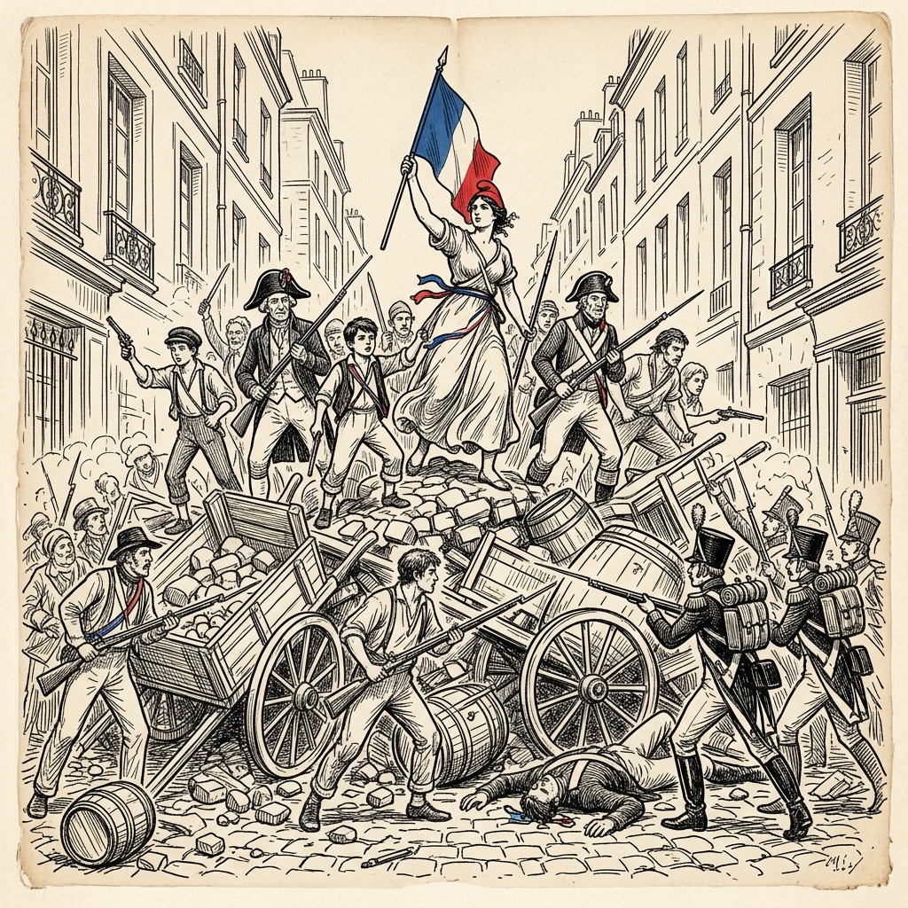
Upadek monarchii restaurowanej w lipcu 1830 roku stanowi jeden z najbardziej wyrazistych punktów zwrotnych w dziewiętnastowiecznej historii Francji. Proces ten, choć gwałtowny, nie był jedynie dziełem przypadku czy nagłego wybuchu niezadowolenia społecznego. Był to kryzys strukturalny, wynikający z niemożliwości pogodzenia ultralegitymistycznych dążeń Karola X z rzeczywistością społeczną i polityczną porewolucyjnej Francji. Próba cofnięcia zegara historii przez monarchę, którego symbolem stały się ordonanse lipcowe, doprowadziła do ostatecznego załamania się starszej linii Burbonów i narodzin nowego eksperymentu ustrojowego - monarchii lipcowej.
Bezpośrednim impulsem, który pchnął Paryż do walki barykadowej, było ogłoszenie przez gabinet Jules’a de Polignaca 26 lipca 1830 roku pięciu ordonansów (dekretów królewskich), które drastycznie łamały kompromis zawarty w Karcie Konstytucyjnej z 1814 roku. Ordonanse te wprowadzały:
Reakcja paryskiej opinii publicznej była natychmiastowa. Kluczową rolę w pierwszej fazie oporu odegrali dziennikarze, na których czele stanął młody i ambitny publicysta Adolphe Thiers. Na łamach dziennika Le National opublikowano uroczysty protest, w którym ogłoszono, że rząd złamał prawo, w związku z czym obywatele nie są już zobowiązani do posłuszeństwa. Decydujące znaczenie miało jednak wyjście na ulice mas ludowych - rzemieślników, robotników, studentów oraz zdemobilizowanych żołnierzy napoleońskich.
27 lipca (pierwszy dzień chwały): Paryż pokrył się pierwszymi barykadami. Zamknięcie drukarni przez policję pozbawiło pracy setki zecerów i robotników drukarskich, którzy stali się awangardą protestu. Komendantem wojskowym Paryża mianowano marszałka Auguste’a de Marmonta, postać powszechnie znienawidzoną za kapitulację Paryża w 1814 roku. Marmont dysponował zbyt szczupłymi siłami (około 11 tysięcy żołnierzy), z których wielu sympatyzowało z demonstrantami.
28 lipca (drugi dzień chwały): Walki przybrały charakter regularnego powstania ludowego. Powstańcy opanowali ratusz (Hôtel de Ville) oraz katedrę Notre-Dame, na której wieżach załopotała zakazana od 1815 roku trójkolorowa flaga (tricolore). Marmont próbował pacyfikować miasto, wysyłając kolumny wojska w wąskie, labiryntowe uliczki Paryża, co okazało się taktyczną katastrofą. Żołnierze byli dziesiątkowani przez ogień z okien i dachów, z których zrzucano na nich meble, brukowce i wrzącą wodę. Całe oddziały zaczęły przechodzić na stronę powstańców.
29 lipca (trzeci dzień chwały): Powstańcy zdobyli Luwr i Tuileries. Wojska królewskie zostały zmuszone do chaotycznego odwrotu w kierunku Saint-Cloud, gdzie przebywał Karol X. W tym samym czasie w Paryżu ukonstytuował się komitet doradczy (złożony z liberalnych deputowanych), który powołał Gwardię Narodową pod dowództwem sędziwego bohatera dwóch światów - generała Lafayette’a.
Karol X, zdając sobie sprawę z klęski militarnej, wycofał ordonanse i zdymisjonował Polignaca, lecz na ratowanie korony było już za późno. Rewolucyjny Paryż nie chciał słyszeć o ugodzie z Burbonami. 2 sierpnia 1830 roku w Rambouillet Karol X podpisał akt abdykacji, zmuszając do tego samego swojego najstarszego syna, Ludwika Antoniego (księcia Angoulême). Monarcha usiłował przekazać koronę swojemu wnukowi, małoletniemu Henrykowi, hrabiemu Chambord (znanemu jako Henryk V), mianując jednocześnie Ludwika Filipa Orleańskiego rejentem.
Wizja republiki przerażała jednak umiarkowaną, liberalną burżuazję, która obawiała się powrotu jakobińskiego terroru i interwencji Świętego Przymierza. Thiers i Lafayette podjęli genialną grę polityczną, promując kandydaturę Ludwika Filipa, przedstawiciela młodszej linii Burbonów (orleańskiej), jako „króla-obywatela”, który połączy tradycję monarchiczną z rewolucyjnym dziedzictwem (Agulhon, 1979). 9 sierpnia 1830 roku, po zaprzysiężeniu zrewidowanej Karty, Ludwik Filip I został proklamowany nie „królem Francji” (roi de France), lecz „królem Francuzów” (roi des Français).
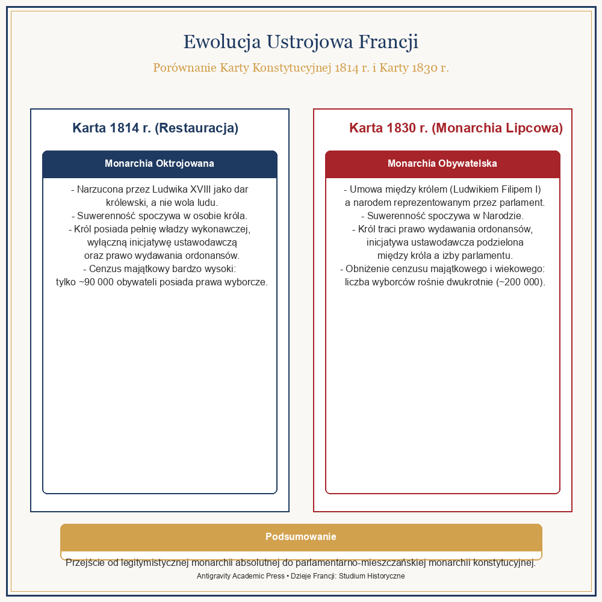
Monarchia lipcowa (1830-1848) była realizacją doktryny liberalnego konstytucjonalizmu, określanej mianem juste milieu (złotego środka) - systemu sytuującego się między despotyzmem absolutnym a radykalizmem demokratycznym. Nowy ustrój opierał się na zrewidowanej Karcie Konstytucyjnej z 1830 roku, która nie była już „oktrojowana” (nadana dobrowolnie przez władcę), lecz stanowiła umowę dwustronną między suwerennym narodem a powołanym przezeń królem.
Do najważniejszych modyfikacji ustrojowych należały:
W praktyce parlamentarnej ukształtowały się dwa główne obozy polityczne w łonie orleanizmu. Pierwszym była Partia Ruchu (Parti du Mouvement), kierowana przez Jacques’a Laffitte’a i Odilona Barrota, która traktowała rewolucję 1830 roku jako punkt wyjścia do dalszych reform demokratycznych i aktywnej polityki zagranicznej (wspieranie ruchów narodowowyzwoleńczych w Europie). Drugim była Partia Oporu (Parti de la Résistance), której przewodzili Casimir Périer oraz François Guizot. Uważali oni, że rewolucja dokonała koniecznej korekty ustrojowej i proces ten należy uznać za zamknięty, a głównym zadaniem państwa jest stabilizacja, ochrona porządku publicznego oraz obrona własności prywatnej. Od 1840 roku to właśnie linia konserwatywna (reprezentowana przez Guizota) zdominowała politykę francuską.
Monarchia lipcowa bywa w historiografii (zwłaszcza pod wpływem analiz Karola Marksa) nazywana „spółką akcyjną” powołaną do eksploatacji bogactwa narodowego Francji przez wąską elitę finansową. Rzeczywiście, nowa elita władzy składała się z bankierów (takich jak James de Rothschild czy Casimir Périer), wielkich właścicieli ziemskich o burżuazyjnym rodowodzie, spekulantów giełdowych, właścicieli kopalń oraz wyższych urzędników państwowych. To oni tworzyli tzw. pays légal (kraj legalny) - grupę posiadającą pełnię praw politycznych, w opozycji do pays réel (kraju rzeczywistego), czyli pozbawionej praw wyborczych większości narodu.
Symbolem tej epoki stało się hasło przypisywane François Guizotowi, pełniącemu funkcję faktycznego szefa rządu w latach 1840-1848:
„Bogaćcie się!” (Enrichissez-vous!)
Wypowiedź ta, często cytowana w oderwaniu od kontekstu jako dowód cynizmu władzy, w rzeczywistości stanowiła element szerszego wykładu filozofii politycznej Guizota. Odpowiadając na żądania opozycji dotyczące rozszerzenia praw wyborczych poprzez obniżenie cenzusu, Guizot argumentował, że kluczem do uzyskania praw politycznych nie jest zmiana prawa, lecz indywidualny awans ekonomiczny. „Bogaćcie się przez pracę i oszczędność, a staniecie się wyborcami” - brzmiała pełna myśl ministra. Dla Guizota własność była gwarantem rozsądku, wykształcenia i odpowiedzialności politycznej; dopuszczenie do głosowania mas nieposiadających musiało, jego zdaniem, doprowadzić do anarchii i nowego terroru.
System Guizota opierał się na ścisłej kontroli nad parlamentem. Rząd masowo wykorzystywał tzw. deputowanych-urzędników (posłów, którzy jednocześnie piastowali płatne posady rządowe), co pozwalało na łatwe korumpowanie Izby Deputowanych poprzez rozdawnictwo synekur, koncesji i orderów. Ta stabilność polityczna, oparta na oligarchii finansowej, sprzyjała akumulacji kapitału, lecz jednocześnie rodziła głęboką frustrację drobnomieszczaństwa, inteligencji oraz rodzącej się klasy robotniczej, które czuły się całkowicie wykluczone z życia publicznego.
Panowanie Ludwika Filipa to okres, w którym Francja wkroczyła w fazę dojrzałej rewolucji przemysłowej. Choć francuski model industrializacji różnił się od brytyjskiego - charakteryzował się większym rozproszeniem geograficznym, silną pozycją rolnictwa oraz dominacją tradycyjnego rzemiosła - to właśnie w latach 1830-1848 nastąpił gwałtowny skok technologiczny i infrastrukturalny.
Podstawą modernizacji stał się rozwój przemysłu ciężkiego (górnictwa i metalurgii) oraz tekstylnego. Wydobycie węgla kamiennego wzrosło z ok. 1,8 miliona ton w 1830 roku do ponad 5 milionów ton w 1848 roku. Powstały wielkie zagłębia przemysłowe, takie jak Nord (wokół Lille) czy Saint-Étienne. Symbolem nowoczesności stały się zakłady metalurgiczne Schneidera w Le Creusot, które z małej manufaktury przekształciły się w gigantyczny kombinat produkujący maszyny parowe, szyny i lokomotywy.
Kluczowym czynnikiem integrującym rynek wewnętrzny i stymulującym koniunkturę gospodarczą stała się budowa sieci kolejowej. Przełomem prawnym i finansowym było uchwalenie przez parlament w 1842 roku tzw. ustawy o kolejach (Loi relative à l’établissement des grandes lignes de chemin de fer). Ustawa ta sankcjonowała model partnerstwa publiczno-prywatnego:
Projekt ten, znany jako „Gwiazda Legranda” (od nazwiska dyrektora generalnego dróg i mostów Baptiste’a Alexis Victora Legranda), zakładał budowę systemu linii kolejowych rozchodzących się promieniście z Paryża we wszystkich kierunkach (do Belgii, Strasburga, Lyonu i Marsylii, Bordeaux, Nantes oraz Hawru). W ciągu kilkunastu lat długość linii kolejowych we Francji wzrosła z zaledwie kilkudziesięciu kilometrów w 1830 roku do blisko 2000 kilometrów w roku 1848. Kolej nie tylko zrewolucjonizowała transport towarów i ludzi, obniżając koszty i skracając czas podróży, ale również stała się motorem napędowym dla przemysłu hutniczego i maszynowego.
Gwałtowna industrializacja i urbanizacja odsłoniły najciemniejsze oblicze wczesnego kapitalizmu - narodziny masowego pauperyzmu robotniczego. Francuski proletariat, pozbawiony jakiejkolwiek ochrony prawnej (nadal obowiązywało prawo Le Chapeliera z 1791 roku zakazujące zrzeszania się robotników i strajków), pracował w katastrofalnych warunkach. Dzień pracy trwał od 14 do 16 godzin, powszechny był bezwzględny wyzysk kobiet i dzieci, a pensje kształtowały się na poziomie minimum egzystencji. Raporty higienistów, takie jak słynne dzieło Louisa René Villermégo z 1840 roku (Ariès, 1960) o stanie fizycznym i moralnym robotników, porażały opisami nędzy, chorób (gruźlicy, krzywicy) oraz degradacji społecznej w dzielnicach robotniczych.
Najbardziej dramatycznym przejawem narastającego konfliktu klasowego stały się powstania tkaczy jedwabiu w Lyonie (tzw. canuts). Lyon był wówczas kluczowym ośrodkiem produkcji luksusowych tkanin, opierającym się na systemie nakładczym. Wielcy kupcy dyktowali ceny minimalne, bezwzględnie łamiąc niezależność drobnych rzemieślników i zatrudnianych przez nich czeladników.
Bezpośrednim powodem wybuchu walk była odmowa zaakceptowania przez kupców minimalnego cennika usług (taryfy), który został wcześniej wynegocjowany przy mediacji prefekta departamentu Rodanu, Louisa Bouviera-Dumolarda. Tkacze poczuli się oszukani. 21 listopada 1831 roku robotnicy chwycili za broń, wznosząc na barykadach słynny, dramatyczny sztandar z hasłem:
„Żyć pracując lub umrzeć walcząc” (Vivre en travaillant, ou mourir en combattant).
Po trzydniowych, krwawych walkach ugruntowanych determinacją powstańców, wojsko pod dowództwem generała Rogueta zostało zmuszone do opuszczenia miasta. Lyon znalazł się w rękach powstańców, którzy jednak nie posiadali jasnego programu politycznego i powołali jedynie komitet tymczasowy mający pilnować porządku. Rząd w Paryżu zareagował stanowczo. Do stłumienia buntu wysłano armię liczącą 20 tysięcy żołnierzy pod dowództwem ministra wojny, marszałka Nicolasa Soulta, oraz następcę tronu, księcia Orleanu. 3 grudnia wojska wkroczyły do miasta bez rozlewu krwi, taryfa została unieważniona, a prefekt zdymisjonowany za zbyt ugodową postawę wobec robotników.
Drugie powstanie miało znacznie bardziej polityczny charakter. Wybuchło na tle próby obniżenia płac przez kupców oraz uchwalenia przez parlament restrykcyjnej ustawy wymierzonej w stowarzyszenia wzajemnej pomocy (które de facto pełniły funkcje zalążkowych związków zawodowych). Powstanie to, trwające od 9 do 15 kwietnia 1834 roku, zostało brutalnie stłumione przez wojsko pod dowództwem generała Aimarda. Walki toczyły się o każdą barykadę, a żołnierze dopuszczali się masakr ludności cywilnej (np. w dzielnicy rzeźników). Śmierć poniosło ponad 300 osób. Rebelia ta odbiła się szerokim echem w całej Francji, wywołując solidarnościowe rozruchy republikańskie w Paryżu (masakra mieszkańców kamienicy przy ulicy Transnonain, uwieczniona na słynnej litografii Honoré Daumiera).
| Powstanie tkaczy w Lyonie | Główne przyczyny | Kluczowe hasła / postulaty | Skutki polityczno-społeczne |
|---|---|---|---|
| Listopad 1831 r. | Odrzucenie wynegocjowanej taryfy minimalnej przez kupców jedwabiu. | „Vivre en travaillant, ou mourir en combattant” | Pokazanie siły proletariatu; interwencja wojskowa marszałka Soulta; dymisja liberalnego prefekta. |
| Kwiecień 1834 r. | Obniżka płac; ustawa zakazująca działalności stowarzyszeń robotniczych. | Żądania republiki demokratycznej; obrona prawa do zrzeszania się. | Krwawe stłumienie buntu (ponad 300 zabitych); powiązanie kwestii robotniczej z ruchem republikańskim. |
Powstania lyońskie uświadomiły francuskim elitom politycznym istnienie „kwestii socjalnej”. Jak pisał wówczas przerażony publicysta Saint-Marc Girardin na łamach Journal des Débats:
„Barbaryńcy, którzy zagrażają społeczeństwu, nie są na Kaukazie ani na tatarskich stepach; są na przedmieściach naszych miast przemysłowych”.
Lata 40. XIX wieku przyniosły gwałtowny rozwój teorii socjalistycznych i komunistycznych. To we Francji swoje dzieła tworzyli Louis Blanc (postulujący powołanie warsztatów społecznych finansowanych przez państwo w książce Organizacja pracy), Pierre-Joseph Proudhon (autor słynnego hasła „Własność to kradzież”) czy utopijni socjaliści, jak Étienne Cabet. Coraz silniejsza stawała się także nielegalna opozycja republikańska, która z powodzeniem infiltrowała środowiska robotnicze.
Monarchia lipcowa, mimo pozorów stabilności, sukcesów gospodarczych i dynamicznego rozwoju infrastruktury, stała się zakładniczką własnego konserwatyzmu. Odrzucenie jakichkolwiek reform wyborczych przez Guizota, połączone z kryzysem gospodarczym (nieurodzaj i kryzys finansowy lat 1846-1847), stworzyło wybuchową mieszankę. Wykluczenie polityczne drobnomieszczaństwa oraz skrajna nędza proletariatu doprowadziły w lutym 1848 roku do kolejnego wybuchu rewolucyjnego, który ostatecznie zmiótł z tronu Ludwika Filipa, grzebiąc ideę monarchii konstytucyjnej we Francji.
Upadek monarchii lipcowej w lutym 1848 roku nie był dziełem nagłego, odizolowanego wstrząsu, lecz rezultatem strukturalnego kryzysu systemu polityczno-ustrojowego, którego ramy wyznaczała Karta Konstytucyjna z 1830 roku. Reżim Ludwika Filipa I, oparty na dominacji wielkiej burżuazji finansowej (tzw. oligarchii bankierskiej), z biegiem lat stawał się coraz bardziej anachroniczny wobec dynamicznych przemian społeczno-gospodarczych doby rewolucji przemysłowej. Głównym architektem politycznego paraliżu państwa w latach czterdziestych XIX wieku był François Guizot, kierujący faktycznie rządem jako minister spraw zagranicznych, a od 1847 roku jako premier. Guizot, wyznawca doktryny doktrynerów i zwolennik teorii suwerenności rozumu (w przeciwieństwie do suwerenności ludu), konsekwentnie odrzucał wszelkie postulaty reformy wyborczej. Jego słynne, choć często wyrywane z kontekstu wezwanie Enrichissez-vous par le travail et par l’épargne („Bogaćcie się przez pracę i oszczędność”) stanowiło kwintesencję filozofii politycznej, która prawo głosu rezerwowała wyłącznie dla elit posiadających odpowiedni cenzus majątkowy. W przededniu 1848 roku prawo wyborcze przysługiwało zaledwie około 240 tysiącom obywateli w blisko 35-milionowym państwie.
Frustracja drobnomieszczaństwa, inteligencji oraz rodzącego się proletariatu fabrycznego uległa gwałtownemu pogłębieniu na skutek kryzysu gospodarczego lat 1846-1847. Nieurodzaj ziemniaków i zbóż doprowadził do drastycznego wzrostu cen żywności, co z kolei wywołało spadek popytu na artykuły przemysłowe, masowe bankructwa przedsiębiorstw i gwałtowny wzrost bezrobocia. W miastach takich jak Paryż, Lyon czy Rouen nędza robotników osiągnęła poziom krytyczny, stając się podatnym gruntem dla radykalnych idei socjalistycznych i republikańskich.
Wobec policyjnego zakazu zgromadzeń publicznych oraz rygorystycznego prawa o stowarzyszeniach z 1834 roku, opozycja dynastyczna (na czele z Odilonem Barrotem) oraz republikanie (skupieni wokół umiarkowanego dziennika Le National i radykalniejszego La Réforme) zmuszeni zostali do poszukiwania alternatywnych form mobilizacji społecznej. Narzędziem tym stała się tzw. kampania bankietowa (campagne des banquets), zainicjowana w lipcu 1847 roku w Paryżu. Bankiety, formalnie będące prywatnymi spotkaniami o charakterze towarzyskim, de facto stanowiły fora polityczne, na których wznoszono toasty będące w istocie manifestami programowymi. Domagano się w nich przede wszystkim obniżenia cenzusu wyborczego oraz walki z korupcją rządu Guizota. W ciągu kilku miesięcy w całym kraju odbyło się około 70 bankietów, w których uczestniczyło ponad 20 tysięcy osób. Z czasem ton spotkań ulegał radykalizacji - o ile początkowo dominowały postulaty reformy w ramach monarchii, o tyle pod koniec 1847 roku coraz wyraźniej dochodziły do głosu żądania proklamowania republiki i wprowadzenia powszechnego prawa wyborczego.
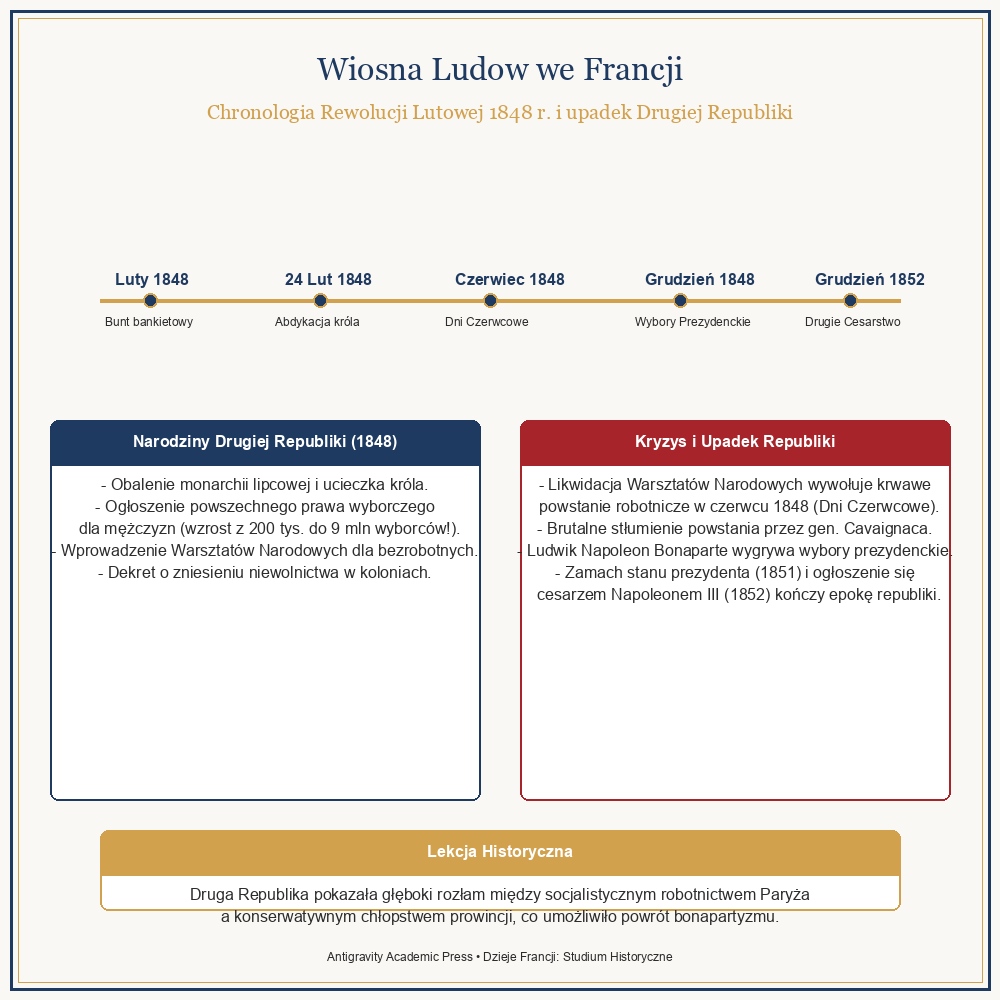
Iskrą, która doprowadziła do wybuchu rewolucji, był rządowy zakaz organizacji wielkiego bankietu zamykającego kampanię, zaplanowanego w Paryżu na 22 lutego 1848 roku. Mimo że umiarkowana opozycja parlamentarna wezwała do zaniechania manifestacji, paryscy robotnicy, rzemieślnicy i studenci wyszli na ulice. Pojawiły się pierwsze barykady, a wznoszone okrzyki Vive la Réforme! („Niech żyje reforma!”) oraz À bas Guizot! („Precz z Guizotem!”) świadczyły o skali napięcia społecznego. Kluczowym momentem okazała się postawa Gwardii Narodowej, rekrutującej się głównie z drobnomieszczaństwa - gwardziści odmówili strzelania do demonstrantów, a w wielu miejscach czynnie ich poparli.
Przerażony rozwojem wypadków Ludwik Filip zdymisjonował 23 lutego François Guizota, co wywołało chwilowy entuzjazm na ulicach stolicy. Jednakże wieczorem tego samego dnia doszło do tragicznego incydentów przed Ministerstwem Spraw Zagranicznych przy Boulevard des Capucines. Wojsko, w niewyjaśnionych do końca okolicznościach, otworzyło ogień do tłumu manifestantów, zabijając kilkadziesiąt osób. Ciała ofiar, załadowane na wóz, obwożono nocą po ulicach Paryża, co wywołało powszechny gniew i doprowadziło do masowego powstania zbrojnego. Paryż pokrył się siecią ponad 1500 barykad.
Dnia 24 lutego 1848 roku sytuacja stała się dla monarchii bezwyjściowa. Wojsko pod dowództwem marszałka Bugeaud okazało się niezdolne do opanowania partyzantki miejskiej. Ludwik Filip abdykował na rzecz swojego dziewięcioletniego wnuka, hrabiego Paryża, i uciekł do Anglii. Próba ustanowienia regencji przez księżnę Orleanu legła jednak w gruzach, gdy uzbrojony tłum wtargnął do Izby Deputowanych. Pod naciskiem mas ludowych i przy porozumieniu dwóch skrzydeł opozycji republikańskiej sformowano Rząd Tymczasowy (Gouvernement provisoire).
W skład rządu weszli reprezentanci różnych nurtów politycznych: od umiarkowanych republikanów (Alphonse de Lamartine, który objął resort spraw zagranicznych, François Arago, Alexandre Marie), przez radykalnych demokratów (Alexandre Ledru-Rollin), aż po socjalistów utopijnych (Louis Blanc) i - po raz pierwszy w historii - przedstawiciela klasy robotniczej, Alexandre’a Martina, znanego jako Albert. Wieczorem 24 lutego, pod presją tłumu zgromadzonego przed paryskim ratuszem (Hôtel de Ville), Lamartine ogłosił powstanie Republiki. To właśnie wtedy wygłosił swoją słynną mowę w obronie trójkolorowego sztandaru (tricolore), odrzucając żądania radykałów domagających się przyjęcia czerwonej flagi jako symbolu rewolucji społecznej. Lamartine argumentował, że czerwony sztandar opłynął jedynie Pola Marsowe w krwi bratobójczej, podczas gdy trójkolorowy przeszedł cały świat niosąc chwałę i wolność ojczyzny.
Druga Republika została oficjalnie proklamowana 25 lutego 1848 roku. Nowe władze natychmiast podjęły szereg fundamentalnych reform demokratycznych:
Najbardziej palącym problemem nowej republiki pozostawała kwestia społeczna (la question sociale). Naciskany przez radykalne masy robotnicze Rząd Tymczasowy wydał 25 lutego dekret gwarantujący „prawo do pracy” (droit au travail) dla wszystkich obywateli. Aby zrealizować to zobowiązanie, 28 lutego utworzono Komisję Rządową ds. Robotników, która od miejsca swoich obrad w Pałacu Luksemburskim przeszła do historii jako Komisja Luksemburska. Na jej czele stanęli Louis Blanc i Albert. Komisja ta, będąca w istocie bezbudżetowym substytutem ministerstwa pracy, stała się forum debaty nad reorganizacją pracy, arbitrażu w sporach przemysłowych oraz inkubatorem idei socjalistycznych, takich jak zrzeszenia wytwórcze (kooperatywy).
Równolegle, z inicjatywy ministra robót publicznych Pierre’a Marie (przeciwnika Blanca), powołano do życia Warsztaty Narodowe (Ateliers nationaux). Choć powszechnie kojarzone z teoriami Louisa Blanca przedstawionymi w jego rozprawie L’Organisation du travail (gdzie postulował on tworzenie samorządnych „warsztatów społecznych”), w rzeczywistości Warsztaty Narodowe stanowiły karykaturę jego pomysłów. Zamiast produktywnych zrzeszeń przemysłowych, rząd stworzył gigantyczny program robót publicznych o charakterze niemal charytatywnym, zarządzany w sposób paramilitarny przez Émile’a Thomasa.
Robotnicy zatrudnieni w Warsztatach Narodowych zajmowali się głównie prymitywnymi pracami ziemnymi, niwelowaniem terenu, sadzeniem drzewek na bulwarach oraz brukowaniem ulic. Liczba chętnych przerosła jednak wszelkie oczekiwania: w marcu było to 20 tysięcy osób, w maju już ponad 110 tysięcy. Państwo nie było w stanie zapewnić produktywnego zajęcia tak wielkiej rzeszy ludzi, wypłacano im więc zasiłek (tzw. solde de chômage) w wysokości 1 franka dziennie za dni bezczynności (podczas gdy dniówka robocza wynosiła 2 franki).
Dla konserwatywnej prowincji oraz paryskiej burżuazji Warsztaty Narodowe stały się symbolem marnotrawstwa publicznych pieniędzy, lenistwa oraz wylęgarnią rewolucyjnej agitacji. Sytuację finansową republiki pogorszyło wprowadzenie przez ministra finansów Louisa-Antoine’a Garnier-Pagèsa tzw. podatku 45 centymów (dodatkowe 45% do dotychczasowych podatków bezpośrednich). Obciążenie to uderzyło przede wszystkim w drobne chłopstwo, budząc na prowincji głęboką niechęć do „czerwonego Paryża” i jego kosztownych eksperymentów społecznych.
Pierwsze w historii powszechne wybory do Jednoizbowego Zgromadzenia Konstytucyjnego (Konstytuanty), które odbyły się 23 kwietnia 1848 roku, przyniosły druzgocącą klęskę radykalnej lewicy i socjalistom. Prowincjonalna Francja, kontrolowana przez kler i lokalnych notabli (notables), zagłosowała na umiarkowanych republikanów (ok. 500 mandatów) oraz monarchistów (ok. 300 mandatów, w tym legitymistów i orleanistów). Lewica radykalna i socjaliści zdobyli zaledwie około 80 miejsc. Nowo powołana Komisja Wykonawcza, która zastąpiła Rząd Tymczasowy, zdominowana została przez umiarkowanych konserwatystów, dążących do jak najszybszego wygaszenia rewolucji i stabilizacji kapitalistycznego ładu.
Napięcie między robotniczym Paryżem a konserwatywnym rządem osiągnęło apogeum 15 maja 1848 roku, kiedy to tłum demonstrantów (pod wodzą Louisa Auguste’a Blanquiego, Armanda Barbèsa i François Raspaila) wtargnął do gmachu Konstytuanty pod pretekstem poparcia dla niepodległości Polski. Próba powołania nowego, radykalnego rządu rewolucyjnego została szybko stłumiona przez Gwardię Narodową, a przywódcy lewicy zostali aresztowani. Wydarzenie to ostatecznie skompromitowało ruch robotniczy w oczach opinii publicznej i dało pretekst do likwidacji Warsztatów Narodowych.
Dnia 21 czerwca 1848 roku Komisja Wykonawcza wydała dekret o faktycznej likwidacji Warsztatów Narodowych. Mężczyźni w wieku 18-25 lat mieli zostać wcieleni do armii, a pozostali wysłani na prowincję (m.in. do Sologne) do prac przy melioracji gruntów. Odpowiedzią robotników było natychmiastowe powstanie, które przeszło do historii jako Dni Czerwcowe (Journées de Juin, 23-26 czerwca 1848 r.).
Na ulicach wschodniego Paryża wzniesiono barykady, a walki przybrały charakter niezwykle krwawy i bezkompromisowy. Powstanie nie miało jednego ośrodka dowodzenia ani jasnego programu politycznego; było spontanicznym zrywem zdesperowanych ludzi walczących pod hasłem Du pain ou du plomb! („Chleba lub ołowiu!”) oraz La République démocratique et sociale! („Republika demokratyczna i społeczna!”).
| Frakcja / Siła polityczna | Główne cele polityczne | Baza społeczna | Postawa wobec Powstania Czerwcowego |
|---|---|---|---|
| Umiarkowani Republikanie (Le National) | Konsolidacja republiki parlamentarnej, obrona własności prywatnej | Średnia burżuazja, inteligencja, wolne zawody | Bezwzględne tłumienie przy użyciu armii i Gwardii Narodowej |
| Partia Porządku (Parti de l’Ordre) | Przywrócenie monarchii lub autorytarnych rządów, walka z socjalizmem | Wielka burżuazja, arystokracja, kler, bogate chłopstwo | Poparcie dla pacyfikacji, dążenie do likwidacji reform socjalnych |
| Radykalni Demokraci i Socjaliści | Przebudowa ustroju społecznego, realizacja „prawa do pracy”, interwencjonizm państwowy | Proletariat przemysłowy, rzemieślnicy, drobnomieszczaństwo | Poparcie dla postulatów robotniczych (część przywódców w więzieniach) |
Zgromadzenie Narodowe ogłosiło stan oblężenia i powierzyło dyktatorską władzę ministrowi wojny, generałowi Louisowi-Eugène’owi Cavaignacowi, weteranowi krwawych walk kolonialnych w Algierii. Cavaignac zastosował bezwzględną taktykę wojskową: zamiast rozpraszać siły na barykadach, pozwolił powstańcom na koncentrację, a następnie metodycznie niszczył punkty oporu przy użyciu artylerii.
Do 26 czerwca powstanie zostało utopione we krwi. Bilans walk był przerażający: zginęło od 3 do 5 tysięcy powstańców (w tym arcybiskup Paryża Denys Affre, który próbował mediować między walczącymi), a około 15 tysięcy osób zostało aresztowanych i bez sądu deportowanych do Algierii. Ponad 1,5 tysiąca osób rozstrzelano bez wyroku.
Wydarzenia te wywołały głęboki wstrząs w całej Europie. Karol Marks na łamach Nowej Gazety Reńskiej pisał, że Dni Czerwcowe były pierwszą wielką bitwą między dwoma klasami dzielącymi nowoczesne społeczeństwo - proletariatem i burżuazją. Z kolei Alexis de Tocqueville w swoich Wspomnieniach oceniał powstanie nie jako walkę polityczną o formę rządu, lecz jako wielkie starcie o własność prywatną i porządek społeczny. Krwawe stłumienie powstania czerwcowego oznaczało definitywny koniec iluzji o „Republice braterskiej” i trwale odepchnęło klasę robotniczą od instytucji Drugiej Republiki.
Po spacyfikowaniu Paryża rządy dyktatorskie jako szef Rady Ministrów sprawował gen. Cavaignac. Konstytuanta kontynuowała prace nad nową ustawą zasadniczą, którą uchwalono 4 listopada 1848 roku. Konstytucja Drugiej Republiki była dokumentem pełnym wewnętrznych sprzeczności, odzwierciedlającym lęk przed anarchią oraz dążenie do silnej władzy wykonawczej przy jednoczesnym zachowaniu fasady demokratycznej:
Wybory prezydenckie wyznaczono na 10 grudnia 1848 roku. Głównym faworytem establishmentu republikańskiego był gen. Cavaignac. Do walki stanął jednak również Ludwik Napoleon Bonaparte, bratanek cesarza Napoleona I, który po latach emigracji i nieudanych prób zamachów stanu (w Strasburgu w 1836 r. i Boulogne w 1840 r.) powrócił do Francji po rewolucji lutowej.
Zwycięstwo Bonapartego było oszałamiające. Zdobył on 5,4 miliona głosów (74,3%), podczas gdy Cavaignac uzyskał zaledwie 1,4 miliona, a kandydat lewicy Ledru-Rollin - 370 tysięcy. Sukces ten opierał się na fenomenie „legendy napoleońskiej” (légende napoléonienne), która była niezwykle żywa wśród francuskiego chłopstwa. Dla milionów drobnych rolników nazwisko Bonaparte kojarzyło się z porządkiem, chwałą narodową, stabilizacją własności ziemskiej (zagwarantowanej przez Kodeks Cywilny) oraz obroną przed podatkowym uciskiem paryskich republikanów. Jednocześnie Ludwika Napoleona poparła konserwatywna Partia Porządku (Parti de l’Ordre), kierowana przez Adolphe’a Thiersa, który naiwnie sądził, że książę-prezydent jest „miernotą, którą łatwo będzie kierować”. Bonaparte jawił się jako kandydat kompromisowy, zdolny do zjednoczenia podzielonego narodu pod hasłami walki z nędzą (co deklarował w swojej broszurze L’Extinction du paupérisme z 1844 r.) oraz obrony religii i własności.
Wybory parlamentarne w maju 1849 roku potwierdziły konserwatywny zwrot społeczeństwa. Zwycięstwo odniosła Partia Porządku (ok. 450 mandatów), podczas gdy umiarkowani republikanie zostali zmarginalizowani. Lewica (tzw. Nowa Góra - Nouvelle Montagne) odniosła jednak niespodziewanie dobry wynik (ok. 180 mandatów), co wywołało panikę wśród elit rządzących.
W czerwcu 1849 roku, po nieudanej demonstracji zorganizowanej przez Ledru-Rollina przeciwko francuskiej interwencji wojskowej w Rzymie (która przywróciła władzę papieża Piusa IX i obaliła Republikę Rzymską), rząd przystąpił do systematycznego demontażu swobód demokratycznych. Wprowadzono stan oblężenia, ograniczono wolność prasy i stowarzyszeń.
W marcu 1850 roku uchwalono tzw. prawo Falloux (loi Falloux), które oddawało szkolnictwo pod faktyczną kontrolę Kościoła katolickiego, co miało uchronić młodzież przed wpływami idei socjalistycznych. Kulminacją reakcyjnej polityki Zgromadzenia było prawo wyborcze z 31 maja 1850 roku. Choć formalnie nie zniesiono powszechnego prawa wyborczego, wprowadzono wymóg trzyletniego zamieszkiwania w jednej gminie oraz płacenia podatków bezpośrednich, co wymagało poświadczenia przez pracodawcę. Ustawa ta de facto pozbawiła prawa głosu blisko 3 miliony najuboższych robotników, migrantów zarobkowych i rzemieślników, eliminując najbardziej radykalną część elektoratu.
W miarę zbliżania się końca kadencji prezydenckiej w 1852 roku, konflikt między Ludwikiem Napoleonem a Zgromadzeniem Prawodawczym stawał się coraz bardziej nieuchronny. Zgodnie z konstytucją Bonaparte nie mógł ubiegać się o reelekcję, a podjęta przez niego próba rewizji konstytucji w parlamencie w lipcu 1851 roku zakończyła się niepowodzeniem (nie uzyskano wymaganej większości 2/3 głosów).
Prezydent postanowił wówczas rozegrać partię poza ramami prawa, pozycjonując się jako obrońca suwerenności ludu i powszechnego prawa wyborczego przeciwko „oligarchicznemu” i „reakcyjnemu” parlamentowi. Rozpoczął intensywne przygotowania do zamachu stanu, obsadzając kluczowe stanowiska wojskowe swoimi zaufanymi ludźmi (gen. Jacques Leroy de Saint-Arnaud jako minister wojny, gen. Bernard Pierre Magnan jako dowódca garnizonu paryskiego, Émile de Maupas jako prefekt policji). Operacji nadano kryptonim „Rubikon”.
Zamach stanu został przeprowadzony w nocy z 1 na 2 grudnia 1851 roku (w rocznicę zwycięstwa Napoleona I pod Austerlitz oraz jego koronacji cesarskiej). Wojsko obsadziło najważniejsze punkty strategiczne w Paryżu, w tym gmach Zgromadzenia Narodowego. Na murach stolicy rozklejono proklamacje prezydenckie, w których ogłaszano:
Aresztowano prewencyjnie przywódców opozycji parlamentarnej, zarówno monarchistów (Adolphe Thiers, gen. Nicolas Changarnier), jak i republikanów. Próba zorganizowania oporu w Paryżu przez grupę republikańskich deputowanych (w tym Victora Hugo i Victora Schœlchera) zakończyła się niepowodzeniem. Na barykadach wzniesionych 3 i 4 grudnia walczyło zaledwie kilkuset robotników, zniechęconych do obrony parlamentu, który wcześniej pozbawił ich praw wyborczych. Wojsko brutalnie spacyfikowało demonstracje na bulwarach paryskich, otwierając ogień do bezbronnych przechodniów (zginęło około 300-400 osób). Na barykadzie przy rue Sainte-Marguerite zginął m.in. deputowany Jean-Baptiste Baudin, którego śmierć stała się później symbolem męczeństwa republikańskiego.
O ile Paryż pozostał stosunkowo bierny, o tyle na prowincji (zwłaszcza w południowo-wschodniej i środkowej Francji - m.in. w Prowansji, Alpach Dolnych, departamencie Var czy Nièvre) wybuchły masowe powstania chłopskie w obronie republiki i konstytucji. Był to największy zryw prowincjonalny we Francji od czasów rewolucji 1789 roku. Rząd stłumił te powstania z całą bezwzględnością. Wprowadzono stan oblężenia w 32 departamentach, a powołane komisje mieszane (commissions mixtes) skazały ponad 26 tysięcy osób: blisko 10 tysięcy deportowano do Algierii, a tysiące innych uwięziono lub zmuszono do emigracji (w tym Victora Hugo, który udał się na wygnanie na wyspy Jersey i Guernsey).
Ludwik Napoleon Bonaparte poszukiwał legitymizacji swoich działań na drodze plebiscytowej. W dniach 20-21 grudnia 1851 roku obywatele Francji w powszechnym głosowaniu przytłaczającą większością głosów (7,4 miliona „tak” wobec 640 tysięcy „nie”) zaaprobowali zamach stanu i powierzyli prezydentowi misję opracowania nowej konstytucji.
Nowa ustawa zasadnicza, ogłoszona 14 stycznia 1852 roku, wzorowana była na konstytucji konsularnej z 1799 roku. Prezydent otrzymywał pełnię władzy wykonawczej na okres 10 lat, z wyłącznym prawem inicjatywy ustawodawczej oraz prawem mianowania ministrów, którzy odpowiadali wyłącznie przed nim. Ciało Ustawodawcze (Corps législatif) zostało pozbawione realnego wpływu na rządy, a Senat składał się z członków mianowanych dożywotnio przez prezydenta.
Ostatnim etapem ewolucji ustrojowej ku rządom osobistym było oficjalne przywrócenie godności cesarskiej. Po kolejnym plebiscycie z listopada 1852 roku (7,8 miliona głosów za), 2 grudnia 1852 roku Ludwik Napoleon Bonaparte został proklamowany Cesarzem Francuzów jako Napoleon III.
Upadek Drugiej Republiki i narodziny Drugiego Cesarstwa stanowiły klasyczny przykład procesu, który we współczesnej politologii określa się mianem autorytarnej regresji demokracji plebiscytowej. Doświadczenie lat 1848-1852 ujawniło głębokie pęknięcie wewnątrz francuskiego społeczeństwa, w którym dynamicznie rozwijający się proletariat miejski i radykalna inteligencja zderzyły się z potężnym, konserwatywnym blokiem agrarno-mieszczańskim.
W debacie historiograficznej interpretacje tych wydarzeń ulegały ewolucji:
Druga Republika, choć trwała zaledwie cztery lata, pozostawiła po sobie trwałe dziedzictwo ustrojowe i społeczne. Pokazała, że samo wprowadzenie powszechnego prawa wyborczego, bez stabilnych instytucji pośredniczących oraz bez rozwiązania palących problemów socjalno-bytowych najuboższych warstw społecznych, może stać się narzędziem w rękach populistycznego przywódcy, dążącego do likwidacji wolności obywatelskich w imię porządku i bezpieczeństwa publicznego.
Rrządy Ludwika Napoleona Bonapartego, najpierw jako Prezydenta II Republiki, a od 2 grudnia 1852 roku jako Cesarza Francuzów Napoleona III, stanowią jeden z najbardziej wieloznacznych i dynamicznych okresów w nowożytnej historii Francji. Drugie Cesarstwo (1852-1870) jawi się w historiografii jako epoka głębokich sprzeczności. Z jednej strony charakteryzowało się ono bezwzględnym autorytaryzmem, dławieniem wolności obywatelskich i policyjnym nadzorem nad społeczeństwem, z drugiej zaś - bezprecedensowym skokiem cywilizacyjnym, rewolucją urbanistyczną, liberalizacją gospodarczą oraz śmiałą, choć ostatecznie tragiczną w skutkach polityką zagraniczną. Analiza tego okresu wymaga wyjścia poza uproszczone dychotomie i przyjrzenia się ewolucji ustrojowej państwa, którego struktury ewoluowały od dyktatury ku zaskakującym formom parlamentaryzmu.
Punktem wyjścia dla ustroju Drugiego Cesarstwa był zamach stanu z 2 grudnia 1851 roku, który brutalnie położył kres II Republice. Nowa konstytucja, promulgowana w styczniu 1852 roku, wzorowana była na ustawie zasadniczej Konsulatu z 1799 roku. Skupiała ona pełnię władzy wykonawczej i ustawodawczej w rękach Prezydenta (wkrótce Cesarza), sprowadzając ciało ustawodawcze (Corps Législatif) oraz Senat do roli instytucji fasadowych. System ten, określany mianem „cezaryzmu demokratycznego” lub bonapartyzmu, opierał się na bezpośredniej więzi między monarchą a ludem, legitymizowanej instytucją plebiscytu. Bonapartyzm w swej pierwszej, autorytarnej fazie (1852-1860) dążył do depolityzacji społeczeństwa. Wolność prasy została drastycznie ograniczona poprzez system ostrzeżeń (système des avertissements), który pozwalał administracji rządowej na zawieszanie pism bez wyroku sądowego. Opozycja republikańska i rojalistyczna została rozbita, a jej liderzy (w tym Victor Hugo) udali się na wygnanie. Kluczowym narzędziem kontroli politycznej stała się instytucja „oficjalnego kandydata” (candidat officiel) - rząd aktywnie wspierał lojalnych wobec cesarza pretendentów do parlamentu, wykorzystując cały aparat administracyjny, od prefektów po merów, do wywierania nacisku na wyborców.
Jednakże ewolucja Drugiego Cesarstwa ku fazie liberalnej (1860-1870) nie była dziełem przypadku, lecz efektem przemyślanej akomodacji politycznej wobec zmieniającego się układu sił społecznych i międzynarodowych. Przełom roku 1859 i 1860 przyniósł zaangażowanie Francji w zjednoczenie Włoch, co zraziło do Napoleona III jego dotychczasowy filar poparcia - konserwatywnych katolików, obawiających się utraty świeckiej władzy papieża. Jednocześnie podpisanie w 1860 roku traktatu o wolnym handlu z Wielką Brytanią (traktat Cobden-Chevalier) wywołało wściekłość protekcjonistycznie nastawionej burżuazji przemysłowej.
Szukając nowej bazy społecznej, cesarz podjął ryzykowną grę z liberalną lewicą i klasą robotniczą. Dekrety z listopada 1860 roku przywróciły Senatowi i Ciału Ustawodawczemu prawo do redagowania adresu w odpowiedzi na mowę tronową oraz prawo do publikowania debat parlamentarnych w prasie. Kolejne lata przyniosły dalsze koncesje:
Zwieńczeniem tego procesu było powołanie w styczniu 1870 roku rządu Émile’a Olliviera - dawnego republikanina, który stanął na czele tzw. Cesarstwa Liberalnego (l’Empire libéral). Nowa konstytucja, zatwierdzona w plebiscycie z 8 maja 1870 roku przytłaczającą większością głosów (ponad 7,3 miliona „za”), przekształcała Francję w monarchię parlamentarno-konstytucyjną. Ironią losu pozostaje fakt, że ten zrekonstruowany i cieszący się szerokim poparciem społecznym system runął zaledwie kilka miesięcy później w wyniku klęski w wojnie z Prusami pod Sedanem.
W debacie historiograficznej (reprezentowanej m.in. przez Pierre’a Milzę czy Maurice’a Agulhona) faza liberalna nie jest już postrzegana jedynie jako koncesja słabnącego dyktatora, lecz jako nowoczesna próba syntezy autorytetu państwowego z wolnościami demokratycznymi, prefigurująca instytucjonalne rozwiązania V Republiki.
Najbardziej trwałym i spektakularnym pomnikiem Drugiego Cesarstwa stała się radykalna przebudowa przestrzenna Paryża, którą Napoleon III powierzył w 1853 roku prefektowi departamentu Sekwany, baronowi Georges’owi-Eugène’owi Haussmannowi. Przed 1853 rokiem Paryż pozostawał w swym rdzeniu miastem średniowiecznym - o gęstej, chaotycznej zabudowie, pozbawionym podstawowej infrastruktury sanitarnej, z wąskimi, ciemnymi uliczkami, w których szerzyły się epidemie cholery (zwłaszcza w latach 1832 i 1849). Miasto było nie tylko niewydolne komunikacyjnie, ale również politycznie niestabilne; labirynt wąskich zaułków stanowił idealne środowisko do wznoszenia barykad (Foucault, 1975), co udowodniły rewolucje lat 1830 i 1848.
Modernizacja Haussmanna opierała się na trzech komplementarnych paradygmatach: estetycznym, sanitarnym oraz strategiczno-militarnym.
[ PARADYGMATY MODERNIZACJI PARYŻA ]
│
┌─────────────────────────┼─────────────────────────┐
▼ ▼ ▼
[ ESTETYCZNY ] [ SANITARNY ] [ STRATEGICZNY ]
- Osiowość i symetria - Sieć wodno-kanalizacyjna - Likwidacja zaułków
- Perspektywy pomnikowe - Zielone płuca miasta - Szerokie bulwary
- Jednolita fasada - Cyrkulacja powietrza - Szybki transport wojskWymiar sanitarny i higienistyczny, inspirowany bezpośrednio fascynacją Napoleona III nowoczesną infrastrukturą Londynu, opierał się na teorii miazmatycznej oraz dążeniu do zapewnienia miastu „światła i powietrza” (l’air et la lumière). Haussmann, współpracując z inżynierem Eugène’em Belgrandem, stworzył gigantyczny system akweduktów doprowadzających czystą wodę pitną do stolicy oraz nowoczesną sieć kanalizacyjną (ponad 560 kilometrów podziemnych kolektorów), która radykalnie obniżyła śmiertelność mieszkańców. Ponadto, we współpracy z Jean-Charles’em Alphandem, utworzono system zieleni miejskiej - od wielkich kompleksów leśnych na obrzeżach (Lasek Buloński i Lasek Wincencki) po miejskie parki (Buttes-Chaumont, Parc Monceau) i liczne skwery, które miały pełnić funkcję „płuc Paryża”.
Wymiar estetyczny opierał się na rygorystycznej geometrii i monumentalizmie. Haussmann wytyczył wielkie osie komunikacyjne (tzw. grande croisée północ-południe i wschód-zachód), których symbolem stały się bulwary Sébastopol, Saint-Michel oraz Saint-Germain. Nowe arterie projektowano tak, aby zamykały się spektakularnymi perspektywami na monumentalne gmachy publiczne - takie jak nowa Opera Garniera, Dworzec Północny czy Łuk Triumfalny, od którego promieniście rozchodziło się dwanaście nowych alei (w tym Avenue de l’Impératrice, obecnie Avenue Foch). Narzucono surowe przepisy budowlane: kamienice czynszowe wznoszone wzdłuż bulwarów musiały mieć jednolitą wysokość, zbliżone proporcje oraz charakterystyczne, ciągłe balkony na drugim i piątym piętrze, co stworzyło spójny, burżuazyjny styl architektoniczny, do dziś definiujący tożsamość wizualną Paryża.
Wymiar strategiczno-militarny przebudowy, choć często maskowany retoryką modernizacyjną, odgrywał rolę kluczową. Szerokie, proste bulwary uniemożliwiały skuteczne wznoszenie barykad, które w dawnych, wąskich uliczkach można było zbudować w kilka minut przy użyciu przewróconego wozu i bruku. Co więcej, szerokość nowych arterii pozwalała na swobodne manewrowanie kolumnami wojskowymi, szarże kawalerii oraz użycie artylerii polowej wprost przeciwko tłumom powstańców. Haussmann celowo połączył szerokimi bulwarami kluczowe koszary wojskowe (np. Caserne du Prince-Eugène) z tradycyjnymi ogniskami rewolucyjnymi w robotniczych dzielnicach wschodniego Paryża (takich jak Saint-Antoine) oraz z nowo powstałymi dworcami kolejowymi, co umożliwiało błyskawiczny przerzut wojsk z prowincji w razie wybuchu zamieszek.
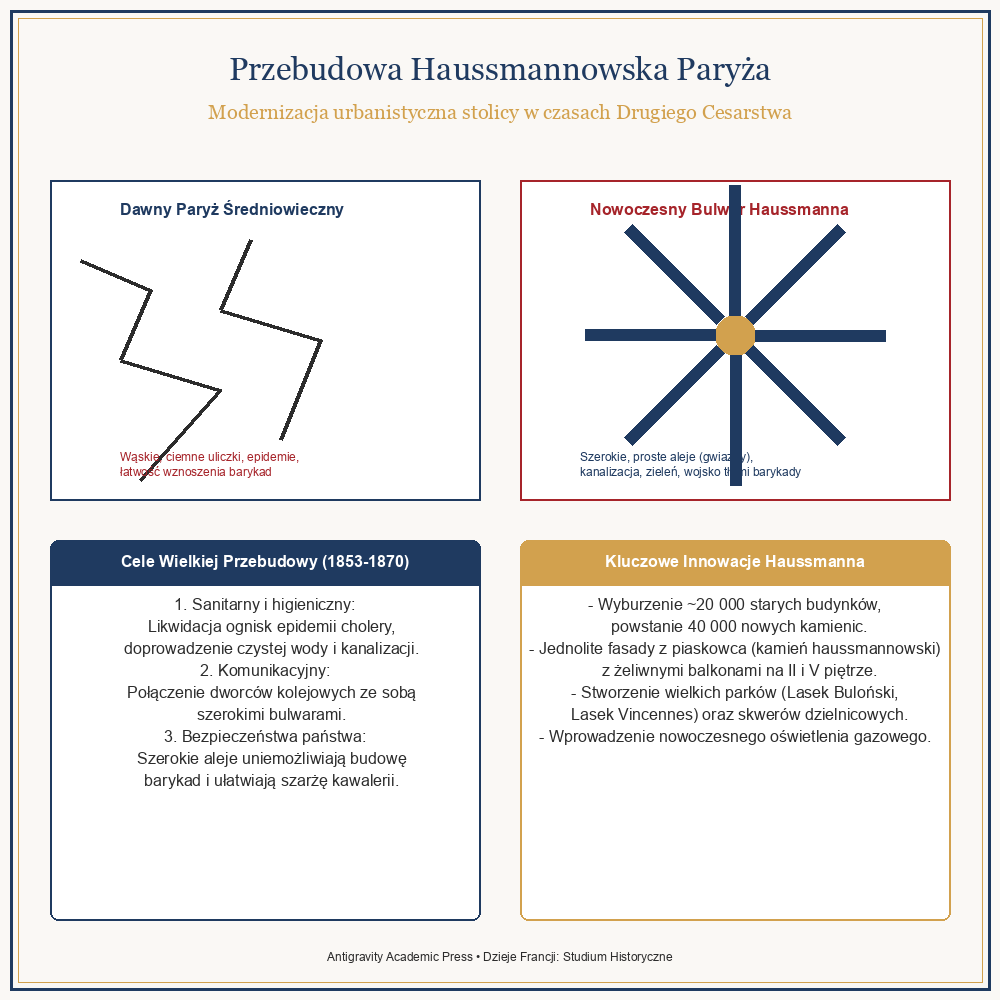
Koszty społeczne i finansowe tej gigantycznej operacji były jednak ogromne i stały się zarzewiem krytyki reżimu. Wywłaszczenia i wyburzenia objęły około 20 000 domów, co doprowadziło do przymusowego wysiedlenia setek tysięcy ubogich mieszkańców z historycznego centrum miasta. Zjawisko to zapoczątkowało proces brutalnej gentryfikacji i segregacji przestrzennej. Klasa robotnicza została wypchnięta na peryferie - do nowo przyłączonych w 1860 roku gmin, takich jak Belleville, Ménilmontant czy La Villette, tworząc wokół bogatego, burżuazyjnego centrum tzw. „czerwony pas” (ceinture rouge), co paradoksalnie ułatwiło polaryzację społeczną podczas Komuny Paryskiej w 1871 roku.
Finansowanie prac, oparte na skomplikowanym systemie kredytów, obligacji miejskich i spekulacji gruntami, stało się celem druzgocącego ataku ze strony opozycji liberalnej. W 1867 roku Jules Ferry opublikował głośny pamflet Les Comptes fantastiques d’Haussmann (gra słów nawiązująca do operetki Offenbacha Les Contes d’Hoffmann - Opowieści Hoffmanna), obnażający gigantyczne zadłużenie miasta i korupcję towarzyszącą przetargom, co w 1870 roku zmusiło cesarza do zdymisjonowania prefekta.
Drugie Cesarstwo było okresem bezprecedensowej koniunktury gospodarczej, która przekształciła Francję w nowoczesne państwo przemysłowe. Filozofia ekonomiczna Napoleona III była głęboko zakorzeniona w ideach saint-simonizmu - prądu umysłowego głoszącego, że postęp techniczny, rozwój przemysłu oraz racjonalne zarządzanie kapitałem są kluczem do rozwiązania problemów społecznych i eliminacji ubóstwa (czemu cesarz dał wyraz jeszcze przed objęciem władzy w broszurze L’Extinction du paupérisme z 1844 roku).
Fundamentem tej rewolucji gospodarczej stała się radykalna reforma systemu finansowego. Tradycyjny, konserwatywny system bankowy, zdominowany przez tzw. Haute Banque (reprezentowaną m.in. przez ród Rothschildów), nie był w stanie sprostać gigantycznemu zapotrzebowaniu na kapitał inwestycyjny. W 1852 roku bracia Émile i Isaac Pereire, przy poparciu cesarza, założyli Société Générale de Crédit Mobilier. Był to pionierski bank inwestycyjny, który gromadził kapitał poprzez emisję obligacji i akcji o niskich nominałach, a następnie inwestował go bezpośrednio w przedsięwzięcia infrastrukturalne i przemysłowe. Mimo spektakularnego bankructwa Crédit Mobilier w 1867 roku na skutek nadmiernej spekulacji, instytucja ta trwale zrewolucjonizowała francuski rynek finansowy, torując drogę dla powstania innych gigantów bankowości depozytowej i inwestycyjnej, takich jak Crédit Lyonnais (1863) czy Société Générale (1864).
Równolegle nastąpiła dynamiczna ekspansja sieci kolejowej, która zintegrowała rynek krajowy. Długość linii kolejowych wzrosła z niecałych 3 000 kilometrów w 1851 roku do ponad 17 000 kilometrów w 1870 roku. Państwo aktywnie wspierało ten rozwój poprzez system gwarancji minimalnego zysku dla prywatnych towarzystw kolejowych, które zostały skonsolidowane w sześć wielkich kompanii regionalnych (m.in. Compagnie des chemins de fer de Paris à Lyon et à la Méditerranée - PLM). Rozwój kolei stymulował popyt na stal, węgiel i maszyny, co doprowadziło do potężnego rozkwitu francuskiego hutnictwa i górnictwa (zagłębia Nord-Pas-de-Calais, Saint-Étienne, Le Creusot kontrolowane przez ród Schneiderów).
| Wskaźnik gospodarczy | Stan w roku 1851 | Stan w roku 1869 |
|---|---|---|
| Długość linii kolejowych (w km) | ok. 3 500 | ok. 17 000 |
| Produkcja węgla kamiennego (w mln ton) | 4,4 | 13,4 |
| Produkcja surówki żelaza (w tys. ton) | 450 | 1 380 |
| Wartość obrotów handlu zagranicznego (w mln franków) | 2 614 | 6 228 |
Najbardziej spektakularnym symbolem francuskiego geniuszu inżynieryjnego i ekspansji kapitałowej tamtej epoki stała się budowa Kanału Sueskiego. Projekt ten, zainicjowany i kierowany przez francuskiego dyplomatę Ferdinanda de Lessepsa, został zrealizowany przez Compagnie Universelle du Canal Maritime de Suez (założoną w 1858 roku). Mimo gwałtownego oporu dyplomatycznego ze strony Wielkiej Brytanii, która postrzegała projekt jako zagrożenie dla swojej hegemonii w Indiach, kanał został uroczyście otwarty 17 listopada 1869 roku przez cesarzową Eugenię. Inwestycja ta nie tylko skróciła szlaki handlowe między Europą a Azją, ale również ugruntowała pozycję Francji jako globalnego mocarstwa technologicznego i finansowego, stając się jednym z największych triumfów prestiżowych Drugiego Cesarstwa.
W polityce zagranicznej Napoleon III dążył do całkowitego demontażu ładu wiedeńskiego z 1815 roku, który spychał Francję do roli mocarstwa kontrolowanego przez koalicję państw konserwatywnych. Narzędziem do osiągnięcia tego celu miało być oparcie polityki zagranicznej na „zasadzie narodowościowej” (principe des nationalités) - wspieraniu dążeń emancypacyjnych narodów europejskich, co miało doprowadzić do przebudowy mapy kontynentu pod egidą Paryża.
Pierwszym krokiem na drodze do odzyskania przez Francję statusu arbitra Europy był udział w wojnie krymskiej (1853-1856). Napoleon III, wchodząc w koalicję z Wielką Brytanią i Królestwem Sardynii w celu obrony upadającego Imperium Osmańskiego przed ekspansją Rosji, dążył do rozbicia sojuszu rosyjsko-austriackiego, będącego fundamentem Świętego Przymierza. Wojna, mimo ogromnych strat ludzkich (spowodowanych głównie przez epidemie tyfusu i cholery pod Sewastopolem), zakończyła się sukcesem militarnym i dyplomatycznym. Kongres paryski w 1856 roku, któremu przewodniczył francuski minister spraw zagranicznych hrabia Aleksander Colonna-Walewski (naturalny syn Napoleona I), stanowił apogeum prestiżu Drugiego Cesarstwa. Francja powróciła na pozycję centralnego mocarstwa koncertu europejskiego, a Rosja została czasowo wyeliminowana z aktywnej polityki na Bałkanach.
Kolejnym, znacznie bardziej skomplikowanym testem dla imperialnej geopolityki Napoleona III było zaangażowanie w sprawę włoską (Risorgimento). W lipcu 1858 roku cesarz zawarł tajne porozumienie w Plombières z premierem Królestwa Sardynii, Camillo Cavourem. Przewidywało ono wspólną wojnę przeciwko Austrii w celu wyparcia jej z Lombardii i Wenecji oraz utworzenie konfederacji państw włoskich pod przewodnictwem papieża. W zamian za pomoc militarną Francja miała otrzymać Sabaudię i hrabstwo Nicei.
Wojna francusko-austriacka, która wybuchła w 1859 roku, przyniosła krwawe zwycięstwa sprzymierzonych pod Magentą (4 czerwca) i Solferino (24 czerwca). Skala rzezi pod Solferino, która zainspirowała Henry’ego Dunanta do założenia Czerwonego Krzyża, oraz groźba mobilizacji wojsk pruskich nad Renem skłoniły jednak Napoleona III do nagłego i jednostronnego podpisania rozejmu w Villafranca (11 lipca 1859 roku) bez konsultacji z Cavourem. Na mocy pokoju w Zurychu:
Polityka włoska Napoleona III uwikłała go jednak w głębokie sprzeczności strukturalne. Choć cesarz wspierał zjednoczenie Włoch, to jednocześnie - pod naciskiem francuskich katolików - musiał chronić świecką władzę papieża Piusa IX w Rzymie. Od 1849 roku w Rzymie stacjonował francuski garnizon wojskowy, który w 1867 roku pod Mentaną krwawo powstrzymał ochotników Giuseppe Garibaldiego próbujących zdobyć Wieczne Miasto. Ta schizofreniczna polityka - wspieranie zjednoczenia Włoch przy jednoczesnym blokowaniu ogłoszenia Rzymu ich stolicą - pozbawiła Francję naturalnego sojusznika w nadchodzącym starciu z Prusami. Gdy w 1870 roku wybuchła wojna francusko-pruska, osamotnione Drugie Cesarstwo nie mogło liczyć ani na pomoc Włoch, ani Austrii, a wycofanie francuskiego garnizonu z Rzymu we wrześniu 1870 roku pozwoliło wojskom włoskim na ostateczne zajęcie miasta, co dopełniło proces zjednoczenia Półwyspu Apenińskiego kosztem interesów geopolitycznych Francji.
Podsumowując, epoka Napoleona III była kluczowym etapem modernizacji Francji. Choć Drugie Cesarstwo narodziło się z gwałtu na instytucjach demokratycznych i przez lata opierało się na policyjnym autorytaryzmie, to właśnie w tym okresie stworzono nowoczesne ramy instytucjonalne, finansowe i urbanistyczne, które pozwoliły Francji wejść w epokę industrialną. Paradoks tego reżimu polegał na tym, że jego spektakularne sukcesy wewnętrzne - z przebudową Paryża i rewolucją bankową na czele - zostały ostatecznie przesłonięte przez błędy geopolityczne i militarną katastrofę 1870 roku, która pogrzebała dynastię Bonapartego, torując drogę dla Trzeciej Republiki.
Wojna francusko-pruska z lat 1870-1871, będąca punktem zwrotnym w dziewiętnastowiecznej historii Europy, nie była jedynie efektem doraźnego sporu dyplomatycznego, lecz rezultatem głębokich, strukturalnych napięć w europejskim systemie koncertu mocarstw. Od momentu pruskiego zwycięstwa nad Austrią pod Sadową w 1866 roku, francuskie elity polityczne i wojskowe z niepokojem obserwowały dynamiczny proces zjednoczeniowy Niemiec pod przewodnictwem Berlina. Drugie Cesarstwo, targane wewnętrznymi sprzecznościami i słabnącym autorytetem chorującego Napoleona III, poszukiwało sukcesu zewnętrznego, który zneutralizowałby wpływy rosnącej w siłę opozycji republikańskiej i liberalnej.
Bezpośrednim katalizatorem konfliktu stała się kwestia sukcesji tronu hiszpańskiego po detronizacji królowej Izabeli II w 1868 roku. Kandydatura księcia Leopolda von Hohenzollern-Sigmaringen, bocznej linii pruskiej dynastii panującej, została odebrana w Paryżu jako próba geopolitycznego okrążenia Francji. Choć pod naciskiem dyplomatycznym król Prus Wilhelm I wycofał poparcie dla tej kandydatury, francuski minister spraw zagranicznych, książę Antoine de Gramont, dążąc do pełnego upokorzenia Berlina, zażądał od pruskiego monarchy formalnej i wieczystej gwarancji, że żaden przedstawiciel dynastii Hohenzollernów nigdy nie zgłosi pretensji do hiszpańskiej korony.
Do kluczowego spotkania doszło 13 lipca 1870 roku w uzdrowisku Bad Ems, gdzie przebywał Wilhelm I. Francuski ambasador Vincent Benedetti podjął próbę wymuszenia na królu rzeczonej deklaracji podczas jego porannego spaceru. Wilhelm I uprzejmie, lecz stanowczo odmówił dalszych koncesji, uznając sprawę za zamkniętą, o czym niezwłocznie poinformował telegraficznie swojego kanclerza, Otto von Bismarcka.
Bismarck, dostrzegając w zaistniałej sytuacji doskonałą okazję do sprowokowania Francji do wypowiedzenia wojny - co w jego zamierzeniu miało skonsolidować państwa południowoniemieckie wokół Prus - dokonał celowej redakcji tekstu depeszy (tzw. depesza emska). Skrócił on relację z rozmowy w taki sposób, że nabrała ona tonu obustronnej zniewagi: król jawił się jako szorstko odprawiający francuskiego dyplomatę, zaś Benedetti jako natarczywy i bezczelny petent. Publikacja tak spreparowanego dokumentu w prasie niemieckiej i francuskiej 14 lipca - w dniu narodowego święta Francji (rocznicy zburzenia Bastylii) - wywołała w Paryżu falę szowinistycznej histerii. Pod wpływem opinii publicznej, nacisków dworu (w tym cesarzowej Eugenii) oraz własnej pychy, rząd Emila Olliviera 19 lipca 1870 roku oficjalnie wypowiedział Prusom wojnę.
Konfrontacja militarna obnażyła głęboki kryzys strukturalny armii francuskiej. Choć francuscy żołnierze dysponowali doskonałym karabinem iglicowym Chassepot model 1866, znacznie przewyższającym pruskie karabiny Dreysego, to pod każdym innym względem machina wojenna Związku Północnoniemieckiego dominowała nad siłami Drugiego Cesarstwa. Pruska artyleria, wyposażona w nowoczesne, stalowe działa odtylcowe Kruppa, siała spustoszenie w szeregach francuskich. Co ważniejsze, pruski Sztab Generalny pod kierownictwem Helmuth von Moltkego Starszego opracował precyzyjny plan mobilizacyjny, oparty na gęstej sieci kolejowej, co pozwoliło na błyskawiczne skoncentrowanie przeważających sił na granicy.
W przeciwieństwie do Prusaków, mobilizacja francuska przebiegała w chaosie. Jednostki wysyłano na front bez pełnego rynsztunku, a system dowodzenia paraliżowała wszechobecna improwizacja. Już pierwsze starcia w sierpniu 1870 roku (pod Wissembourgiem, Spicheren i Wörth) zmusiły wojska francuskie do odwrotu. Armia Renu pod dowództwem marszałka François Achille’a Bazaine’a została osaczona i zablokowana w twierdzy Metz.
W celu odsieczy Bazaine’owi sformowano w Châlons nową armię pod nominalnym dowództwem marszałka Patrice’a de MacMahona, której towarzyszył sam Napoleon III. Fatalne decyzje strategiczne, podyktowane obawą przed wybuchem rewolucji w Paryżu w razie odwrotu, doprowadziły do zepchnięcia sił MacMahona w zakole rzeki Mozy, pod przygraniczną twierdzę Sedan.
Bitwa pod Sedanem rozegrała się 1 września 1870 roku. Otoczona przez przeważające siły niemieckie i poddana morderczemu ostrzałowi artyleryjskiemu z okolicznych wzgórz, armia francuska poniosła druzgocącą klęskę. MacMahon został ranny na początku starcia, a chaos decyzyjny pogłębił spór o dowództwo między generałami Ducrotem i Wimpffenem. 2 września 1870 roku Napoleon III, zdając sobie sprawę z bezcelowości dalszego przelewu krwi, podpisał akt kapitulacji, oddając się wraz z ponad 80 tysiącami żołnierzy do pruskiej niewoli.
Wieść o katastrofie sedanejskiej dotarła do Paryża 3 września, wywołując szok i natychmiastową radykalizację nastrojów społecznych. 4 września 1870 roku wzburzony tłum robotników i gwardzistów narodowych wdarł się do gmachu Ciała Ustawodawczego. Pod presją ulicy deputowani republikańscy, z Leonem Gambettą i Jules’em Favre’em na czele, ogłosili detronizację dynastii Bonaparte i proklamowali powstanie Trzeciej Republiki. Powołano Rząd Obrony Narodowej (Gouvernement de la Défense Nationale), na którego czele stanął gubernator wojskowy Paryża, generał Louis Jules Trochu. Nowy gabinet, mimo skrajnie trudnej sytuacji geopolitycznej, zadeklarował kontynuację wojny do upadłego, odrzucając pruskie żądania terytorialne.
Od połowy września 1870 roku wojska pruskie i ich sojusznicy rozpoczęli ścisłe oblężenie Paryża. Metropolia, otoczona pierścieniem nowoczesnych fortów i potężnym wałem obronnym (tzw. enceinte de Thiers), stała się odciętą od świata wyspą. Rząd Obrony Narodowej podjął próby reorganizacji oporu na prowincji. Leon Gambetta, wykazując się niezwykłą determinacją, opuścił oblężoną stolicę na pokładzie balonu o nazwie Armand-Barbès, aby w Tours zorganizować Armię Loary i koordynować walkę partyzancką (tzw. francs-tireurs).
Mimo heroicznych wysiłków Gambetty i sformowania nowych korpusów armijnych, próby przerwania oblężenia Paryża z zewnątrz zakończyły się niepowodzeniem. Sytuację Francuzów przypieczętowała kapitulacja marszałka Bazaine’a w Metzu (27 października 1870 roku), który bez wyraźnej potrzeby militarnej poddał Prusakom 170-tysięczną, elitarną armię. Czyn ten, powszechnie uznany we Francji za zdradę stanu, uwolnił znaczne siły niemieckie, które mogły teraz zostać skierowane do walki z nowo powstałymi armiami republikańskimi.
W oblężonym Paryżu zima 1870/1871 roku przyniosła katastrofę humanitarną. Brak węgla i żywności zmusił mieszkańców do drastycznych kroków. W mieście zapanował głód; ubojowi poddano konie, a wkrótce w menu restauracji pojawiły się szczury, koty, psy oraz zwierzęta z paryskiego ogrodu zoologicznego Jardin des Plantes (w tym słynne słonie Castor i Pollux). Sytuację pogarszał mróz, dochodzący do -15 stopni Celsjusza, oraz regularny ostrzał artyleryjski prowadzony przez pruskie baterie od stycznia 1871 roku.
W łonie paryskiej populacji narastała głęboka polaryzacja społeczna i polityczna. Klasy robotnicze, zorganizowane w Gwardii Narodowej (która liczyła wówczas blisko 300 tysięcy uzbrojonych obywateli), oskarżały burżuazyjny rząd Trochu o nieudolność, defetyzm i potajemne dążenie do kapitulacji. Radykalne kluby polityczne, odwołujące się do tradycji jakobińskiej z 1793 roku, domagały się powołania rewolucyjnej Komuny.
18 stycznia 1871 roku w Sali Zwierciadlanej pałacu w Wersalu proklamowano powstanie Cesarstwa Niemieckiego (II Rzeszy), co stanowiło ostateczny triumf polityki Bismarcka. Dziesięć dni później, 28 stycznia 1871 roku, wobec wyczerpania zapasów żywności, rząd Jules’a Favre’a podpisał z Niemcami zawieszenie broni. Warunki rozejmu przewidywały m.in. rozbrojenie garnizonu Paryża (z wyjątkiem jednej dywizji oraz Gwardii Narodowej, czego domagali się sami Paryżanie) oraz przeprowadzenie w ciągu dziesięciu dni powszechnych wyborów do Zgromadzenia Narodowego, które miało ratyfikować przyszły traktat pokojowy.
Wybory parlamentarne z 8 lutego 1871 roku ukazały głęboki rozłam między radykalnym, republikańskim Paryżem a konserwatywną, monarchistyczną i pacyfistyczną prowincją. Większość miejsc w nowym parlamencie (ponad 400 z 630 mandatów) zdobyli legitymiści i orleaniści. Zgromadzenie Narodowe, obradujące ze względów bezpieczeństwa w Bordeaux, mianowało Adolphe’a Thiersa - doświadczonego polityka konserwatywnego - „Szefem Władzy Wykonawczej Republiki Francuskiej”.
Decyzje nowego rządu wywołały w Paryżu wściekłość. Zgromadzenie Narodowe zawiesiło moratorium na spłatę weksli i czynszów mieszkaniowych wprowadzane na czas wojny, co groziło bankructwem tysiącom drobnych rzemieślników i robotników. Ponadto wstrzymano wypłatę żołdu dla gwardzistów narodowych, stanowiącego dla wielu rodzin jedyne źródło utrzymania. Oliwy do ognia dolała decyzja o przeniesieniu siedziby parlamentu nie do Paryża, lecz do Wersalu - dawnej siedziby królów - co odebrano jako zapowiedź rychłej restauracji monarchii.
Bezpośrednim impulsem do wybuchu powstania była próba rozbrojenia Paryża. 18 marca 1871 roku Thiers wysłał regularne oddziały wojskowe pod dowództwem generała Claude’a Lecomte’a w celu przejęcia armat zakupionych ze składek społecznych przez Gwardię Narodową, rozmieszczonych na wzgórzach Montmartre i Belleville. Robotnicy i kobiety (wśród nich wybitna działaczka anarchistyczna Louise Michel) zablokowali dostęp do dział. Żołnierze odmówili strzelania do tłumu i zbratali się z powstańcami. Generał Lecomte oraz generał Clément-Thomas (odpowiedzialny za krwawe stłumienie dni czerwcowych w 1848 roku) zostali schwytani i rozstrzelani przez wzburzony tłum.
Thiers podjął natychmiastową decyzję o ewakuacji rządu, urzędników i regularnych oddziałów wojskowych do Wersalu, pozostawiając Paryż w rękach Komitetu Centralnego Gwardii Narodowej. 26 marca odbyły się wybory do Rady Komuny Paryża, w których zwycięstwo odnieśli zwolennicy radykalnych przemian społecznych. 28 marca 1871 roku na placu przed Ratuszem (Hôtel de Ville) uroczyście proklamowano Komunę Paryską.
W skład Rady Komuny weszli reprezentanci różnych nurtów lewicy dziewiętnastowiecznej:
Mimo wewnętrznych sporów ideologicznych, Komuna Paryska zdołała w krótkim czasie sformułować pionierski program społeczno-polityczny, będący prefiguracją nowoczesnego państwa socjalnego i laickiego. Do najważniejszych dekretów Komuny należały:
Symbolicznym gestem zerwania z przeszłością imperialną było obalenie 16 maja Kolumny Vendôme, wzniesionej przez Napoleona I na cześć zwycięstwa pod Austerlitz, którą communardzi uznali za symbol militaryzmu i szowinizmu.
| Główne nurty ideowe Komuny Paryskiej | Dominujące postulaty | Kluczowe postacie |
|---|---|---|
| Jakobini i Blanquiści | Centralizm, dyktatura rewolucyjna, terror wobec wrogów rewolucji | Raoul Rigault, Louis Charles Delescluze |
| Proudhoniści (Mutualiści) | Federalizm, wolne stowarzyszenia, decentralizacja, laicyzacja | Leo Frankel, Gustave Courbet |
| Anarchiści i Niezależni | Autonomia lokalna, emancypacja kobiet, bezpośrednia demokracja | Louise Michel, Nathalie Lemel |
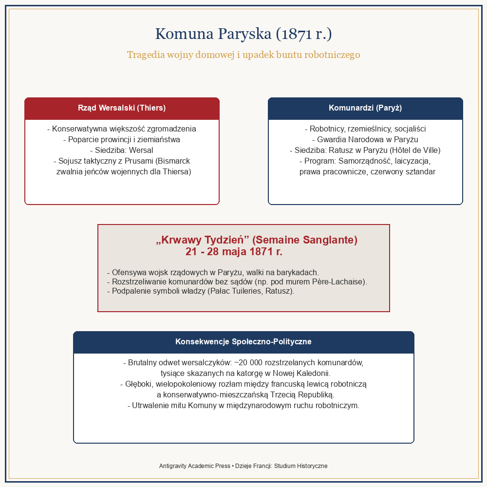
Egzystencja Komuny od samego początku była zagrożona przez militarną reakcję rządu wersalskiego. Adolphe Thiers, rezydujący w Wersalu, systematycznie odbudowywał siły zbrojne. Kluczową rolę odegrała tu postawa Otto von Bismarcka, który - obawiając się rozprzestrzenienia rewolucyjnej „zarazy” na Europę - wyraził zgodę na repatriację z niewoli niemieckiej ponad 100 tysięcy francuskich jeńców wojennych. Siły te, zasilone rekrutem z prowincji, zostały oddane pod dowództwo marszałka MacMahona.
Propaganda wersalska przedstawiała komunardów jako margines społeczny, bandytów, podpalaczy i agentów pruskich (tzw. les partageux). Z kolei Komuna Paryska, izolowana od reszty kraju (próby powołania komun w innych miastach, m.in. w Lyonie, Marsylii i Saint-Étienne, zostały szybko stłumione), nie potrafiła stworzyć efektywnego systemu obronnego. Brak dyscypliny wojskowej, chaos kompetencyjny między Komitetem Centralnym Gwardii Narodowej a Komisją Wojskową Komuny oraz doktrynalne opory przed zajęciem rezerw Banku Francji (co mogłoby posłużyć jako potężne narzędzie nacisku na rządy wersalskie) przesądziły o klęsce zrywu.
Szturm generalny rozpoczął się 21 maja 1871 roku, kiedy to wojska wersalskie, dzięki zdradzie jednego z mieszkańców, przeniknęły przez słabo strzeżoną bramę Saint-Cloud w zachodniej części Paryża. Rozpoczął się wówczas tzw. „Krwawy Tydzień” (semaine sanglante), trwający do 28 maja - jedna z najbardziej bezwzględnych i krwawych pacyfikacji w historii nowożytnej Europy.
Wersalczycy posuwali się systematycznie w głąb miasta, nie biorąc jeńców i rozstrzeliwując na miejscu każdego, u kogo znaleziono ślady prochu na dłoniach lub kto nosił elementy munduru Gwardii Narodowej. W odpowiedzi komunardzi wznosili setki barykad, zaciekle broniąc każdej dzielnicy. W akcie rozpaczy i realizacji taktyki spalonej ziemi, część powstańców dokonała podpaleń symboli władzy państwowej i monarchicznej. Spłonął m.in. pałac Tuileries, Pałac Sprawiedliwości, gmach Ministerstwa Finansów oraz Ratusz.
W atmosferze oblężonej twierdzy doszło również do samosądów. Komunardzi wykonali wyroki śmierci na zakładnikach przetrzymywanych w więzieniu La Roquette, w tym na arcybiskupie Paryża Georges’u Darboyu.
Ostatnie punkty oporu padły we wschodnich, robotniczych dzielnicach Paryża - na Belleville i Ménilmontant. 27 maja doszło do dramatycznych walk wręcz na terenie cmentarza Père-Lachaise. 147 ocalałych obrońców skapitulowało pod murem cmentarnym (znanym odtąd jako Mur Komunardów - Mur des Fédérés), gdzie zostali natychmiast rozstrzelani i pochowani w masowym grobie. Ostatnia barykada, przy ulicy Ramponneau, padła wczesnym popołudniem 28 maja 1871 roku.
Skala represji po stłumieniu Komuny była porażająca. Współczesne badania historyczne (m.in. Roberta Tombsa) szacują liczbę bezpośrednich ofiar „Krwawego Tygodnia” na 10 do 15 tysięcy zabitych (starsza historiografia lewicowa podawała liczby sięgające 20-30 tysięcy). Ponad 40 tysięcy osób zostało aresztowanych. Specjalne sądy wojskowe skazały tysiące osób na śmierć, katorgę lub wieloletnie zesłanie do kolonii karnych w Nowej Kaledonii. Paryż został poddany stanowi oblężenia, który zniesiono dopiero w 1876 roku.
Podczas gdy w Paryżu dogasały walki powstańcze, 10 maja 1871 roku w hotelu „Pod Łabędziem” we Frankfurcie nad Menem podpisano ostateczny traktat pokojowy kończący wojnę francusko-pruską. Warunki podyktowane przez kanclerza Bismarcka były dla Francji niezwykle upokarzające i zdeterminowały układ sił na kontynencie na następne cztery dekady.
Do najważniejszych postanowień traktatu frankfurckiego należały:
Utrata Alzacji i Lotaryngii stała się głęboką raną w narodowej psychice Francuzów. W przestrzeni publicznej narodził się kult „straconych prowincji”, symbolizowany przez czarną krepę, którą przyozdabiano pomnik Strasburga na placu Zgody w Paryżu. Idea odwetu (revanche) wobec Niemiec stała się spoiwem francuskiego nacjonalizmu i kluczowym elementem doktryny polityki zagranicznej Trzeciej Republiki, co w konsekwencji doprowadziło do ukształtowania się dwublokowego systemu sojuszy przed 1914 rokiem.
Narodziny Trzeciej Republiki odbywały się w atmosferze głębokiego kryzysu legitymizacyjnego. Paradoks ustrojowy polegał na tym, że republika została proklamowana przez mniejszość lewicowo-liberalną w Paryżu, podczas gdy pierwsze legalne Zgromadzenie Narodowe było zdominowane przez monarchistów, którzy traktowali ustrój republikański jedynie jako stan przejściowy.
Adolphe Thiers, mianowany Prezydentem Republiki na mocy tzw. prawa Riveta (sierpień 1871 r.), wykazał się niezwykłym pragmatyzmem politycznym. Szybko zreorganizował administrację państwową, a dzięki bezprecedensowej subskrypcji narodowej i zaufaniu rynków finansowych zdołał spłacić niemiecką kontrybucję przed terminem, co doprowadziło do ewakuacji wojsk okupacyjnych we wrześniu 1873 roku. Sukces ten przyniósł mu przydomek „Wyzwoliciela Terytorium” (Libérateur du territoire).
Thiers doszedł do wniosku, że stabilność społeczna Francji może zostać zagwarantowana jedynie w ramach umiarkowanej, konserwatywnej republiki. W swoim słynnym przemówieniu z listopada 1872 roku stwierdził: „Republika będzie konserwatywna albo nie będzie jej wcale”. Stanowisko to doprowadziło jednak do jego upadku. Dla większości monarchistycznej Thiers stał się zbyt wielkim zwolennikiem republiki. W maju 1873 roku koalicja prawicowa doprowadziła do jego dymisji, powołując na urząd prezydenta marszałka Patrice’a de MacMahona - zdeklarowanego legitymistę, który miał przygotować grunt pod restaurację monarchii.
Próba powrotu do rządów królewskich rozbiła się jednak o nieprzejednaną postawę głównego pretendenta do tronu, Henriego d’Artois, hrabiego Chambord (wnuka Karola X). Hrabia Chambord, reprezentujący skrajnie reakcyjny legitymizm, zażądał odrzucenia trójkolorowego sztandaru rewolucyjnego (tricolore) na rzecz białej flagi Burbonów z liliami. Na tak radykalny krok, oznaczający całkowite przekreślenie dziedzictwa 1789 roku, nie mogli wyrazić zgody nawet umiarkowani monarchiści (orleaniści).
Wobec fiaska negocjacji z pretendentem, parlament zdecydował o przedłużeniu kadencji prezydenckiej MacMahona do siedmiu lat (tzw. ustawa o septenacie z listopada 1873 r.), licząc na rychłą śmierć bezdzietnego hrabiego Chambord i przejęcie pretensji przez bardziej liberalnego hrabiego Paryża (filipa Orleańskiego).
Czas działał jednak na korzyść republikanów. Pod przywództwem takich polityków jak Léon Gambetta, który porzucił dawny radykalizm na rzecz pragmatycznego „oportunizmu”, republikanie systematycznie zdobywali poparcie na prowincji, prezentując się jako gwarant porządku społecznego, własności prywatnej i pokoju.
W 1875 roku Zgromadzenie Narodowe, zdając sobie sprawę z niemożności natychmiastowej restauracji monarchii, uchwaliło serię trzech ustaw konstytucyjnych, które stały się fundamentem ustrojowym Trzeciej Republiki. Kluczowym momentem było przyjęcie 30 stycznia 1875 roku poprawki Henriego Wallona, która wprowadzała do tekstu prawnego słowo „Republika” poprzez sformułowanie: „Prezydent Republiki jest wybierany większością głosów przez Senat i Izbę Deputowanych”. Poprawka ta przeszła większością zaledwie jednego głosu (353 do 352), co dobitnie świadczyło o chwiejności ówczesnego konsensusu ustrojowego.
Konstytucja z 1875 roku tworzyła ustrój o charakterze wybitnie parlamentarno-gabinetowym, z silnym dwuizbowym parlamentem (Izba Deputowanych i Senat) oraz relatywnie słabą władzą prezydencką. Trzecia Republika, choć zrodzona z klęski wojennej, wojny domowej i podziałów społecznych, okazała się najtrwalszym reżimem politycznym we Francji po 1789 roku, trwającym nieprzerwanie aż do katastrofy 1940 roku.
U schyłku XIX wieku Francja, wciąż lecząca rany po traumie klęski w wojnie z Prusami (1870-1871) i krwawym stłumieniu Komuny Paryskiej, stała się areną jednego z najgłębszych kryzysów polityczno-społecznych w swoich dziejach nowożytnych. Sprawa Dreyfusa (l’Affaire Dreyfus) nie była jedynie partykularnym błędem sądowym czy lokalnym skandalem szpiegowskim w łonie francuskiego Sztabu Generalnego. W istocie stanowiła ona katalizator, który ujawnił i spolaryzował fundamentalne, egzystencjalne pęknięcie w strukturze społecznej i mentalnej Trzeciej Republiki. Było to zderzenie dwóch diametralnie sprzecznych wizji państwa, narodu i obywatelstwa: Francji tradycjonalistycznej, autorytarnej, klerykalnej i zmilitaryzowanej, z Francją oświeceniową, laicką, racjonalistyczną i uniwersalistyczną.
Geneza kryzysu sięga jesieni 1894 roku, kiedy to francuski kontrwywiad wojskowy przechwycił w ambasadzie niemieckiej w Paryżu tzw. bordereau - niepodpisany wykaz tajnych dokumentów wojskowych, które francuski oficer zamierzał przekazać obcemu mocarstwu. O zdradę oskarżono niesłusznie kapitana Alfreda Dreyfusa, oficera artylerii pochodzącego z zamożnej, zasymilowanej rodziny żydowskiej z Alzacji. Wybór Dreyfusa na kozła ofiarnego nie był przypadkowy. W atmosferze powojennego rewanżyzmu, podsycanej przez kryzys gospodarczy i lęk przed infiltracją, postać żydowskiego oficera z utraconej Alzacji idealnie wpisywała się w antysemicką paranoję epoki, której literackim manifestem stało się monumentalne dzieło Édouarda Drumonta La France juive (1886). Dreyfus, po pospiesznym i opartym na sfingowanych dowodach procesie przed sądem wojskowym, został w grudniu 1894 roku skazany na dożywotnią deportację i uwięziony na Diabelskiej Wyspie u wybrzeży Gujany Francuskiej, uprzednio poddany publicznej, upokarzającej ceremonii degradacji wojskowej na dziedzińcu École Militaire.
Przełom w sprawie nastąpił dzięki dociekliwości nowego szefa wywiadu wojskowego, podpułkownika Georges’a Picquarta, który w 1896 roku zidentyfikował rzeczywistego sprawcę zdrady - zadłużonego arystokratę, majora Ferdinanda Walsina Esterhazy’ego. Opór generalicji przed przyznaniem się do błędu, który według dowództwa mógłby podważyć autorytet armii jako ostoi narodu, doprowadził do tuszowania dowodów, przeniesienia Picquarta na niebezpieczną placówkę w Tunezji oraz uniewinnienia Esterhazy’ego przez sąd wojskowy w styczniu 1898 roku.
Reakcją na ten jawny gwałt na procedurach prawnych był list otwarty wybitnego pisarza Émile’a Zoli do prezydenta Republiki Félixa Faure’a, opublikowany 13 stycznia 1898 roku na łamach dziennika L’Aurore pod redakcją Ernesta Vaughana i Georges’a Clemenceau. Manifest zatytułowany J’accuse…! (Oskarżam!) stanowił punkt zwrotny w historii zaangażowania intelektualistów w przestrzeń publiczną. Zola, ryzykując własną wolność i karierę, oskarżył imiennie najwyższych dowódców wojskowych o świadome skazanie niewinnego człowieka i ukrywanie dowodów zdrady Esterhazy’ego. Tekst ten wywołał wstrząs tektoniczny w debacie publicznej, dzieląc społeczeństwo francuskie na dwa wrogie obozy:
Kryzys ten przybrał formę niemal fizycznej konfrontacji. Na ulicach miast dochodziło do zamieszek o charakterze antysemickim (m.in. w Algierze, Bordeaux i Marsylii), a salony towarzyskie i rodziny ulegały głębokim podziałom, co genialnie uwiecznił na karykaturze Obiad rodzinny Caran d’Ache. Historiografia francuska, reprezentowana m.in. przez Michela Winocka czy Pierre’a Norę, wskazuje, że Sprawa Dreyfusa była momentem narodzin nowoczesnego intelektualisty jako aktora politycznego, a zarazem inkubacji nowoczesnego, wykluczającego nacjonalizmu o zabarwieniu ksenofobicznym i antysemickim, który antycypował autorytarne prądy XX wieku (w tym reżim Vichy).
Ostateczne oczyszczenie Dreyfusa z zarzutów i jego pełna rehabilitacja w lipcu 1906 roku (wraz z przywróceniem do służby wojskowej i odznaczeniem Legią Honorową) oznaczały polityczne zwycięstwo obozu republikańsko-lewicowego. Sukces ten otworzył drogę do głębokiej rekonstrukcji instytucjonalnej państwa, której kluczowym elementem stała się radykalna sekularyzacja.
Zwycięstwo dreyfusizmu w wyborach parlamentarnych 1899 i 1902 roku wyniosło do władzy koalicję Bloku Lewicy (Bloc des Gauches), na której czele stanął gabinet René Waldecka-Rousseau, a następnie Émile’a Combesa. Dla rządu Combesa, wspieranego przez radykałów i socjalistów, walka z wpływami Kościoła katolickiego stała się priorytetem politycznym. Kościół był bowiem postrzegany przez republikanów jako struktura fundamentalnie wroga instytucjom demokratycznym, co potwierdziło zaangażowanie zakonów (zwłaszcza asumpcjonistów i ich wpływowego pisma La Croix) po stronie antydreyfusistów.
Pierwszym etapem ofensywy laickiej była ustawa o stowarzyszeniach z 1 lipca 1901 roku, która poddała zakony zakonne (kongregacje) ścisłej kontroli państwowej, wymagając od nich uzyskania specjalnej autoryzacji parlamentu. Brak zgody skutkował rozwiązaniem kongregacji i konfiskatą ich majątku. W 1904 roku Combes doprowadził do uchwalenia zakazu nauczania dla wszystkich członków kongregacji zakonnych, co uderzyło w fundamenty katolickiego szkolnictwa prywatnego. Kulminacją tego procesu, przebiegającego w warunkach zerwania stosunków dyplomatycznych ze Stolicą Apostolską w lipcu 1904 roku, stało się uchwalenie Ustawy o rozdziale Kościoła od państwa (Loi du 9 décembre 1905 portant sur la séparation des Églises et de l’État).
Głównym architektem i sprawozdawcą ustawy w parlamencie był socjalista Aristide Briand, który w przeciwieństwie do sekciarskiego i agresywnego antyklerykalizmu Combesa dążył do wypracowania kompromisu gwarantującego pokój społeczny. Ustawa z 1905 roku kładła kres systemowi wyznań uznanych (cultes reconnus), który funkcjonował od czasów konkordatu napoleońskiego z 1801 roku. Jej dwa pierwsze artykuły stanowią fundament nowoczesnej zasady laïcité:
Artykuł 1: „Republika zapewnia wolność sumienia. Gwarantuje swobodne wykonywanie praktyk religijnych z jedynymi ograniczeniami określonymi poniżej w interesie porządku publicznego”.
Artykuł 2: „Republika nie uznaje, nie opłaca ani nie dotuje żadnego kultu”.
Konsekwencje prawne i ekonomiczne tego aktu były rewolucyjne:
Wprowadzenie ustawy w życie wywołało gwałtowny opór konserwatywnej części społeczeństwa oraz hierarchii kościelnej. Papież Pius X w encyklice Vehementer Nos z lutego 1906 roku potępił ustawę jako jednostronne zerwanie konkordatu i zamach na boski porządek Kościoła. Najostrzejszy konflikt, znany jako „kryzys inwentarzy” (querelle des inventaires), wybuchł, gdy urzędnicy państwowi, w towarzystwie żandarmów, przystąpili do spisywania majątku ruchomego parafii (w tym naczyń liturgicznych i relikwiarzy), co miało na celu ich formalne przekazanie stowarzyszeniom kultowym. W wielu regionach (zwłaszcza w Bretanii, Wandei, Masywie Centralnym i Flandrii) doszło do zamieszek, zabarykadowania kościołów i starć z wojskiem.
Mimo tych napięć, elastyczność rządu (reprezentowanego m.in. przez nowego ministra spraw wewnętrznych Georges’a Clemenceau, który nakazał wstrzymanie inwentaryzacji w miejscach, gdzie groziło to rozlewem krwi) oraz pragmatyzm francuskiego episkopatu pozwoliły na stopniową pacyfikację konfliktu. Ustawa z 1905 roku, choć zrodzona w atmosferze ostrej walki politycznej, z czasem stała się fundamentem francuskiego konsensusu republikańskiego. Przekształciła ona laïcité z narzędzia walki z religią w neutralną przestrzeń prawną, w której państwo nie ingeruje w dogmaty religijne, ale jednocześnie nie pozwala na dominację jakiegokolwiek wyznania w sferze publicznej. Warto zauważyć, że ustawa ta nie objęła Alzacji i Lotaryngii, które w 1905 roku znajdowały się pod panowaniem niemieckim; po ich powrocie do Francji w 1918 roku zachowano tam (i utrzymuje się do dziś) reżim konkordatowy.
Podczas gdy francuskie życie polityczne było wstrząsane kryzysami ideologicznymi, na płaszczyźnie kulturowej, gospodarczej i technologicznej przełom wieków przyniósł okres bezprecedensowej prosperity i dynamizmu, który w zbiorowej pamięci zapisał się jako Belle Époque (Piękna Epoka). Nazwa ta, ukuta post factum po katastrofie I wojny światowej, odzwierciedlała nostalgię za czasem stabilizacji, wiary w postęp naukowy oraz kulturalnej hegemonii Francji, a w szczególności jej stolicy - Paryża.
Paryż przełomu wieków stał się „stolicą dziewiętnastego stulecia” (jak określił go Walter Benjamin), globalnym laboratorium nowoczesności i centrum światowej awangardy artystycznej. Wizualną i technologiczną manifestacją tej dominacji były dwie Wystawy Światowe (Expositions Universelles), które odbyły się w Paryżu w latach 1889 i 1900.
| Wystawa Światowa | Główne symbole architektoniczne i technologiczne | Liczba zwiedzających | Główny przekaz ideowy |
|---|---|---|---|
| 1889 | Wieża Eiffla, Galeria Maszyn (Galerie des Machines) | ok. 32 miliony | Stulecie Rewolucji Francuskiej, triumf industrializmu i inżynierii żelaza. |
| 1900 | Grand Palais, Petit Palais, Most Aleksandra III, ruchomy chodnik (rue de l’avenir) | ok. 50 milionów | Podsumowanie XIX wieku, elektryfikacja, kosmopolityzm, narodziny nowego stulecia. |
Wystawa z 1889 roku, zorganizowana w stulecie wybuchu rewolucji, przyniosła światu konstrukcję, która na zawsze zmieniła sylwetę Paryża - Wieżę Eiffla (Tour Eiffel). Zaprojektowana przez biuro inżynierskie Gustave’a Eiffla (przy kluczowym udziale Maurice’a Koechlina i Émila Nouguiera), wznosząca się na wysokość 300 metrów wieża z kutej stali była triumfem racjonalizmu inżynieryjnego nad tradycyjną estetyką akademicką. Choć początkowo ostro protestowali przeciwko niej wybitni twórcy (m.in. Guy de Maupassant, Alexandre Dumas syn i Charles Garnier, nazywając ją „gigantycznym i czarnym kominem fabrycznym”), wieża szybko stała się symbolem nowoczesności, demokratyzacji przestrzeni miejskiej oraz francuskiego geniuszu przemysłowego.
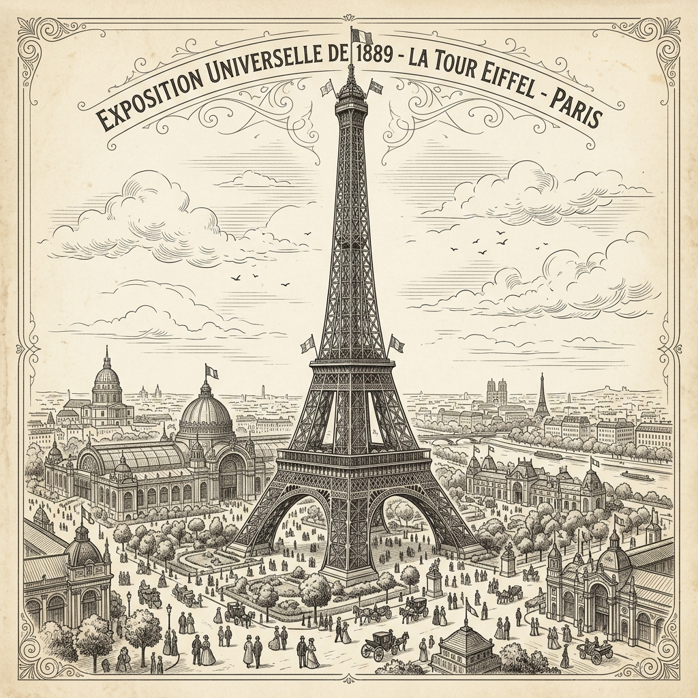
Jeszcze większym rozmachem charakteryzowała się Wystawa z 1900 roku, która celebrowała nadejście wieku elektryczności. Pałac Elektryczności (Palais de l’Électricité), rozświetlony tysiącami żarówek, jawił się współczesnym jako świątynia nowej, świeckiej religii postępu. To wówczas zainaugurowano pierwszą linię paryskiego metra (Métropolitain), zaprojektowaną przez inżyniera Fulgence’a Bienvenüe. Wejścia do stacji metra, stworzone przez architekta Héctora Guimarda, stały się sztandarowymi przykładami nowego stylu w sztuce i architekturze - Secesji (Art Nouveau).
Art Nouveau stanowiło radykalne zerwanie z XIX-wiecznym historyzmem i eklektyzmem. Charakteryzowało się płynnymi, organicznymi liniami, inspirowanymi światem roślinnym, asymetrią oraz dążeniem do syntezy sztuk (koncepcja dzieła totalnego - Gesamtkunstwerk). W Paryżu styl ten zdominował nie tylko architekturę kamienic mieszczańskich, ale również rzemiosło artystyczne, projektowanie mebli (szkoła z Nancy z Émile’em Gallé i Louisem Majorelle’em na czele) oraz grafikę użytkową, której symbolem stały się plakaty Alphonse’a Muchy reklamujące spektakle teatralne z udziałem Sarah Bernhardt.
Belle Époque to także czas narodzin nowych form wyrazu artystycznego i rozrywki masowej. 28 grudnia 1895 roku w paryskiej Grand Café przy bulwarze Kapucynów odbył się pierwszy publiczny, płatny pokaz kinematografu braci Auguste’a i Louisa Lumière. Krótkie, dokumentalne projekcje, takie jak Wyjście robotników z fabryki Lumière w Lyonie czy Wjazd pociągu na stację w La Ciotat, zapoczątkowały erę kina. Niedługo potem Georges Méliès, pionier efektów specjalnych i reżyser wizjoner, nakręcił swój słynny film Podróż na Księżyc (1902), udowadniając, że kino może być nie tylko rejestracją rzeczywistości, ale także potężnym narzędziem narracji i wyobraźni.
Równolegle Paryż tętnił życiem artystycznym, które koncentrowało się na wzgórzu Montmartre, a później w dzielnicy Montparnasse. Kabarety, takie jak Le Chat Noir czy otwarty w 1889 roku Moulin Rouge, stały się miejscami spotkań cyganerii artystycznej (la bohème), burżuazji i przedstawicieli klas niższych, co prowadziło do unikalnego zacierania granic społecznych. Malarze tacy jak Henri de Toulouse-Lautrec uwieczniali na swoich litografiach nocne życie Paryża, tworząc ikonografię epoki. W tym samym czasie rodziły się nurty, które miały zrewolucjonizować sztuki plastyczne: fowizm (Henri Matisse) i kubizm (Pablo Picasso, Georges Braque), którego manifestem stały się Panny z Awinionu (1907).
Ta fasada optymizmu i kulturalnego wyrafinowania skrywała jednak głębokie kontrasty społeczne. Modernizacja Paryża, zapoczątkowana jeszcze przez barona Haussmanna pod rządami Napoleona III, wypchnęła klasę robotniczą na peryferie (tzw. banlieues lub czerwony pas Paryża). Robotnicy, mimo pewnej poprawy stóp życiowych i skrócenia czasu pracy (wprowadzenie obowiązkowego dnia wolnego od pracy w 1906 roku), żyli w warunkach permanentnej niepewności socjalnej. Rozwój anarchosyndykalizmu, reprezentowanego przez Powszechną Konfederację Pracy (CGT, założoną w 1895 roku), oraz krwawo tłumione strajki robotnicze (np. w Villeneuve-Saint-Georges w 1908 roku) przypominały, że pod powierzchnią Belle Époque tlił się permanentny konflikt klasowy.
Przełom XIX i XX wieku we Francji jawi się jako epoka głębokiej dialektyki. Z jednej strony, naród przechodził przez bolesne kryzysy tożsamościowe, których symbolem stała się Sprawa Dreyfusa i brutalna momentami walka o sekularyzację państwa. Procesy te, choć traumatyczne, doprowadziły do skonsolidowania nowoczesnego modelu republikańskiego, opartego na prymacie prawa, prawach człowieka i instytucjonalnej neutralności światopoglądowej (laïcité). Z drugiej strony, ten sam system polityczny potrafił wykreować ramy dla bezprecedensowego eksplozji kreatywności naukowej, technologicznej i artystycznej, czyniąc z Francji globalne centrum nowoczesności. Belle Époque, z jej wiarą w postęp i naukę, została brutalnie przerwana w sierpniu 1914 roku przez wybuch Wielkiej Wojny. Konflikt ten nie tylko zburzył dotychczasowy porządek europejski, ale także zweryfikował optymistyczne założenia epoki, w której technologia, zamiast służyć wyłącznie emancypacji człowieka, stała się narzędziem masowej destrukcji na polach bitewnych Verdun i Sommy.
Zzabójstwo lidera francuskiej lewicy socjalistycznej, Jeana Jaurèsa, dokonane 31 lipca 1914 roku przez nacjonalistycznego fanatyka Raoula Villaina w paryskiej kawiarni „Café du Croissant”, stanowiło cezurę o fundamentalnym znaczeniu dla francuskiej kultury politycznej u progu Wielkiej Wojny. Jaurès, charyzmatyczny przywódca Section Française de l’Internationale Ouvrière (SFIO), był uosobieniem pacyfistycznego oporu przeciwko militaryzmowi oraz dążenia do powstrzymania konfliktu europejskiego drogą strajku generalnego europejskiego proletariatu. Jego gwałtowna śmierć groziła głębokim kryzysem wewnętrznym, a nawet wybuchem wojny domowej w momencie, gdy mobilizacja powszechna stawała się kwestią godzin.
Wbrew obawom rządu René Vivianiego, śmierć Jaurèsa nie wywołała rewolucyjnej renty. Wręcz przeciwnie, stała się katalizatorem bezprecedensowej konsolidacji narodowej. Francuska klasa robotnicza, dotychczas silnie spenetrowana przez idee antypatriotyczne i syndykalistyczne (reprezentowane przez Confédération Générale du Travail - CGT), stanęła w obliczu bezpośredniego zagrożenia egzystencji Republiki. Kluczowym pojęciem, które zdefiniowało tę transformację, była Union Sacrée (Święta Unia) - termin ukuty przez prezydenta Raymonda Poincarégo w jego orędziu do parlamentu z 4 sierpnia 1914 roku:
„Francja będzie broniona przez wszystkich swoich synów, których przed obliczem wroga nie poróżni żadna siła, i którzy dziś zjednoczeni są w braterskim przymierzu, we wspólnej wierze, miłości i patriotyzmie”.
Ta polityczna formuła zneutralizowała dotychczasowe, głębokie linie podziału ideologicznego, które od czasów afery Dreyfusa polaryzowały francuskie społeczeństwo:
Historiografia francuska, na czele z pracami Jean-Jacques’a Beckera, wskazuje, że Union Sacrée nie była jedynie powierzchownym porozumieniem elit politycznych, lecz odzwierciedlała głęboki, oddolny konsensus społeczny. Francuzi ruszyli na wojnę nie z radosnym entuzjazmem (mit la fleur au fusil został zweryfikowany przez nowsze badania), lecz z poczuciem ponurej determinacji, rezygnacji i głębokiego przekonania o defensywnym charakterze wojny. Mobilizacja powszechna przebiegła bez zakłóceń - odsetek dezerterów i uchylających się od służby wyniósł zaledwie 1,5%, wobec prognozowanych przez MSW 13%. „Karnet B” (lista potencjalnych wywrotowców i pacyfistów przeznaczonych do natychmiastowego aresztowania) okazał się zbędny; minister spraw wewnętrznych Louis Malvy podjął trafną decyzję o niewdrażaniu represji.
W sferze strategicznej Sztab Generalny armii francuskiej, kierowany przez generała Josepha Joffre’a, opierał swoje kalkulacje na doktrynie ofensywnej sformułowanej w Planie XVII. Zakładał on natychmiastowe, zmasowane uderzenie w Alzacji i Lotaryngii w celu odzyskania utraconych w 1871 roku prowincji. Doktryna ta, nasycona filozofią Henriego Bergsona o élan vital (sile życiowej) oraz wojskową teorią pułkownika Ardanta du Picqa i pułkownika Loyzeau de Grandmaisona o prymacie ofensywy bez względu na okoliczności (offensive à outrance), okazała się tragiczna w skutkach w starciu z nowoczesną techniką obronną.
Równolegle niemiecki plan wojenny (będący modyfikacją koncepcji Alfreda von Schlieffena opracowaną przez Helmuta von Moltke Młodszego) zakładał gigantyczny manewr oskrzydlający przez neutralną Belgię, mający na celu obejście francuskich fortyfikacji granicznych, okrążenie armii francuskiej i jej unicestwienie w ciągu sześciu tygodni.
Sierpniowe starcia, znane jako bitwa o granice (14-24 sierpnia 1914 r.), ujawniły całkowitą niewydolność francuskiej taktyki. Francuskie natarcia w Ardenach i Lotaryngii załamały się w ogniu niemieckich karabinów maszynowych i artylerii ciężkiej, przynosząc katastrofalne straty ludzkie (sam 22 sierpnia przyniósł śmierć 27 000 francuskich żołnierzy, co czyni go najkrwawszym dniem w historii francuskiego oręża). Joffre, wykazując się jednak niezwykłym stoicyzmem i elastycznością operacyjną, zdołał przeprowadzić zorganizowany odwrót, unikając okrążenia.
Do decydującego starcia doszło na przedpolach Paryża. Sukces francuski, określany mianem „Cudu nad Marną”, był efektem splotu kilku czynników strategicznych i logistycznych:
SCHEMAT STRATEGICZNY BITWY NAD MARNĄ (WRZESIEŃ 1914)
[Niemiecka 1. Armia (Kluck)] <--- Odsłonięta flanka
|
v <--- Uderzenie 6. Armii francuskiej (Maunoury)
============================= (Rzeka Aisne - linia odwrotu)
^
| <--- Luka operacyjna (B.K.E. i 5. Armia francuska)
|
[Niemiecka 2. Armia (Bülow)]Bitwa nad Marną uratowała Francję przed błyskawiczną klęską, grzebiąc ostatecznie założenia planu Schlieffena. Jednakże jej bezpośrednią konsekwencją była tzw. „wyścig do morza” - seria manewrów oskrzydlających, które zakończyły się ustabilizowaniem frontu na linii od wybrzeża Flandrii po granicę szwajcarską. Rozpoczęła się czteroletnia, wyczerpująca wojna pozycyjna (guerre de positions). Front zachodni stał się labiryntem okopów, zasieków z drutu kolczastego i schronów bojowych, w których tradycyjna manewrowość ustąpiła miejsca bezwzględnej logistyce, dominacji artylerii ciężkiej oraz masowemu zużyciu materiałów wojennych.
Do początku 1916 roku francuski wysiłek wojenny koncentrował się wokół nieudanych prób przełamania frontu w Szampanii i Artois. Szef niemieckiego Sztabu Generalnego, generał Erich von Falkenhayn, doszedł do wniosku, że kluczem do zwycięstwa jest wykrwawienie armii francuskiej (Ausblutung) w miejscu o tak fundamentalnym znaczeniu prestiżowym i historycznym, że dowództwo francuskie będzie zmuszone rzucić do jego obrony wszystkie dostępne rezerwy. Wybór padł na twierdzę Verdun - kluczowy punkt francuskiego systemu obronnego nad Mozą, otoczony pierścieniem nowoczesnych fortów (Douaumont, Vaux).
Operacja „Gericht” (Sąd) rozpoczęła się 21 lutego 1916 roku bezprecedensowym przygotowaniem artyleryjskim. Niemcy zgromadzili ponad 1200 dział, które w ciągu pierwszych godzin wystrzeliły milion pocisków, niszcząc francuskie pozycje wysunięte. Falkenhayn dążył do zindustrializowania rzezi, wprowadzając pojęcie Materialschlacht (bitwy materiałowej).
W krytycznym momencie dowództwo nad sektorem Verdun objął generał Philippe Pétain. Jego geniusz organizacyjny i pragmatyzm uratowały sytuację poprzez wdrożenie dwóch kluczowych reform:
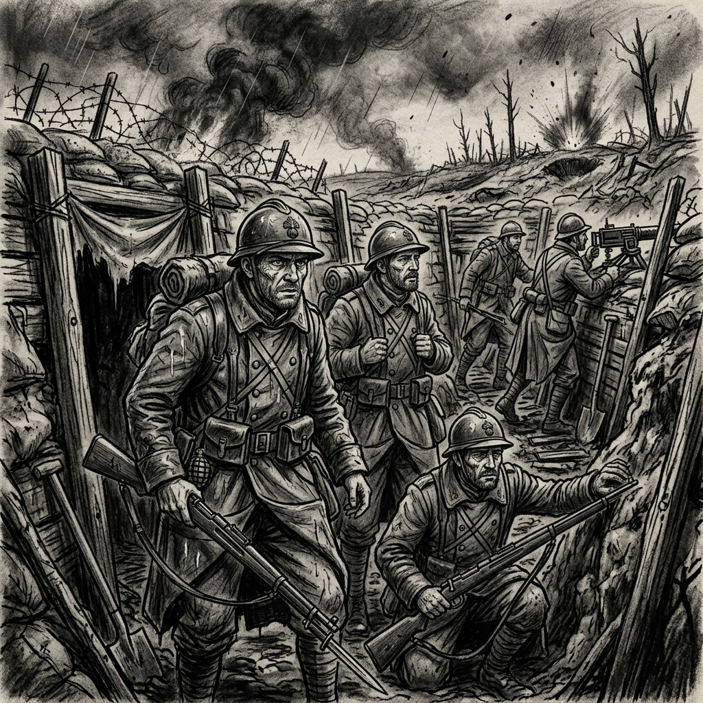
Sformułowane wówczas hasło „Ils ne passeront pas!” („Nie przejdą!”), przypisywane generałowi Robertowi Nivelle’owi, stało się symbolem nieugiętości i determinacji całego narodu. Bitwa, trwająca do grudnia 1916 roku, zakończyła się taktycznym sukcesem Francji, która odzyskała większość utraconego terenu, w tym forty Douaumont i Vaux. Koszt tego zwycięstwa był jednak porażający:
| Państwo | Straty całkowite (zabici, ranni, zaginieni) | Zabici i zmarli z ran |
|---|---|---|
| Francja | ok. 378 000 | ok. 163 000 |
| Niemcy | ok. 337 000 | ok. 143 000 |
W historiografii francuskiej (reprezentowanej m.in. przez Antoine’a Prosta) Verdun funkcjonuje jako centralne lieu de mémoire (Nora, 1984) (miejsce pamięci) Wielkiej Wojny. Stało się ono symbolem demokratycznego i egalitarnego cierpienia - zderzeniem jednostki z bezduszną machiną przemysłowej zagłady. Okopy Verdun stworzyły specyficzną tożsamość poilu (francuskiego żołnierza piechoty), charakteryzującą się głębokim sceptycyzmem wobec propagandy tyłów, silną solidarnością frontową oraz poczuciem spełniania tragicznego obowiązku wobec ojczyzny.
Rok 1917 przyniósł najgłębszy kryzys wewnętrzny wojennej Francji. Klęska krwawej ofensywy generała Roberta Nivelle’a na wzgórzach Chemin des Dames (kwiecień-maj 1917 r.) doprowadziła do załamania morale armii. W blisko połowie francuskich dywizji wybuchły bunty (mutineries). Żołnierze nie odmawiali obrony własnych pozycji, lecz sprzeciwiali się bezużytecznym, samobójczym atakom dyktowanym przez niekompetentne dowództwo.
Sytuację opanował generał Pétain, który zastąpił Nivelle’a na stanowisku wodza naczelnego. Połączył on ograniczoną, surową represyjność (rozstrzelano tylko 49 prowodyrów buntu) z głębokimi reformami humanitarnymi: poprawił wyżywienie, zreorganizował system urlopów, a przede wszystkim ogłosił zmianę strategii na defensywną: „Czekam na Amerykanów i czołgi” (J’attends les Américains et les chars).
Równolegle kryzys dotknął zaplecze frontu. Zmęczenie wojną, drożyzna, deficyty aprowizacyjne oraz echa rewolucji bolszewickiej w Rosji doprowadziły do fali strajków w kluczowych gałęziach przemysłu zbrojeniowego oraz rozpadu konsensusu Union Sacrée. Pacyfistyczna lewica zaczęła głośno domagać się pokoju bez aneksji i kontrybucji.
W tym krytycznym momencie, w listopadzie 1917 roku, prezydent Raymond Poincaré powierzył tekę premiera swojemu dawnemu wrogowi politycznemu, 76-letniemu Georges’owi Clemenceau. Clemenceau, nazywany „Tygrysem” (Le Tigre), sformułował program rządu oparty na bezwzględnej koncentracji wszystkich sił państwa na jednym celu:
„Moja polityka zagraniczna i moja polityka wewnętrzna to jedno. Polityka wewnętrzna? Prowadzę wojnę. Polityka zagraniczna? Prowadzę wojnę. Zawsze prowadzę wojnę”.
Clemenceau wprowadził rządy o charakterze autorytarnym, de facto zawieszając klasyczny parlamentaryzm na rzecz osobistej dyktatury wojennej:
Rozejm z Compiègne podpisany 11 listopada 1918 roku przyniósł Francji upragnione zwycięstwo, jednak cena, jaką kraj zapłacił za triumf, była katastrofalna. Bilans demograficzny i materialny porażał swoją skalą:
Podczas Paryskiej Konferencji Pokojowej (styczeń-czerwiec 1919 r.) Georges Clemenceau reprezentował stanowisko skrajnie nieustępliwe, zdeterminowane dążeniem do uzyskania maksymalnych gwarancji bezpieczeństwa przed ewentualną przyszłą agresją ze strony Niemiec. Doktryna dyplomatyczna Francji opierała się na haśle: „Le Allemand paiera” („Niemiec zapłaci”).
Główne cele strategiczne Clemenceau zderzyły się jednak z idealizmem prezydenta USA Woodrowa Wilsona (opierającym się na zasadzie samostanowienia narodów) oraz pragmatyzmem brytyjskiego premiera Davida Lloyd George’a (dążącego do zachowania równowagi sił w Europie i niedopuszczenia do hegemonii francuskiej).
KONFLIKT INTERESÓW W WERSALU (1919)
[ USA - W. Wilson ] [ Wielka Brytania - Lloyd George ]
- Samostanowienie narodów - Równowaga sił (Balance of Power)
- Liga Narodów - Odbudowa handlu z Niemcami
\ /
\ /
v v
[ FRANCJA - G. Clemenceau: "Sécurité d'abord" ]
- Osłabienie demograficzne i militarne Niemiec
- Aneksja lub separacja Nadrenii
- Maksymalne reparacje wojenneOstateczny kształt Traktatu Wersalskiego, podpisanego 28 czerwca 1919 roku w Sali Zwierciadlanej (miejscu proklamowania Cesarstwa Niemieckiego w 1871 roku), był kompromisem, który nie satysfakcjonował w pełni żadnej ze stron, a we Francji został przyjęty z poczuciem niedosytu i niepokoju o przyszłość:
Wielka debata historiograficzna nad Traktatem Wersalskim, zapoczątkowana krytyczną analizą Johna Maynarda Keynesa (The Economic Consequences of the Peace), często przedstawiała warunki pokojowe jako zbyt surowe, uniemożliwiające stabilizację Weimarer Republik. Jednakże z perspektywy francuskiej, reprezentowanej m.in. przez historyka Jacques’a Bainville’a w jego proroczym dziele Les Conséquences politiques de la paix (1920), pokój wersalski był „zbyt łagodny dla tego, co w nim było twardego, a zbyt twardy dla tego, co w nim było łagodnego”. Bainville trafnie przewidział, że traktat pozostawił zjednoczone państwo niemieckie z potencjałem demograficznym i gospodarczym znacznie przewyższającym francuski, niszcząc jednocześnie tradycyjny system sojuszy we wschodniej Europie (poprzez likwidację Austro-Węgier i izolację Rosji), co w perspektywie dwudziestu lat musiało doprowadzić do kolejnego konfliktu.
Zwycięstwo 1918 roku, okupione hekatombą pokoleniową, pozostawiło Francję krajem głęboko straumatyzowanym, spolaryzowanym społecznie i geopolitycznie osamotnionym. Mit „zwycięstwa nad zwycięstwami” maskował strukturalną słabość III Republiki, która wkraczała w okres międzywojenny z syndromem oblężonej twierdzy, paraliżem demograficznym oraz głębokim lękiem przed rewizjonizmem niemieckim.
Zwycięskie dla Francji zakończenie Wielkiej Wojny nie przyniosło oczekiwanej stabilizacji geopolitycznej ani wewnętrznej. Przeciwnie, wejście Trzeciej Republiki w lata trzydzieste XX wieku ujawniło głębokie, strukturalne dysfunkcje jej systemu politycznego, gospodarczego oraz militarnego. Francja tego okresu jawi się w historiografii (reprezentowanej m.in. przez Serge’a Bersteina czy Jean-Noëla Jeanneneya) jako mocarstwo zmęczone, straumatyzowane demograficznie i niezdolne do wypracowania spójnej strategii modernizacyjnej. Pokłosiem tego stanu rzeczy stał się paraliż decyzyjny, polaryzacja społeczna oraz głęboki kryzys tożsamości ustrojowej, którego kulminacją były narodziny i upadek doświadczenia Frontu Ludowego (Front Populaire).
Fundamentem niestabilności politycznej Trzeciej Republiki był jej system parlamentarny, oparty na dominacji władzy ustawodawczej nad słabą i efemeryczną władzą wykonawczą. Ordynacja wyborcza oraz rozdrobnienie sceny politycznej uniemożliwiały stworzenie trwałych większości rządowych. Zjawisko tzw. „karuzeli ministerialnej” (valse des ministères) sprawiało, że gabinety trwały średnio zaledwie kilka miesięcy. Koalicje rządowe, budowane wokół centrolewicowej Partii Radykalnej (reprezentowanej przez Édouarda Herriota czy Édouarda Daladiera), cechowały się wewnętrzną niespójnością - radykałowie w kwestiach społecznych skłaniali się ku lewicy, lecz w sprawach gospodarczych pozostawali ortodoksyjnie liberalni i przywiązani do własności prywatnej.
Kryzys polityczny był potęgowany przez permanentne perturbacje finansowe. Francja wyszła z wojny z gigantycznym zadłużeniem i zrujnowanym systemem monetarnym. Nadzieje na sfinansowanie odbudowy kraju z niemieckich reparacji wojennych (wyrażone w haśle Le Boche payera - „Szkop zapłaci”) okazały się iluzją, co dobitnie wykazało fiasko okupacji Zagłębia Ruhry w 1923 roku. Spadek zaufania do waluty doprowadził do gwałtownej inflacji i załamania kursu franka. Dopiero powrót do władzy Raymonda Poincarégo na czele rządu Jedności Narodowej (1926-1929) i jego rygorystyczna polityka finansowa doprowadziły do stabilizacji waluty. W 1928 roku wprowadzono tzw. „franka Poincaré” o wartości równej jednej piątej franka przedwojennego. Była to de facto bolesna dewaluacja, która uderzyła w rentierów i drobną burżuazję, trwale nadwerężając zaufanie tych klas do instytucji republikańskich.
Choć Francja początkowo wydawała się odporna na Wielki Kryzys z 1929 roku dzięki zrównoważonej strukturze rolno-przemysłowej, to od 1931 roku regres gospodarczy uderzył w nią ze zdwojoną siłą. Spadek eksportu, bezrobocie oraz kurczenie się rezerw złota zmusiły rządy do podjęcia drastycznych kroków. Kolejne gabinety, zwłaszcza prawicowy rząd Pierre’a Lavala w 1935 roku, aplikowały społeczeństwu brutalną kurację deflacyjną:
Polityka ta nie tylko nie uzdrowiła gospodarki, ale wepchnęła kraj w głęboką recesję i doprowadziła do pauperyzacji szerokich mas społecznych, podsycając nastroje antyparlamentarne.
Na tle kryzysu ekonomicznego i bezsilności parlamentu rósł w siłę pozaparlamentarny ruch nacjonalistyczny i autorytarny. Ligi skrajnej prawicy (ligues) - takie jak monarchistyczna Action Française Charles’a Maurrasa, paramilitarne Croix-de-Feu (Krzyże Ogniste) pułkownika François de La Rocque’a, neofaszystowska Solidarité Française czy Jeunesses Patriotes - zyskiwały coraz większe poparcie, głosząc hasła antysemickie, antyparlamentarne i ksenofobiczne.
Katalizatorem wybuchu stała się sprawa Stavisky’ego - afera finansowo-polityczna z przełomu lat 1933 i 1934. Serge Alexandre Stavisky, oszust żydowskiego pochodzenia powiązany z wpływowymi politykami Partii Radykalnej, zmarł w niewyjaśnionych okolicznościach (oficjalnie popełnił samobójstwo), co opinia publiczna uznała za próbę zatarcia śladów przez skorumpowane elity władzy. Dla skrajnej prawicy był to ostateczny dowód na gnicie moralne „republiki kolesi” (la république des camarades).
Dnia 6 lutego 1934 roku doszło do gwałtownych manifestacji przed Pałacem Burbonów w Paryżu. Tysiące członków lig prawicowych i kombatantów starło się z policją. Choć demonstranci nie mieli jednolitego dowództwa ani precyzyjnego planu zamachu stanu, starcia przybrały charakter regularnej bitwy, w której zginęło kilkanaście osób, a kilkaset zostało rannych. Przerażony skalą przemocy premier Édouard Daladier podał się do dymisji, co było bezprecedensowym wydarzeniem w historii Trzeciej Republiki - legalny rząd ustąpił pod naciskiem ulicy.
Wydarzenia 6 lutego wywołały głęboki wstrząs na lewicy. Interpretowane jako faszystowska próba zamachu stanu, doprowadziły do radykalnej zmiany strategii politycznej. Dotychczas skłócone i rywalizujące ze sobą siły lewicowe podjęły kroki ku zjednoczeniu. Kluczowym momentem była manifestacja i strajk generalny z 12 lutego 1934 roku, podczas których robotnicy socjalistyczni i komunistyczni spontanicznie połączyli swoje kolumny marszowe. Droga do powstania Frontu Ludowego została otwarta. Proces ten przyspieszyła zmiana wytycznych Kominternu, który po dojściu Hitlera do władzy porzucił doktrynę walki z „socjofaszyzmem” na rzecz tworzenia szerokich koalicji antyfaszystowskich.
Wiosną 1936 roku koalicja Frontu Ludowego, składająca się z Oddziału Francuskiego Międzynarodówki Robotniczej (SFIO), Partii Radykalnej oraz Komunistycznej Partii Francji (PCF) - ta ostatnia wspierała koalicję, lecz nie weszła do rządu - odniosła spektakularne zwycięstwo wyborcze. Na czele nowego gabinetu stanął Léon Blum, lider SFIO, wybitny intelektualista, humanista i pierwszy premier pochodzenia żydowskiego w historii Francji.
Zwycięstwu wyborczemu towarzyszył potężny, żywiołowy ruch strajkowy, który objął niemal cały kraj. W maju i czerwcu 1936 roku zastrajkowało ponad dwa miliony robotników. Strajki te miały jednak specyficzny charakter: były to tzw. strajki okupacyjne (grèves sur tas). Robotnicy nie wychodzili na ulice, lecz pozostawali w fabrykach, organizując tam koncerty, zabawy i spotkania dyskusyjne. Był to wyraz nie tylko determinacji ekonomicznej, ale także odzyskania godności przez klasę robotniczą, która poczuła się gospodarzem we własnym kraju. Georges Lefranc określił ten moment mianem „rewolucji pokojowej”.
Léon Blum, obawiając się wymknięcia sytuacji spod kontroli i wybuchu niekontrolowanej rewolucji, podjął rolę mediatora między światem pracy a kapitałem. W nocy z 7 na 8 czerwca 1936 roku w siedzibie premiera podpisano historyczne Porozumienia z Matignon (accords de Matignon). Przedstawiciele Konfederacji Generalnej Pracy (CGT) oraz organizacji pracodawców (CGPF) uzgodnili:
Rząd Bluma natychmiast przekuł te ustalenia w akty prawne, uzupełniając je o dwie kluczowe reformy o charakterze cywilizacyjnym: wprowadzenie 40-godzinnego tygodnia pracy (bez obniżenia wynagrodzenia) oraz ustanowienie dwóch tygodni corocznego, płatnego urlopu (congés payés). Te reformy zmieniły strukturę społeczną Francji, rodząc kulturę czasu wolnego i dając robotnikom możliwość wyjazdu nad morze czy na wieś, co stało się trwałym symbolem Frontu Ludowego.
Ponadto rząd dokonał częściowej nacjonalizacji przemysłu zbrojeniowego oraz zreformował Statut Banku Francji, ograniczając wpływy tzw. „dwustu rodzin” (najbogatszych akcjonariuszy, którzy dotychczas kontrolowali politykę kredytową państwa). Powołano także Narodowe Biuro Zbożowe (Office du blé), mające stabilizować ceny produktów rolnych i chronić chłopów przed spekulacją.
Mimo ogromnego entuzjazmu społecznego, rządy Frontu Ludowego załamały się po zaledwie kilkunastu miesiącach. Przyczyny tego upadku tkwiły zarówno w sprzecznościach wewnętrznych koalicji, jak i w uwarunkowaniach ekonomiczno-ustrojowych.
W sferze gospodarczej wprowadzenie 40-godzinnego tygodnia pracy przy jednoczesnym wzroście płac doprowadziło do gwałtownego wzrostu kosztów produkcji i spadku konkurencyjności francuskich towarów za granicą. Przedsiębiorcy, wrogo nastawieni do rządu Bluma, reagowali sabotażem gospodarczym i masową ucieczką kapitału za granicę. Francuska gospodarka, zamiast wejść w fazę ożywienia stymulowanego popytem wewnętrznym, pogrążyła się w stagflacji. Inflacja szybko skonsumowała podwyżki płac wywalczone w Matignon. W lutym 1937 roku Blum został zmuszony do ogłoszenia tzw. „pauzy” w reformach społecznych, co wywołało głębokie rozczarowanie lewicowego elektoratu i komunistycznych sojuszników.
Równie destrukcyjna okazała się polaryzacja polityczna. Prawica i środowiska biznesowe ziały nienawiścią do rządu Bluma, co znajdowało ujście w brutalnych kampaniach prasowych o charakterze antysemickim i ksenofobicznym (hasło: Plutôt Hitler que Blum - „Już wolę Hitlera niż Bluma”). Samobójstwo Rogera Salengro, ministra spraw wewnętrznych, zaszczutego przez oszczerczą kampanię skrajnie prawicowego tygodnika Gringoire, stało się tragicznym symbolem tej nienawiści.
Ostateczny cios koalicji zadały kwestie międzynarodowe, a w szczególności wybuch wojny domowej w Hiszpanii w lipcu 1936 roku. Blum, rozdarty między chęcią pomocy hiszpańskiej republice a strachem przed wybuchem wojny domowej we własnym kraju i naciskiem pacyfistycznie nastawionej Wielkiej Brytanii, ogłosił politykę „nieinterwencji”. Decyzja ta doprowadziła do głębokiego rozłamu między SFIO a komunistami, którzy oskarżyli premiera o zdradę ideałów antyfaszystowskich.
W czerwcu 1937 roku, po tym jak zdominowany przez konserwatystów Senat odmówił przyznania rządowi pełnomocnictw finansowych niezbędnych do ratowania budżetu, Léon Blum podał się do dymisji. Choć Front Ludowy tlił się jeszcze pod przywództwem Camille’a Chautempsa i podczas krótkiego, drugiego gabinetu Bluma wiosną 1938 roku, jego formuła polityczna ostatecznie się wyczerpała. W kwietniu 1938 roku stery rządów przejął Édouard Daladier, co oznaczało powrót do polityki centroprawicowej stabilizacji kosztem demontażu części zdobyczy socjalnych z 1936 roku (m.in. uelastycznienia 40-godzinnego tygodnia pracy).
Równolegle do kryzysów wewnętrznych, Francja lat trzydziestych musiała stawić czoła gwałtownemu pogorszeniu koniunktury międzynarodowej, wywołanemu przez rewizjonistyczną politykę III Rzeszy. Reakcja Paryża na te wyzwania była jednak sparaliżowana przez syndrom pacyfistyczny oraz anachroniczną doktrynę wojskową.
Trauma I wojny światowej, w której Francja straciła 1,4 miliona żołnierzy (pokolenie tzw. classes creuses - pustych roczników), zaciążyła na całej mentalności zbiorowej dwudziestolecia międzywojennego. Pacyfizm przestał być domeną marginalnych ugrupowań lewicowych, stając się dominującą postawą społeczną, podzielaną przez kombatantów, nauczycieli, chłopów i burżuazję. Hasło Plus jamais ça („Nigdy więcej tego”) determinowało myślenie o polityce zagranicznej. Wojna była postrzegana jako absolutne zło, którego należy unikać za wszelką cenę, nawet kosztem daleko idących koncesji terytorialnych i prestiżowych.
W sferze militarnej pacyfizm ten przełożył się na defensywną doktrynę wojenną, której symbolem i materialnym ucieleśnieniem stała się Linia Maginota. Budowana od 1929 roku z inicjatywy ministra wojny André Maginota, potężna sieć fortyfikacji na granicy z Niemcami miała zagwarantować bezpieczeństwo kraju przed niespodziewaną agresją i zminimalizować straty ludzkie w ewentualnym konflikcie. Sztab Generalny, zdominowany przez sędziwych marszałków (na czele z Philippe’em Pétainem i Maxime’em Weygandem), tkwił w paradygmacie wojny pozycyjnej z lat 1914-1918. Odrzucano nowoczesne koncepcje wojny manewrowej z użyciem skoncentrowanych związków pancernych i lotnictwa, które bezskutecznie propagował wówczas młody pułkownik Charles de Gaulle w swojej pracy Vers l’armée de métier (1934).
Linia Maginota stworzyła we francuskim społeczeństwie i elitach rządzących złudne poczucie absolutnego bezpieczeństwa, określane jako „mentalność betonowa” (mentalité de béton). Co gorsza, doktryna ta stała w rażącej sprzeczności z systemem sojuszy polityczno-wojskowych, jakie Francja zawarła w Europie Środkowo-Wschodniej (z Polską, Czechosłowacją i Rumunią). Budując system defensywny, Francja de facto pozbawiała się możliwości podjęcia działań ofensywnych w celu odciążenia swoich wschodnich sojuszników w przypadku niemieckiego ataku.
Paraliż ten uwidocznił się w serii kryzysów międzynarodowych:
| Rok | Wydarzenie | Reakcja Francji |
|---|---|---|
| 1936 | Remilitaryzacja Nadrenii przez Hitlera | Brak reakcji militarnej ze względu na pacyfizm rządu i opór Sztabu Generalnego, który żądał ogólnej mobilizacji jako warunku interwencji. |
| 1938 | Anschluss Austrii | Całkowita bierność dyplomatyczna Francji, pogrążonej w kryzysie gabinetowym. |
| 1938 | Kryzys sudecki (Czechosłowacja) | Zdrada zobowiązań sojuszniczych i podpisanie układu monachijskiego. |
Podczas kryzysu sudeckiego w marcu i wrześniu 1938 roku Francja, mimo formalnego traktatu sojuszniczego z Czechosłowacją, odmówiła podjęcia działań wojennych bez poparcia Wielkiej Brytanii. Dnia 29-30 September 1938 roku premier Édouard Daladier, wraz z Neville’em Chamberlainem, Adolfem Hitlerem i Benito Mussolinim, podpisał układ monachijski, sankcjonujący rozbiór Czechosłowacji.
Po powrocie do Paryża Daladier, spodziewając się wściekłości i potępienia ze strony rodaków za kapitulację przed dyktatorem, ujrzał na lotnisku Le Bourget wiwatujące tłumy, dziękujące mu za uratowanie pokoju. Miał wówczas wyszeptać do swojego współpracownika słynne słowa: Ah, les cons! S’ils savaient… („Ach, głupcy! Gdyby tylko wiedzieli…”). Monachium stało się symbolem moralnego i politycznego upadku Trzeciej Republiki, która w imię iluzorycznego pokoju poświęciła swojego najwierniejszego sojusznika i ostatecznie zniszczyła system bezpieczeństwa zbiorowego w Europie.
Gdy we wrześniu 1939 roku, po agresji III Rzeszy na Polskę, Francja została ostatecznie zmuszona do wypowiedzenia wojny Niemcom, jej społeczeństwo weszło w konflikt bez entuzjazmu, zrezygnowane i wewnętrznie pęknięte. Następująca po tym faza tzw. „dziwnej wojny” (drôle de guerre) obnażyła pełen paraliż decyzyjny i strategiczny państwa, torując drogę do katastrofy militarnej i moralnej maja i czerwca 1940 roku.
Katastrofa militarna, polityczna i moralna, jakiej Francja doświadczyła w maju i czerwcu 1940 roku, stanowi jeden z najbardziej dramatycznych punktów zwrotnych w nowożytnych dziejach Europy. W ciągu zaledwie sześciu tygodni mocarstwo lądowe, dysponujące - jak powszechnie sądzono - najpotężniejszą armią na kontynencie, uległo błyskawicznej i bezprecedensowej destrukcji pod uderzeniem niemieckiego Wehrmachtu. Upadek Trzeciej Republiki nie był jedynie porażką techniczną czy taktyczną; stał się katalizatorem głębokiego kryzysu tożsamości narodowej, który doprowadził do narodzin autorytarnego, kolaboracyjnego Państwa Francuskiego (Régime de Vichy) pod wodzą marszałka Philippe’a Pétaina. Równolegle, w Londynie, narodził się alternatywny ośrodek legitymizacji władzy państwowej - Wolna Francja generała Charles’a de Gaulle’a. Dualizm ten, rozpięty między kolaboracją a oporem, zdeterminował strukturę społeczną, polityczną i psychiczną Francuzów zarówno w okresie okupacji, jak i w dobie powojennej rekonstrukcji państwa.
Analiza kampanii francuskiej (rozpoczętej 10 maja 1940 roku) wymaga wyjścia poza prosty determinizm technologiczny. Tradycyjna historiografia, często powielająca tezy powojennych procesów politycznych (m.in. przed sądem w Riom), upatrywała przyczyn klęski w rzekomym niedozbrojeniu armii francuskiej lub demoralizacji społeczeństwa przez rządy Frontu Ludowego. Współczesne badania, zapoczątkowane przez fundamentalne dzieło Marca Blocha Dziwna klęska (L’Étrange Défaite), napisanego na gorąco w 1940 roku, oraz późniejsze prace Jean-Louisa Crémieux-Brilhaca, jednoznacznie wskazują, że przyczyny katastrofy miały charakter przede wszystkim doktrynalny, strukturalny i intelektualny.
Pod względem ilościowym i technicznym siły francusko-brytyjskie nie ustępowały niemieckim. Francja dysponowała nowoczesnymi czołgami (takimi jak SOMUA S-35 czy ciężkie Char B1 bis), które pod wieloma względami (pancerz, uzbrojenie główne) przewyższały niemieckie Panzer I i II, a nawet wczesne wersje Panzer III i IV. Kluczowy błąd leżał jednak w doktrynie użycia broni pancernej. Podczas gdy niemiecka koncepcja Bewegungskrieg (wojny manewrowej), zintegrowana z doktryną Blitzkriegu, zakładała koncentrację sił pancernych w samodzielnych dywizjach (Panzerdivisionen) działających przy ścisłym wsparciu lotnictwa taktycznego (Luftwaffe), francuski Sztab Generalny pod wodzą generała Maurice’a Gamelina traktował czołgi głównie jako rozproszone środki wsparcia piechoty. Nieliczne francuskie dywizje pancerne (DCR) zostały sformowane zbyt późno i nie potrafiły działać w sposób skonsolidowany.
Drugim fundamentalnym błędem strategicznym był tzw. plan „Dyle-Breda”. Francuskie dowództwo, zakładając, że niemieckie uderzenie powtórzy zmodyfikowany plan Schlieffena z 1914 roku i przejdzie przez terytorium Belgii, skierowało swoje najlepsze, najbardziej zmechanizowane armie (w tym siły ekspedycyjne gen. Gorta) głęboko na północ, aż do rzeki Dyle. Spowodowało to drastyczne osłabienie sektora centralnego w rejonie Sedanu, który uważany był za teren nie do przebycia dla wojsk pancernych ze względu na gęste zalesienie i ukształtowanie terenu Ardenów. Niemiecki plan uderzenia sierpia (rozstrzygający manewr Sichelschnitt - cięcie sierpem), opracowany przez gen. Ericha von Mansteina, wykorzystał tę lukę. Przełamanie frontu pod Sedanem przez korpus pancerny gen. Heinz Guderiana w dniach 13-15 maja doprowadziło do błyskawicznego wyjścia Niemców na tyły wojsk alianckich w Belgii i odcięcia ich nad kanałem La Manche.
Do porażki militarnej dołączył uwiąd decyzyjny na najwyższych szczeblach władzy. Generał Gamelin, izolowany w swojej kwaterze głównej w Vincennes (pozbawionej nowoczesnych środków łączności radiowej), nie potrafił koordynować działań obronnych. Jego następca, generał Maxime Weygand, mianowany 19 maja, przejął dowództwo w momencie, gdy katastrofa była już nieunikniona. Ewakuacja wojsk brytyjskich i części francuskich z Dunkierki (operacja „Dynamo”, 26 maja - 4 czerwca) uratowała rdzeń brytyjskiej armii lądowej, lecz dla Francuzów oznaczała faktyczne osamotnienie w walce na linii rzek Somma i Aisne (tzw. bitwa o Francję, rozpoczęta 5 czerwca). Druga faza kampanii była już tylko tragicznym pasmem odwrotu, ucieczki milionów cywilów na południe kraju (tzw. l’Exode) oraz postępującego rozpadu struktur państwowych.
Paraliż ten miał również głębokie podłoże polityczno-społeczne. Trzecia Republika u progu wojny była państwem głęboko spolaryzowanym. Pamięć o hekatombie I wojny światowej zrodziła powszechny, wręcz patologiczny pacyfizm, obecny zarówno na lewicy, jak i na prawicy. Dodatkowo, trauma związana z rządami Frontu Ludowego (1936-1938) sprawiła, że konserwatywne i nacjonalistyczne elity francuskie patrzyły na własny rząd republikański z niemniejszą wrogością niż na zagrożenie zewnętrzne, co syntetyzowało skrajne hasło: „Lepszy Hitler niż Blum” (Plutôt Hitler que Blum). W tym kontekście klęska militarna została przez część prawicy zinterpretowana nie jako narodowa tragedia, lecz jako zasłużona kara za „dekadencję” republiki i szansa na moralne odrodzenie kraju pod autorytarnym przywództwem.
W obliczu postępującego upadku militarnego i zajęcia Paryża przez Wehrmacht (14 czerwca 1940 roku), rząd premiera Paula Reynauda przeniósł się do Bordeaux. W łonie gabinetu doszło do ostrego sporu między zwolennikami kontynuowania walki w oparciu o imperium kolonialne i unię polsko-brytyjską (koncepcja popierana przez Reynauda i podsekretarza stanu ds. wojny, gen. de Gaulle’a) a frakcją defetystyczną, której przewodzili wicepremier marszałek Philippe Pétain oraz gen. Maxime Weygand. Frakcja ta domagała się natychmiastowego zawieszenia broni, argumentując, że pozostanie rządu w kraju jest niezbędne dla ochrony ludności przed całkowitą aneksją i sowietyzacją.
16 czerwca Paul Reynaud podał się do dymisji, a prezydent Albert Lebrun powierzył misję tworzenia rządu 84-letniemu bohaterowi spod Verdun, marszałkowi Pétainowi. Już następnego dnia, 17 czerwca, Pétain w przemówieniu radiowym wezwał do zaprzestania walki, co wywołało całkowitą dezorganizację wciąż broniących się oddziałów. 22 czerwca 1940 roku w lesie w Compiègne, w tym samym wagonie kolejowym, w którym podpisano rozejm w 1918 roku, gen. Charles Huntziger podpisał w imieniu Francji upokarzające zawieszenie broni. Na jego mocy:
10 lipca 1940 roku w kasynie w uzdrowiskowym mieście Vichy, które stało się tymczasową stolicą nieokupowanej strefy, Zgromadzenie Narodowe (połączone izby Senatu i Izby Deputowanych) przytłaczającą większością głosów (569 za, 80 przeciw, 20 wstrzymujących się) przyjęło ustawę konstytucyjną, która przekazywała pełnię władzy rządowej i ustawodawczej w ręce marszałka Pétaina. Akt ten oznaczał formalny i legalny kres Trzeciej Republiki. Nowy reżim, określany oficjalnie jako Państwo Francuskie (État Français), odrzucił republikańskie dziedzictwo z jego triadą Liberté, Égalité, Fraternité, zastępując je autorytarnym i reakcyjnym programem tzw. Rewolucji Narodowej (Révolution Nationale), której dewizą stało się hasło: Travail, Famille, Patrie (Praca, Rodzina, Ojczyzna).
Ideologia Rewolucji Narodowej stanowiła syntezę francuskiego nacjonalizmu integralnego w duchu Charles’a Maurrasa i Action Française, katolickiego korporacjonizmu oraz antynowoczesnego agraryzmu. Państwo Vichy odrzuciło demokrację parlamentarną, liberalizm gospodarczy i sekularyzm. Społeczeństwo miało zostać zreorganizowane na wzór organiczny: związki zawodowe zostały zdelegalizowane i zastąpione przez korporacje branżowe (Karta Pracy z 1941 roku), rodzina stała się podstawową komórką państwową poddaną szczególnej ochronie prawnej (zakaz rozwodów dla małżeństw z krótkim stażem, penalizacja aborcji jako zbrodni przeciwko bezpieczeństwu państwa), a kult ziemi i powrót do tradycyjnego życia wiejskiego przeciwstawiano „zgubnemu” industrializmowi i urbanizacji.
Kluczowym elementem polityki Vichy była kolaboracja z III Rzeszą, której symbolicznym początkiem stało się spotkanie Pétaina z Adolfem Hitlerem w Montoire-sur-le-Loir 24 października 1940 roku. Historiografia przez dekady toczyła spór o charakter tej kolaboracji. Zwolennicy Pétaina (tzw. mit tarczy, le bouclier) twierdzili, że marszałek prowadził podwójną grę, chroniąc Francuzów przed losem Polski, podczas gdy de Gaulle w Londynie był mieczem (le glaive). Jednak przełomowe badania Roberta Paxtona (Vichy France: Old Guard and New Order, 1972) bezpowrotnie obaliły tę apologetyczną tezę. Paxton wykazał, że kolaboracja nie była narzucona przez Niemców, lecz stanowiła suwerenną inicjatywę rządu w Vichy, który dążył do zapewnienia Francji uprzywilejowanej pozycji w nowej, zdominowanej przez Hitlera Europie.
Najbardziej tragiczny i haniebny wymiar kolaboracji dotyczył aktywnego współudziału reżimu Vichy w Holokauście. Państwo Francuskie, bez żadnego bezpośredniego nacisku ze strony Berlina, już w październiku 1940 roku uchwaliło tzw. Statut Żydów (Statut des Juifs), wykluczający obywateli pochodzenia żydowskiego z administracji, wojska, szkolnictwa i wolnych zawodów, a także sankcjonujący konfiskatę ich mienia (tzw. aryzacja). Francuska policja, żandarmeria oraz urzędnicy państwowi stali się kluczowymi wykonawcami niemieckiej polityki eksterminacyjnej.
Kulminacyjnym punktem tej zbrodniczej współpracy była obława Vel d’Hiv (Rafle du Vélodrome d’Hiver) w dniach 16-17 lipca 1942 roku w Paryżu. Na polecenie sekretarza generalnego policji Vichy, René Bousqueta, francuscy policjanci aresztowali ponad 13 tysięcy Żydów (w tym ponad 4 tysiące dzieci). Zostali oni stłoczeni w nieludzkich warunkach na torze kolarskim Vélodrome d’Hiver, a następnie przetransportowani przez obóz przejściowy w Drancy do niemieckiego obozu koncentracyjnego i zagłady Auschwitz-Birkenau. Ogółem z terytorium Francji deportowano około 76 tysięcy Żydów, z czego przeżyło niespełna 3%. Współudział struktur państwa francuskiego w tej zbrodni był tak ewidentny, że dopiero w 1995 roku prezydent Jacques Chirac oficjalnie uznał odpowiedzialność państwa za te wydarzenia, kładąc kres wieloletniej polityce negacji.
Z czasem reżim Vichy ulegał coraz większej faszyzacji i radykalizacji, zwłaszcza po listopadzie 1942 roku, gdy w odpowiedzi na lądowanie alianckie w Afryce Północnej (operacja „Torch”) Niemcy zajęli strefę wolną. Premier Pierre Laval, reprezentujący nurt skrajnie pragmatycznej i bezwzględnej kolaboracji, zgodził się na utworzenie przymusowego wywozu robotników do Rzeszy (STO - Service du Travail Obligatoire). W styczniu 1943 roku powołano Milicję Francuską (Milice Française) pod dowództwem Josepha Darnanda - brutalną, kolaboracyjną formację paramilitarną, która ramię w ramię z Gestapo tropiła i mordowała członków ruchu oporu oraz ukrywających się Żydów.
W momencie gdy francuskie elity polityczne i wojskowe kapitulowały przed Niemcami, w Londynie narodziła się alternatywna wizja Francji. 18 czerwca 1940 roku (Nora, 1984) na falach radia BBC mało znany dotychczas generał brygady Charles de Gaulle wygłosił przemówienie, które przeszło do historii jako Apel z 18 czerwca (L’Appel du 18 juin). De Gaulle, opierając się na głębokiej intuicji geopolitycznej, zadeklarował, że wojna nie ogranicza się do terytorium metropolii, lecz ma charakter globalny. Wskazał, że Francja dysponuje potężnym imperium kolonialnym, flotą oraz wsparciem przemysłowym Wielkiej Brytanii i potencjalnie Stanów Zjednoczonych. Sformułował słynne zdanie:
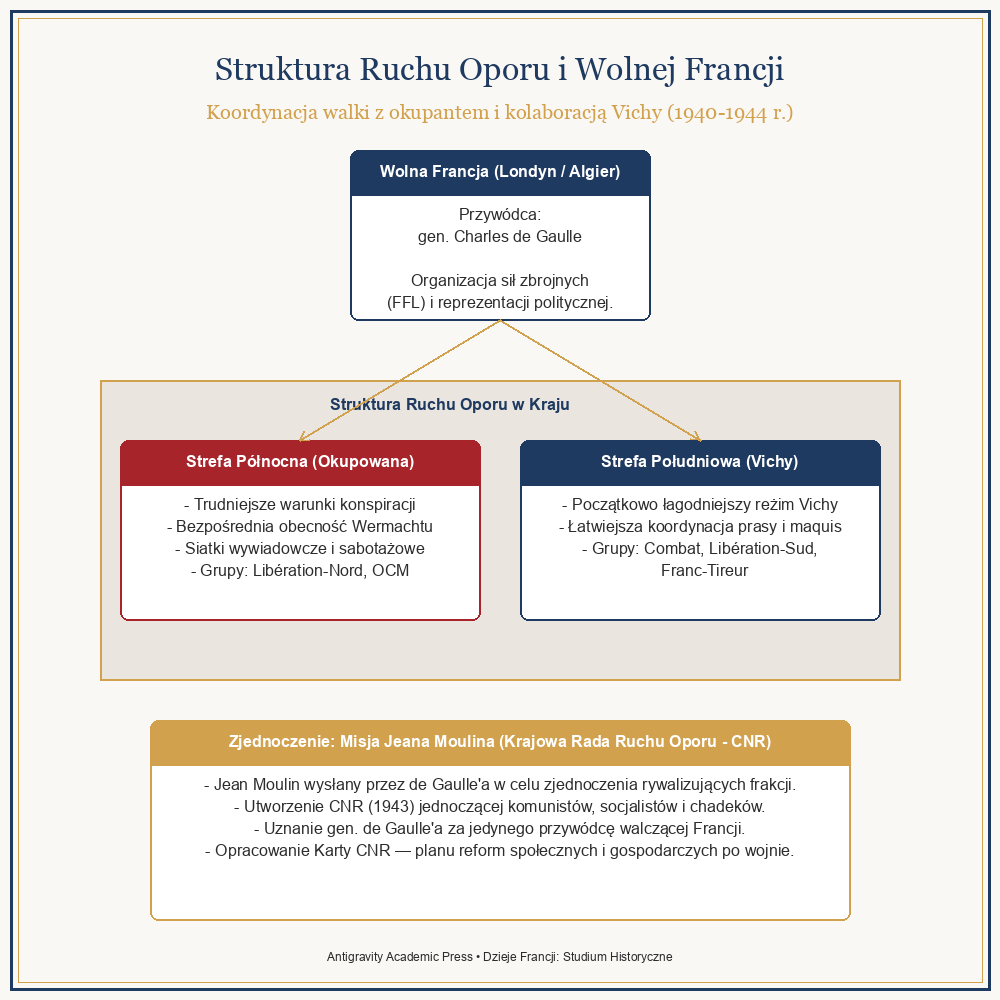
„Francja straciła bitwę, ale nie straciła wojny!”
Apel ten, choć początkowo usłyszany przez nielicznych, stał się aktem założycielskim Wolnej Francji (France Libre). De Gaulle podjął się tytanicznego zadania zbudowania od podstaw struktur państwowych i militarnych poza granicami kraju. Początki były niezwykle trudne. Rząd brytyjski Winstona Churchilla, choć uznał de Gaulle’a za „przywódcę wszystkich wolnych Francuzów” (28 czerwca 1940), długo traktował go z rezerwą, a prezydent USA Franklin Delano Roosevelt odnosił się do francuskiego generała z jawną niechęcią i nieufnością, podejrzewając go o tendencje dyktatorskie i dążąc do ułożenia stosunków z administracją Vichy w Afryce Północnej.
Kluczowym elementem legitymizacji Wolnej Francji było pozyskanie poparcia terytoriów kolonialnych. Dzięki misjom wysłanników de Gaulle’a (m.in. gen. Philippe’a Leclerca i René Plevena), jesienią 1940 roku do Wolnej Francji przyłączyły się obszary Francuskiej Afryki Równikowej (Kamerun, Czad, Kongo) oraz posiadłości na Pacyfiku. Dało to ruchowi niezbędną bazę terytorialną i surowcową. W październiku 1940 roku de Gaulle powołał w Brazzaville Radę Obrony Imperium (Conseil de défense de l’Empire), a we wrześniu 1941 roku w Londynie - Francuski Komitet Narodowy (Comité national français), pełniący rolę rządu na uchodźstwie.
Wymiar militarny Wolnej Francji realizował się poprzez utworzenie Sił Wolnych Francuzów (Forces Françaises Libres - FFL). Choć początkowo liczyły one zaledwie kilka tysięcy żołnierzy, ich znaczenie symboliczne i operacyjne systematycznie rosło. Żołnierze FFL zapisali chlubne karty w kampanii afrykańskiej, m.in. podczas heroicznej obrony oazy Bir Hakeim w Libii (maj-czerwiec 1942 roku), gdzie brygada gen. Marie-Pierre’a Kœniga przez dwa tygodnie odpierała ataki przeważających sił niemiecko-włoskich Afrika Korps gen. Erwina Rommla. Zwycięstwo to udowodniło aliantom, że żołnierze francuscy są zdolni do walki na najwyższym poziomie i ostatecznie ugruntowało pozycję de Gaulle’a jako suwerennego partnera w koalicji antyhitlerowskiej.
Równolegle do działań de Gaulle’a w Londynie, na terytorium samej Francji zaczęły spontanicznie powstawać struktury oporu wewnętrznego (Résistance). Początkowo ruch ten był niezwykle rozproszony, podzielony ideologicznie, geograficznie i operacyjnie. W strefie okupowanej dominowały organizacje o charakterze wywiadowczym i dywersyjnym (np. Organisation Civile et Militaire, Ceux de la Libération), podczas gdy w strefie południowej (Vichy) rozwijały się ruchy o charakterze bardziej polityczno-propagandowym (Combat pod wodzą Henriego Frenaya, Libération-Sud Emmanuela d’Astier de la Vigerie czy Franc-Tireur). Osobną, niezwykle dynamiczną i zdyscyplinowaną siłę stanowili komuniści (skupieni w strukturach bojowych Francs-Tireurs et Partisans - FTP), którzy po ataku Niemiec na ZSRR w czerwcu 1941 roku przystąpili do masowej i bezwzględnej walki partyzanckiej.
Dla de Gaulle’a zjednoczenie oporu wewnętrznego i podporządkowanie go Londynowi było warunkiem koniecznym do uznania go przez rządy alianckie za jedynego reprezentanta narodu francuskiego. Kluczową rolę w tym procesie odegrał Jean Moulin (ps. „Rex”, „Max”), były prefekt departamentu Eure-et-Loir, który w październiku 1941 roku zdołał przedostać się do Londynu. De Gaulle mianował go swoim oficjalnym delegatem na strefę południową z misją konsolidacji rozproszonych grup.
Moulin, wykazując się niezwykłym talentem dyplomatycznym i odwagą, doprowadził najpierw do zjednoczenia głównych ruchów strefy południowej w Zjednoczone Ruchy Oporu (Mouvements Unis de la Résistance - MUR). Kulminacją jego misji było utworzenie 27 maja 1943 roku w Paryżu Krajowej Rady Ruchu Oporu (Conseil National de la Résistance - CNR). W skład CNR weszli przedstawiciele ośmiu głównych ruchów oporu, sześciu dawnych partii politycznych (od chadecji i radykałów po socjalistów i komunistów) oraz dwóch central związkowych (CGT i CFTC). Powstanie CNR było historycznym kompromisem, który ostatecznie uznał autorytet polityczny gen. de Gaulle’a i jego rządu (od czerwca 1943 roku działającego w Algierze jako Francuski Komitet Wyzwolenia Narodowego - CFLN).
Miesiąc po tym sukcesie, 21 czerwca 1943 roku, Jean Moulin został aresztowany przez Gestapo w Caluire-et-Cuire na przedmieściach Lyonu w wyniku zdrady. Poddany okrutnym torturom przez szefa lyońskiego Gestapo Klausa Barbiego, nie wydał nikogo i zmarł w czasie transportu do Niemiec w lipcu 1943 roku. Jego męczeństwo uczyniło go symbolem całego francuskiego ruchu oporu.
Mimo śmierci Moulina, CNR kontynuowała pracę. 15 marca 1944 roku Rada przyjęła swój historyczny Program (Programme du CNR), zatytułowany znamiennie Les Jours Heureux (Szczęśliwe dni). Dokument ten był nie tylko planem natychmiastowej walki zbrojnej i koordynacji powstańczej (poprzez powołanie Krajowych Sił Wewnętrznych - FFI, pod dowództwem gen. Marie-Pierre’a Kœniga), ale przede wszystkim rewolucyjnym projektem ustrojowym dla powojennej Francji. Program CNR zakładał:
Program CNR stał się fundamentem ideowym powojennego państwa opiekuńczego (l’État-providence) we Francji i ukształtował krajobraz polityczny Czwartej Republiki.
Lądowanie aliantów w Normandii 6 czerwca 1944 roku (operacja „Overlord”) oraz w Prowansji 15 sierpnia (operacja „Anvil-Dragoon”) zapoczątkowało proces wyzwalania terytorium Francji. Kluczową rolę w tych operacjach odegrała odrodzona regularna armia francuska (tzw. Armia B pod dowództwem gen. Jeana de Lattre de Tassigny), licząca ponad 250 tysięcy żołnierzy (w dużej mierze rekrutujących się z ludności kolonialnej Afryki Północnej), oraz masowa akcja sabotażowa i partyzancka FFI na tyłach frontu, która sparaliżowała niemieckie linie zaopatrzeniowe.
Najbardziej symbolicznym aktem tego procesu było wyzwolenie Paryża w sierpniu 1944 roku. W obliczu zbliżania się wojsk alianckich, 19 sierpnia paryski komitet powstańczy (zdominowany przez komunistycznego pułkownika Henriego Rol-Tanguy) wezwał mieszkańców stolicy do powszechnego powstania. De Gaulle, obawiając się, że komuniści mogą przejąć kontrolę nad miastem i ogłosić powołanie rządu rewolucyjnego, wywarł potężny nacisk na dowództwo amerykańskie (generałów Eisenhowera i Bradleya), aby skierować do Paryża francuską 2. Dywizję Pancerną pod dowództwem gen. Philippe’a Leclerca.
24 sierpnia pierwsi żołnierze gen. Leclerca wkroczyli do Paryża, a następnego dnia niemiecki komendant wojskowy miasta, gen. Dietrich von Choltitz, podpisał akt kapitulacji garnizonu paryskiego przed Leclercem i Rol-Tanguy. Wieczorem 25 sierpnia 1944 roku gen. de Gaulle przybył do ratusza miejskiego (Hôtel de Ville), gdzie wygłosił jedno z najważniejszych przemówień w swojej karierze. Wypowiedział wówczas słowa, które legły u podstaw powojennego mitu narodowego:
„Paryż! Paryż zbezczeszczony! Paryż złamany! Paryż umęczony! Ale Paryż wyzwolony! Wyzwolony przez samego siebie, wyzwolony przez swój lud, z pomocą armii Francji, przy wsparciu i współudziale całej Francji, czyli Francji walczącej, jedynej Francji, prawdziwej Francji, Francji wiecznej!”
Przemówienie to, całkowicie pomijające kluczową rolę militarną aliantów anglosaskich, miało głęboki cel polityczny. Chodziło o natychmiastowe zrekonstruowanie suwerenności państwowej i niedopuszczenie do wprowadzenia we Francji alianckiej administracji wojskowej okupowanych terytoriów (AMGOT), którą planowali Amerykanie. Poprzez demonstrację jedności narodowej i podkreślenie ciągłości państwowej reprezentowanej przez Rząd Tymczasowy Republiki Francuskiej (GPRF, powołany 3 czerwca 1944 roku), de Gaulle zabezpieczył powojenną pozycję Francji jako mocarstwa z własną strefą okupacyjną w Niemczech i stałym miejscem w Radzie Bezpieczeństwa ONZ.
Wyzwolenie kraju zapoczątkowało również trudny, bolesny i pełen napięć proces rozrachunku z okresem kolaboracji, znany jako l’Épuration (czystka). W pierwszej fazie, bezpośrednio po wyparciu Niemców, doszło do fali tzw. dzikiej czystki (épuration sauvage). W samosądach i egzekucjach bez wyroku sądu zginęło - według różnych szacunków - od 8 do 10 tysięcy osób oskarżonych o współpracę z okupantem. Symbolem tego okresu stało się publiczne golenie głów kobietom oskarżonym o tzw. kolaborację horyzontalną (collaboration horizontale) z żołnierzami niemieckimi.
Rząd Tymczasowy de Gaulle’a dążył do jak najszybszego ujęcia tych procesów w ramy legalne, aby zapobiec wojnie domowej. Powołano specjalne Trybunały Sprawiedliwości (Cours de justice). W procesach politycznych skazano na śmierć m.in. Pierre’a Lavala (wyrok wykonano w październiku 1945 roku) oraz marszałka Philippe’a Pétaina. De Gaulle zamienił jednak karę śmierci dla Pétaina na dożywotnie więzienie ze względu na jego podeszły wiek i dawne zasługi spod Verdun; marszałek zmarł w izolacji na wyspie Yeu w 1951 roku. Łącznie w ramach czystki sądowej (épuration légale) skazano około 120 tysięcy osób, z czego blisko 1500 rozstrzelano. Czystka dotknęła również świat kultury i nauki (skazanie na śmierć i rozstrzelanie pisarza Roberta Brasillacha, potępienie Louisa-Ferdinanda Céline’a).
Powojenna Francja, chcąc odbudować jedność narodową, wykreowała zjawisko, które wybitny historyk Henry Rousso nazwał później „rezystancjalizmem” (résistancializm). Był to mit założycielski sugerujący, że ogromna większość Francuzów brała czynny udział w oporze przeciwko okupantowi, podczas gdy kolaboracja była jedynie marginesem, dziełem garstki zdrajców i renegatów. Mit ten, choć niezbędny do natychmiastowej rekonstrukcji tkanki społecznej i państwowej, na niemal trzy dekady zepchnął w cień bolesną prawdę o rzeczywistej popularności marszałka Pétaina w latach 1940-1942 oraz o systemowym, instytucjonalnym charakterze kolaboracji Państwa Francuskiego. Dopiero lata 70. XX wieku i krytyczna refleksja historyczna przyniosły powolne i bolesne przewartościowanie tej pamięci zbiorowej.
Aaby w pełni zrozumieć genezę Piątej Republiki, należy poddać rygorystycznej analizie strukturalną niewydolność jej bezpośredniej poprzedniczki. Czwarta Republika, powołana do życia w cieniu powojennej rekonstrukcji i odrzucenia autorytarnych tendencji reżimu Vichy, od samego początku cierpiała na syndrom chronicznej niestabilności rządowej, określany w klasycznej historiografii francuskiej jako régime des partis (rządy partii). System ten, oparty na skrajnym parlamentaryzmie i ordynacji proporcjonalnej, uniemożliwiał wyłonienie stabilnej większości rządzącej. Francuska scena polityczna była głęboko spolaryzowana i rozdrobniona, a rządy - których średnia długość trwania wynosiła zaledwie kilka miesięcy - stawały się zakładnikami doraźnych koalicji.
Katalizatorem, który przekształcił tę chroniczną słabość instytucjonalną w śmiertelny kryzys ustrojowy, stał się proces dekolonizacji, a w szczególności wybuch powstania w Algierii 1 listopada 1954 roku (zainicjowany przez Front Wyzwolenia Narodowego - FLN). W przeciwieństwie do Indochin czy protektoratów w Maroku i Tunezji, Algieria nie była w oczach francuskiej klasy politycznej i opinii publicznej zwykłą kolonią. Od reform z 1848 roku formalnie stanowiła integralną część terytorium narodowego, podzieloną na departamenty. Zamieszkiwała ją ponadmilionowa społeczność europejska (tzw. Pieds-Noirs, „czarne stopy”), która dominowała ekonomicznie i politycznie nad dziewięciomilionową ludnością muzułmańską, pozbawioną przez dekady pełni praw obywatelskich.
Dla armii francuskiej, wciąż leczącej rany po upokarzającej klęsce pod Diên Biên Phu w 1954 roku, utrzymanie Algierii stało się kwestią honoru narodowego i egzystencjalnego przetrwania mocarstwowej pozycji Francji. Oficerowie, przesiąknięci doktryną „wojny rewolucyjnej” (guerre révolutionnaire), postrzegali konflikt w Algierii nie jako lokalną rewoltę, lecz jako kluczowy front globalnego starcia z komunizmem. Słabość kolejnych gabinetów w Paryżu, ich chwiejność oraz gotowość do podjęcia tajnych rokowań z FLN budziły w kręgach wojskowych głęboką nieufność, graniczącą z oskarżeniami o zdradę stanu.
W latach 1956-1958 kryzys uległ radykalnemu zaostrzeniu. Brutalna bitwa o Algier (1957), prowadzona przez spadochroniarzy generała Jacques’a Massu, choć doprowadziła do rozbicia struktur miejskich FLN za cenę powszechnego stosowania tortur, głęboko podzieliła francuskie sumienie narodowe i potępiła Paryż na arenie międzynarodowej. Gdy wiosną 1958 roku prezydent René Coty desygnował na premiera Pierre’a Pflimlina - polityka chadeckiego podejrzewanego o dążenie do pokojowego rozwiązania konfliktu poprzez negocjacje - w Algierze wybuchła rewolucja.
Dzień 13 maja 1958 roku zapisał się w historii Francji jako moment załamania się porządku konstytucyjnego Czwartej Republiki. Tego dnia w Algierze masowa demonstracja Pieds-Noirs, wspierana przez wojsko, doprowadziła do zajęcia gmachu rządowego. Powołano Komitet Ocalenia Publicznego (Comité de salut public), na czele którego stanął generał Massu. Wojskowi jawnie wypowiedzieli posłuszeństwo legalnym władzom w Paryżu, żądając powołania rządu zdecydowanego na bezkompromisową walkę o „Algierię Francuską” (Algérie française).
W tym krytycznym momencie kluczową rolę odegrał generał Charles de Gaulle. Od czasu swojego odejścia z rządu w styczniu 1946 roku i porażki swojego ruchu (Rassemblement du Peuple Français - RPF) w latach pięćdziesiątych, generał przebywał w dobrowolnym wygnaniu politycznym w Colombey-les-Deux-Églises, pisząc swoje Pamiętniki wojenne i czekając na moment, w którym naród ponownie wezwie go do ratowania ojczyzny. De Gaulle, wybitny strateg, doskonale rozumiał, że kryzys algierski stwarza niepowtarzalną szansę na obalenie znienawidzonego przezeń systemu parlamentarnego i wprowadzenie nowej, autorskiej wizji ustrojowej.
Dnia 15 maja de Gaulle wydał lakoniczne oświadczenie, w którym zadeklarował gotowość do „przejęcia władzy nad Republiką”. Ta deklaracja, choć odebrana przez lewicę (z François Mitterrandem i komunistami na czele) jako zapowiedź faszystowskiego zamachu stanu, dla sparaliżowanych strachem elit politycznych Paryża stała się jedyną alternatywą dla nadciągającej wojny domowej. Wojskowi w Algierze, na czele z generałem Raoulem Salanem, zaczęli otwarcie skandować nazwisko de Gaulle’a, widząc w nim gwaranta jedności imperium.
Sytuacja zaostrzyła się jeszcze bardziej, gdy spadochroniarze z Algierii dokonali bezkrwawego desantu na Korsykę (operacja „Zmartwychwstanie” - Opération Résurrection) i przygotowywali się do uderzenia na Paryż. W obliczu groźby militarnego puczu, prezydent René Coty podjął dramatyczną decyzję. Zagroził podaniem się do dymisji, jeśli zgromadzenie nie powoła de Gaulle’a na stanowisko premiera. 1 czerwca 1958 roku Zgromadzenie Narodowe, większością 329 głosów przeciwko 224, mianowało Charles’a de Gaulle’a przewodniczącym Rady Ministrów.
Generał postawił jednak twarde warunki wstępne, które de facto oznaczały kapitulację Czwartej Republiki:
Ustawa z 3 czerwca 1958 roku, modyfikująca procedurę rewizji konstytucyjnej przewidzianą w art. 90 Konstytucji z 1946 roku, formalnie zalegalizowała ten proces, choć w istocie stanowiła ona pokojowe i kontrolowane przejście rewolucyjne do nowego porządku politycznego.
Prace nad nową ustawą zasadniczą przebiegały w błyskawicznym tempie latem 1958 roku. Głównym architektem tekstu, obok samego de Gaulle’a, był Michel Debré, wierny gaullista i wybitny prawnik, późniejszy pierwszy premier Piątej Republiki. Nowa konstytucja miała być syntezą dwóch tradycji: gaullistowskiej wizji (Rémond, 1982) silnego, ponadpartyjnego arbitra narodowego (wyłożonej przez generała w słynnym przemówieniu w Bayeux w czerwcu 1946 roku) oraz postulowanego przez Debré brytyjskiego modelu gabinetowo-parlamentarnego, opartego na tzw. „parlamencie racjonalizowanym” (parlementarisme rationalisé).
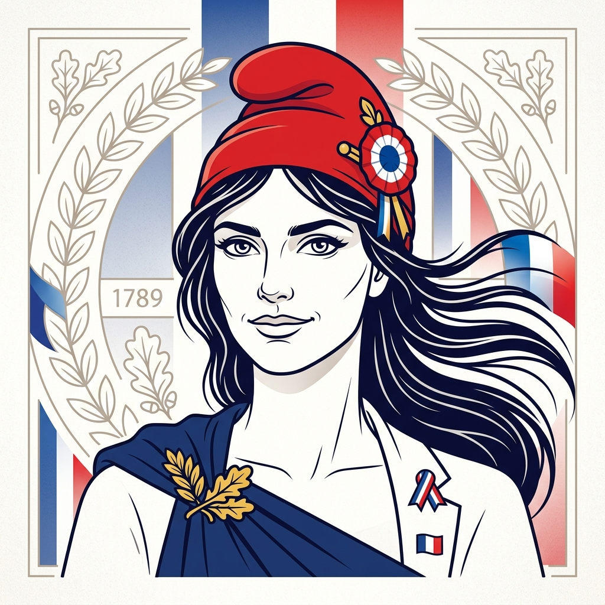
Konstytucja zatwierdzona w referendum z 28 sześnia 1958 roku przygniatającą większością 82,6% głosów (przy frekwencji sięgającej 85%) fundamentalnie przedefiniowała relacje między władzą wykonawczą a ustawodawczą. Kluczowym elementem nowego systemu stała się instytucja Prezydenta Republiki.
Zgodnie z pierwotnym tekstem z 1958 roku, prezydent był wybierany przez szerokie kolegium elektorów (ok. 80 tysięcy osób, składające się głównie z parlamentarzystów i przedstawicieli samorządów lokalnych), co miało uniemożliwić jego bezpośrednią zależność od partii politycznych. Do najważniejszych prerogatyw prezydenckich, czyniących z niego rzeczywiste centrum decyzyjne państwa, należały:
Jednocześnie wprowadzono mechanizmy drastycznie ograniczające autonomię parlamentu. Rząd otrzymał potężne instrumenty kontroli nad procedurą ustawodawczą, takie jak artykuł 49 ustęp 3 (umożliwiający przyjęcie ustawy bez głosowania, chyba że opozycja zgłosi i przegłosuje wniosek o wotum nieufności bezwzględną większością głosów) czy ograniczenie sesji parlamentarnych i liczby komisji stałych. Ponadto wprowadzono zasadę niepołączalności mandatu parlamentarnego z funkcją rządową (incompatibilité), co miało przeciąć pępowinę łączącą ministrów z ich partiami macierzystymi.
Dopełnieniem ewolucji ustrojowej Piątej Republiki była reforma z 1962 roku. Po serii zamachów na swoje życie (w tym słynnym zamachu w Petit-Clamart w sierpniu 1962 roku), de Gaulle uznał, że dla utrwalenia instytucji prezydenckich po jego śmierci konieczne jest nadanie prezydentowi bezpośredniej legitymacji demokratycznej. Wbrew opinii większości konstytucjonalistów i przy gwałtownym oporze Senatu, generał rozpisał referendum w trybie art. 11, w którym Francuzi opowiedzieli się za wprowadzeniem powszechnych i bezpośrednich wyborów Prezydenta Republiki. Krok ten ostatecznie ukształtował specyficzny francuski system półprezydencki (régime semi-présidentiel), w którym prezydent, dysponując mandatem od całego narodu, stawał się niekwestionowanym liderem egzekutywy, spychając premiera do roli wykonawcy swojej polityki.
Objęcie władzy przez de Gaulle’a w czerwcu 1958 roku nastąpiło pod hasłem ocalenia „Algierii Francuskiej”. Generał wypowiedział wówczas do tłumu w Algierze słynne, celowo wieloznaczne słowa: „Zrozumiałem was” (Je vous ai compris). Szybko jednak okazało się, że pragmatyzm geopolityczny de Gaulle’a bierze górę nad sentymentami kolonialnymi i nacjonalistycznymi obietnicami. Generał zdawał sobie sprawę, że utrzymanie Algierii metodami militarnymi jest na dłuższą metę niemożliwe, a koszty ekonomiczne i dyplomatyczne tej wojny uniemożliwiają realizację jego wielkiego celu: modernizacji gospodarczej Francji oraz odbudowy jej mocarstwowej pozycji w Europie i na świecie.
Początkowo de Gaulle próbował rozwiązać konflikt metodami pośrednimi. W październiku 1958 roku ogłosił tzw. Plan Konstantyny - ambitny program inwestycji gospodarczych, industrializacji i edukacji, mający na celu podniesienie poziomu życia ludności muzułmańskiej i związanie jej z Francją więzami wdzięczności. Jednocześnie zaoferował powstańcom tzw. „pokój dzielnych” (paix des braves), czyli kapitulację w zamian za amnestię, co zostało przez FLN odrzucone.
Przełom nastąpił 16 września 1959 roku, kiedy to de Gaulle w orędziu telewizyjnym po raz pierwszy publicznie użył słowa „samookreślenie” (autodétermination). Zaproponował Algierczykom trzy drogi: całkowitą integrację z Francją, stowarzyszenie lub secesję. Ta deklaracja wywołała wstrząs i poczucie głębokiej zdrady wśród Pieds-Noirs oraz konserwatywnej części korpusu oficerskiego.
W styczniu 1960 roku w Algierze doszło do tzw. „tygodnia barykad” - zbrojnego buntu ekstremistów kolonialnych, stłumionego dzięki lojalności większości armii wobec de Gaulle’a. Rok później, w styczniu 1961 roku, de Gaulle rozpisał referendum w sprawie samookreślenia Algierii, w którym 75% głosujących we Francji metropolitalnej poparło jego kurs polityczny.
Odpowiedzią skrajnych zwolenników kolonializmu był tzw. pucz generałów w Algierze w kwietniu 1961 roku. Czterech emerytowanych generałów (Maurice Challe, Edmond Jouhaud, André Zeller i Raoul Salan) podjęło próbę obalenia de Gaulle’a i przejęcia kontroli nad Algierią. Generał wykazał się wówczas niezwykłą determinacją. Występując w mundurze wojskowym w telewizji, potępił „kwartet emerytowanych generałów” i powołał się na nadzwyczajne pełnomocnictwa z art. 16 Konstytucji. Dzięki poparciu poborowych, którzy odmówili wykonywania rozkazów puczystów, spisek załamał się w ciągu niespełna pięciu dni.
Pokonani ekstremiści zeszli do podziemia, tworząc Organizację Tajnej Armii (Organisation armée secrète - OAS). OAS rozpoczęła kampanię brutalnego terroru zarówno w Algierii, jak i we Francji metropolitalnej. Dokonywano zamachów bombowych, mordowano zwolenników niepodległości, intelektualistów (m.in. zamach na mieszkanie Jean-Paul Sartre’a) oraz urzędników państwowych. Sam de Gaulle stał się celem kilkunastu nieudanych prób zamachu.
Mimo terroru OAS, rokowania między rządem francuskim a Tymczasowym Rządem Republiki Algierskiej (GPRA) były kontynuowane. Ich finałem było podpisanie 18 marca 1962 roku porozumień w Évian. Przewidywały one natychmiastowe zawieszenie broni, przeprowadzenie referendum samookreśleniowego oraz gwarancje własnościowe i osobiste dla mniejszości europejskiej w niepodległej Algierii.
W referendum z 1 lipca 1962 roku Algierczycy przygniatającą większością głosów wybrali niepodległość, którą de Gaulle uroczyście proklamował 3 lipca 1962 roku. Koniec wojny algierskiej przyniósł jednak gigantyczną tragedię humanitarną:
| Grupa społeczna | Liczebność | Losy po 1962 roku |
|---|---|---|
| Pieds-Noirs (Europejczycy) | ok. 1 000 000 | Masowy, paniczny exodus do Francji metropolitalnej w ciągu kilku miesięcy pod hasłem „walizka lub trumna” (la valise ou le cercueil). |
| Harkis (Muzułmańscy pomocnicy armii francuskiej) | ok. 200 000 | Porzuceni przez władze francuskie; dziesiątki tysięcy padły ofiarą krwawych odwetów ze strony FLN; nieliczni, którzy zdołali uciec do Francji, zostali umieszczeni w urągających ludzkiej godności obozach przejściowych. |
Wojna w Algierii, która kosztowała życie setek tysięcy ludzi (szacunki wahają się od 350 tysięcy do ponad miliona ofiar po stronie algierskiej oraz ok. 30 tysięcy żołnierzy francuskich), pozostawiła głęboką ranę w psychice narodowej obu krajów, determinując relacje francusko-algierskie na kolejne dziesięciolecia.
Przezwyciężenie kryzysu algierskiego i konsolidacja instytucjonalna Piątej Republiki pozwoliły na ukształtowanie się gaullizmu jako dominującej i niezwykle spójnej doktryny politycznej, która zdominowała francuską scenę polityczną na ponad dwie dekady, a jej dziedzictwo pozostaje żywe do dziś. Gaullizm nie był klasyczną ideologią w rozumieniu marksistowskim czy liberalnym; stanowił raczej pragmatyczną filozofię władzy i państwa, zakorzenioną w specyficznie zinterpretowanej tradycji republikańskiej i narodowej.
W ujęciu politologicznym i historycznym (reprezentowanym m.in. przez wybitnego badacza René Rémonda w jego klasycznym dziele Les Droites en France), gaullizm sytuuje się w nurcie bonapartystycznym francuskiej prawicy - charakteryzującym się kultem silnego przywódcy, bezpośrednią więzią między wodzem a ludem (poprzez plebiscyty) oraz dążeniem do wielkości narodowej przy jednoczesnym odrzuceniu podziałów partyjnych. Można jednak wyróżnić kilka fundamentalnych filarów doktryny gaullistowskiej:
Podsumowując, cezura roku 1958 i następujące po niej cztery lata dramatycznych zmaganiach z kryzysem algierskim fundamentalnie przekształciły Francję. Charles de Gaulle nie tylko zapobiegł wojnie domowej i przeprowadził bolesny, lecz nieuchronny proces dekolonizacji, ale przede wszystkim stworzył ramy ustrojowe, które okazały się niezwykle trwałe. Piąta Republika, mimo wielokrotnych kryzysów (w tym rewolty Maja 1968 roku), udowodniła swoją elastyczność i zdolność do przetrwania, stając się najstabilniejszym reżimem politycznym we Francji od czasów rewolucji 1789 roku.
Wiosna 1968 roku zapisała się w historii Francji jako moment gwałtownego pęknięcia tektonicznego, które wstrząsnęło fundamentami Piątej Republiki. Aby w pełni zrozumieć genezę i dynamikę rewolty majowej, należy umieścić ją w kontekście powojennego trzydziestolecia (Les Trente Glorieuses). Był to okres bezprecedensowego wzrostu gospodarczego, gwałtownej urbanizacji oraz głębokich przemian demograficznych związanych z powojennym wyżem demograficznym (baby boom). Francja rządzona przez generała Charles’a de Gaulle’a od 1958 roku była państwem zmodernizowanym technokratycznie, lecz jednocześnie głęboko konserwatywnym pod względem struktur społecznych, obyczajowych i instytucjonalnych. Autorytarny, paternalistyczny styl rządzenia prezydenta, połączony z rygorystyczną kontrolą państwową nad mediami (zwłaszcza radiem i telewizją w ramach ORTF), coraz silniej kontrastował z aspiracjami młodego pokolenia, które nie pamiętało traumy II wojny światowej ani wojny algierskiej.
Zapłonem dla protestów stały się wydarzenia na nowo powstałym uniwersytecie w Nanterre na przedmieściach Paryża, gdzie pod przywództwem Daniela Cohn-Bendita ukonstytuował się Ruch 22 Marca. Początkowe żądania studentów, dotyczące m.in. liberalizacji regulaminów akademickich i zniesienia segregacji płciowej w domach studenckich, szybko przekształciły się w totalną krytykę uniwersytetu jako „fabryki konformistów” oraz kapitalistycznego społeczeństwa konsumpcyjnego. Przeniesienie protestów do Dzielnicy Łacińskiej w Paryżu, zamknięcie Sorbony przez rektora Roche’a oraz brutalna interwencja policji (CRS) doprowadziły do eskalacji konfliktu. Noc z 10 na 11 maja 1968 roku, znana jako „noc barykad”, stała się mitem założycielskim ruchu, demonstrującym determinację młodzieży i bezradność tradycyjnych sił porządkowych.
Najbardziej brzemiennym w skutki polityczne i gospodarcze momentem rewolty było jednak przyłączenie się do protestu świata pracy. 13 maja 1968 roku centralne związki zawodowe (zwłaszcza komunistyczna CGT oraz chadecko-lewicowa CFDT) ogłosiły strajk generalny. W ciągu kilku dni Francja została sparaliżowana: zastrajkowało blisko 10 milionów robotników, okupujących fabryki (m.in. zakłady Renault w Billancourt). Był to największy strajk dziki w historii Europy Zachodniej. Doszło do paradoksalnego sojuszu - choć tymczasowego i pełnego wzajemnej nieufności - między burżuazyjną młodzieżą akademicką a tradycyjną klasą robotniczą.
Historiografia francuska do dziś pozostaje podzielona w ocenie charakteru tych wydarzeń. Raymond Aron w swojej klasycznej pracy La Révolution introuvable (Rewolucja, której nie było) interpretował Maj ’68 jako zbiorowy „psychodramat” i „karnawał”, pozbawiony realnego programu politycznego. Z kolei lewicowi intelektualiści, tacy jak Jean-Paul Sartre czy Michel Foucault, widzieli w nim narodziny nowego podmiotu rewolucyjnego i kres tradycyjnego marksizmu skupionego wyłącznie na walce klas. W ujęciu Pierre’a Rosanvallona Maj ’68 był przede wszystkim kryzysem reprezentacji politycznej i narodzinami żądań autogestii (samorządności) w sferze pracy i życia społecznego.
Reakcja de Gaulle’a na kryzys ujawniła granice jego charyzmatycznego przywództwa. Po okresie milczenia i nieudanych orędziach telewizyjnych, 29 maja prezydent potajemnie opuścił Paryż, udając się do Baden-Baden, by skonsultować się z dowódcą francuskich wojsk okupacyjnych w Niemczech, generałem Jacques’em Massu. Ten dramatyczny gest, interpretowany przez jednych jako chwila słabości, przez innych jako genialny manewr taktyczny mający wywołać widmo wojny domowej, zakończył się powrotem de Gaulle’a do stolicy. 30 maja prezydent wygłosił zdecydowane przemówienie radiowe, rozwiązał Zgromadzenie Narodowe i wezwał do mobilizacji „milczącej większości”. Tego samego dnia na Polach Elizejskich odbyła się gigantyczna manifestacja poparcia dla generała, licząca kilkaset tysięcy uczestników.
Czerwcowe wybory parlamentarne przyniosły miażdżące zwycięstwo gaullistom (UDR), co mogło sugerować powrót do status quo ante. Było to jednak zwycięstwo pyrrusowe. Choć porozumienia z Grenelle (Accords de Grenelle), wynegocjowane m.in. przez młodego sekretarza stanu ds. zatrudnienia Edouarda Balladura i premiera Georges’a Pompidou, przyniosły robotnikom znaczące podwyżki płac (wzrost płacy minimalnej o 35%) oraz skrócenie czasu pracy, to autorytet samego de Gaulle’a został bezpowrotnie nadszarpnięty. Francuzi, choć przestraszeni wizją rewolucji, pragnęli głębokich zmian. Próba odzyskania inicjatywy politycznej przez prezydenta poprzez referendum w kwietniu 1969 roku dotyczące reformy Senatu i decentralizacji zakończyła się jego porażką (52,4% głosów na „nie”). Zgodnie ze swoją obietnicą, generał de Gaulle natychmiast podał się do dymisji, co symbolicznie zamknęło heroiczną epokę gaullizmu państwowego.
W wymiarze długofalowym Maj ’68 dokonał głębokiego przewrotu kulturowego i obyczajowego. Przeformułowaniu uległy relacje władzy w rodzinie, szkole i na uniwersytecie. Nastąpiła gwałtowna sekularyzacja społeczeństwa, przyspieszona przez kryzys tradycyjnego katolicyzmu. Rewolta ta otworzyła drogę do emancypacji kobiet, czego symbolem stało się zalegalizowanie antykoncepcji (ustawa Neuwirtha z 1967 r., wdrożona w pełni po 1968 r.) oraz późniejsza batalia o prawo do aborcji. Jak zauważył Régis Debray, Maj ’68, choć deklaratywnie antykapitalistyczny, paradoksalnie oczyścił drogę dla nowej, bardziej elastycznej i zindywidualizowanej fazy kapitalizmu konsumpcyjnego, niszcząc archaiczne, przednowoczesne struktury społeczne Francji.
Zwycięstwo François Mitterranda w wyborach prezydenckich 10 maja 1981 roku stanowiło historyczny przełom w dziejach Piątej Republiki. Po raz pierwszy od 1958 roku władzę wykonawczą przejął reprezentant lewicy, co stanowiło ostateczny test dla instytucji stworzonych przez de Gaulle’a. Wybór Mitterranda, lidera zreorganizowanej na kongresie w Épinay (1971) Partii Socjalistycznej (PS), był rezultatem długofalowej strategii zjednoczenia lewicy (Union de la Gauche) oraz podpisania Wspólnego Programu z Francuską Partią Komunistyczną (PCF) w 1972 roku.
Mitterrand, polityk o niezwykle złożonym życiorysie, wybitny intelektualista i strateg, którego przeciwnicy nazywali z racji makiawelicznych talentów „Florentńczykiem”, objął urząd z programem „zmiany życia” (Changer la vie). Pierwszy etap jego prezydentury (1981-1983), pod kierownictwem premiera Pierre’a Mauroy, charakteryzował się próbą realizacji radykalnego programu gospodarczego i społecznego o proweniencji neokeynesowskiej, opartego na tzw. „110 propozycjach dla Francji”.
Do najważniejszych reform tego okresu należały:
Radykalny eksperyment gospodarczy lewicy szybko jednak zderzył się z barierą zewnętrzną. W warunkach globalnego kryzysu naftowego i neoliberalnego zwrotu w gospodarce światowej (reaganyzm w USA, tatcheryzm w Wielkiej Brytanii), jednostronna stymulacja popytu we Francji doprowadziła do katastrofalnych skutków: gwałtownego wzrostu inflacji, deficytu handlowego oraz spekulacyjnych ataków na franka. Trzykrotna dewaluacja waluty zmusiła Mitterranda do podjęcia jednej z najtrudniejszych decyzji w jego karierze.
W marcu 1983 roku prezydent dokonał tzw. „zwrotu ku rygorowi” (tournant de la rigueur). Odrzucając postulaty „skrzydła jakobińskiego” (m.in. Jean-Pierre’a Chevènementa), które domagało się wyjścia z Europejskiego Systemu Walutowego (EMS) i wprowadzenia protekcjonizmu, Mitterrand wybrał opcję europejską i modernizacyjną, firmowaną przez ministra finansów Jacques’a Delorsa. Francja wdrożyła politykę restrykcji budżetowych, walki z inflacją i restrukturyzacji tradycyjnych gałęzi przemysłu (górnictwo, hutnictwo), co doprowadziło do załamania koalicji z komunistami (którzy opuścili rząd w 1984 r. po nominacji Laurenta Fabiusa na premiera) i trwałego bezrobocia strukturalnego. Zwrot ten oznaczał de facto ideologiczne pojednanie francuskiej lewicy z gospodarką rynkową i integracją europejską, co utorowało drogę do podpisania Jednolitego Aktu Europejskiego (1986) oraz traktatu z Maastricht (1992).
<img src="images/poster_french_regimes.png" alt="Ewolucja i periodyzacja ustrojów politycznych Francji" />
<div class="video-play-overlay">▶</div>
<p class="video-print-link">Wersja wideo dostępna online: <a href="https://adamsnihur.github.io/opracowania/historia_francji/#animacje">adamsnihur.github.io/opracowania/historia_francji/#animacje</a></p>Jednym z najważniejszych i najbardziej zaskakujących doświadczeń ustrojowych prezydentury François Mitterranda było zjawisko kohabitacji (cohabitation), czyli współrządzenia prezydenta wywodzącego się z jednego obozu politycznego z rządem i większością parlamentarną z obozu przeciwnego. Sytuacja ta, nieprzewidziana wprost przez twórców konstytucji z 1958 roku, stała się ostatecznym dowodem na elastyczność i dojrzałość instytucjonalną Piątej Republiki.
Do pierwszej kohabitacji doszło po wyborach parlamentarnych w marcu 1986 roku, które przyniosły zwycięstwo koalicji centroprawicowej (RPR-UDF). Mitterrand, szanując reguły gry demokratycznej, powołał na stanowisko premiera lidera neogaullistów, Jacques’a Chiraca. Powstał układ dwuwładzy, który zrodził pytania o interpretację artykułów konstytucji określających prerogatywy prezydenta (art. 5 - arbiter i gwarant niepodległości) oraz rządu (art. 20 - określanie i prowadzenie polityki narodu).
┌────────────────────────────────────────────────────────────────────────┐
│ KONSTYTUCYJNY PODZIAŁ WŁADZY │
├────────────────────────────────────────┬───────────────────────────────┤
│ PREZYDENT (Mitterrand) │ PREMIER (Chirac / Balladur) │
├────────────────────────────────────────┼───────────────────────────────┤
│ • Zwierzchnik sił zbrojnych │ • Kierowanie rządem (art. 21) │
│ • Polityka zagraniczna i obronna │ • Polityka wewnętrzna i gosp. │
│ • Prawo odmowy podpisu ordonansów │ • Administracja i aparat państ.│
└────────────────────────────────────────┴───────────────────────────────┘Mitterrand przyjął strategię „ofensywnej kohabitacji”. Zrezygnował z bezpośredniego wpływu na politykę gospodarczą i społeczną rządu Chiraca, który natychmiast przystąpił do reprywatyzacji przedsiębiorstw i liberalizacji rynku. Jednocześnie prezydent twardo bronił swoich prerogatyw w dziedzinie polityki zagranicznej i obronnej, tworząc koncepcję tzw. domaine réservé (domeny zastrzeżonej). Odmówił m.in. podpisania dekretów (ordonansów) rządu dotyczących prywatyzacji i reformy okręgów wyborczych, zmuszając gabinet Chiraca do przejścia przez pełną procedurę parlamentarną. Ta taktyczna gra pozwoliła Mitterrandowi na pozycjonowanie się w roli arbitra stojącego ponad bieżącym sporem partyjnym i obrońcy praw socjalnych Francuzów. Strategia ta przyniosła mu spektakularne zwycięstwo w wyborach prezydenckich w 1988 roku, w których pokonał Chiraca w drugiej turze.
Druga kohabitacja (1993-1995), po ponownej klęsce lewicy w wyborach parlamentarnych, miała łagodniejszy przebieg. Na czele rządu stanął Édouard Balladur (RPR). Mitterrand, osłabiony chorobą nowotworową i zbliżający się do końca swojej drugiej kadencji, koncentrował się głównie na polityce europejskiej (wdrażanie traktatu z Maastricht) oraz globalnej, pozostawiając Balladurowi znaczną swobodę w sprawach wewnętrznych.
Historiografia i nauka o prawie konstytucyjnym (m.in. Maurice Duverger) wskazują, że kohabitacja dokonała głębokiej demitologizacji urzędu prezydenta w Piątej Republice. Wykazała ona, że ustrój Francji nie jest czysto prezydencki, lecz ma charakter hybrydowy (semiprezydencki). W warunkach jedności politycznej prezydenta i większości parlamentarnej system funkcjonuje w sposób wysoce scentralizowany (monarchia republikańska). W warunkach kohabitacji następuje natomiast przesunięcie ciężaru władzy w stronę premiera i parlamentu, zbliżając Francję do klasycznego modelu parlamentarno-gabinetowego.
| Obszar | Faza radykalna (1981-1983) | Faza rygoru (1983-1985) |
|---|---|---|
| Polityka monetarna | Dewaluacja franka w celu wsparcia eksportu; krytyka dyktatu Bundesbanku. | Obrona silnego franka (franc fort); ścisłe powiązanie z marką niemiecką w EMS. |
| Sektor przedsiębiorstw | Masowa nacjonalizacja banków i kluczowych koncernów przemysłowych. | Restrukturyzacja przemysłu ciężkiego; przyzwolenie na redukcję zatrudnienia. |
| Rynek pracy | Skrócenie czasu pracy do 39h; emerytura w wieku 60 lat; wzrost płacy minimalnej. | Zamrożenie płac w sektorze publicznym; walka z inflacją kosztem wzrostu bezrobocia. |
| Polityka fiskalna | Zwiększenie wydatków socjalnych; stymulacja popytowa (Keynesizm). | Ograniczenie deficytu budżetowego; rygorystyczna kontrola wydatków państwa. |
Prezydentura François Mitterranda, trwająca czternaście lat, pozostawiła trwały ślad w strukturze społecznej i kulturowej Francji. Był to czas ostatecznego przejścia od tradycyjnego społeczeństwa klasowego do społeczeństwa postindustrialnego, zdominowanego przez sektor usług i nową klasę średnią.
W sferze społecznej, mimo wycofania się z radykalnych postulatów socjalistycznych, rządy lewicy utrwaliły szereg praw pracowniczych i socjalnych, które stały się integralną częścią francuskiego modelu społecznego (modèle social français). Wprowadzenie w 1988 roku przez rząd Michela Rocarda minimalnego dochodu gwarantowanego (RMI - Revenu minimum d’insertion) było pionierskim rozwiązaniem w walce z nowymi formami ubóstwa i wykluczenia społecznego, wywołanymi przez deindustrializację.
Równie istotne były zmiany w sferze mediów i kultury. Pod kierownictwem charyzmatycznego ministra kultury Jacka Langa państwo francuskie dokonało bezprecedensowej demokratyzacji i decentralizacji kultury. Budżet tego resortu został podwojony, osiągając postulowany 1% budżetu państwa. Lang zainicjował m.in. Święto Muzyki (Fête de la Musique), zniósł monopol państwowy w radiu i telewizji (co doprowadziło do powstania prywatnych stacji radiowych i telewizyjnych, m.in. Canal+), a także wprowadził ustawę o jednolitej cenie książki, chroniącą małe księgarnie przed konkurencją supermarketów.
Mitterrand zapisał się w pamięci Francuzów także jako inicjator monumentalnych projektów architektonicznych w Paryżu (Grands Travaux). Szklana piramida na dziedzińcu Luwru (zaprojektowana przez I.M. Peia), nowy gmach Biblioteki Narodowej (obecnie Bibliothèque nationale de France im. François Mitterranda), Opera Bastille czy Wielki Łuk Braterstwa w dzielnicy La Défense na stałe zmieniły krajobraz stolicy, łącząc tradycję historyczną z nowoczesnością i demonstrując ambicje kulturowe państwa.
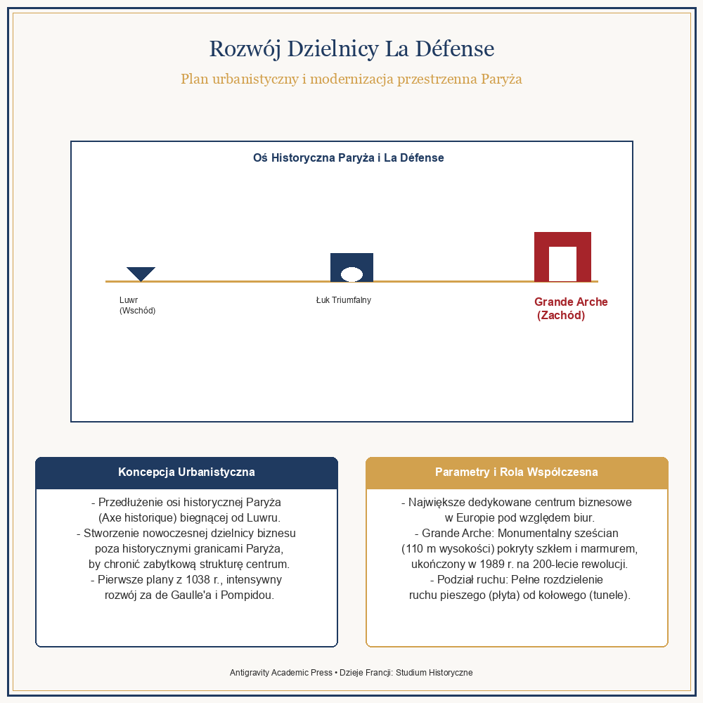
Jednocześnie bilans ten nie pozbawiony jest cieni. Okres ten to również czas narastających problemów integracyjnych związanych z drugą generacją imigrantów z Afryki Północnej. Powstanie w 1984 roku ruchu SOS Racisme (pod hasłem Touche pas à mon pote) odzwierciedlało napięcia rasowe i społeczne na przedmieściach wielkich miast (banlieues). Ponadto, kryzys tradycyjnej tożsamości lewicowej i rozczarowanie zwrotem ku rygorowi stworzyły przestrzeń polityczną dla narodzin populistycznej skrajnej prawicy pod przywództwem Jean-Marie Le Pena (Front Narodowy), który w wyborach europejskich w 1984 roku po raz pierwszy odniósł znaczący sukces wyborczy.
Podsumowując, lata 1968-1995 stanowiły okres fundamentalnej transformacji Francji. Od rewolucyjnego, antyautorytarnego zrywu Maja 1968 roku, przez liberalizację obyczajową lat 70., aż po pragmatyczną ewolucję socjalizmu pod wodzą François Mitterranda, Francja przekształciła się z państwa o strukturach hierarchicznych i paternalistycznych w nowoczesne, zróżnicowane społeczeństwo demokratyczne, w pełni zintegrowane z projektem europejskim, choć nieustannie borykające się z wyzwaniami globalizacji i spójności społecznej.
Wchodząc w ostatnią dekadę XX wieku oraz pierwsze ćwierćwiecze XXI stulecia, Piąta Republika stanęła w obliczu głębokiej rekonfiguracji swojego paradygmatu ustrojowego, społecznego i międzynarodowego. Tradycyjny model państwa gaullistowskiego - opartego na silnej, scentralizowanej władzy prezydenckiej, interwencjonizmie gospodarczym (dirigisme), asymilacyjnym uniwersalizmie oraz mocarstwowej samodzielności - zderzył się z potężnymi procesami globalizacyjnymi, integracją europejską oraz transformacją struktury demograficznej i kulturowej kraju. W debacie historiograficznej i politologicznej okres ten często interpretowany jest jako czas permanentnego kryzysu tożsamościowego (Pierre Nora określał to mianem „epoki melancholii”), w którym Francja musiała na nowo zdefiniować swoje miejsce w świecie oraz zrewidować wewnętrzny pakt republikański.
Rola Francji w procesie integracji europejskiej na przełomie tysiącleci była determinowana dążeniem do zachowania statusu mocarstwowego poprzez mechanizmy wspólnotowe. Po zjednoczeniu Niemiec w 1990 roku, prezydent François Mitterrand dostrzegł konieczność silniejszego powiązania zjednoczonej i potencjalnie dominującej Republiki Federalnej Niemiec ze strukturami europejskimi. Narzędziem tej strategii stała się unia gospodarcza i walutowa.
Traktat z Maastricht (podpisany 7 lutego 1992 roku) stanowił kamień milowy, ale i cezurę odsłaniającą głębokie pęknięcia wewnątrz francuskiego społeczeństwa. Kampania referendalna przed ratyfikacją traktatu we wrześniu 1992 roku spolaryzowała kraj. Zwycięstwo zwolenników integracji było minimalne (51,04% głosów na „tak”), co historiografowie (tacy jak Marcel Gauchet) interpretują jako narodziny trwałego podziału na beneficjentów globalizacji i integracji europejskiej oraz „Francję peryferyjną”, lękającą się utraty suwerenności narodowej i osłony socjalnej. Debata ta obnażyła sprzeczność między tradycyjną suwerennością republikańską (souveraineté) a ponadnarodowym zarządzaniem technokratycznym.
Oś Paryż-Berlin, tradycyjny motor napędowy integracji, uległa w kolejnych dekadach istotnemu przesunięciu akcentów. O ile w epoce Mitterranda i Helmuta Kohla partnerstwo to opierało się na względnej równowadze polityczno-gospodarczej, o tyle reformy strukturalne w Niemczech (szczególnie pakiet Agenda 2010 Gerharda Schrödera) oraz kryzys zadłużeniowy w strefie euro po 2008 roku doprowadziły do asymetrii. Za prezydentury Nicolasa Sarkozy’ego (ukucie pojęcia „Merkozy”) oraz François Hollande’a, Francja coraz wyraźniej występowała jako dłużnik forsujący politykę stymulowania wzrostu, podczas gdy Niemcy odgrywały rolę wierzyciela i rzecznika dyscypliny budżetowej (Austerity). Ta dywergencja ekonomiczna osłabiła pozycję Paryża jako niekwestionowanego lidera politycznego kontynentu.
Mimo to, Francja konsekwentnie dążyła do nadawania tonu debacie o przyszłości Unii. Odrzucenie w referendum w 2005 roku projektu Traktatu ustanawiającego Konstytucję dla Europy (54,67% na „nie”) było kolejnym sygnałem oporu społecznego wobec neoliberalnego kierunku integracji, co zmusiło elity polityczne do ratyfikacji zmodyfikowanych zapisów drogą parlamentarną w formie Traktatu Lizbońskiego (2007) - krok ten do dziś rzuca się cieniem na legitymizację procesów integracyjnych nad Sekwaną.
Równolegle do wyzwań integracyjnych, Francja stanęła przed głębokim kryzysem wewnętrznej spójności społecznej. Klasyczny, jakobiński model integracji, oparty na asymilacji (l’assimilation) - w którym jednostka w sferze publicznej wybywa się swoich partykularnych tożsamości etnicznych czy religijnych na rzecz uniwersalnego statusu obywatela - zaczął wykazywać cechy strukturalnej niewydolności.
Proces ten był stymulowany przez kilka czynników:
Symbolem kryzysu modelu integracji stały się gwałtowne zamieszki na przedmieściach w 2005 roku, które zmusiły rząd do wprowadzenia stanu wyjątkowego. Kolejną cezurą była fala krwawych zamachów terrorystycznych o podłożu dżihadystycznym (m.in. ataki na redakcję „Charlie Hebdo” i klub Bataclan w 2015 roku, zamach w Nicei w 2016 roku, czy brutalne zabójstwo nauczyciela Samuela Paty’ego w 2020 roku). Wydarzenia te postawiły w centrum debaty publicznej kwestię bezpieczeństwa oraz granic tolerancji republikańskiej.
W tym kontekście fundamentalnemu przewartościowaniu uległo pojęcie laickości (laïcité), zakorzenione w ustawie z 1905 roku o rozdziale Kościoła od państwa. Pierwotnie pomyślana jako gwarancja neutralności państwa wobec wyznań i wolności sumienia, laickość zaczęła być redefiniowana jako instrument ochrony tożsamości republikańskiej przed wpływami religijnymi w przestrzeni publicznej. Wyrazem tego były kolejne akty prawne:
Debata wokół tych regulacji podzieliła francuską inteligencję. Z jednej strony uformował się nurt „republikańskiego rygoryzmu” (reprezentowany m.in. przez Elisabeth Badinter czy Laurenta Bouveta), traktujący bezkompromisową obronę laïcité jako warunek przetrwania Republiki. Z drugiej strony, środowiska lewicowe i liberalne krytykowały te działania jako stygmatyzację społeczności muzułmańskiej i odejście od pierwotnego, inkluzywnego ducha prawa z 1905 roku.
Kryzys gospodarczy, lęki tożsamościowe oraz poczucie odklejenia elit politycznych od problemów obywateli doprowadziły do głębokiej erozji tradycyjnego systemu partyjnego, opartego na rywalizacji centroprawicy (gaulliści, później RPR, UMP, Republikanie) i centrolewicy (Partia Socjalistyczna). Proces ten otworzył drogę do bezprecedensowego wzrostu znaczenia sił populistycznych i suwerenistycznych.
Kluczową rolę w tym procesie odegrał Front Narodowy (Front National - FN), założony w 1972 roku przez Jean-Marie Le Pena. Przez dekady partia ta funkcjonowała na marginesie głównego nurtu, kojarzona z antysemityzmem, rewizjonizmem historycznym i radykalnym ksenofobicznym nacjonalizmem. Przełomem okazały się wybory prezydenckie w 2002 roku, gdy Jean-Marie Le Pen nieoczekiwanie wszedł do drugiej tury, wywołując wstrząs na francuskiej scenie politycznej i mobilizację tzw. „frontu republikańskiego” (szerokiej koalicji od skrajnej lewicy po prawicę, która poparła Jacques’a Chiraca).
Prawdziwa transformacja ugrupowania nastąpiła jednak po przejęciu przywództwa przez Marine Le Pen w 2011 roku. Podjęła ona systematyczną strategię „oddemonizowania” (dédiabolisation) partii. Odsunięto skrajnych radykałów (w tym samego założyciela), złagodzono retorykę rasistowską, a akcenty przesunięto na obronę republikańskich wartości, bezpieczeństwa, sekularyzmu oraz suwerenności gospodarczej. Marine Le Pen porzuciła tradycyjny dla dawnej skrajnej prawicy leseferyzm na rzecz programu wybitnie protekcjonistycznego i socjalnego, skierowanego do robotników i mieszkańców prowincji dotkniętych deindustrializacją.
Wizualnym i symbolicznym dopełnieniem tej ewolucji była zmiana nazwy partii w 2018 roku na Zjednoczenie Narodowe (Rassemblement National - RN). Analizy socjologiczne (m.in. Christophe’a Guilluy) wskazują, że RN stało się główną siłą polityczną tzw. „Francji peryferyjnej” - obszarów wiejskich i mniejszych miast, oddalonych od dynamicznie rozwijających się metropolii. Sukcesy wyborcze Marine Le Pen (wejście do drugiej tury wyborów prezydenckich w 2017 i 2022 roku) oraz historyczny wynik RN w wyborach parlamentarnych w 2022 i 2024 roku potwierdziły, że dawny kordon sanitarny wokół tego ugrupowania uległ niemal całkowitemu rozpadowi, a polaryzacja między „globalistycznym centrum” a „narodowym populizmem” stała się nową osią podziału politycznego we Francji.
W 2017 roku, na tle głębokiej kompromitacji tradycyjnych partii (katastrofalna prezydentura socjalisty François Hollande’a oraz skandale wokół kandydata prawicy François Fillona), doszło do bezprecedensowego przesilenia politycznego. Wybory prezydenckie wygrał 39-letni Emmanuel Macron - były minister gospodarki, twórca efemerycznego ruchu En Marche! (później La République En Marche!, obecnie Renaissance).
Projekt polityczny Macrona, określany mianem „makronizmu”, opierał się na obietnicy przezwyciężenia tradycyjnego podziału na prawicę i lewicę poprzez syntezę liberalizmu gospodarczego z postępowością społeczną (słynne hasło en même temps - „jednocześnie”). Macron zaprezentował się jako dynamiczny modernizator, zdolny do przeprowadzenia reform strukturalnych, które od dekad były blokowane przez opór społeczny i związki zawodowe. Jego styl sprawowania władzy, określany przez niego samego jako „jowiszowy” (présidence jupitérienne), charakteryzował się silną centralizacją procesu decyzyjnego i marginalizacją ciał pośredniczących (związków zawodowych, samorządów).
Prezydentura ta niemal natychmiast zderzyła się jednak z gwałtownym oporem społecznym, będącym reakcją na technokratyczny i pionowy sposób rządzenia:
Wybuchł jesienią 2018 roku, bezpośrednio sprowokowany planowaną podwyżką podatku ekologicznego od paliwa (akcyzy). Ruch ten, niemający formalnej struktury ani liderów, stał się masową, oddolną rebelia prowincjonalnej Francji średniozamożnej i ubogiej. Protestujący, blokujący ronda i organizujący cotygodniowe demonstracje w Paryżu (często przeradzające się w gwałtowne starcia z policją), artykułowali głębokie poczucie niesprawiedliwości podatkowej, spadek siły nabywczej oraz pogardę ze strony wielkomiejskich elit. Kryzys ten zmusił Macrona do ustępstw finansowych (pakiet socjalny o wartości ponad 10 miliardów euro) oraz rozpisania Wielkiej Debaty Narodowej (Grand Débat National), która miała na celu rozładowanie napięć społecznych.
Kolejnym polem bitwy stała się reforma systemu emerytalnego. Pierwsza próba jej wprowadzenia na przełomie 2019 i 2020 roku została przerwana przez pandemię COVID-19. Druga próba, podjęta na początku 2023 roku (zakładająca podwyższenie wieku emerytalnego z 62 do 64 lat), doprowadziła do wielomiesięcznych, masowych protestów i strajków generalnych. Aby ominąć brak absolutnej większości w Zgromadzeniu Narodowym, rząd premier Élisabeth Borne sięgnął po kontrowersyjny artykuł 49.3 Konstytucji, pozwalający na przyjęcie ustawy bez głosowania, o ile parlament nie uchwali wotum nieufności. Krok ten, choć formalnie zgodny z literą prawa Piątej Republiki, wywołał głęboki kryzys legitymizacji władzy i oskarżenia o autorytaryzm proceduralny.
| Rok | Wydarzenie | Charakterystyka kryzysu | Skutki polityczno-społeczne |
|---|---|---|---|
| 2018-2019 | Ruch „Żółtych Kamizelek” | Oddolny protest przeciwko podatkowi paliwowemu i marginalizacji prowincji. | Ustępstwa finansowe rządu, Wielka Debata Narodowa, głęboka polaryzacja. |
| 2020-2021 | Pandemia COVID-19 | Kryzys sanitarny, wprowadzenie bezprecedensowych ograniczeń wolności (paszporty sanitarne). | Wzmocnienie roli państwa opiekuńczego (Quoi qu’il en coûte), wzrost długu publicznego. |
| 2023 | Reforma emerytalna | Protesty przeciwko podniesieniu wieku emerytalnego do 64 lat. | Użycie art. 49.3 Konstytucji, spadek zaufania do instytucji demokratycznych. |
W sferze polityki zagranicznej Emmanuel Macron i jego poprzednicy starali się kontynuować tradycję gaullo-mitterrandowską, postulującą podmiotowość i niezależność Francji jako mocarstwa globalnego, dysponującego bronią nuklearną i stałym miejscem w Radzie Bezpieczeństwa ONZ. W warunkach XXI wieku ambicja ta została jednak ściśle powiązana z projektem „suwerenności europejskiej” (souveraineté européenne).
W swoim programowym przemówieniu na Sorbonie w 2017 roku (oraz jego kontynuacji w 2024 roku), Macron sformułował wizję Unii Europejskiej jako mocarstwa geopolitycznego, zdolnego do samodzielnej obrony, posiadającego własną politykę przemysłową i technologiczną oraz niezależnego od dominacji USA czy Chin. Francja stała się głównym promotorem idei „autonomii strategicznej” Europy, co przejawiało się m.in. w sceptycyzmie wobec bezwarunkowego podporządkowania polityce NATO (w 2019 roku Macron głośno zdiagnozował „śmierć mózgową” Sojuszu Północnoatlantyckiego, choć rosyjska inwazja na Ukrainę w 2022 roku zmusiła go do rewizji tej oceny).
Geopolityczne ambicje Francji zderzyły się jednak z brutalną rzeczywistością globalnych przesunięć sił:
U progu drugiej połowy trzeciej dekady XXI wieku Francja jawi się jako kraj o niezwykle silnych instytucjach państwowych, które jednak poddawane są permanentnej presji. Konflikt między uniwersalnymi wartościami republikańskimi a realiami wielokulturowego, spolaryzowanego społeczeństwa, w połączeniu z wyzwaniami gospodarczymi i geopolitycznymi, definiuje współczesną kondycję Piątej Republiki jako fazę głębokiego, strukturalnego przesilenia, którego ostateczny rezultat pozostaje otwartą kwestią w procesie historycznym.
Ppróba syntetycznego ujęcia dziejów Francji w perspektywie jej statusu jako mocarstwa politycznego i kulturowego wymaga wyjścia poza ramy klasycznej historiografii zdarzeniowej. Skłania ona ku metodologii opartej na koncepcji longue durée - długiego trwania - spopularyzowanej przez szkołę Annales, a zwłaszcza przez Fernanda Braudela (Braudel, 1949). Tożsamość historyczna Francji, kształtująca się na przestrzeni ponad tysiąca lat, jawi się jako dialektyczny proces, w którym państwo (rozumiane jako aparat władzy i instytucjonalna osnowa) oraz kultura (jako nośnik uniwersalistycznych idei) wzajemnie się warunkowały i legitymizowały. Francja nie tylko współtworzyła architekturę geopolityczną Europy, ale przez stulecia definiowała same pojęcia nowoczesności, suwerenności, prawa oraz obywatelstwa. Niniejszy bilans stanowi krytyczną analizę tego podwójnego, polityczno-kulturowego prymatu, badając mechanizmy jego powstawania, ekspansji oraz nieuchronnej ewolucji.
Analizując ewolucję francuskiej państwowości, nie sposób pominąć tezy Alexisa de Tocqueville’a, zawartej w jego klasycznym dziele Dawny ustrój i rewolucja. Tocqueville dowodził, że Wielka Rewolucja Francuska, wbrew powszechnej opinii o radykalnym zerwaniu z przeszłością, w rzeczywistości dokończyła proces centralizacji i biurokratyzacji państwa, który został zapoczątkowany przez monarchię absolutną. To centralistyczne dążenie stanowi oś strukturalną francuskiego modelu politycznego.
Proces ten brał swój początek w tzw. „cudzie kapetyńskim” (le miracle capétien). Począwszy od Hugona Kapeta, dynastia ta zdołała przełamać partykularyzm feudalny, przekształcając skromną domenę królewską wokół Île-de-France w spójny organizm terytorialny. Kluczowym momentem tej transformacji było panowanie Filipa II Augusta, który jako pierwszy zaczął konsekwentnie używać tytułu Rex Franciae (Król Francji) zamiast Rex Francorum (Król Franków), co sankcjonowało przejście od osobistej więzi lennej do terytorialnej suwerenności państwowej. To za jego panowania oraz jego następców, zwłaszcza Filipa IV Pięknego, narodził się aparat urzędniczy oparty na legistach (légistes) - prawnikach wykształconych na prawie rzymskim. To oni, odwołując się do rzymskiej zasady rex est imperator in regno suo (król jest cesarzem w swoim królestwie), stworzyli doktrynalne fundamenty pod nowożytną suwerenność, uniezależniając koronę francuską zarówno od uniwersalizmu cesarskiego, jak i papieskiej teokracji.
Ewolucja ta prowadziła bezpośrednio do absolutyzmu XVII stulecia, którego teoretyczne podwaliny sformułował Jean Bodin w Sześciu księgach o Rzeczypospolitej, definiując suwerenność jako władzę absolutną, perpetualną i niepodzielną. W dobie kardynała Richelieu oraz Ludwika XIV państwo dokonało głębokiej internalizacji tej zasady. Narzędziem modernizacji stała się intendentura - system urzędników królewskich wysyłanych na prowincje, którzy systematycznie ograniczali autonomię lokalnych feudałów, parlamentów (będących wówczas trybunałami sądowymi) oraz stanów prowincjonalnych. Towarzyszył temu merkantylizm, kojarzony z nazwiskiem Jean-Baptiste’a Colberta, który uczynił z gospodarki instrument potęgi państwowej. Państwo francuskie stało się tym samym głównym animatorem życia gospodarczego, inicjując budowę manufaktur, infrastruktury komunikacyjnej (jak Canal du Midi) oraz floty handlowej i wojennej.
Wpływ tego modelu na modernizację prawną i społeczną Europy okazał się fundamentalny. Francuski etatyzm, choć opresyjny, eliminował chaos prawny i partykularyzmy dzielnicowe. Rewolucja 1789 roku przejęła tę scentralizowaną machinę, nadając jej jednak nową, demokratyczną legitymizację. Suwerenność monarchy została zastąpiona suwerennością narodu (souveraineté nationale). Państwo stało się narzędziem emancypacji jednostki spod władzy tradycyjnych korporacji: Kościoła, cechów i szlachty.
Uwieńczeniem tej ewolucji stał się Kodeks Cywilny Napoleona z 1804 roku (Code Civil des Français). Stanowił on genialną syntezę prawa rzymskiego, prawa zwyczajowego północnej Francji oraz rewolucyjnych zasad wolności osobistej, równości wobec prawa, laickości państwa i nienaruszalności własności prywatnej. Wraz z podbojami napoleońskimi Code Civil został zaszczepiony na obszarach od Związku Reńskiego, przez Królestwo Włoch, aż po Księstwo Warszawskie. Stał się on matrycą nowoczesnego prawa cywilnego dla większości państw europejskich, trwale modernizując stosunki społeczne poprzez likwidację przeżytków feudalnych i ułatwienie rozwoju kapitalizmu.
Równolegle do budowy potęgi politycznej, Francja rozwijała swój kulturowy uniwersalizm, który przez stulecia stanowił najpotężniejsze narzędzie jej soft power. Korzenie tego zjawiska sięgają średniowiecza i koncepcji translatio studii - idei przeniesienia ośrodka nauki i mądrości z Aten i Rzymu do Paryża. W XIII wieku Uniwersytet Paryski (Sorbona) stał się intelektualnym sercem chrześcijaństwa, miejscem, gdzie nauczali Albert Wielki i Tomasz z Akwinu. Gotyk, określany w ówczesnej Europie jako opus francigenum (dzieło francuskie), stał się pierwszym prawdziwie międzynarodowym stylem architektonicznym Europy Zachodniej, eksportowanym z Île-de-France do Anglii, Niemiec i Hiszpanii.
Jednak prawdziwa hegemonia kulturowa Francji przypadła na wiek XVII i XVIII, kiedy to język francuski zyskał status lingua franca europejskich elit dworskich, dyplomacji oraz nauki. Proces ten został przypieczętowany traktatem w Rastatt (1714), spisanym po raz pierwszy w języku francuskim, co zapoczątkowało tradycję trwającą aż do traktatu wersalskiego w 1919 roku. W 1784 roku Antoine de Rivarol opublikował swój słynny esej Rozprawa o uniwersalności języka francuskiego (Discours sur l’universalité de la langue française), w którym dowodził, że francuszczyzna, dzięki swojej jasności, precyzji i logicznej strukturze (słynne sformułowanie: ce qui n’est pas clair n’est pas français - to, co nie jest jasne, nie jest francuskie), jest naturalnym językiem ludzkiego rozumu.
Wiek Oświecenia (Siècle des Lumières) utrwalił ten kulturowy prymat, nadając mu treść filozoficzną i polityczną. Salony paryskie stały się centrami europejskiej debaty intelektualnej. Dzieła Monteskiusza, Woltera, Jeana-Jacques’a Rousseau oraz monumentalna Encyklopedia pod redakcją Diderota i d’Alemberta dostarczyły pojęciowego instrumentarium dla krytyki absolutyzmu i klerykalizmu w całej Europie. Idee te, choć zrodzone w specyficznym kontekście francuskim, miały charakter wybitnie uniwersalistyczny. Odwoływały się do abstrakcyjnego „Człowieka” i „Rozumu”, a nie do partykularnych tradycji narodowych.
Eksport tych idei przybrał formę radykalną w okresie rewolucyjnym. Deklaracja Praw Człowieka i Obywatela z 26 sierpnia 1789 roku nie była adresowana wyłącznie do Francuzów - miała być manifestem wolności dla całej ludzkości. To właśnie to uniwersalistyczne przesłanie sprawiło, że rewolucja francuska stała się wydarzeniem o znaczeniu globalnym, redefiniującym scenę polityczną XIX i XX wieku. Jak zauważył Eric Hobsbawm w swojej analizie „podwójnej rewolucji” (brytyjskiej przemysłowej i francuskiej politycznej), Francja dostarczyła ideologii, słownictwa oraz wzorców organizacyjnych dla większości ruchów liberalnych, radykalnych i narodowowyzwoleńczych na świecie.
W XIX wieku, w dobie ekspansji kolonialnej, ten uniwersalizm kulturowy uległ transformacji w doktrynę mission civilisatrice (misji cywilizacyjnej). Francuski imperializm, w odróżnieniu od pragmatycznego i opartego na segregacji rasowej imperializmu brytyjskiego, opierał się na asymilacji. Republikańskie elity wierzyły, że obowiązkiem Francji jest podniesienie skolonizowanych ludów do poziomu francuskiej cywilizacji poprzez edukację, upowszechnianie języka francuskiego oraz zasad prawa republikańskiego. Choć w praktyce misja ta często maskowała brutalną eksploatację gospodarczą i przemoc polityczną, pozostawiła po sobie trwałe dziedzictwo w postaci frankofonii oraz głębokich więzi kulturowych łączących dawne kolonie z metropolią.
Ocena dziejów Francji jako potęgi politycznej nie może być jednak pozbawiona analizy jej strukturalnych ograniczeń i geopolitycznych porażek. Francuski dążenie do hegemonii na kontynencie europejskim systematycznie napotykało na opór w postaci koalicji innych mocarstw, kierowanych zasadą równowagi sił (balance of power), której głównym strażnikiem była Wielka Brytania.
Wielowiekowa rywalizacja francusko-habsburska, dominująca w okresie nowożytnym, choć zakończona osłabieniem dynastii panującej w Wiedniu i Madrycie, wyczerpała zasoby demograficzne i finansowe Francji. Wojna o sukcesję hiszpańską, a następnie wojna siedmioletnia (określana przez niektórych historyków jako pierwsza wojna światowa) obnażyły słabość francuskiego systemu skarbowego w starciu z nowoczesnym systemem kredytowym Wielkiej Brytanii. Utrata imperium kolonialnego w Ameryce Północnej i Indiach na mocy traktatu paryskiego z 1763 roku była geopolityczną katastrofą, której nie zdołał w pełni powetować odwet w wojnie o niepodległość Stanów Zjednoczonych.
Z kolei epopeja napoleońska, będąca szczytowym momentem militarnej i terytorialnej ekspansji Francji, zakończyła się kongresem wiedeńskim (1815), który zredukował Francję do jej granic z 1792 roku i otoczył ją kordonem sanitarnym państw buforowych. Wiek XIX to dla Francji okres permanentnej niestabilności ustrojowej (dwie monarchie, dwa cesarstwa, trzy republiki) oraz narastającego kryzysu demograficznego. Podczas gdy Niemcy i Wielka Brytania przeżywały eksplozję demograficzną i gwałtowną industrializację, Francja pozostawała krajem w dużej mierze agrarnym o powolnym przyroście naturalnym. Klęska w wojnie z Prusami w 1870-1871 roku i utrata Alzacji oraz Lotaryngii przypieczętowały utratę hegemonii na rzecz zjednoczonego Cesarstwa Niemieckiego.
Mimo to, III Republika zdołała dokonać imponującej rekonstrukcji mocarstwowej, budując drugie pod względem wielkości imperium kolonialne oraz tworząc system sojuszy (sojusz francusko-rosyjski, Serdeczne Porozumienie z Wielką Brytanią), który pozwolił jej przetrwać próbę I wojny światowej. Zwycięstwo w 1918 roku, okupione jednak gigantycznymi stratami ludzkimi (śmierć blisko 1,4 miliona żołnierzy) i materialnymi, okazało się pyrrusowym zwycięstwem. Katastrofa roku 1940 i upokorzenie rządu Vichy trwale nadszarpnęły mit o militarnej potędze Francji.
W debacie historiograficznej ocena tej ewolucji jest polem ścierania się różnych paradygmatów. Szkoła rewizjonistyczna, reprezentowana m.in. przez François Fureta (Furet, 1978), dokonała demitologizacji rewolucji francuskiej, ukazując jej totalitarne inklinacje (okres jakobińskiego terroru) oraz kwestionując jej rzekomo burżuazyjny charakter. Z kolei historycy tacy jak Pierre Nora, inicjator monumentalnego projektu Les Lieux de mémoire (Nora, 1984) (Miejsca pamięci), zwrócili uwagę na to, jak francuska tożsamość narodowa została sztucznie skonstruowana przez państwo poprzez system edukacji, pomniki, święta narodowe i mitologizację historii.
Współczesny bilans dziejów Francji musi uwzględniać tę dwoistość:
Podsumowując, Francja jako potęga polityczna i kulturowa zrealizowała unikalny projekt historyczny. Jego istotą było przekonanie, że losy narodu francuskiego są nierozerwalnie związane z losem całej ludzkości, a wielkość państwa (grandeur) mierzy się nie tylko jego siłą militarną, ale przede wszystkim uniwersalnym przesłaniem jego kultury i wartości. To właśnie ta synteza polityki i kultury sprawia, że dzieje Francji pozostają jednym z najważniejszych punktów odniesienia dla zrozumienia nowożytnej i współczesnej historii świata.
Współczesna tożsamość polityczna Francji, bardziej niż w przypadku jakiegokolwiek innego narodu europejskiego, opiera się na fundamencie pojęciowym wykuwanym w ogniu rewolucyjnych przewrotów, a następnie systematycznie instytucjonalizowanym przez kolejne systemy ustrojowe. Francuska idea republikańska (l’idée républicaine) nie sprowadza się jedynie do formalno-prawnej formy rządu pozbawionej pierwiastka monarchicznego. Stanowi ona swoistą „teologię polityczną” o charakterze sekularnym, uniwersalistyczny projekt emancypacyjny oraz całościową wizję antropologiczną, w której jednostka zostaje podniesiona do godności abstrakcyjnego obywatela (citoyen), wolnego od partykularnych uwarunkowań stanowych, etnicznych czy konfesyjnych.
Analizując ewolucję tej idei od jakobińskiego radykalizmu przełomu XVIII i XIX wieku, przez pozytywistyczną konsolidację Trzeciej Republiki, aż po współczesne kryzysy związane z wielokulturowością, globalizacją i integracją europejską, dostrzec można głęboką ciągłość strukturalną. Jak trafnie zauważył Alexis de Tocqueville w swoim klasycznym dziele Dawny ustrój i rewolucja, rewolucyjny uniwersalizm i centralizm państwowy nie były radykalnym zerwaniem z przeszłością, lecz logiczną kontynuacją i uwieńczeniem procesów centralizacyjnych zapoczątkowanych przez monarchię absolutną Burbonów. Współczesna Francja staje dziś przed pytaniem, na ile ten specyficzny, wyrosły z historycznych doświadczeń model jest w stanie oprzeć się naporowi postmodernistycznej płynności i partykularyzmów, nie tracąc przy tym swojej substancji aksjologicznej.
U zarania nowoczesnego republikanizmu francuskiego stoi paradygmat jakobiński, którego teoretyczną matrycę stanowiła koncepcja umowy społecznej i woli powszechnej (volonté générale) Jean-Jacques’a Rousseau, zinterpretowana w sposób radykalny i bezkompromisowy przez Maximiliena Robespierre’a oraz Louisa Antoine’a de Saint-Justa. Jakobińska konstrukcja suwerenności opierała się na dogmacie o jedności i niepodzielności Republiki (République une et indivisible). W tej optyce suweren - czyli lud - nie mógł być reprezentowany w sposób pluralistyczny; każda próba artykulacji interesów grupowych, regionalnych czy korporacyjnych była postrzegana jako zamach na jedność ciała politycznego i przejaw zdrady narodowej.
Kluczowym elementem tej doktryny było systematyczne niszczenie tzw. ciał pośredniczących (corps intermédiaires), które w okresie Ancien Régime’u stanowiły bufor między jednostką a monarchą. Sztandarowym tego wyrazem stała się ustawa Le Chapeliera z 14 czerwca 1791 roku, która zakazywała zrzeszania się robotników i rzemieślników, motywując to tym, że między obywatelem a państwem nie może istnieć żadna struktura pośrednia. Jakobiński uniwersalizm domagał się bezpośredniej relacji między jednostką a suwerennym państwem. Obywatel musiał zostać odarty ze swoich partykularnych tożsamości: prowansalskiej, bretońskiej, katolickiej czy cechowej, aby móc w pełni partycypować w uniwersalnym rozumie państwowym.
W debacie historiograficznej XX wieku interpretacja tego dziedzictwa stała się polem głębokiego sporu. Badacze tacy jak Albert Soboul, reprezentujący tradycję marksistowską, widzieli w jakobinizmie niezbędny etap burżuazyjnej rewolucji demokratycznej, eliminujący feudalne przeżytki i torujący drogę ku nowoczesności. Z kolei szkoła rewizjonistyczna, której najwybitniejszym przedstawicielem był François Furet (Penser la Révolution française), interpretowała jakobinizm jako matrycę nowoczesnego totalitaryzmu. Furet argumentował, że rewolucyjna obsesja na punkcie jedności i eliminacji dyskursu opozycyjnego doprowadziła do ubezwłasnowolnienia społeczeństwa obywatelskiego przez monopolistyczny aparat państwa, co znalazło swoje apogeum w epoce Terroru (1793-1794).
Mimo upadku dyktatury jakobińskiej, jej rdzeń pojęciowy przetrwał i został zaabsorbowany przez kolejne reżimy. Bonapartyzm przejął i udoskonalił jakobińską machinę administracyjną oraz ideę plebiscytowej legitymizacji władzy, łącząc rewolucyjną równość wobec prawa z autorytarnym centralizmem. To właśnie ta synteza rewolucyjnego uniwersalizmu i administracyjnej omnipotencji legła u podstaw nowoczesnego państwa francuskiego.
O ile Rewolucja Francuska sformułowała republikańskie dogmaty, o tyle Trzecia Republika (1870-1940) dokonała ich ostatecznej instytucjonalizacji i zakorzenienia w mentalności zbiorowej Francuzów. Po traumie klęski pod Sedanem, upadku Drugiego Cesarstwa i krwawym stłumieniu Komuny Paryskiej w 1871 roku, ojcowie założyciele nowego ustroju - Adolphe Thiers, Léon Gambetta, a przede wszystkim Jules Ferry - stanęli przed zadaniem stworzenia republiki konserwatywnej, zdolnej do pozyskania lojalności tradycyjnie monarchistycznego i katolickiego chłopstwa.
Narzędziem tej głębokiej transformacji kulturowej stała się szkoła publiczna. Reformy Jules’a Ferry’ego z lat 1881-1882 wprowadziły bezpłatne, obowiązkowe i świeckie nauczanie podstawowe. Szkoła ta, obsadzona przez armię nauczycieli nazywanych potocznie „czarnymi huzarami Republiki” (hussards noirs), miała za zadanie nie tylko alfabetyzację, ale przede wszystkim systematyczną indoktrynację patriotyczną i republikańską. To tam dokonywała się unifikacja językowa Francji - poprzez bezwzględne tępienie dialektów regionalnych (patois) - oraz formowanie mitologii narodowej, opartej na linearnym i teleologicznym wykładzie dziejów (słynna formuła podręcznikowa Ernesta Lavisse’a: Nos ancêtres les Gaulois - „Nasi przodkowie Galowie”).
Kluczowym etapem tej ewolucji była radykalna sekularyzacja przestrzeni publicznej, której kulminacją stała się ustawa z 9 grudnia 1905 roku o rozdziale kościołów i państwa (loi de séparation des Églises et de l’État), przygotowana przez Aristide’a Brianda. Ustawa ta nie była jedynie aktem prawno-administracyjnym; stanowiła ona redefinicję francuskiej sfery publicznej. Państwo przestało uznawać, opłacać i subwencjonować jakąkolwiek religię. Narodzona wówczas francuska laïcité (laickość) różniła się zasadniczo od anglosaskiej wolności religijnej. Podczas gdy model amerykański chronił religię przed ingerencją państwa, model francuski chronił państwo i jego obywateli przed wpływem religii, spychając ekspresję wyznaniową wyłącznie do sfery prywatnej.
Historiografowie tacy jak Marcel Gauchet czy Pierre Nora podkreślają, że Trzecia Republika stworzyła spójny system substytucji sacrum. Miejsce transcendentnego Boga zajął immanentny kult Ojczyzny i Nauki, a kościoły zostały zastąpione przez państwowe ratusze (mairies) i szkoły, wznoszone w centrum każdej francuskiej gminy jako architektoniczne symbole nowej władzy. W ten sposób republikanizm stał się świecką religią obywatelską, gwarantującą spójność społeczną w dobie gwałtownej modernizacji i industrializacji.
Tradycyjny model republikański, ufundowany na asymilacji i uniwersalizmie, zaczął zdradzać symptomy głębokiego kryzysu strukturalnego w ostatniej ćwierci XX wieku. Głównym katalizatorem tego procesu były przemiany demograficzne i społeczne wywołane dekolonizacją oraz masową imigracją z krajów Maghrebu i Afryki Subsaharyjskiej. O ile wcześniejsze fale migracyjne (Włosi, Polacy, Hiszpanie) stosunkowo łatwo ulegały asymilacji w tyglu republikańskiej szkoły i fabryki, o tyle nowi przybysze, niosący ze sobą odmienne kody kulturowe i religijne (islam), zderzyli się z modelem, który nie przewidywał uznania różnic kulturowych w sferze publicznej.
Współczesna debata wokół tzw. communautarisme (komunitaryzmu) ujawnia fundamentalne pęknięcie we francuskiej filozofii politycznej. Dla ortodoksyjnych obrońców Republiki, wszelkie żądania uznania tożsamości mniejszościowych (etnicznych, religijnych czy seksualnych) są postrzegane jako zamach na jedność narodu i powrót do przednowoczesnego rozdrobnienia. W tej optyce, jednostka wchodząca w przestrzeń publiczną musi dokonać abstrakcji od swoich cech szczególnych. Z kolei krytycy tego modelu, rekrutujący się często z nurtów postkolonialnych i nowej lewicy, argumentują, że republikański uniwersalizm jest w istocie maską skrywającą dominację kultury białej, burżuazyjnej i zsekularyzowanej, a odmowa uznania różnic prowadzi do systemowej dyskryminacji i marginalizacji mniejszości w gettach na przedmieściach wielkich miast (banlieues).
Wyrazem tego napięcia stały się powracające od końca lat 80. kryzysy wokół noszenia symboli religijnych (zwłaszcza muzułmańskich chust) w szkołach publicznych. Ustawa z 15 marca 2004 roku, zakazująca noszenia w szkołach ostentacyjnych znaków religijnych, oraz późniejszy zakaz zakrywania twarzy w przestrzeni publicznej z 2010 roku, były rozpaczliwą próbą obrony tradycyjnej laïcité przy użyciu instrumentów legislacyjnych.
W debacie tej wybitne postacie francuskiego życia intelektualnego zajęły krańcowo odmienne stanowiska:
Kryzys ten pogłębił się wraz z falą islamistycznego terroryzmu (zamachy na Charlie Hebdo i klub Bataclan w 2015 r., zabójstwo nauczyciela Samuela Paty’ego w 2020 r.), co zmusiło państwo do sformułowania doktryny walki z „separatyzmem islamistycznym” (ustawa z 24 sierpnia 2021 r. o poszanowaniu zasad Republiki). Tradycyjny asymilacyjny optymizm ustąpił miejsca defensywnej postawie obronnej, w której wartości republikańskie są egzekwowane za pomocą aparatu przymusu państwowego, co rodzi pytania o granice liberalnego charakteru samej Republiki.
Równolegle do wyzwań wewnętrznych, francuski model republikański musi mierzyć się z procesami globalizacji gospodarczej oraz postępującej integracji europejskiej, które w sposób fundamentalny podważają klasyczne rozumienie suwerenności narodowej. Francuska koncepcja republiki jest bowiem nierozerwalnie związana z pojęciem suwerenności państwowej, sformułowanym pierwotnie przez Jeana Bodina, a następnie zdemokratyzowanym przez rewolucyjną koncepcję suwerenności narodu (souveraineté nationale) opisaną przez Emmanuela-Josepha Sieyèsa.
Wejście Francji w struktury ponadnarodowe, zwłaszcza po podpisaniu Traktatu z Maastricht w 1992 roku, zapoczątkowało proces systematycznego transferu kompetencji legislacyjnych i monetarnych na poziom brukselski. Dla francuskiej doktryny republikańskiej, w której prawo jest wyrazem woli powszechnej narodu ucieleśnionego w parlamencie, prymat prawa unijnego nad krajowym oraz rządy niepochodzących z wyboru ciał technokratycznych (takich jak Komisja Europejska czy Europejski Bank Centralny) stanowią głęboki dysonans poznawczy i ustrojowy.
Historiografowie i politolodzy, tacy jak Pierre Rosanvallon, wskazują na narodziny tzw. „demokracji nieufności” i kryzysu reprezentacji. Przełomowym momentem tego kryzysu było referendum z 2005 roku w sprawie Traktatu ustanawiającego Konstytucję dla Europy. Odrzucenie projektu przez 55% francuskich wyborców było wyrazem buntu prowincjonalnej, robotniczej i średniej klasy Francji przeciwko kosmopolitycznym elitom, postrzegającym globalizację jako proces bezalternatywny. Fakt, że postanowienia odrzuconego traktatu zostały de facto wprowadzone tylnymi drzwiami za pomocą Traktatu Lizbońskiego w 2007 roku, pogłębił przepaść między pays réel (krajem rzeczywistym) a pays légal (krajem oficjalnym), generując potężne paliwo polityczne dla ruchów populistycznych i suwerenistycznych (dawny Front Narodowy, obecnie Zjednoczenie Narodowe Marine Le Pen).
W odpowiedzi na te wyzwania, współczesne elity francuskie, reprezentowane m.in. przez prezydenturę Emmanuela Macrona, podjęły próbę konceptualizacji pojęcia „suwerenności europejskiej” (souveraineté européenne). W tej wizji, sformułowanej m.in. w przemówieniu na Sorbonie w 2017 roku, Francja może odzyskać sprawczość dziejową jedynie poprzez projektowanie swojego modelu uniwersalistycznego na poziom całej Unii Europejskiej. Jest to jednak próba niezwykle karkołomna, napotyka bowiem na opór państw członkowskich o odmiennych tradycjach ustrojowych (zwłaszcza germańskich i anglosaskich), które odrzucają francuski etatyzm, interwencjonizm gospodarczy oraz dążenie do strategicznej autonomii Europy kosztem więzi transatlantyckich.
Trwająca od ponad dwustu lat ewolucja francuskiej idei republikańskiej dostarcza kluczowych wniosków dla debaty nad przyszłością całej Europy. Francuski eksperyment dowodzi, że stabilne i spójne społeczeństwo demokratyczne nie może funkcjonować wyłącznie w oparciu o procedury prawne i rynkową wymianę dóbr. Republika potrzebuje „sacrum obywatelskiego” - wspólnego horyzontu aksjologicznego, który spaja jednostki w naród polityczny.
| Wymiar modelu | Klasyczny model republikański | Współczesne wyzwanie / Kryzys |
|---|---|---|
| Podmiot polityczny | Abstrakcyjny obywatel (citoyen) pozbawiony cech szczególnych | Postmodernistyczna polityka tożsamościowa i komunitaryzm (communautarisme) |
| Relacja Państwo-Religia | Ścisła laickość (laïcité), religia jako domena wyłącznie prywatna | Żądania widoczności islamu w sferze publicznej, sekularyzacja jako zarzut dyskryminacji |
| Integracja społeczna | Asymilacja kulturowa poprzez instytucje państwowe (szkoła, wojsko) | Gettoizacja przedmieść (banlieues), kryzys edukacji publicznej |
| Suwerenność | Niepodzielna suwerenność narodowa ucieleśniona w państwie | Ponadnarodowa integracja europejska (UE) i globalne rynki finansowe |
Lekcja płynąca z nadsekwańskich doświadczeń uczy jednak również o niebezpieczeństwach tkwiących w dogmatycznym i ślepym na realia społeczne uniwersalizmie. Kiedy model asymilacyjny przestaje korespondować z rzeczywistością demograficzną, a państwo odpowiada na ten kryzys jedynie wzmożeniem retorycznym i legislacyjnym przymusem, dochodzi do polaryzacji społecznej, której owocem jest wzrost nastrojów autorytarnych.
Dla Europy, stojącej na rozdrożu między technokratycznym federalizmem a powrotem do partykularyzmów narodowych, historia Francji stanowi unikalne ostrzeżenie. Pokazuje ona, że próba zbudowania wspólnoty politycznej z pominięciem głęboko zakorzenionych tożsamości historycznych i kulturowych skazana jest na opór społeczny. Jednocześnie francuskie dążenie do wolności, równości i braterstwa przypomina, że bez uniwersalnego horyzontu wartości Europa grozi osunięciem się w chaos egoizmów narodowych i plemiennych wojen kulturowych. Przyszłość kontynentu zależeć będzie od tego, czy zdoła on połączyć francuskie pragnienie uniwersalnej sprawiedliwości i suwerenności z szacunkiem dla pluralizmu i historycznej różnorodności swoich ludów.
Badania nad dziejami Francji - od zarania jej państwowości w dobie merowińskiej i karolińskiej, przez konsolidację monarchii kapetyńskiej, dramatyzm nowożytnego Ancien Régime’u, aż po rewolucyjne i republikańskie cezury nowoczesności - stanowiły na przestrzeni ostatnich dwustu lat kluczowe laboratorium metodologiczne światowej nauki historycznej. Ewolucja francuskiej refleksji historiograficznej odzwierciedla nie tylko zmiany paradygmatów naukowych, ale również głębokie transformacje tożsamościowe samego społeczeństwa francuskiego. Od XIX-wiecznej teleologii narodowej, zorientowanej na legitymizację państwa narodowego i budowę republikańskiego konsensusu, przez wielowymiarowy przełom szkoły Annales, który zdetronizował historię polityczną na rzecz struktur społeczno-gospodarczych i struktur mentalnych, aż po postmodernistyczny „zwrot pamięciowy” (tournant mémoriel) oraz dekonstrukcję mitów narodowych - historiografia ta nieustannie redefiniowała pojęcie faktu historycznego, źródła oraz czasu dziejowego.
Niniejsza bibliografia krytyczna stanowi systematyczny i analityczny przegląd najważniejszych dzieł, które ukształtowały nowoczesne pisarstwo historyczne we Francji i na świecie. Wybrane pozycje reprezentują kluczowe punkty zwrotne w debacie metodologicznej. Nie są to jedynie klasyczne syntezy faktograficzne, lecz przede wszystkim manifesty metodologiczne, które wprowadziły do nauki nowe narzędzia badawcze: metodę porównawczą, analizę struktur długiego trwania (longue durée), historię seryjną, antropologię historyczną, historię mentalności oraz krytyczną analizę dyskursu politycznego i miejsc pamięci.
W dziewiętnastym stuleciu, w dobie kształtowania się nowoczesnych państw narodowych, historia Francji była pisana pod znakiem poszukiwania spójnej tożsamości narodowej. Jules Michelet, uznawany za ojca duchowego francuskiej historiografii romantycznej, dokonał monumentalnej syntezy, w której Francja jawi się jako podmiot zbiorowy, wręcz organiczny organizm przechodzący proces samouświadomienia. Michelet jako jeden z pierwszych dostrzegł konieczność wyjścia poza historię samych władców, wprowadzając na scenę dziejową „lud” jako głównego aktora procesów historycznych. Choć jego metoda opierała się w dużej mierze na intuicji i literackiej ekspresji, jego praca w Archiwach Narodowych położyła podwaliny pod nowoczesną heurystykę archiwalną.
Reakcją na romantyczny subiektywizm był przełom pozytywistyczny i metodologiczny przełomu XIX i XX wieku, uosabiany przez szkołę erudycyjną (m.in. Charles-Victor Langlois, Charles Seignobos) oraz monumentalne przedsięwzięcie redakcyjne Ernesta Lavisse’a. Histoire de France depuis les origines jusqu’à la Révolution pod redakcją Lavisse’a stała się wzorcem rygorystycznej krytyki zewnętrznej i wewnętrznej źródła, choć wciąż pozostawała w kręgu paradygmatu historii politycznej, dyplomatycznej i instytucjonalnej, podporządkowanej idei postępu i konsolidacji państwa.
Prawdziwy przełom kopernikański nastąpił jednak w 1929 roku wraz z założeniem pisma Annales d’histoire économique et sociale przez Marca Blocha i Luciena Febvre’a. Twórcy szkoły Annales podjęli radykalną walkę z „historią bitewno-zdarzeniową” (histoire événementielle), postulując uprawianie „historii totalnej” (histoire globale), zintegrowanej z naukami społecznymi: geografią ludzką, socjologią durkheimowską, ekonomią oraz psychologią zbiorową. Marc Bloch w swoim klasycznym dziele La Société féodale dokonał genialnej syntezy struktur społecznych, prawnych i mentalnych średniowiecznej Europy Zachodniej, stosując nowatorską metodę porównawczą oraz tzw. metodę regresywną (wyjaśnianie przeszłości przez pryzmat jej późniejszych, lepiej udokumentowanych pozostałości). Z kolei Lucien Febvre w pracy o niewierze w XVI wieku sformułował podwaliny pod historię mentalności, analizując ograniczenia aparatu pojęciowego danej epoki, które uniemożliwiały ówczesnym ludziom ateizm w nowoczesnym rozumieniu tego słowa.
Drugie pokolenie szkoły Annales, reprezentowane przede wszystkim przez Fernanda Braudela, pogłębiło tę rewolucję metodologiczną poprzez wprowadzenie koncepcji zróżnicowanego czasu historycznego. W swojej monumentalnej rozprawie o świecie śródziemnomorskim Braudel rozbił tradycyjną chronologię na trzy poziomy: czas geograficzny (czas prawie nieruchomy, relacja człowieka ze środowiskiem), czas społeczny (czas struktur gospodarczych, społecznych i instytucjonalnych, płynący powoli) oraz czas indywidualny (czas wydarzeń politycznych, gwałtowny i powierzchowny). To przesunięcie ciężaru badawczego na struktury długiego trwania (longue durée) zdominowało francuską i światową naukę historyczną na kilka dziesięcioleci.
W latach 70. XX wieku, w ramach tzw. „Nowej Historii” (La Nouvelle Histoire), nastąpiło kolejne przesunięcie paradygmatyczne. Trzecie pokolenie szkoły Annales (Jacques Le Goff, Georges Duby, Emmanuel Le Roy Ladurie) zwróciło się ku antropologii historycznej i historii kultury. Georges Duby w swojej głośnej monografii bitwy pod Bouvines pokazał, jak pojedyncze wydarzenie polityczne może zostać poddane analizie strukturalnej, ujawniając głębokie kody kulturowe, systemy wartości i wyobrażenia społeczeństwa feudalnego. Duby zrekonstruował system trzech ordynów (ci, którzy się modlą, ci, którzy walczą, ci, którzy pracują), ukazując go jako ideologiczne narzędzie legitymizacji władzy.
Jacques Le Goff z kolei zrewolucjonizował mediewistykę, badając wyobrażenia przestrzenne i temporalne człowieka średniowiecza. Jego praca o narodzinach czyśćca ukazała, jak zmiany w doktrynie teologicznej i wyobrażeniach o zaświatach w XII i XIII wieku korelowały z głębokimi przemianami społecznymi, urbanizacją oraz narodzinami nowej racjonalności ekonomicznej i prawnej. Emmanuel Le Roy Ladurie, stosując metody mikrohistoryczne i analizę protokołów inkwizycyjnych, w monografii Montaillou odtworzył z niemal etnograficzną precyzją codzienne życie, wierzenia i mentalność heretyckiej społeczności pirenejskiej wsi na przełomie XIII i XIV wieku.
W tym samym czasie Philippe Ariès położył podwaliny pod historię demograficzną i historię rodziny, analizując ewolucję postaw wobec dziecka i śmierci w cywilizacji zachodniej. Jego pionierskie tezy o „odkryciu dzieciństwa” w epoce nowożytnej wywołały burzliwe debaty naukowe, stymulując rozwój historii wrażliwości.
Ostatnie dekady XX wieku przyniosły kryzys wielkich syntez strukturalnych i powrót do historii politycznej, jednak na zupełnie nowym poziomie metodologicznym. François Furet dokonał radykalnej rewizji historiografii Rewolucji Francuskiej, odrzucając dominujący wcześniej paradygmat marksistowski (interpretujący rewolucję jako nieuchronny wynik konfliktu klasowego i zwycięstwo burżuazji). Furet, odwołując się do myśli Alexisa de Tocqueville’a i Augustina Cochina, przeniósł punkt ciężkości na analizę dyskursu politycznego, ideologii i mechanizmów reprezentacji demokratycznej, ukazując rewolucję jako laboratorium nowoczesnej kultury politycznej, niosące ze sobą zarówno obietnicę wolności, jak i zarzewie totalitarnego dryfu.
W obszarze historii politycznej XIX i XX wieku kluczową rolę odegrał René Rémond, który w swoim klasycznym dziele dokonał systematycznej klasyfikacji francuskiej prawicy, wyróżniając trzy nurty (legitymistyczny, orleanistyczny i bonapartystyczny), które do dziś strukturyzują francuską scenę polityczną. Z kolei Maurice Agulhon wprowadził do badań nad historią polityczną podejście antropologiczne, analizując procesy republikanizacji francuskiej prowincji poprzez badanie symboli, pomników (postać Marianne) oraz form socjalizacji.
Najpełniejszym wyrazem postmodernistycznej refleksji nad tożsamością historyczną Francji stało się monumentalne przedsięwzięcie badawcze pod redakcją Pierre’a Nory - Les Lieux de mémoire (Miejsca pamięci). Nora, diagnozując zanik tradycyjnej, organicznej pamięci zbiorowej na rzecz zinstytucjonalizowanej historii, poddał dekonstrukcji narodowe symbole, mity, instytucje i wydarzenia, badając nie tyle samą przeszłość, ile procesy jej upamiętniania, selekcji i instrumentalizacji. Projekt ten zrewolucjonizował badania nad pamięcią kulturową na całym świecie.
Agulhon Maurice, Marianne au combat: L’imagerie et la symbolique républicaines de 1789 à 1880, Paris: Flammarion, 1979 (ISBN 978-2082111195). OpenAlex ID: W2298746372
Praca stanowiąca kamień milowy w badaniach nad antropologią polityczną Francji. Agulhon analizuje proces zakorzeniania się idei republikańskiej w świadomości społecznej poprzez badanie ikonografii, rzeźby publicznej i symboliki państwowej. Autorka ukazuje, jak abstrakcyjne pojęcia wolności i republiki zostały spersonifikowane w postaci Marianne, stając się narzędziem walki ideologicznej w długim XIX wieku.
Ariès Philippe, L’Enfant et la vie familiale sous l’Ancien Régime, Paris: Plon, 1960 (ISBN 978-2020027953). OpenAlex ID: W2330692232 | DOI: 10.2307/3319068
Pionierskie dzieło z zakresu historii rodziny i historii wrażliwości. Ariès stawia kontrowersyjną i szeroko dyskutowaną tezę, że w społeczeństwie średniowiecznym pojęcie „dzieciństwa” jako odrębnego, specyficznego okresu życia nie istniało, a nowoczesna wrażliwość wobec dziecka wyłoniła się dopiero w XVII i XVIII wieku wraz z przemianami struktury rodziny i szkolnictwa.
Bloch Marc, La Société féodale, Paris: Albin Michel, 1939-1940 (Édition critique: Paris: Albin Michel, 2002, ISBN 978-2226131492). OpenAlex ID: W2197083991 | DOI: 10.1522/cla.blm.soc
Arcydzieło mediewistyki i manifest metody porównawczej. Bloch odchodzi od tradycyjnej historii polityczno-militarnej średniowiecza na rzecz totalnej analizy struktur społecznych, więzi lenno-wasalnych, mentalności, systemów prawnych i wyobrażeń zbiorowych epoki klasycznego feudalizmu w Europie Zachodniej, ze szczególnym uwzględnieniem ziem francuskich.
Bloch Marc, Apologie pour l’histoire ou Métier d’historien, Paris: Armand Colin, 1949 (Édition critique par Étienne Bloch, Paris: Armand Colin, 1993, ISBN 978-2200212957). OpenAlex ID: W1578997367 | DOI: 10.1522/cla.blm.apo
Napisany w niemieckim obozie jenieckim i wydany pośmiertnie testament metodologiczny jednego z największych historyków XX wieku. Bloch broni naukowego statusu historii, definiując ją jako „naukę o ludziach w czasie”, i formułuje rygorystyczne zasady krytyki źródłowej oraz rzemiosła historycznego.
Braudel Fernand, La Méditerranée et le monde méditerranéen à l’époque de Philippe II, Paris: Armand Colin, 1949 (Édition de référence: Paris: Le Livre de Poche, 1990, ISBN 978-2253061687). OpenAlex ID: W2570171161 | DOI: 10.2307/1843740
Monumentalne dzieło stanowiące szczytowe osiągnięcie szkoły Annales. Braudel realizuje w nim postulat historii totalnej, wprowadzając koncepcję trzech prędkości czasu historycznego i udowadniając, że głębokie struktury geograficzne i gospodarcze determinują powierzchowny bieg wydarzeń politycznych.
Braudel Fernand, Civilisation matérielle, économie et capitalisme, XVe-XVIIIe siècle, Paris: Armand Colin, 1979 (3 volumes, ISBN 978-2200371005). OpenAlex ID: W1537343639 | DOI: 10.2307/1857444
Trzytomowa synteza narodzin i rozwoju globalnego kapitalizmu. Braudel analizuje struktury codzienności (żywność, ubiór, technika), rynek rynkowy oraz gospodarkę-świat, ukazując mechanizmy dominacji gospodarczej Europy Zachodniej, w tym kluczową rolę Francji w nowożytnych sieciach handlowych.
Chartier Roger, Les origines culturelles de la Révolution française, Paris: Éditions du Seuil, 1990 (ISBN 978-2020115544). OpenAlex ID: W1966656759 | DOI: 10.2307/2738824
Znakomite studium z zakresu nowej historii kulturowej. Chartier, polemizując z tradycyjnym ujęciem deterministycznym, bada procesy recepcji idei oświeceniowych, rozwój opinii publicznej, zmiany w praktykach lekturowych oraz desakralizację figury monarchy w XVIII-wiecznej Francji, przygotowujące grunt pod rewolucyjny przełom.
Duby Georges, Le Dimanche de Bouvines: 27 juillet 1214, Paris: Gallimard, 1973 (ISBN 978-2070322954). OpenAlex ID: W2299382445 | DOI: 10.12681/mnimon.611
Klasyczne studium z zakresu antropologii historycznej wojny i wydarzenia. Duby dekonstruuje bitwę pod Bouvines jako fakt historyczny, analizując jej przebieg, ale przede wszystkim badając jej recepcję, mitologizację oraz strukturę wyobrażeń o wojnie, pokoju i statusu rycerza w społeczeństwie XIII wieku.
Duby Georges, Les Trois Ordres ou L’Imaginaire du féodalisme, Paris: Gallimard, 1978 (ISBN 978-2070286041). OpenAlex ID: W2294269795 | DOI: 10.14375/np.9782070286041
Głęboka analiza ideologii średniowiecznej. Duby bada genezę, rozwój i funkcję społeczną trójpodziału społeczeństwa na tych, którzy się modlą (oratores), walczą (bellatores) i pracują (laboratores), ukazując, jak ten schemat wyobrażeniowy służył legitymizacji i petryfikacji hierarchii społecznej monarchii kapetyńskiej.
Febvre Lucien, Le problème de l’incroyance au XVIe siècle: La religion de Rabelais, Paris: Albin Michel, 1942 (Édition de référence: Paris: Albin Michel, 2003, ISBN 978-2226141415). OpenAlex ID: W2315993238 | DOI: 10.1522/24850006
Fundament historii mentalności. Febvre, analizując twórczość François Rabelais’go, wykazuje anachronizm oskarżeń pisarza o ateizm. Autor dowodzi, że struktura językowa, aparat pojęciowy oraz stan wiedzy naukowej XVI wieku uniemożliwiały sformułowanie spójnego i radykalnego systemu niewiary w sensie współczesnym.
Foucault Michel, Surveiller et punir: Naissance de la prison, Paris: Gallimard, 1975 (ISBN 978-2070291793). OpenAlex ID: W3090963625 | DOI: 10.1086/ahr/82.3.605
Dzieło, które zrewolucjonizowało badania nad instytucjami dyscyplinarnymi i technologiami władzy we Francji doby porewolucyjnej. Foucault analizuje przejście od spektakularnych tortur publicznych Ancien Régime’u do nowoczesnych, subtelnych technik nadzoru, kontroli ciał i kształtowania posłusznych podmiotów za pomocą instytucji więzienia, szkoły i koszar.
Furet François, Penser la Révolution française, Paris: Gallimard, 1978 (ISBN 978-2070322350). OpenAlex ID: W2033812216 | DOI: 10.2307/2504560
Przełomowa praca rewizjonistyczna w badaniach nad Rewolucją Francuską. Furet odrzuca ortodoksję marksistowską, proponując polityczną i konceptualną analizę rewolucji jako narodzin nowoczesnej demokracji, z jej wewnętrzną dynamiką ideologiczną, która doprowadziła do terroru jakobińskiego.
Goubert Pierre, Beauvais et le Beauvaisis de 1600 à 1730: Contribution à l’histoire sociale de la France du XVIIe siècle, Paris: SEVPEN, 1960 (Réédition: Paris: EHESS, 1982, ISBN 978-2713208157). OpenAlex ID: W2019997895 | DOI: 10.2307/1526067
Klasyczne dzieło z zakresu historii regionalnej i demografii historycznej. Goubert, opierając się na skrupulatnej analizie ksiąg parafialnych, odtworzył strukturę demograficzną, kryzysy żywnościowe, epidemie i życie codzienne prowincji francuskiej w dobie panowania Ludwika XIV, weryfikując oficjalny obraz „Wielkiego Stulecia”.
Guenée Bernard, L’Occident aux XIVe et XVe siècles: Les États, Paris: Presses Universitaires de France, 1971 (Édition de référence: Paris: PUF, 1998, ISBN 978-2130449911). OpenAlex ID: W2050779213 | DOI: 10.2307/1873356
Wybitne studium porównawcze nad genezą nowoczesnego państwa w późnym średniowieczu. Guenée analizuje procesy budowy instytucji skarbowych, sądowniczych i administracyjnych, rozwój ideologii monarchicznej oraz kształtowanie się reprezentacji stanowych w Europie Zachodniej, ze szczególnym uwzględnieniem Francji okresu wojny stuletniej.
Le Goff Jacques, La Naissance du Purgatoire, Paris: Gallimard, 1981 (ISBN 978-2070323340). OpenAlex ID: W2997458031 | DOI: 10.14375/NP.9782070326440
Monumentalne studium z zakresu historii wyobrażeń religijnych. Le Goff analizuje proces kształtowania się dogmatu o czyśćcu w XII i XIII wieku, ukazując, jak ta nowa przestrzeń między niebem a piekłem odzwierciedlała przemiany społeczne, urbanizację oraz narodziny nowej mentalności kalkulacyjnej i kupieckiej.
Le Roy Ladurie Emmanuel, Montaillou, village occitan de 1294 à 1324, Paris: Gallimard, 1975 (ISBN 978-2070323357). OpenAlex ID: W7115401257 | DOI: 10.3917/gall.leroy.2026.01
Klasyczne dzieło mikrohistorii i antropologii historycznej. Autor, analizując szczegółowe rejestry inkwizycyjne biskupa Jacques’a Fournier, rekonstruuje codzienne życie, wierzenia katarów, relacje rodzinne, seksualność oraz mentalność mieszkańców małej wioski pirenejskiej na początku XIV wieku.
Michelet Jules, Histoire de France, Paris: Chamerot, 1833-1867 (17 volumes; Édition critique par Paul Viallaneix, Paris: Flammarion, 1971-1982). OpenAlex ID: W1566394158 | DOI: 10.4000/rh19.3528
Założycielskie dzieło francuskiej historiografii romantycznej. Monumentalna synteza, w收录 w której Michelet łączy rygorystyczne badania archiwalne z literackim geniuszem, tworząc spójny mit narodowy, w którym Francja jest przedstawiana jako osoba, a jej lud jako główny motor postępu i wolności.
Nora Pierre (dir.), Les Lieux de mémoire, Paris: Gallimard, 1984-1992 (3 tomes, 7 volumes; Réédition abrégée: Paris: Gallimard, 1997, ISBN 978-2070749026). OpenAlex ID: W4241855014 | DOI: 10.1525/rep.1989.26.1.99p0274v
Monumentalne, wieloautorskie przedsięwzięcie badawcze pod redakcją Pierre’a Nory, które zrewolucjonizowało badania nad pamięcią zbiorową. Praca poddaje krytycznej analizie symbole, instytucje, teksty i wydarzenia, które konstytuują francuską tożsamość narodową, badając procesy ich mitologizacji i upamiętniania.
Rémond René, Les Droites en France, Paris: Aubier, 1982 (ISBN 978-2700702606). OpenAlex ID: W637478590 | DOI: 10.14375/np.9782700702606
Klasyczne dzieło z zakresu historii politycznej Francji. Rémond dokonuje genialnej typologii francuskiej prawicy, wyróżniając three historyczne nurty: legitymizm (prawica kontrrewolucyjna, tradycjonalistyczna), orleanizm (prawica liberalna, mieszczańska) oraz bonapartyzm (prawica autorytarna, populistyczna), wykazując ich trwałość w strukturze politycznej współczesnej Francji.
Tocqueville Alexis de, L’Ancien Régime et la Révolution, Paris: Michel Lévy Frères, 1856 (Édition critique par J.-P. Mayer, Paris: Gallimard, 1967, ISBN 978-2070322992). OpenAlex ID: W2791071205 | DOI: 10.17323/2587-8719-2017-i-1-34-56
Jedno z najważniejszych dzieł w historii socjologii politycznej i historiografii. Tocqueville analizuje przyczyny wybuchu Rewolucji Francuskiej, stawiając nowatorską tezę o głębokiej ciągłości instytucjonalnej między monarchią absolutną a reżimem rewolucyjnym, przejawiającej się w postępującej centralizacji władzy państwowej i biurokratyzacji.